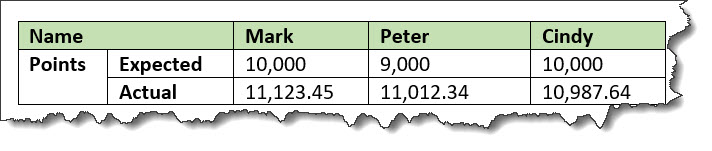
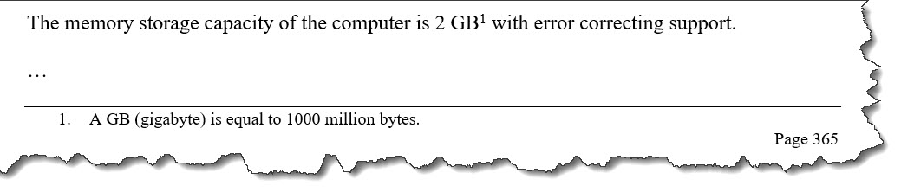
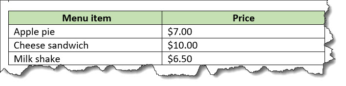
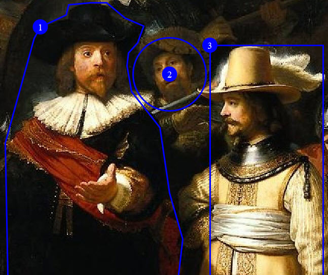

Cover page information
Technical Committee
Chair
- Kristen James Eberlein (kris@eberleinconsulting.com), Eberlein Consulting LLC
Editors
- Kristen James Eberlein (kris@eberleinconsulting.com), Eberlein Consulting LLC
- Robert D. Anderson (robert.dan.anderson@oracle.com), Oracle
Related work
This specification replaces or supersedes Darwin Information Typing Architecture (DITA) Version 1.3, a multi-part OASIS that includes:
- Darwin Information Typing Architecture (DITA) Version 1.3 Part 0: Overview. Latest version: https://docs.oasis-open.org/dita/dita/v1.3/dita-v1.3-part0-overview.html
- Darwin Information Typing Architecture (DITA) Version 1.3 Part 1: Base Edition. Latest version: https://docs.oasis-open.org/dita/dita/v1.3/dita-v1.3-part1-base.html
- Darwin Information Typing Architecture (DITA) Version 1.3 Part 2: Technical Content Edition. Latest version: https://docs.oasis-open.org/dita/dita/v1.3/dita-v1.3-part2-tech-content.html
- Darwin Information Typing Architecture (DITA) Version 1.3 Part 3: All-Inclusive Edition. Latest version: https://docs.oasis-open.org/dita/dita/v1.3/dita-v1.3-part3-all-inclusive.html
Abstract
The Darwin Information Typing Architecture (DITA) 2.0 specification defines both a) a set of document types for authoring and organizing topic-oriented information; and b) a set of mechanisms for combining, extending, and constraining document types.
Citation format
When referencing this specification, the following citation format should be used:
- [DITA-v2.0]
- Darwin Information Typing Architecture (DITA) Version 2.0. Edited by Kristen James Eberlein and Robert D. Anderson. 31 October 2022. Working Draft 34. https://docs.oasis-open.org/dita/dita/v2.0/wd01/dita-v2.0-wd01.html. Latest stage: https://docs.oasis-open.org/dita/dita/v2.0/dita-v2.0.html.
Notices
Copyright © OASIS Open 2022. All Rights Reserved.
All capitalized terms in the following text have the meanings assigned to them in the OASIS Intellectual Property Rights Policy (the "OASIS IPR Policy"). The full Policy may be found at the OASIS website.
This document and translations of it may be copied and furnished to others, and derivative works that comment on or otherwise explain it or assist in its implementation may be prepared, copied, published, and distributed, in whole or in part, without restriction of any kind, provided that the above copyright notice and this section are included on all such copies and derivative works. However, this document itself may not be modified in any way, including by removing the copyright notice or references to OASIS, except as needed for the purpose of developing any document or deliverable produced by an OASIS Technical Committee (in which case the rules applicable to copyrights, as set forth in the OASIS IPR Policy, must be followed) or as required to translate it into languages other than English.
The limited permissions granted above are perpetual and will not be revoked by OASIS or its successors or assigns.
This document and the information contained herein is provided on an "AS IS" basis and OASIS DISCLAIMS ALL WARRANTIES, EXPRESS OR IMPLIED, INCLUDING BUT NOT LIMITED TO ANY WARRANTY THAT THE USE OF THE INFORMATION HEREIN WILL NOT INFRINGE ANY OWNERSHIP RIGHTS OR ANY IMPLIED WARRANTIES OF MERCHANTABILITY OR FITNESS FOR A PARTICULAR PURPOSE.
As stated in the OASIS IPR Policy, the following three paragraphs in brackets apply to OASIS Standards Final Deliverable documents (Committee Specification, OASIS Standards, or Approved Errata).
[OASIS requests that any OASIS Party or any other party that believes it has patent claims that would necessarily be infringed by implementations of this OASIS Standards Final Deliverable, to notify OASIS TC Administrator and provide an indication of its willingness to grant patent licenses to such patent claims in a manner consistent with the IPR Mode of the OASIS Technical Committee that produced this specification.]
[OASIS invites any party to contact the OASIS TC Administrator if it is aware of a claim of ownership of any patent claims that would necessarily be infringed by implementations of this OASIS Standards Final Deliverable by a patent holder that is not willing to provide a license to such patent claims in a manner consistent with the IPR Mode of the OASIS Technical Committee that produced this specification. OASIS may include such claims on its website, but disclaims any obligation to do so.]
[OASIS takes no position regarding the validity or scope of any intellectual property or other rights that might be claimed to pertain to the implementation or use of the technology described in this OASIS Standards Final Deliverable or the extent to which any license under such rights might or might not be available; neither does it represent that it has made any effort to identify any such rights. Information on OASIS' procedures with respect to rights in any document or deliverable produced by an OASIS Technical Committee can be found on the OASIS website. Copies of claims of rights made available for publication and any assurances of licenses to be made available, or the result of an attempt made to obtain a general license or permission for the use of such proprietary rights by implementers or users of this OASIS Standards Final Deliverable, can be obtained from the OASIS TC Administrator. OASIS makes no representation that any information or list of intellectual property rights will at any time be complete, or that any claims in such list are, in fact, Essential Claims.
The name "OASIS" is a trademark of OASIS, the owner and developer of this specification, and should be used only to refer to the organization and its official outputs. OASIS welcomes reference to, and implementation and use of, specifications, while reserving the right to enforce its marks against misleading uses. Please see https://www.oasis-open.org/policies-guidelines/trademark for above guidance.
Introduction
The Darwin Information Typing Architecture (DITA) specification defines a set of document types for authoring and aggregating topic-oriented information, as well as a set of mechanisms for combining, extending, and constraining document types.
Terminology
The key words "MUST", "MUST NOT", "REQUIRED", "SHALL", "SHALL NOT", "SHOULD", "SHOULD NOT, "RECOMMEND", "MAY", and "OPTIONAL" in this document are to be interpreted as described in [RFC-2119] and [RFC8174] when, and only when, they appear in all capitals, as shown here.
The DITA specification uses <keyword>
elements with the @outputclass attribute set to
RFC-2119 for these key words. In general,
normative statements that use such key words pertain to what is
needed for interoperability.
References
This section contains the normative and informative references that are used in this document.
While any hyperlinks included in this section were valid at the time of publication, OASIS cannot guarantee their long-term validity.
Normative references
The following documents are referenced in such a way that some or all of their content constitutes requirements of this document.
- [RFC-2119]
- Bradner, S., "Key words for use in RFCs to Indicate Requirement Levels", BCP 14, RFC 2119, DOI 10.17487/RFC2119, March 1997, <http://www.rfc-editor.org/info/rfc2119>.
- [RFC 3986]
- Berners-Lee, T., Fielding, R., and L. Masinter, "Uniform Resource Identifier (URI): Generic Syntax", STD 66, RFC 3986, DOI 10.17487/RFC3986, January 2005, <http://www.rfc-editor.org/info/rfc3986>.
- [RFC 5646]
- Phillips, A., Ed., and M. Davis, Ed., "Tags for Identifying Languages", BCP 47, RFC 5646, DOI 10.17487/RFC5646, September 2009, <http://www.rfc-editor.org/info/rfc5646>.
- [RFC8174]
- Leiba, B., "Ambiguity of Uppercase vs Lowercase in RFC 2119 Key Words", BCP 14, RFC 8174, DOI 10.17487/RFC8174, May 2017, <http://www.rfc-editor.org/info/rfc8174>.
- [XML 1.0]
- Extensible Markup Language (XML) 1.0 (Fifth Edition), T Bray, J. Paoli, M. E. Maler, F. Yergeau, Editors, W3C Recommendation, 26 November 2008, http://www.w3.org/TR/2008/REC-xml-20081126/. Latest version available at http://www.w3.org/TR/xml.
- [XML 1.1]
- Extensible Markup Language (XML) 1.1 (Second Edition), T. Bray, J. Paoli, M. E. Maler, F. Yergeau, J. Cowan, Editors, W3C Recommendation, 16 August 2006, http://www.w3.org/TR/2006/REC-xml11-20060816/. Latest version available at http://www.w3.org/TR/xml11/.
Informative references
The following referenced documents are not required for the application of this document but might assist the reader with regard to a particular subject area.
- [ANSI Z535.6]
- Product Safety Information in Product Manuals, Instructions And Other Collateral Materials, https://webstore.ansi.org/Standards/NEMA/ansiz5352011r2017-1668876.
- [HTML5]
- HTML 5, Living Standard, https://html.spec.whatwg.org/.
- [ISO 8601]
- ISO/TC 154, Data elements and interchange formats—Information interchange—Representation of dates and times, 3rd edition, http://www.iso.org/iso/catalogue_detail?csnumber=40874, 12 December 2004.
- [ISO/IEC 19757-3]
- ISO/IEC JTC 1/SC 34 Document description and processing languages, Information technology—Document Schema Definition Languages (DSDL)—Part 3: Rule-based validation—Schematron, http://www.iso.org/iso/catalogue_detail.htm?csnumber=40833, 1 June 2006.
- [Namespaces in XML 1.0]
- Namespaces in XML 1.0 (Third Edition), T. Bray, D. Hollander, A. Layman, R. Tobin, H. S. Thompson, Editors, W3C Recommendation, 8 December 2009, http://www.w3.org/TR/2009/REC-xml-names-20091208/. Latest version available at http://www.w3.org/TR/xml-names.
- [Namespaces in XML 1.1]
- Namespaces in XML 1.1 (Second Edition), T. Bray, D. Hollander, A. Layman, R. Tobin, Editors, W3C Recommendation, 16 August 2006, http://www.w3.org/TR/2006/REC-xml-names11-20060816/. Latest version available at http://www.w3.org/TR/xml-names11/.
- [OASIS Table Model]
- XML Exchange Table Model Document Type Definition. Edited by Norman Walsh, 1999. Technical Memorandum TR 9901:1999. https://www.oasis-open.org/specs/tm9901.htm.
- [RELAX NG]
- J. Clark and M. Murata, editors, RELAX NG Specification, http://www.oasis-open.org/committees/relax-ng/spec-20011203.html, OASIS Committee Specification, 3 December 2001.
- [RELAX NG Compact Syntax]
- J. Clark, editor, RELAX NG Compact Syntax, http://www.oasis-open.org/committees/relax-ng/compact-20021121.html, OASIS Committee Specification, 21 November 2002.
- [RELAX NG DTD Compatibility]
- J. Clark and M. Murata, editors, RELAX NG DTD Compatibility, http://www.oasis-open.org/committees/relax-ng/compatibility-20011203.html, OASIS Committee Specification, 3 December 2001.
- [SVG 1.1]
- Scalable Vector Graphics (SVG) Version 1.1 (Second) Edition), E. Dahlstrom, P. Dengler, A. Grasso, C. Lilley, C. McCormack, D. Schepers, J. Watt, Editors, W3C Recommendation, 16 August 2011, https://www.w3.org/TR/SVG11/.
- [Unicode BiDi]
- Unicode Bidirectional Algorithm, M. Davis, A. Lanin, A. Glass, Editors, Unicode Technical Report, 27 August 2021, https://www.unicode.org/reports/tr9/.
- [WCAG 2.1]
- Web Content Accessibility Guidelines (WCAG) Version 2.1, A. Kirkpatrick, J. O Connor, A. Campbell, M. Cooper, Editors, W3C Recommendation, 05 June 2018, https://www.w3.org/TR/WCAG21/.
- [XHTML 1.0]
- XHTML™ 1.0 The Extensible HyperText Markup Language (Second Edition), S. Pemberton, Editor, W3C Recommendation, 1 August 2002, http://www.w3.org/TR/2002/REC-xhtml1-20020801. Latest version available at http://www.w3.org/TR/xhtml1.
- [XHTML 1.1]
- XHTML™ 1.1 – Module-based XHTML – Second Edition, S. McCarron, M. Ishikawa, Editors, W3C Recommendation, 23 November 2010, http://www.w3.org/TR/2010/REC-xhtml11-20101123. Latest version available at http://www.w3.org/TR/xhtml11/.
- [XPointer 1.0]
- XML Pointer Language (XPointer), S. J. DeRose, R. Daniel, P. Grosso, E. Maler, J. Marsh, N. Walsh, Editors, W3C Working Draft (work in progress), 16 August 2002, http://www.w3.org/TR/2002/WD-xptr-20020816/. Latest version available at http://www.w3.org/TR/xptr/.
- [XML Catalogs 1.1]
- OASIS Standard, XML Catalogs Version 1.1, 7 October 2005, https://www.oasis-open.org/committees/download.php/14809/xml-catalogs.html.
- [xml:tm 1.0]
- A. Zydroń, R. Raya, and B. Bogacki, editors, XML Text Memory (xml:tm) 1.0 Specification, http://www.gala-global.org/oscarStandards/xml-tm/, The Localization Industry Standards Association (LISA) xml:tm 1.0, 26 February 2007.
- [XSL 1.0]
- Extensible Stylesheet Language (XSL) Version 1.0, S. Adler, A. Berglund, J. S. Deach, T. Graham, P. Grosso, E. Gutentag, A. Milowski, S. Parnell, J. Richman, S. Zilles, Editors, W3C Recommendation, 15 October 2001, http://www.w3.org/TR/2001/REC-xsl-20011015/. Latest version available at http://www.w3.org/TR/xsl/.
- [XSL 1.1]
- Extensible Stylesheet Language (XSL) Version 1.1, A. Berglund, Editor, W3C Recommendation, 5 December 2006, http://www.w3.org/TR/2006/REC-xsl11-20061205/. Latest version available at http://www.w3.org/TR/xsl11/.
- [XSLT 2.0]
- XSL Transformations (XSLT) Version 2.0, M. Kay, Editor, W3C Recommendation, 23 January 2007, http://www.w3.org/TR/2007/REC-xslt20-20070123/. Latest version available at http://www.w3.org/TR/xslt20.
- [XSLT 3.0]
- XSL Transformations (XSLT) Version 3.0, M. Kay, Editor,W3C Recommendation, 8 June 2017, https://www.w3.org/TR/xslt-30/.
- [XTM 1.0]
- S. Pepper and G. Moore, editors, XML Topic Maps (XTM) 1.0, http://www.topicmaps.org/xtm/index.html, TopicMaps.Org XTM 1.0, 2001.
Normative versions of DITA grammar files
DITA document types and vocabulary modules can be constructed using several XML-document grammar mechanisms. The DITA specification provides coding requirements for DTDs and RNG, and it also includes grammar files that are constructed using those mechanisms. The RNG grammar files are normative.
The DITA Technical Committee chose the RELAX NG XML syntax for the following reasons:
- Easy use of foreign markup
-
The DITA grammar files maintained by OASIS depend on this feature of RELAX NG in order to capture metadata about document-type shells and modules.
The foreign vocabulary feature can be used to include metadata. The DITA 1.3 RNG-based grammar files contained metadata that was used when DTD- and XSD-based grammar files were generated.
The foreign vocabulary feature can also be used to include Schematron rules directly in RELAX NG grammars. Schematron rules can check for patterns that either are not expressible with RELAX NG directly or that would be difficult to express.
- RELAX NG
<div>element - This general grouping element allows for arbitrary organization and grouping of patterns within grammar documents. Such grouping tends to make the grammar documents easier to work with, especially in XML-aware editors.
- Capability of expressing precise restrictions
- RELAX NG is capable of expressing constraints that are more precise than is possible with DTDs. For example, RELAX NG patterns can be context specific such that the same element type can allow different content or attributes in different contexts. However, the grammar files that are provided by the OASIS DITA Technical Committee do not use any features of RELAX NG that cannot be translated into equivalent DTD constructs.
The DITA use of RELAX NG depends on the RELAX NG DTD
Compatibility specification, which provides a mechanism for
defining default-attribute values and embedded documentation.
Processors that use RELAX NG for DITA documents in which required
attributes (for example, the @class attribute) are
not explicitly present must implement the DTD compatibility
specification in order to get default attribute values.
About the specification source
The DITA specification is authored in DITA. It is a complex document that uses many DITA features, including key references (keyrefs), content references (conrefs), and controlled values set in a subject scheme map.
The source files for the DITA specification are managed in a GitHub repository that is maintained by OASIS; they also can be downloaded from OASIS.
The DITA Technical Committee used the following applications to work with the DITA source:
- Antenna House Formatter
- DITA Open Toolkit
- Congility Content Server
- Oxygen Content Fusion
- Oxygen XML Editor
- XMetaL Author Enterprise
DITA terminology, notation, and conventions
The DITA specification uses specific notation and terms to define the components of the DITA standard.
Normative and non-normative information
The DITA specification contains normative and non-normative information.
- Normative information
- Normative information is the formal portion of the specification that describes the rules and requirements that make up the DITA standard and which must be followed.
- Non-normative information
- Non-normative information includes descriptions that provide background, examples, notes, and other useful information that are not formal requirements or rules that must be followed.
All information in the specification is normative unless it is an example, a note, an appendix, or is explicitly labeled as non-normative.
The DITA specification contains examples to help clarify or illustrate specific aspects of the specification. Because examples are specific rather than general, they might not illustrate all aspects or be the only way to accomplish or implement an aspect of the specification. Therefore all examples are non-normative.
Notation
Certain conventions are used throughout the specification to identify attributes and elements.
- attribute types
- Attribute names are preceded by @ to distinguish them from elements or
surrounding text, for example, the
@propsor the@classattribute. - element types
- Element names are delimited with angle brackets (< and >) to distinguish them
from surrounding text, for example, the
<keyword>or the<prolog>element.
In general, the unqualified use of the term map or topic can be
interpreted to mean "a <map> element and any specialization of a
<map> element " or "a <topic> element
or any specialization of a <topic> element." Similarly, the
unqualified use of an element type name (for example, <p>) can be
interpreted to mean the element type or any specialization of the element type.
Basic DITA terminology
Certain terminology is used for basic DITA components.
- DITA document
-
An XML document that conforms to the requirements of this specification.
A DITA document MUST have as its root element one of the following elements:<map>or a specialization of the<map>element<topic>or a specialization of the<topic>element<dita>, which cannot be specialized, but which allows documents with multiple sibling topics
- DITA document type
- A unique set of structural modules, domain modules, and constraint modules that taken together provide the XML element and attribute declarations that define the structure of DITA documents.
- DITA document-type shell
- A set of DTD or RELAX NG declarations that implement a DITA document type by
using the rules and design patterns that are included in the DITA specification.
A DITA document-type shell includes and configures one or more structural
modules, zero or more domain modules, and zero or more constraint modules. With
the exception of the optional declarations for the
<dita>element and its attributes, DITA document-type shells do not declare any element or attribute types directly. - DITA element
- An XML element instance whose type is a DITA element type. DITA elements must
exhibit a
@classattribute that has a value that conforms to the rules for specialization hierarchy specifications. - DITA element type
- An element type that is either one of the base element types that are defined by the DITA specification, or a specialization of one of the base element types.
- map instance
- An occurrence of a map type in a DITA document.
- map type
- A map or a specialization of map that defines a set of relationships among topic instances.
- structural type instance
- An occurrence of a topic type or a map type in a DITA document.
- topic instance
- An occurrence of a topic type in a DITA document.
- topic type
- A topic or a specialization of topic that defines a complete unit of content.
Specialization terminology
Certain terminology is used to discuss DITA specialization.
- base type
- An element or attribute type that is not a specialization. All base types are defined by the DITA specification.
- extension element
- Within a vocabulary module, an element type that can be extended, replaced, or constrained for use in a DITA document type.
- generalization
- The process by which a specialized element is transformed into a less-specialized ancestor element or a specialized attribute is transformed into a less-specialized ancestor attribute. The original specialization-hierarchy information can be preserved in the generalized instance; this allows the original specialized type to be recreated from the generalized instance.
- specialization
- (1) The act of defining new element or attribute types as a semantic refinement of existing element or attribute types
- specialization hierarchy
- The sequence of element or attribute types, from the most general to most
specialized, from which a given element or attribute type is specialized. The
specialization hierarchy for a DITA element is formally declared through its
@classattribute. - structural type
- A topic type or map type.
DITA module terminology
Certain terminology is used to discuss DITA modules.
- attribute domain module
- A domain module that defines a specialization of either the
@baseor@propsattribute. - constraint module
- A set of declarations that imposes additional constraints onto the element or attribute types that are defined in a specific vocabulary module.
- domain module
- A vocabulary module that defines a set of element types or an attribute type that supports a specific subject or functional area.
- element domain module
- A domain module that defines one or more element types for use within maps or topics.
- structural module
- A vocabulary module that defines a top-level map type or topic type.
- vocabulary module
- A set of element or attribute declarations.
Linking and addressing terminology
Certain terminology is used for discussing linking and addressing.
- referenced element
- An element that is referenced by another DITA element. See also referencing element.
- referencing element
- An element that references another DITA element by specifying an addressing attribute. See also referenced element and addressing attribute
- addressing attribute
- An attribute, such as
@conref,@conkeyref,@keyref, and@href, that specifies an address.
Key terminology
Certain terminology is used to discuss keys.
- resource
- For the purposes of keys and key resolution, one of the following:
- An object addressed by URI
- Metadata specified on a resource, such as a
@scopeor@formatattribute - Text or metadata located within a
<topicmeta>element
- key
- A name for a resource. See Using keys for addressing for more information.
- key definition
- A
<topicref>element that binds one or more key names to zero or more resources. - key reference
- An attribute that references a key, such as
@keyrefor@conkeyref. - key space
- A list of key definitions that are used to resolve key references.
- effective key definition
- The definition for a key within a key space that is used to resolve references to that key. A key might have multiple definitions within a key space, but only one of those definitions is effective.
- key scope
- A map or section of a map that defines its own key space and serves as the resolution context for its key references.
Map terminology
Certain terminology is used for DITA maps.
- root map
- The DITA map that is provided as input for a processor.
- submap
- A DITA map that is referenced with a
@scopeattribute that evaluates as "local". The value of the scope attribute might be explicitly set, be defaulted, or cascade from another element. - peer map
- A DITA map that is referenced with a
@scopeattribute that evaluates as "peer". The value of the scope attribute might be explicitly set, be defaulted, or cascade from another element. - map branch
- A
<topicref>element or a specialization of<topicref>, along with any child elements and all resources that are referenced by the original element or its children.
Other terminology
- convenience elements
- Specialized element types that are equivalent to base element types with certain attributes configured.
- user agent
- Software that retrieves and presents web content for end users or is implemented using Web technologies. User agents include web browsers, media players, and plug-ins, as well as operating system shells and web-enabled consumer electronics.
File extensions
DITA uses certain file extensions for topics, maps, and conditional processing profiles.
- DITA topics
- *.dita (preferred)
- DITA maps
- *.ditamap
- Conditional processing profiles
- *.ditaval
Overview of DITA
The Darwin Information Typing Architecture (DITA) is an XML-based architecture for authoring, producing, and delivering topic-oriented, information-typed content that can be reused and single-sourced in a variety of ways. While DITA historically has been driven by the requirements of large-scale technical documentation authoring, management, and delivery, it is a standard that is applicable to any kind of publication or information that might be presented to readers, including interactive training and educational materials, standards, reports, business documents, trade books, travel and nature guides, and more.
DITA is designed for creating new document types and describing new information domains based on existing types and domains. The process for creating new types and domains is called specialization. Specialization enables the creation of specific, targeted XML grammars that can still use tools and design rules that were developed for more general types and domains; this is similar to how classes in an object-oriented system can inherit the methods of ancestor classes.
Because DITA topics are conforming XML documents, they can be readily viewed, edited, and validated using standard XML tools, although realizing the full potential of DITA requires using DITA-aware tools.
Basic concepts
DITA has been designed to satisfy requirements for information typing, semantic markup, modularity, reuse, interchange, and production of different deliverable forms from a single source. These topics provide an overview of the key DITA features and facilities that serve to satisfy these requirements.
- DITA topics
- In DITA, a topic is the basic unit of authoring
and reuse. All DITA topics have the same basic structure: a title and, optionally, a body
of content. Topics can be generic or more specialized; specialized topics represent more
specific information types or semantic roles, for example,
<concept>,<task>, or<reference>See DITA topics for more information. - DITA maps
- DITA maps are documents that organize topics and other resources into structured collections of information. DITA maps specify hierarchy and the relationships among the topics; they also provide the contexts in which keys are defined and resolved. See DITA maps for more information.
- Information typing
- Information typing is the practice of identifying types of topics, such as concept, reference, and task, to clearly distinguish between different types of information. Topics that answer different reader questions (How do I? What is?) can be categorized with different information types. The base information types provided by DITA specializations (for example, technical content, machine industry, and learning and training) provide starter sets of information types that can be adopted immediately by many technical and business-related organizations. See Information typing for more information.
- DITA addressing
- DITA provides two
addressing mechanisms. DITA addresses either are direct URI-based addresses, or they are
indirect key-based addresses. Within DITA documents, individual elements are addressed by
unique identifiers specified on the
@idattribute. DITA defines two fragment-identifier syntaxes; one is the full fragment-identifier syntax, and the other is an abbreviated fragment-identifier syntax that can be used when addressing non-topic elements from within the same topic. See DITA addressing for more information. - Content reuse
- The DITA
@conref,@conkeyref,@conrefend, and@conactionattributes provide mechanisms for reusing content within DITA topics or maps. These mechanisms can be used both to pull and push content. See Content reuse for more information - Conditional processing
- Conditional processing is the filtering or flagging of information based on processing-time criteria. See Conditional processing for more information.
- Configuration
- A document-type shell is an XML grammar file that specifies the elements and attributes that are allowed in a DITA document. The document-type shell integrates structural modules, domain modules, and element-configuration modules. In addition, a document-type shell specifies whether and how topics can nest. See Document-type configuration for more information.
- Specialization
- The specialization feature of DITA allows for the creation of new element types and attributes that are explicitly and formally derived from existing types. This facilitates interchange of conforming DITA content and ensures a minimum level of common processing for all DITA content. It also allows specialization-aware processors to add specialization-specific processing to existing base processing. See Specialization for more information.
- Constraints
- Constraint modules restrict content models or attribute lists for specific element types, remove certain extension elements from an integrated domain module, or replace base element types with domain-provided, extension element types. See Constraints for more information.
Producing different deliverables from a single source
DITA is designed to enable the production of multiple deliverable formats from a single set of DITA content. This means that many rendition details are specified neither in the DITA specification nor in the DITA content; the rendition details are defined and controlled by the processors.
- DITA maps
- Different DITA maps can be optimized for different delivery formats. For example, you might have a book map for printed output and another DITA map to generate online help; each map uses the same content set.
- Specialization
- The DITA specialization facility enables users to create XML elements that can provide appropriate rendition distinctions. Because the use of specializations does not impede interchange or interoperability, DITA users can safely create the specializations that are demanded by their local delivery and rendition requirements, with a minimum of additional impact on the systems and business processes that depend on or use the content. While general XML practices suggest that element types should be semantic, specialization can be used to define element types that are purely presentational in nature. The highlighting domain is an example of such a specialization.
- Conditional processing
- Conditional processing makes it possible to have a DITA topic or map that contains delivery-specific content.
- Content referencing
- The conref mechanism makes it possible to construct delivery-specific maps or topics from a combination of generic components and delivery-context-specific components.
- Key referencing
- The keyref mechanism makes it possible to have key words be displayed differently in different deliverables. It also allows a single link to resolve to different targets in different deliverables.
@outputclassattribute- The
@outputclassattribute provides a mechanism whereby authors can indicate specific rendition intent where necessary. Note that the DITA specification does not define any values for the@outputclassattribute; the use of the@outputclassattribute is processor specific.
While DITA is independent of any particular delivery format, it is a standard that supports the creation of human-readable content. As such, it defines some fundamental document components including paragraphs, lists, and tables. When there is a reasonable expectation that such basic document components be rendered consistently, the DITA specification defines default or suggested renderings.
DITA topics
DITA topics are the basic units of DITA content and the basic units of reuse. Each topic contains a single subject.
The topic as the basic unit of information
In DITA, a topic is the basic unit of authoring
and reuse. All DITA topics have the same basic structure: a title and, optionally, a body
of content. Topics can be generic or more specialized; specialized topics represent more
specific information types or semantic roles, for example,
<concept>, <task>, or
<reference>
DITA topics consist of content units that can be as generic as sets of paragraphs and unordered lists or as specific as sets of instructional steps in a procedure or cautions to be considered before a procedure is performed. Content units in DITA are expressed using XML elements and can be conditionally processed using metadata attributes.
Classically, a DITA topic is a titled unit of information that can be understood in isolation and used in multiple contexts. It is short enough to address a single subject or answer a single question but long enough to make sense on its own and be authored as a self-contained unit. However, DITA topics also can be less self-contained units of information, such as topics that contain only titles and short descriptions and serve primarily to organize subtopics or links or topics that are designed to be nested for the purposes of information management, authoring convenience, or interchange.
DITA topics are used by reference from DITA maps. DITA maps enable topics to be organized in a hierarchy for publication. Large units of content, such as complex reference documents or book chapters, are created by nesting topic references in a DITA map. The same set of DITA topics can be used in any number of maps.
DITA topics also can be used and published individually; for example, one can represent an entire deliverable as a single DITA document that consists of a root topic and nested topics. This strategy can accommodate the migration of legacy content that is not topic-oriented; it also can accommodate information that is not meaningful outside the context of a parent topic. However, the power of DITA is most fully realized by storing each DITA topic in a separate XML document and using DITA maps to organize how topics are combined for delivery. This enables a clear separation between how topics are authored and stored and how topics are organized for delivery.
The benefits of a topic-based architecture
Topics enable the development of usable and reusable content.
While DITA does not require the use of any particular writing practice, the DITA architecture is designed to support authoring, managing, and processing of content that is designed to be reused. Although DITA provides significant value even when reuse is not a primary requirement, the full value of DITA is realized when content is authored with reuse in mind. To develop topic-based information means creating units of standalone information that are meaningful with little or no surrounding context.
By organizing content into topics that are written to be reusable, authors can achieve several goals:
- Content is readable when accessed from an index or search, not just when read in sequence as part of an extended narrative. Since most readers do not read technical and business-related information from beginning to end, topic-oriented information design ensures that each unit of information can be read independently.
- Content can be organized differently for online and print delivery. Authors can create task flows and concept hierarchies for online delivery and create a print-oriented hierarchy to support a narrative content flow.
- Content can be reused in different collections. Since a topic is written to support random access (as by search), it should be understandable when included as part of various product deliverables. Topics permit authors to refactor information as needed, including only the topics that apply to each unique scenario.
- Content is more manageable in topic form whether managed as individual files in a traditional file system or as objects in a content management system.
- Content authored in topics can be translated and updated more efficiently and less expensively than information authored in larger or more sequential units.
- Content authored in topics can be filtered more efficiently, encouraging the assembly and deployment of information subsets from shared information repositories.
Topics written for reuse should be small enough to provide opportunities for reuse but large enough to be coherently authored and read. When each topic is written to address a single subject, authors can organize a set of topics logically and achieve an acceptable narrative content flow.
Disciplined, topic-oriented writing
Topic-oriented writing is a disciplined approach to writing that emphasizes modularity and reuse of concise units of information: topics. Well-designed DITA topics can be reused in many contexts, as long as writers are careful to avoid unnecessary transitional text.
- Conciseness and appropriateness
- Readers who are trying to learn or do something quickly appreciate information that is written in a structure that is easy to follow and contains only the information needed to complete that task or grasp a fact. Recipes, encyclopedia entries, car repair procedures; all serve up a uniquely focused unit of information. The topic contains everything required by the reader.
- Locational independence
- A well-designed topic is reusable in other contexts to the extent that it is context free, meaning that it can be inserted into a new document without revision of its content. A context-free topic avoids transitional text. Phrases like "As we considered earlier" or "Now that you have completed the initial step" make little sense if a topic is reused in a new context in which the relationships are different or no longer exist. A well-designed topic reads appropriately in any new context because the text does not refer the reader outside the topic.
- Navigational independence
-
Most print publications or web pages are a mixture of content and navigation. Internal links lead a reader through a sequence of choices as he or she navigates through a website. DITA supports the separation of navigation from content by assembling independent topics into DITA maps. Nonetheless, writers might want to provide links within a topic to additional topics or external resources. DITA does not prohibit such linking within individual topics. The DITA relationship table enables links between topics and to external content. Since it is defined in the DITA map, it is managed independently of the topic content.
Links in the content are best used for cross-references within a topic. Links from within a topic to additional topics or external resources are best avoided because they limit reuse of the topic. To link from a term or keyword to its definition, use the DITA keyref facility to avoid creating topic-to-topic dependencies that are difficult to maintain. See Key-based addressing
Information typing
Information typing is the practice of identifying types of topics, such as concept, reference, and task, to clearly distinguish between different types of information. Topics that answer different reader questions (How do I? What is?) can be categorized with different information types. The base information types provided by DITA specializations (for example, technical content, machine industry, and learning and training) provide starter sets of information types that can be adopted immediately by many technical and business-related organizations.
Information typing has a long history of use in the technical documentation field to improve information quality. It is based on extensive research and experience, including Robert Horn's Information Mapping and Hughes Aircraft's STOP (Sequential Thematic Organization of Proposals) technique. Note that many DITA topic types are not necessarily closely connected with traditional Information Mapping.
- Develop new information more consistently
- Ensure that the correct structure is used for closely related kinds of information (retrieval-oriented structures like tables for reference information and simple sequences of steps for task information)
- Avoid mixing content types, thereby losing reader focus
- Separate supporting concept and reference information from tasks, so that users can read the supporting information if needed and ignore if it is not needed
- Eliminate unimportant or redundant detail
- Identify common and reusable subject matter
DITA currently defines a small set of well-established information types that reflects
common practices in certain business domains, for example, technical communication and
instruction and assessment. However, the set of possible information types is unbounded.
Through the mechanism of specialization, new information types can be defined as
specializations of the base topic type (<topic>) or as
refinements of existing topics types, for example, <concept>,
<task>, <reference>, or
<learningContent>.
You need not use any of the currently-defined information types. However, where a currently-defined information type matches the information type of your content, use the currently-defined information type, either directly, or as a base for specialization. For example, for information that is procedural in nature, use the task information type or a specialization of task. Consistent use of established information types helps ensure smooth interchange and interoperability of DITA content.
Generic topics
The element type <topic> is the base topic type from which all
other topic types are specialized. All topics have the same basic structure.
For authors, typed content is preferred to support consistency in writing and presentation to readers. The generic topic type is best used only if authors are not trained in information typing or when a specialized topic type is inappropriate. The OASIS DITA standard provides several specialized topic types, including concept, task, and reference that are critical for technical content development.
For those pursuing specialization, specialize new topic types from appropriate ancestors to meet authoring and output requirements.
Topic structure
All topics have the same basic structure, regardless of topic type: title, description or abstract, prolog, body, related links, and nested topics.
@id attribute) and a title. The
basic topic structure consists of the following parts, some of which are optional: - Topic element
- The topic element holds the required
@idattribute and contains all other elements. - Title
- The title contains the subject of the topic.
- Alternate titles
- Titles specifically for use in navigation or search. When not provided, the base title is used for all contexts.
- Short description or abstract
- A short description of the topic or a longer abstract with an embedded short description. The short description might be used both in topic content (as the first paragraph), in generated summaries that include the topic, and in links to the topic. Alternatively, the abstract lets you create more complex introductory content and uses an embedded short description element to define the part of the abstract that is suitable for summaries and link previews.
- Prolog
- The prolog is the container for topic metadata, such as change history, audience, product, and so on.
- Body
- The topic body contains the topic content: paragraphs, lists, sections, and other content that the information type permits.
- Related links
- Related links connect to other topics. When an author creates a link as part of a topic, the topic becomes dependent on the other topic being available. To reduce dependencies between topics and thereby increase the ability to reuse each topic, authors can use DITA maps to define and manage links between topics, instead of embedding links directly in each related topic.
- Nested topics
- Topics can be defined inside other topics. However, nesting requires special care because it can result in complex documents that are less usable and less reusable. Nesting might be appropriate for information that is first converted from desktop publishing or word processing files or for topics that are unusable independent from their parent or sibling topics.
Topic content
The content of all topics, regardless of topic type, is built on the same common structures.
- Topic body
- The topic body contains all content except for that contained in the title or the short description/abstract. The topic body can be constrained to remove specific elements from the content model; it also can be specialized to add additional specialized elements to the content model. The topic body can be generic while the topic title and prolog are specialized.
- Sections and examples
- The body of a topic might contain divisions, such as sections and examples. They might contain
block-level elements like titles and paragraphs and phrase-level elements like API names
or text. It is recommend that sections have titles, whether they are entered directly into
the
<title>element or rendered using a fixed or default title. <bodydiv>- The
<bodydiv>element enables the arbitrary grouping of content within the body of a topic for the purpose of content reuse. The<bodydiv>element does not include a title. For content that requires a title, use<section>or<example>. <div>- The
<div>element enables the arbitrary grouping of content within a topic. The<div>element does not include a title. For content that requires a title, use<section>or<example>or, possibly,<fig>. - Block-level elements
- Paragraphs, lists, figures, and tables are types of "block" elements. As a class of content, they can contain other blocks, phrases, or text, though the rules vary for each structure.
- Phrases and keywords
- Phrase level elements can contain markup to label parts of a paragraph or parts of a sentence as
having special semantic meaning or presentation characteristics, such as
<uicontrol>or<b>. Phrases can usually contain other phrases and keywords as well as text. Keywords can only contain text. - Images
- Images can be inserted to display photographs, illustrations, screen captures, diagrams, and more. At the phrase level, they can display trademark characters, icons, toolbar buttons, and so forth.
- Multimedia
- The
<object>element enables authors to include multimedia, such as diagrams that can be rotated and expanded. The<foreign>element enables authors to include media within topic content, for example, SVG graphics, MathML equations, and so on.
DITA maps
This topic collection contains information about DITA maps and the purposes that they serve. It also includes high-level information about DITA map elements, attributes, and metadata.
Definition of DITA maps
DITA maps are documents that organize topics and other resources into structured collections of information. DITA maps specify hierarchy and the relationships among the topics; they also provide the contexts in which keys are defined and resolved.
Maps draw on a rich set of existing best practices and standards for defining information models, such as hierarchical task analysis. They also support the definition of non-hierarchical relationships, such as matrices and groups, which provide a set of capabilities that has similarities to Resource Description Framework (RDF) and ISO topic maps.
DITA maps use <topicref> elements to reference DITA topics, DITA maps, and
non-DITA resources, for example, HTML and TXT files. The
<topicref> elements can be nested or grouped
to create relationships among the referenced topics, maps, and non-DITA
files; the <topicref> elements can be organized into
hierarchies in order to represent a specific order of navigation or
presentation.
DITA maps impose an architecture on a set of topics. Information architects can use DITA maps to specify what DITA topics are needed to support a given set of user goals and requirements; the sequential order of the topics; and the relationships that exist among those topics. Because DITA maps provide this context for topics, the topics themselves can be relatively context-free; they can be used and reused in multiple different contexts.
DITA maps often represent a single deliverable, for example, a specific Web site, a printed publication, or the online help for a product. DITA maps also can be subcomponents for a single deliverable, for example, a DITA map might contain the content for a chapter in a printed publication or the troubleshooting information for an online help system. The DITA specification provides specialized map types; book maps represent printed publications, subject scheme maps represent taxonomic or ontological classifications, and learning maps represent formal units of instruction and assessment. However, these map types are only a starter set of map types reflecting well-defined requirements.
DITA maps establish relationships through the nesting of <topicref>
elements and the application of the @collection-type
attribute. Relationship tables also can be
used to associate topics with each other based on membership in the same
row; for example, task topics can be associated with supporting concept and
reference topics by placing each group in cells of the same row. During
processing, these relationships can be rendered in different ways, although
they typically result in lists of "Related topics" or "For more information"
links. Like many aspects of DITA, the details about how such linking
relationships are presented is determined by the DITA processor.
DITA maps also define keys and organize the contexts (key scopes) in which key references are resolved.
Purpose of DITA maps
DITA maps enable the scalable reuse of content across multiple contexts. They can be used by information architects, writers, and publishers to plan, develop, and deliver content.
DITA maps support the following uses:
- Defining an information architecture
- Maps can be used to define the topics that are required for a particular audience, even before the topics themselves exist. DITA maps can aggregate multiple topics for a single deliverable.
- Defining what topics to build for a particular output
- Maps reference topics that are included in output processing. Information architects, authors, and publishers can use maps to specify a set of topics that are processed at the same time, instead of processing each topic individually. In this way, a DITA map can serve as a manifest or bill of materials.
- Defining navigation
- Maps can define the online navigation or table of contents for a deliverable.
- Defining related links
- Maps define relationships among the topics they reference. These relationships are defined
by the nesting of elements in the DITA map, relationship tables, and the use of elements on
which the
@collection-typeattribute is set. On output, these relationships might be expressed as related links or the hierarchy of a table of contents (TOC). - Defining an authoring context
- The DITA map can define the authoring framework, providing a starting point for authoring new topics and integrating existing ones.
- Defining keys and key scopes
- Maps can define keys, which provide an indirect addressing mechanism that enhances
portability of content. The keys are defined by
<topicref>elements or specializations of<topicref>elements, such as<keydef>. The<keydef>element is a convenience element; it is a specialized type of a<topicref>element with the following attributes:- A required
@keysattribute - A
@processing-roleattribute with a default value of "resource-only".
- A required
Specialized maps can provide additional semantics beyond those of organization, linking, and indirection. For example, the subjectScheme map specialization adds the semantics of taxonomy and ontology definition.
DITA map attributes
DITA maps have unique attributes that are designed to control the way that relationships are interpreted for different output purposes. In addition, DITA maps share many metadata and linking attributes with DITA topics.
DITA maps often encode structures that are specific to a particular medium or output, for
example, Web pages or a PDF document. Attributes, such as
@deliveryTarget and @toc, are designed to help
processors interpret the DITA map for each kind of output.
Many of the following attributes are not available in DITA topics; individual topics, once separated from the high-level structures and dependencies associated with a particular kind of output, should be entirely reusable regardless of the intended output format.
@cascade-
Specifies whether the default rules for the cascading of metadata attributes in a DITA map apply. The following values are specified:
- merge
- Indicates
that the metadata attributes cascade, and that the
values of the metadata attributes are additive. This is the
processing default for the
@cascadeattribute. - nomerge
- Indicates
that the metadata attributes cascade, but that they are
not additive for
<topicref>elements that specify a different value for a specific metadata attribute. If the cascading value for an attribute is already merged based on multiple ancestor elements, that merged value continues to cascade until a new value is encountered. That is, settingcascade="nomerge"does not undo merging that took place on ancestor elements.
For more information, see Example: How the cascade attribute functions.
@chunk- Specifies that the processor generates an interim set of DITA
topics that are used as the input for the final processing.
This can produce the following output results:
- Multi-topic files are transformed into smaller files, for example, individual HTML files for each DITA topic.
- Individual DITA topics are combined into a single file.
Specifying a value for the
@chunkattribute on a<map>element establishes chunking behavior that applies to the entire map, unless overridden by@chunkattributes that are set on more specific elements in the DITA map. For a detailed description of the@chunkattribute and its usage, see Chunking. @collection-type- The
@collection-typeattribute specifies how the children of a<topicref>element relate to their parent and to each other. This attribute, which is set on the parent element, typically is used by processors to determine how to generate navigation links in the rendered topics. For example, a@collection-typevalue of "sequence" indicates that children of the specifying<topicref>element represent an ordered sequence of topics; processors might add numbers to the list of child topics or generate next/previous links for online presentation. This attribute is available in topics on the<linklist>and<linkpool>elements, where it has the same behavior. Where the@collection-typeattribute is available on elements that cannot directly contain elements, the behavior of the attribute is undefined. @keys- Specifies one or more key names.
@keyscope- Defines a new scope for key definition and resolution, and gives the scope one or more names. For more information about key scopes, see Indirect key-based addressing.
@linking-
By default, the relationships between the topics that are referenced in a map are reciprocal:
- Child topics link to parent topics and vice versa.
- Next and previous topics in a sequence link to each other.
- Topics in a family link to their sibling topics.
- Topics referenced in the table cells of the same row in a relationship table link to each other. A topic referenced within a table cell does not (by default) link to other topics referenced in the same table cell.
This behavior can be modified by using the
@linkingattribute, which enables an author or information architect to specify how a topic participates in a relationship. The following values are valid:linking="none"- Specifies that the topic does not exist in the map for the purposes of calculating links.
linking="sourceonly"- Specifies that the topic will link to its related topics but not vice versa.
linking="targetonly"- Specifies that the related topics will link to it but not vice versa.
linking="normal"- Default value. It specifies that linking will be reciprocal (the topic will link to related topics, and they will link back to it).
Authors also can create links directly in a topic by using the
<xref>or<link>elements, but in most cases map-based linking is preferable, because links in topics create dependencies between topics that can hinder reuse.Note that while the relationships between the topics that are referenced in a map are reciprocal, the relationships merely imply reciprocal links in generated output that includes links. The rendered navigation links are a function of the presentation style that is determined by the processor.
@processing-role- Specifies whether the topic or map referenced is processed
normally or treated as a resource that is only included in
order to resolve key or content references.
- processing-role="normal"
- The topic is a readable part of the information set. It
is included in navigation and search results. This is the
default value for the
<topicref>element. - processing-role="resource-only"
- The topic is used only as a resource for processing. It
is not included in navigation or search results, nor is
it rendered as a topic. This is the default value for the
<keydef>element.
If the
@processing-roleattribute is not specified locally, the value cascades from the closest element in the containment hierarchy. @search- Specifies whether the topic is included in search indexes.
@toc- Specifies whether topics are excluded from navigation output, such as a Web
site map or an online table of contents. By default,
<topicref>hierarchies are included in navigation output; relationship tables are excluded.
Examples of DITA maps
Example: DITA map that references a subordinate map
This example illustrates how one map can reference a subordinate map using either
<mapref> or the basic <topicref>
element.
The following code sample illustrates how a DITA map can use the specialized
<mapref> element to reference another DITA map:
<map>
<title>DITA work at OASIS</title>
<topicref href="oasis-dita-technical-committees.dita">
<topicref href="dita_technical_committee.dita"/>
<topicref href="dita_adoption_technical_committee.dita"/>
</topicref>
<mapref href="oasis-processes.ditamap"/>
<!-- ... -->
</map>The <mapref> element is a specialized <topicref>
intended to make it easier to reference another map; use of <mapref> is
not required for this task. This map also could be tagged in the following way:
<map>
<title>DITA work at OASIS</title>
<topicref href="oasis-dita-technical-committees.dita">
<topicref href="dita_technical_committee.dita"/>
<topicref href="dita_adoption_technical_committee.dita"/>
</topicref>
<topicref href="oasis-processes.ditamap" format="ditamap"/>
<!-- ... -->
</map>With either of the above examples, during processing, the map is resolved in the following way:
<map>
<title>DITA work at OASIS</title>
<topicref href="oasis-dita-technical-committees.dita">
<topicref href="dita_technical_committee.dita"/>
<topicref href="dita_adoption_technical_committee.dita"/>
</topicref>
<!-- Contents of the oasis-processes.ditamap file -->
<topicref href="oasis-processes.dita">
<!-- ... -->
</topicref>
<!-- ... -->
</map>Example: DITA map with a simple relationship table
This example illustrates how to interpret a basic three-column relationship table used to maintain links between concept, task, and reference material.
The following example contains the markup for a simple relationship table:
<map>
<!-- ... -->
<reltable>
<relheader>
<relcolspec type="concept"/>
<relcolspec type="task"/>
<relcolspec type="reference"/>
</relheader>
<relrow>
<relcell>
<topicref href="A.dita"/>
</relcell>
<relcell>
<topicref href="B.dita"/>
</relcell>
<relcell>
<topicref href="C1.dita"/>
<topicref href="C2.dita"/>
</relcell>
</relrow>
</reltable>
</map>A DITA-aware tool might represent the relationship table graphically:
| type="concept" | type="task" | type="reference" |
|---|---|---|
| A | B |
C1 |
When the output is generated, the topics contain the following linkage:
- A
- Links to B, C1, and C2
- B
- Links to A, C1, and C2
- C1, C2
- Links to A and B
Example: How the @collection-type and @linking attributes
determine links
In this scenario, a simple map establishes basic hierarchical and relationship table
links. The @collection-type and @linking attributes are then
added to modify how links are generated.
The following example illustrates how linkage is defined in a DITA map:
<topicref href="A.dita" collection-type="sequence">
<topicref href="A1.dita"/>
<topicref href="A2.dita"/>
</topicref>
<reltable>
<relrow>
<relcell><topicref href="A.dita"/></relcell>
<relcell><topicref href="B.dita"/></relcell>
</relrow>
</reltable>When the output is generated, the topics contain the following linkage. Sequential
(next/previous) links between A1 and A2 are present because of the
@collection-type attribute on the parent:
- A
- Links to A1, A2 as children
- A1
- Links to A as a parent
- A2
- Links to A as a parent
- B
- Links to A as related
The following example illustrates how setting the @linking attribute can change
the default behavior:
@linking attribute<topicref href="A.dita" collection-type="sequence">
<topicref href="B.dita" linking="none"/>
<topicref href="A1.dita"/>
<topicref href="A2.dita"/>
</topicref>
<reltable>
<relrow>
<relcell><topicref href="A.dita"/></relcell>
<relcell linking="sourceonly"><topicref href="B.dita"/></relcell>
</relrow>
</reltable>When the output is generated, the topics contain the following linkage:
- A
- Links to A1, A2 as children
- A1
- Links to A as a parent
- A2
- Links to A as a parent
- B
- Links to A as a related topic
Example: How the @cascade attribute functions
The following example illustrates how the @cascade attribute can be used
to fine tune how the values for the @platform attribute apply to topics referenced
in a DITA map.
Here a DITA map contains a collection of topics that apply to Windows, Linux, and Macintosh OS; it also contains a topic that is only applicable to users running the application on Linux.
<map product="PuffinTracker" platform="win linux mac" cascade="nomerge">
<title>Puffin Tracking Software</title>
<topicref href="introduction.dita"/>
<topicref href="setting-up-the-product.dita"/>
<topicref href="linux-instructions.dita" platform="linux"/>
</map>The values of the @platform attribute set at the map level cascade throughout
the map and apply to the introduction.dita and
setting-up-the-product.dita topics. However, since the value of the
@cascade attribute is set to nomerge, the value of the
@platform attribute for the linux-instructions.dita topic
does not merge with the values that cascade from above in the DITA map. The effective value of
the @platform attribute for linux-instructions.dita is
linux.
The same results are produced by the following mark-up:
<map product="PuffinTracker" platform="win linux mac">
<title>Puffin Tracking Software</title>
<topicref href="introduction.dita"/>
<topicref href="setting-up-the-product.dita"/>
<topicref href="linux-instructions.dita" platform="linux" cascade="nomerge"/>
</map>DITA metadata
Metadata can be applied in both DITA topics and DITA maps. Metadata that is specified in DITA topics can be supplemented or overridden by metadata that is assigned in a DITA map. This design facilitates the reuse of DITA topics in different DITA maps and use-specific contexts.
DITA defines a core set of metadata elements to cover a variety of common scenarios. Because metadata requirements vary so widely, it is expected that few implementations will use the full range of these elements.
DITA also provides two generic elements,
<data> and
<othermeta>, which are intended for use when
the core metadata elements do not provide the correct semantic. In
addition, <data> is especially useful as a
specialization base.
Requirements for rendering metadata vary widely. For that reason, any rendering of metadata in published content is left up to implementations.
Metadata elements
Metadata elements are available in both topics and DITA maps. This design enables authors and information architects to use identical metadata markup in both topics and maps.
When used in maps, metadata elements are located in the <topicmeta>
element. When used in topics, metadata elements are located in the
<prolog> element.
In general, specifying metadata in a
<topicmeta> element that
is a child of a <topicref> element is
equivalent to specifying it in the <prolog>
element of the referenced topic. The value of specifying the metadata
in the map is that the topic then can be
reused in other maps where different metadata might apply. Many items
in the <topicmeta> element cascade to nested
<topicref> elements within the map. See Reconciling topic and map metadata elements for information
about which elements cascade.
Metadata attributes
Metadata attributes specify properties of the content that can be used to determine how the content is processed. Specialized metadata attributes can be defined to enable specific business-processing needs, such as semantic processing and data mining.
Metadata attributes typically are used for the following purposes:
- Filtering content based on the attribute values, for example, to suppress or publish profiled content
- Flagging content based on the attribute values, for example, to highlight specific content on output
- Performing custom processing, for example, to extract business-critical data and store it in a database
The base DITA vocabulary includes five specializations of the
@props attribute as domains:
@audience, @deliveryTarget,
@platform, @product, and
@otherprops. These five attributes are included in
all the map and topic document-type shells
that are provided with the
specification.
Metadata attributes fall into the following categories.
- Architectural attributes
- The
@class,@DITAArchVersion, and@specializationsattributes provide metadata about the DITA source itself, such as what version of the grammar is used. These attributes are not intended for use in authored content. - Filtering and flagging attributes
-
The
@propsattribute and its specializations are intended for filtering. This includes the five specializations added to the OASIS document-type shells:@audience,@deliveryTarget,@platform,@product, and@otherprops.These attributes plus the
@revattribute are intended for flagging. - Other metadata attributes
- The
@statusand@importanceattributes, many of the attributes available on the<ux-window>element, as well as custom attributes specialized from@base, are intended for application-specific behaviors. Such behaviors include aiding in search and retrieval, as well as controlling how a user assistance window is rendered. - Translation and localization attributes
- The
@dir,@translate, and@xml:langattributes are intended for use with translating and localizing content.
Metadata in maps and topics
Metadata can be specified in both maps and topics. In most cases, metadata in the map either supplements or overrides metadata that is specified at the topic level.
Metadata can be specified by all the following mechanisms:
- Metadata elements that are located in the DITA map
- Specifying attributes on the
<map>or<topicref>elements - Metadata elements or attributes that are located in the DITA topic
Metadata elements and attributes in a map might apply to an individual topic, a set of
topics, or globally for the entire document. Most metadata elements authored within a
<topicmeta> element associate metadata with the parent element and
its children. Because the topics in a branch of the hierarchy typically have some common
subjects or properties, this is a convenient mechanism to define metadata for a set of
topics.
When the same metadata element or attribute is specified in both a map and a topic, by default the value in the map takes precedence. The assumption is that the map author has more knowledge of the reusing context than the topic author.
Window metadata for user assistance
Some user assistance topics might need to be displayed in a
specific window or viewport, and this windowing metadata can be defined
in the DITA map within the <ux-window>
element.
In some help systems, a topic might need to be displayed in a window with a specific size or set of features. For example, a help topic might need to be displayed immediately adjacent to the user interface control that it supports in a window of a specific size that always remains on top, regardless of the focus within the operating system.
Application metadata that is specified on the
<ux-window> element is closely tied to that
specific application. It might be ignored when content is rendered
for other uses.
Accessibility and translation
Content needed
Accessibility
DITA has markup and features that enable producing output that is accessible by all audiences.
Handling accessibility in content and in processors
Accessibility requirements vary depending on how content is rendered. Making content accessible is work that involves both content authors and the processors that render DITA content.
The foundation for accessible content is the Web Content Accessibility Guidelines (WCAG) from W3C. While content formats and content authors might have unique or additional accessibility needs, the rules outlined in the WCAG provide a reference point for considering how to create accessible content in DITA.
The guidelines fall into several categories:
- General content guidelines
-
Many accessibility guidelines and best practices apply to all content. Such guidelines are generally outside the scope of this specification.
For example, a guideline might recommend against multiple levels of nested unordered lists, because such lists are difficult to navigate with a screen reader. As a general content standard, DITA cannot prohibit such nesting. However, implementations can prevent such nesting through business processes or rule-based processing such as Schematron.
Another common accessibility recommendation is to avoid flashing or flickering video content. The DITA
<video>element is a general mechanism for including video, and the content of that video is outside the scope of this specification. - Markup guidelines
-
Other accessibility guidelines require the use of specific DITA markup. Such guidelines are addressed in this specification.
For example, a requirement that images specify alternate text requires the use of the
<alt>element within the<image>element. However, a guideline that the alternate text be meaningful is not something that can be enforced by DITA markup. - Guidelines that require enablement by DITA processors
-
Some accessibility guidelines require processors to take advantage of specific DITA markup.
Authors can use specific markup to enable accessible output. For example, by specifying a header row in a table, an author can define a header for every cell in the table body. However, to make the relationship between the table cell and header cell specific in a rendered format like HTML, the processor must make those relationships explicit in the output.
- Processor requirements outside the scope of DITA markup
- Processors have many other accessibility concerns that are
outside the scope of this specification.
For example, WCAG has a requirement for contrast ratios when rendering substantive content. That requirement is unrelated to the source content. Such requirements apply to rendering mechanisms such as the CSS that is used to style DITA content in a browser.
As another example, a DITA processor might generate automated headings or include characters in output, such as:
- A section heading for an element specialized from
<section>, such as Requirements for the<prereq>element in a task topic - The greater-than character (>) that is typically used between phrases that are part of a menu navigation
It is up to the processor to use correct rendering for these cases, such as heading markup and accessible text alternatives for character displays such as the menu separator.
- A section heading for an element specialized from
Accessible content
DITA provides elements and attributes that are designed to make content accessible.
Many common types of content are not accessible to all readers. For example, an image cannot be rendered by a screen reader, and a video cannot be rendered in many formats. DITA includes markup features that are designed to convey alternate versions of such content.
- Alternate text for images
-
Alternate text is a textual description of an image. Systems often render the alternate text when the reader is using assistive technology or the image cannot be rendered.
The
<alt>element is available inside of images as a way to specify alternate text. - Alternate text for areas of image maps
-
Within an image map, each defined area of the image can specify a cross reference. Whether or not the cross reference actually specifies a URI reference, the text within that cross reference functions as alternate or hover text.
- Long descriptions for media
-
A long description reference is a reference to a textual description of a graphic or object. This is typically used to provide an extended description when the graphic or object is too complicated to describe with alternate text.
Processors can handle the reference in the following ways:
- Render the graphic or object as a link
- Make the extended description available to accessibility tools such as screen readers
While DITA provides the markup to enable these accessibility
features, it is up to DITA processors to render output that uses
the markup properly. For example, when a processor generates HTML5,
alternate text must be specified using the @alt
attribute on the <img> element.
Accessible tables
The complexity of table rendering requires authors and processors to be aware of several table-specific elements and attributes if they want to ensure that tables are accessible.
DITA topics support two types of tables: complex table and simple table.
The <table> element uses the OASIS
Exchange Table Model, a simplification of the
CALS table model. The complex table provides a wide
variety of controls over the display properties of the data and
even the table structure itself.
The <simpletable> element is structurally
less complex than the <table> element and so is an
easier base for specialization. It reflects a content model that
is close to the HTML table. The
<simpletable> element does not provide
much control over formatting, although it
permits titles and row and column
spanning.
The following list provides information about table features that
have an effect on table accessibility. Note that some features are
applicable only to the complex tables that are produced by the
<table> element.
- Captions
- Both table models allow for a caption to be provided by using
the
<title>element. - Cell headers
- When entries within a table function as headers, but do not
fall into the categories of column or row headers, the
@idand@headersattributes on table cells can be used to associate table cells with headers. Specifying the@idattribute on the cell that functions as a header, and setting the@headersattribute to that ID value on the table cell for which it acts as a header serves to relate table cells to headers. - Column headers
-
Column headers are created using a header row, where each cell in the header row provides a header for other cells in its column. Both table models provide support for column headers:
- Complex table
- The
<thead>element can provide one or more header rows. - Simple table
- The
<sthead>element can provide a single row header.
- Row headers
-
Row headers are created using a header column, where each cell in the header column provides a header for other cells in its row. Both table models provide support for row headers:
- Complex table
- (First column) The
@rowheaderattribute can be set to firstcol on the<table>element to indicate that the first column is a header. Alternatively, the@scopeattribute for each entry in the first column can be set to row to indicate that those cells are headers for their respective rows. - Simple table
- The
@keycolattribute can be set to the number of the column that functions as a header.
- Summaries
- (Complex table only) While the
@summaryattribute on tables is deprecated in HTML5, the<desc>element within a<table>can be used to store a summary. Since the content of the<desc>element is typically rendered as part of the content flow when used within<table>, processors might need special configuration to support this usage.
Examples of DITA markup for accessibility
This section contains examples of how DITA markup facilitates accessibility.
Example: Alternate text for an image
In this scenario, an image of a ticketing workflow also provides alternate text that describes the image.
The following code sample references an image and provides alternate text:
<image href="workflow.png">
<alt>A workflow diagram that shows a ticketing workflow.
The workflow states are described in the text.</alt>
</image>Example: Alternate text for an image map
In this scenario, alternate text is provided for an image map.
The following image shows "The Brontë Sisters". This portrait is in the collection of the National Portrait Gallery, London. The images of the three Brontë sisters (Charlotte, Emily, and Ann) are linked to their Wikipedia pages.

The following code sample shows how the
<imagemap> element is used to generate the
above image map, as well as how alternate text can be provided to
ensure accessibility:
<imagemap id="bronte-sisters">
<image href="Bronte_Sisters.jpg" id="bronte-sisters">
<alt>Portrait of "The Brontë Sisters"</alt>
</image>
<!-- Area #1: Charlotte Brontë -->
<area>
<shape>poly</shape>
<coords>408, 345, 410, 223, 360, 158, 369, 98, 363, 65, 355, 46,
337, 34, 318, 36, 313, 46, 295, 58, 290, 69, 279, 79, 278, 95,
281, 103, 273, 116, 282, 141, 292, 148, 298, 165, 266, 196, 252,
211, 245, 249, 227, 272, 224, 315, 234, 350, 408, 349</coords>
<xref format="html" scope="external"
href="https://en.wikipedia.org/wiki/Charlotte_Bront%C3%AB">
Charlotte Brontë</xref>
</area>
<!-- Area #2: Emily Brontë -->
<area>
<shape>poly</shape>
<coords>228, 343, 211, 289, 203, 278, 194, 249, 204, 221, 177, 178,
161, 157, 180, 138, 202, 112, 201, 69, 175, 52, 144, 45, 114, 52,
102, 75, 98, 90, 103, 114, 118, 131, 135, 149, 141, 154, 118,
197, 100, 226, 86, 234, 85, 254, 121, 318, 109, 328, 123, 350,
230, 349</coords>
<xref format="html" scope="external"
href="https://en.wikipedia.org/wiki/Emily_Bront%C3%AB">
Emily Brontë</xref>
</area>
<!-- Area #3: Anne Brontë -->
<area>
<shape>poly</shape>
<coords>0, 347, 1, 252, 29, 225, 24, 195, 30, 161, 41, 123, 76,
110, 103, 119, 119, 137, 135, 154, 129, 172, 116, 195, 98, 224,
85, 231, 81, 252, 116, 317, 106, 329, 119, 350</coords>
<xref format="html" scope="external"
href="https://en.wikipedia.org/wiki/Anne_Bront%C3%AB">
Anne Brontë</xref>
</area>
</imagemap>The <alt> element provides alternate text for
the image as a whole, and the content of the
<xref> elements provide alternate text for
each of the linked regions.
The following image shows the areas that are defined by the image map:

The following table lists the link targets and alternate text for each of the defined areas:
| Area | Alternate text | Link target |
|---|---|---|
| 1 | Charlotte Brontë | Wikipedia entry for Charlotte Brontë |
| 2 | Emily Brontë | Wikipedia entry for Emily Brontë |
| 3 | Anne Brontë | Wikipeda entry for Anne Brontë |
Example: Fallback information for multimedia content
In this scenario, fallback content is provided for systems that cannot display multimedia content.
The referenced video provides an image as fallback. If a system does not support video, it will display the image video-not-available.png, which specifies its own alternate text.
<video height="300px"
loop="false"
muted="false"
poster="demo1-video-poster"
width="400px">
<desc>A video that illustrates how to conduct a system health scan.</desc>
<fallback>
<image href="video-not-available.png">
<alt>This video cannot be displayed.</alt>
</image>
</fallback>
<media-source href="video.mp4" format="video/mp4"/>
</video>Example: Simple table with accessibility markup
In this scenario, the topic author uses a header row and the
@keycol attribute to ensure that the table is
accessible
In the following code sample, the <sthead>
element identifies the header row, and @keycol
attribute identifies the header column:
<simpletable frame="all" relcolwidth="1* 1*" keycol="1">
<sthead>
<stentry>Type of room</stentry>
<stentry>Price per day</stentry>
</sthead>
<strow>
<stentry>Single bed</stentry>
<stentry>$125.00</stentry>
</strow>
<strow>
<stentry>Two double beds</stentry>
<stentry>$150.00</stentry>
</strow>
<strow>
<stentry>Queen or king bed</stentry>
<stentry>$165.00</stentry>
</strow>
</simpletable>This table might be rendered in the following way:

Example: Complex table with accessibility markup
In the following code sample, the table uses the
<thead> element to identify header rows and
the @rowheader attribute to identify a header column.
These header relationships can be used to
automatically create renderings of the table in other formats, such
as HTML, that can be navigated using a screen reader or other
assistive technology.
<table frame="all" rowheader="firstcol">
<title>Sample of automated table accessibility</title>
<desc>Names are listed in the column c1. Points are listed in both data columns, with
expected points in column c2 and actual points in column c3.</desc>
<tgroup cols="3">
<colspec colname="c1"/>
<colspec colname="c2"/>
<colspec colname="c3"/>
<thead>
<row>
<entry morerows="1">Name</entry>
<entry namest="c2" nameend="c3">Points</entry>
</row>
<row>
<entry>Expected</entry>
<entry>Actual</entry>
</row>
</thead>
<tbody>
<row>
<entry>Mark</entry>
<entry>10,000</entry>
<entry>11,123.45</entry>
</row>
<row>
<entry>Peter</entry>
<entry>9,000</entry>
<entry>11,012.34</entry>
</row>
<row>
<entry>Cindy</entry>
<entry>10,000</entry>
<entry>10,987.64</entry>
</row>
</tbody>
</tgroup>
</table>In this code sample, navigation information for assistive technology is derived from two sources:
- The
<thead>element contains two rows, and indicates that each entry in those header rows is a header cell for that column. This means that each body cell can be associated with the header cell or cells above the column. For example, in the second body row, the entry "Peter" is associated with the header "Name"; similarly, the entry "9,000" is associated with the headers "Expected" and "Points". - The
@rowheaderattribute that is specified on<table>indicates that the first column plays a role as a row header. This means that the header cell in column one is associated with the other body cells in the same row. For example, in the second body row, the entry "9,000" is associated with the header "Peter".
As a result of these two sets of headers, a rendering of the table associates the entry "9,000" with three headers: "Peter", "Expected", and "Points", thus making it fully navigable by a screen reader or other assistive technology. When the user navigates to the cell containing "9,000", it can report the headers "Peter", "Expected", and "Points" as the headers for that cell.
The output might be rendered in the following way:

The rendered HTML used by a screen reader might look as follows.
<table>
<caption>
<span>Sample of automated table accessibility</span>
<span class="desc">Names are listed in the column c1. Points are listed in both data columns,
with expected points in column c2 and actual points in column c3.</span>
</caption>
<colgroup><col><col><col></colgroup>
<thead>
<tr>
<th id="source__entry__1" rowspan="2">Name</th>
<th id="source__entry__2" colspan="2">Points</th>
</tr>
<tr>
<th id="source__entry__3">Expected</th>
<th id="source__entry__4">Actual</th>
</tr>
</thead>
<tbody>
<tr>
<th scope="row" id="source__entry__5" headers="source__entry__1">Mark</th>
<td headers="source__entry__5 source__entry__2 source__entry__3">10,000</td>
<td headers="source__entry__5 source__entry__2 source__entry__4">11,123.45</td>
</tr>
<tr>
<th scope="row" id="source__entry__8" headers="source__entry__1">Peter</th>
<td headers="source__entry__8 source__entry__2 source__entry__3">9,000</td>
<td headers="source__entry__8 source__entry__2 source__entry__4">11,012.34</td>
</tr>
<tr>
<th scope="row" id="source__entry__11" headers="source__entry__1">Cindy</th>
<td headers="source__entry__11 source__entry__2 source__entry__3">10,000</td>
<td headers="source__entry__11 source__entry__2 source__entry__4">10,987.64</td>
</tr>
</tbody>
</table>Example: Complex table with some manually-specified accessibility markup
In some complex tables, the <thead> element and
@rowheader attribute might not be enough to support all accessibility needs.
Assume that a table is designed so that names are listed across the top
row, instead of in the first column, with both the first and second columns also functioning
as headers:

Here, the @rowheader
attribute cannot be used, because it is only able to specify the
first column as a header column. In this case, the
@scope attribute can be used to indicate that
entries in the first and second columns function as headers for the
entire row (or row group, in the case of a cell that spans more than
one row).
The following code sample demonstrates the use of the
@scope attribute to facilitate navigation of these
rows by a screen reader or other assistive technology. Note that the <thead>
element is still used to imply a header relationship with the names
at the top of each column.
<table frame="all">
<title>Sample with two header columns</title>
<tgroup cols="5">
<colspec colname="c1"/>
<colspec colname="c2"/>
<colspec colname="c3"/>
<colspec colname="c4"/>
<colspec colname="c5"/>
<thead>
<row>
<entry namest="c1" nameend="c2">Name</entry>
<entry>Mark</entry>
<entry>Peter</entry>
<entry>Cindy</entry>
</row>
</thead>
<tbody>
<row>
<entry morerows="1" scope="rowgroup"><b>Points</b></entry>
<entry scope="row"><b>Expected</b></entry>
<entry>10,000</entry>
<entry>9,000</entry>
<entry>10,000</entry>
</row>
<row>
<entry scope="row"><b>Actual</b></entry>
<entry>11,123.45</entry>
<entry>11,012.34</entry>
<entry>10,987.64</entry>
</row>
</tbody>
</tgroup>
</table>The rendered HTML used by a screen reader might look as follows.
<table>
<caption>Sample with two header columns</caption>
<colgroup><col><col><col><col><col></colgroup>
<thead>
<tr>
<th id="source__entry__1" colspan="2">Name</th>
<th id="source__entry__2">Mark</th>
<th id="source__entry__3">Peter</th>
<th id="source__entry__4">Cindy</th>
</tr>
</thead>
<tbody>
<tr>
<th headers="source__entry__1" rowspan="2" scope="rowgroup"><strong class="ph b">Points</strong></th>
<th headers="source__entry__1" scope="row"><strong class="ph b">Expected</strong></th>
<td headers="source__entry__2">10,000</td>
<td headers="source__entry__3">9,000</td>
<td headers="source__entry__4">10,000</td>
</tr>
<tr>
<th headers="source__entry__1" scope="row"><strong class="ph b">Actual</strong></th>
<td headers="source__entry__2">11,123.45</td>
<td headers="source__entry__3">11,012.34</td>
<td headers="source__entry__4">10,987.64</td>
</tr>
</tbody>
</table>Example: Complex table with manual accessibility markup
In extremely complex tables, such as those with a single header cell in the middle of the
table, fine-grained accessibility controls are available to explicitly associate any content
cell with any header cell. This might also be useful for cases where processors do not support
implied accessibility relationships that exist based on header markup such
as <thead>.
In the following sample, header cells are identified using the
@id attribute, which is referenced using the
@headers attribute on appropriate content cells.
This makes all header relationships in the table explicit. Note that
this sample ignores the @scope attribute, which could
be used to exercise manual control without setting as many attribute
values; it also ignores the fact that <thead>
creates a header relationship even when the @id and
@headers attributes are not used.
<table frame="all">
<title>Sample with fully manual accessibility control</title>
<desc>Names are listed in the column c1. Points are listed in both data columns, with
expected points in column c2 and actual points in column c3.</desc>
<tgroup cols="3">
<colspec colname="c1"/>
<colspec colname="c2"/>
<colspec colname="c3"/>
<thead>
<row>
<entry morerows="1"> </entry>
<entry namest="c2" nameend="c3" id="pts">Points</entry>
</row>
<row>
<entry id="exp" headers="pts">Expected</entry>
<entry id="act" headers="pts">Actual</entry>
</row>
</thead>
<tbody>
<row>
<entry id="name1">Mark</entry>
<entry headers="name1 exp pts">10,000</entry>
<entry headers="name1 act pts">11,123.45</entry>
</row>
<row>
<entry id="name2">Peter</entry>
<entry headers="name2 exp pts">9,000</entry>
<entry headers="name2 act pts">11,012.34</entry>
</row>
<row>
<entry id="name3">Cindy</entry>
<entry headers="name3 exp pts">10,000</entry>
<entry headers="name3 act pts">10,987.64</entry>
</row>
</tbody>
</tgroup>
</table>The output might be rendered in the following way:

The rendered HTML used by a screen reader might look as follows.
<table>
<caption>Sample with fully manual accessibility control
<span class="desc">Names are listed in the column c1. Points are listed in both data columns, with
expected points in column c2 and actual points in column c3.</span></caption>
<colgroup><col><col><col></colgroup>
<thead>
<tr>
<th id="entry__1" rowspan="2"> </th>
<th id="pts" colspan="2">Points</th>
</tr>
<tr>
<th id="exp" headers="pts">Expected</th>
<th id="act" headers="pts">Actual</th>
</tr>
</thead>
<tbody>
<tr>
<td id="name1" headers="entry__1">Mark</td>
<td headers="name1 pts exp">10,000</td>
<td headers="name1 pts act">11,123.45</td>
</tr>
<tr>
<td id="name2" headers="entry__1">Peter</td>
<td headers="name2 pts exp">9,000</td>
<td headers="name2 pts act">11,012.34</td>
</tr>
<tr>
<td id="name3" headers="entry__1">Cindy</td>
<td headers="name3 pts exp">10,000</td>
<td headers="name3 pts act">10,987.64</td>
</tr>
</tbody>
</table>Translation and localization
DITA has markup that facilitates translation and localization.
This markup includes the @xml:lang attribute, the
@dir attribute, and the @translate
attribute.
The @xml:lang attribute
The @xml:lang attribute specifies the
language and optional locale of the content that is contained in an
element. The @xml:lang attribute is described in the
XML Recommendation.
Since the @xml:lang attribute is an inherent
property of the XML document, it does not behave in the same way as
other DITA metadata attributes do.
Within topic and map documents, the @xml:lang
attribute applies to the content and attributes that are contained by
the element on which it is specified. This means that it supplies a
value for lower-level elements in the containment hierarchy that do
not supply their own value for the @xml:lang
attribute. However, any such value is overridden when an
@xml:lang attribute with a different value is
specified on lower-level elements in the containment hierarchy.
When the @xml:lang attribute is specified on a topic reference, it does not
apply to the referenced resource. This means that the value of the @xml:lang
attribute on a topic reference (or the root element of the map) does not automatically supply
a default value for the referenced topic or DITA map.
For topic and map documents, if no value for the @xml:lang value is specified
explicitly or on a higher-level element in the containment hierarchy, a processor-determined
default value is assumed.
Recommendations for the @xml:lang
attribute
Specifying the @xml:lang attribute in the
DITA source facilitates translation and helps ensure that processors
will handle content appropriately. Accordingly, this specification
makes certain best-practices recommendations
for where the @xml:lang attribute should be
set.
Setting the @xml:lang attribute in the source-language document facilitates
the translation process. Some translation tools do not support adding new markup to the
document that is being translated, so if the source language content does not set the
@xml:lang attribute, it might be difficult or impossible for a translator to
add the @xml:lang attribute to the translated document.
In addition, setting the @xml:lang attribute in the
DITA source ensures that processors handle content in a language- and
locale-appropriate way. If the @xml:lang attribute is
not set, processors might assume a default value which is
inappropriate for the DITA content.
The following table outlines the recommended use of the @xml:lang attribute
in topics and maps. These recommendations ensure that DITA resources have an effective default
language.
| DITA resource | Recommended use |
|---|---|
| DITA topic document that contains a single language | Specify the @xml:lang attribute on the root element of the
document. |
| DITA topic document that contains more than one language | Specify the primary language and locale that applies to
the topic on the highest-level element that contains content. If
part of a topic is written in a different language, enclose that
content in an element with the @xml:lang
attribute set appropriately. This
applies
to both block and inline elements that use the alternate
language. |
| DITA map | Specify the @xml:lang attribute on the
root element of the map. This applies both to the root map and
any submaps. |
Processing expectations regarding the @xml:lang
attribute
When the @xml:lang attribute is specified as
recommended, a language for the content is clearly indicated. However,
when the @xml:lang attribute is not specified,
processors might need to assign a default value.
If the root element of a map or a top-level topic has no value for the
@xml:lang attribute, a processor SHOULD
assume a default value. The default value of the processor can be either fixed, configurable,
or derived from the content itself, such as the @xml:lang attribute on the
root map.
When a @conref or @conkeyref
attribute is used to include content from one element into another,
the processor MUST use the
effective value of the @xml:lang attribute from the
referenced element. If the referenced element does
not have an explicit value for the @xml:lang
attribute, the processor SHOULD
use the default value.
Processors SHOULD render each
element in a way that is appropriate for its language as identified
by the @xml:lang attribute.
Example: content reference and the @xml:lang
attribute
This example outlines how processors
determine the effective value of the @xml:lang
attribute for content that is referenced by the @conref
or @conkeyref attribute.
In this scenario, a company has a notices topic
that contains warnings in multiple languages. The notices topic
specifies an @xml:lang attribute of
en. However, it contains content that is reused
from topics that explicitly set the @xml:lang
attribute to fr and
de.
The following code block shows the content of the DITA topic that contains the referencing elements:
<topic xml:lang="en" id="notices">
<title>NOTICES</title>
<shortdesc>Be sure to read all product safety information before using the product.</shortdesc>
<body>
<note id="warning-english" conref="warnings-en.dita#warnings/general"/>
<note id="warning-french" conref="warnings-fr.dita#warnings/general"/>
<note id="warning-german" conref="warnings-de.dita#warnings/general"/>
<!-- ... All supported languages for the product ... -->
</body>
</topic>The following code blocks show the content of the topics that contains the referenced elements:
<topic id="warnings" xml:lang="en">
<title>Reusable warnings (English)</title>
<body>
<note id="general">General notice about using the product...</note>
<note id="water">Warning about using the product near water...</note>
<!-- Other reusable warnings -->
</body>
</topic>
<topic id="warnings" xml:lang="fr">
<title>Reusable warnings (French)</title>
<body>
<note id="general">(French translation of: General notice about using the product...)</note>
<note id="water">(French translation of: Warning about using the product near water...)</note>
<!-- Other reusable warnings -->
</body>
</topic>
<topic id="warnings" xml:lang="de">
<title>Reusable warnings (German)</title>
<body>
<note id="general">(German translation of: General notice about using the product...)</note>
<note id="water">(German translation of: Warning about using the product near water...)</note>
<!-- Other reusable warnings -->
</body>
</topic>
When the topic that contains the conrefed notes is processed, the following occurs:
- The
<note>element with the@idattribute set to warning-french has an effective value for the@xml:langattribute of fr. - The
<note>element with the@idattribute set to warning-german has an effective value for the@xml:langattribute of de.
In each case, the effective value of the @xml:lang
attribute for the note is determined by the value of the
@xml:lang attribute that is specified on the
topic that contains the referenced element, instead of the value of
the @xml:lang attribute that is specified on the
notices topic that contains the referencing elements.
The @dir attribute
The @dir attribute provides instructions to
processors about how bidirectional text is rendered.
The @dir attribute identifies or overrides the
text directionality. The following values are valid:
- lro
- Indicates an override of the Unicode Bidirectional Algorithm, forcing the element into left-to-right mode.
- ltr
- Indicates left-to-right.
- rlo
- Indicates an override of the Unicode Bidirectional Algorithm, forcing the element into right-to-left mode.
- rtl
- Indicates right-to-left.
- -dita-use-conref-target
- See Using the -dita-use-conref-target value for more information.
The Unicode Bidirectional Algorithm
The Unicode Bidirectional Algorithm plays a critical role in ensuring that bidirectional text is correctly rendered.
Bidirectional text is text that contains text in both text directionalities, right-to-left (RTL) and left-to-right (LTR). Common examples of bidirectional text include the following:
- Documents in RTL languages such as Arabic, Hebrew, Farsi, Urdu, and Yiddish that include numerics or embedded sections of LTR text
- Documents that contain text in both LTR and RLT languages, for example, a topic that lists the names of a movie in multiple languages
The Unicode Bidirectional Algorithm specifies how text should be rendered for a given language. For more information about the Unicode Bidirectional Algorithm, see the following resources:
- Unicode Bidirectional Algorithm, Unicode Standard Annex #9
- Specifying the direction of text and tables: the dir attribute, HTML 4.01 Specification
- Inline markup and bidirectional text in HTML, W3C internationalization article
- XHTML Bi-directional Text Attribute Module, XHTML 2.0 W3C Working Draft 22
Recommended usage of the @dir attribute
Typically, processors that fully support the Unicode
Bidirectional Algorithm handle bidirectional text without the need to
specify directionality in the DITA source, if the
@xml:lang attribute is specified on the highest-level
element.
The need to specify the @dir attribute primarily
occurs in the following situations:
- Processors that do not fully support the Unicode Bidirectional Algorithm
- Documents that contain bidirectional text and characters with neutral bidirectionality
For the above situations, we recommend that DITA source documents,
in addition to specifying the @xml:lang attribute,
also specify the @dir attribute on the highest-level
element that is necessary.
Processing expectations regarding the Unicode Bidirectional Algorithm
Processor support for the Unicode Bidirectional Algorithm is critical.
DITA processors SHOULD fully support the Unicode Bidirectional Algorithm. This ensures that processors can implement the script and directionality for each language that is used in a document.
The @translate attribute
The @translate attribute provides information
about whether the content of an element should be
translated.
The following values are valid: yes, no, and -dita-use-conref-target.
A few elements have the @translate attribute set by
default to no. These elements include
<draft-comment> and
<required-cleanup>, all elements that are
designed to hold content that is not intended for publication.
The non-normative appendix, Element-by-element recommendations for translators, includes information on whether the element is block or inline, whether the element contents are likely to be suitable for translation, and whether the element has attributes whose values might need translation.
DITA map processing
Introduction to this chapter to be written later, when content is more stable.
DITA maps and their usage
New topic cluster to hold normative architectural content about DITA maps. Currently holds notes about material that we intend to cover in the new topic cluster.
Topical areas
- How
<topicref>elements establish hierarchies including parent/child relationships and next/previous relationships. - Map-group elements
- Role as convenience elements—in most (all?) cases, the same function can be accomplished with
base elements. For example,
<topichead>is effectively no different than<topicref>with nothing but a title. - Special role of
<topicgroup>, which does not contribute to hierarchy
- Role as convenience elements—in most (all?) cases, the same function can be accomplished with
base elements. For example,
- How relationship tables establish linking relationships between topic references
- Meaning of titles (and navigation titles) on maps, submaps, mapgroup elements, and relationship tables
- Link relationships created by attributes and nesting in DITA maps
Current topics with applicable content
| Topic | Applicable content |
|---|---|
| 3.4.5.1 Example: DITA map that references a subordinate map | Resolution of a submap. |
| 3.4.5.2 Example: DITA map with a simple relationship table | How links are generated from a relationship table; how processors might represent a relationship table. |
3.4.5.3 Example: How the @collection-type and @linking
determine links |
Effect of @collection-type and @linking attributes on
generated links. |
| 6.1 Navigation | Container topic; incorporate into new "DITA maps and their usage" cluster. |
| 6.1.1 Table of contents | All content is applicable and needs to be incorporated into the new "DITA maps and their usage" cluster – Closest thing we currently have to a topic about how maps create hierarchies. |
9.3.1.1 <map> |
Relationships between topics created by map hierarchy or @collection-type
attribute; role of titles, especially in submaps. |
9.3.1.2 <topicref> |
Role of <topicref> nesting in creating containment hierarchies and
parent-child relationships. |
9.3.1.6 <reltable> |
Relationship table titles – Processing expectations for relationship tables (not rendered,
used to generate links) – Within a map tree, the effective relationship table is the union of all relationship tables in the map.– How a DITA-aware tool might represent the <reltable> element graphically. |
9.3.1.10 <relcolspec> |
How labels for related links from a relationship table are generated. |
9.3.2.3 <mapref> |
The hierarchy of the referenced map is merged into the container map at the position of the reference, and the relationship tables of the child map are added to the parent map. |
9.3.2.4 <topicgroup> |
How processors handle navigation titles within <topicgroup>
elements. |
9.8.13.10 The @format attribute |
How processors determine the value of the @format attribute when it is not
explicitly set. |
Possible new topics
- DITA maps
- Relationship tables
- Creating navigational hierarchies
- Defining links between resources
Subject scheme maps and their usage
Subject scheme maps can be used to define controlled values and subject definitions. The controlled values can be bound to attributes, as well as element and attribute pairs. The subject definitions can contain metadata and provide links to more detailed information; they can be used to classify content and provide semantics that can be used in taxonomies and ontologies.
A DITA map can reference a subject scheme map by using a <mapref>
element. Processors also MAY provide parameters by which
subject scheme maps are referenced.
Subject scheme maps
Subject scheme maps use key definitions to define collections of controlled values and subject definitions.
Controlled values are tokens that can be used as
values for attributes. For example, the @audience
attribute can take a value that identifies the users that are
associated with a particular product. Typical values for a
medical-equipment product might include therapist,
oncologist, physicist, and
radiologist. In a subject scheme map, an
information architect can define a list of these values for the
@audience attribute. An
authoring tool can then provide a pick list for values for the
attribute and generate a warning if an author attempts to specify a
value that is not one of the controlled values. Controlled
values can also be used to select content for
filtering and flagging at build time.
Subject definitions are classifications and sub-classifications that compose a tree. Subject definitions provide semantics that can be used in conjunction with taxonomies and ontologies.
Key references to controlled values are resolved to a key definition using the same precedence rules as apply to any other key. However, once a key is resolved to a controlled value, that key reference does not typically result in links or generated text.
Defining controlled values for attributes
Subject scheme maps can define controlled values for DITA attributes without having to define specializations or constraints. The list of available values can be modified quickly to adapt to new situations.
Each controlled value is defined using a <subjectdef> element,
which is a specialization of the <topicref> element. The
<subjectdef> element is used to define both a subject
category and a list of controlled values. The parent <subjectdef>
element defines the category, and the children <subjectdef>
elements define the controlled values.
<topicmeta> element to clarify the meaning of a value:- A
<navtitle>(or a<titlealt>element with a@title-roleofnavigation) can provide a more readable name for the controlled value. - The
<shortdesc>element can provide a definition.
In addition, the <subjectdef> element can reference a more
detailed definition of the subject, for example, another DITA topic or an external
resource.
- Authoring tools SHOULD use these lists of controlled values to provide lists from which authors can select values when they specify attribute values.
- Authoring tools MAY give an organization a list of readable labels, a hierarchy of values to simplify selection, and a shared definition of the value.
- Authoring tools MAY support accessing and displaying the content of the subject definition resource in order to provide users with a detailed explanation of the subject.
Example: Controlled values that provide additional information about the subject
The following code sample illustrates how a subject definition can provide a richer level of information about a controlled value:
<subjectdef keys="terminology" href="https://www.oasis-open.org/policies-guidelines/keyword-guidelines">
<subjectdef keys="rfc2119" href="rfc-2119.dita">
<topicmeta>
<navtitle>RFC-2119 terminology</navtitle>
<shortdesc>The normative terminology that the DITA TC uses for the DITA specification</shortdesc>
</topicmeta>
</subjectdef>
<subjectdef keys="iso" href="iso-terminology.dita">
<topicmeta>
<navtitle>ISO keywords</navtitle>
<shortdesc>The normative terminology used by some other OASIS technical committees
</shortdesc>
</topicmeta>
</subjectdef>
</subjectdef>The content of the <navtitle> and
<shortdesc> elements provide additional
information that a processor might display to users as they select
attribute values or classify content. The resources referenced by
the @href attributes provide even more detailed
information. A processor might render expandable links as part of a
user interface that implements a progressive disclosure strategy,
or an authoring tool might include the navigation title and short
description in a window where the user selects a controlled
value.
Binding controlled values to an attribute
The controlled values defined in a subject scheme map can be bound to an attribute or an element and attribute pair. This affects the expected behavior for processors and authoring tools.
The <enumerationdef> element binds the
set of controlled values to an attribute. Valid attribute values are
those that are defined in the set of controlled values. Invalid
attribute values are those that are not defined in the set of
controlled values. If an enumeration specifies an
empty <subjectdef> element that does not
reference a set of controlled values, no value is valid for the
attribute. An enumeration can also specify an optional default
value by using the <defaultSubject>
element.
If an enumeration is bound, processors SHOULD validate attribute values against the controlled values that are defined in the subject scheme map. For authoring tools, this validation prevents users from entering misspelled or undefined values. Recovery from validation errors is implementation specific.
The default attribute values that are specified in a subject scheme map apply only if a value is not otherwise specified in the DITA source or as a default value by the XML grammar.
Example: Binding a list of controlled values to the @audience
attribute
The following code sample illustrates the use of the
<subjectdef> element to define controlled
values for types of users. It also binds the controlled values to
the @audience attribute:
<subjectScheme>
<!-- DEFINE TYPES OF USERS -->
<subjectdef keys="users">
<subjectdef keys="therapist"/>
<subjectdef keys="oncologist"/>
<subjectdef keys="physicist"/>
<subjectdef keys="radiologist"/>
</subjectdef>
<!-- BIND THE SUBJECT TO THE @AUDIENCE ATTRIBUTE
This restricts the @audience attribute to the following
values: therapist, oncologist, physicist, radiologist -->
<enumerationdef>
<attributedef name="audience"/>
<subjectdef keyref="users"/>
</enumerationdef>
</subjectScheme>When the above subject scheme map is used, the only valid
values for the @audience attribute are "therapist",
"oncologist", "physicist", and "radiologist". Note that "users" is
not a valid value for the @audience attribute, as it merely identifies the parent or
container subject.
Example: Binding an attribute to an empty set
The following code sample specifies that there are no valid values
for the @outputclass attribute:
<subjectScheme>
<enumerationdef>
<attributedef name="outputclass"/>
<subjectdef/>
</enumerationdef>
</subjectScheme>Authors will not be able to specify the
@outputclass attribute on an element.
Processing controlled attribute values
An enumeration of controlled values can be defined with hierarchical levels by nesting subject definitions. This affects how processors perform filtering and flagging.
- Processors SHOULD be aware of the hierarchies of attribute values that are defined in subject scheme maps for purposes of filtering, flagging, or other metadata-based categorization.
- Processors SHOULD validate that the values of attributes that are bound to controlled values contain only valid values from those sets. This requirement is needed because basic XML parsers do not validate the list of controlled values. If the controlled values are part of a named key scope, the scope name is ignored for the purpose of validating the controlled values.
- Processors SHOULD check that all values listed for an attribute in a DITAVAL file are bound to the attribute by the subject scheme before filtering or flagging. If a processor encounters values that are not included in the subject scheme, it SHOULD issue a warning.
- If an attribute specifies a value in the taxonomy, and a DITAVAL or other categorization tool is configured with that value, the rule matches.
- Otherwise, if the parent value in the taxonomy has a rule, that matches.
- Otherwise, continue up the chain in the taxonomy until a matching rule is found.
Example: A hierarchy of controlled values and conditional processing
The following code sample shows a set of controlled values that contains a hierarchy.
<subjectScheme>
<subjectdef keys="users">
<subjectdef keys="therapist">
<subjectdef keys="novice-therapist"/>
<subjectdef keys="expert-therapist"/>
</subjectdef>
<subjectdef keys="oncologist"/>
<subjectdef keys="physicist"/>
<subjectdef keys="radiologist"/>
</subjectdef>
<enumerationdef>
<attributedef name="audience"/>
<subjectdef keyref="users"/>
</enumerationdef>
</subjectScheme>Processors that are aware of the hierarchy that is defined in the subject scheme map will handle filtering and flagging in the following ways:
- If "therapist" is excluded, both "novice-therapist" and "expert-therapist" are by default excluded.
- If "therapist" is flagged and "novice-therapist" is not explicitly flagged, processors automatically flag "novice-therapist" since it is a type of therapist.
The @subjectrefs attribute
The @subjectrefs attribute specifies one or
more keys that are defined by a subject definition in a subject scheme
map. Multiple values are separated by white space.
The @subjectrefs attribute cascades. When specified
on a topic reference, the @subjectrefs attribute
associates the referenced resource with subjects that are defined in
subject scheme maps.
The DITA 2.0 specification does not indicate processing expectations
for the @subjectrefs attribute. The DITA Technical
Committee expects to specify such expectations in the future.
Examples of subject scheme maps
This section contains examples and scenarios that illustrate the use of subject scheme maps.
Example: a subject scheme map used to define taxonomic subjects
A subject scheme map can be used to define taxonomic subjects.
Once defined, the subjects can be referenced by specifying a
@subjectrefs attribute on a
<topicref> element.
The following subject scheme map defines a set of subjects that are used to classify content:
<subjectScheme>
<subjectdef keys="content-types">
<subjectdef keys="conceptual-material"/>
<subjectdef keys="reference"/>
<subjectdef keys="tutorial"/>
</subjectdef>
<subjectdef keys="operating-systems">
<subjectdef keys="linux"/>
<subjectdef keys="macosx"/>
<subjectdef keys="windows"/>
</subjectdef>
<subjectdef keys="user-tasks">
<subjectdef keys="administering"/>
<subjectdef keys="developing"/>
<subjectdef keys="installing"/>
<subjectdef keys="troubleshooting"/>
</subjectdef>
</subjectScheme>The keys assigned to the subject definitions can be referenced by
specifying the @subjectrefs attribute on topic
references in a navigation map:
<map>
<title>User assistance for the Acme Widget</title>
<!-- ... -->
<topicref keyref="install-overview" subjectrefs="installing">
<topicref keyref="install-linux"/>
<topicref keyref="install-macosx"/>
<topicref keyref="install-windows"/>
<topicref keyref="install-troubleshooting" subjectrefs="troubleshooting"/>
</topicref>
<!-- ... -->
</map>Because the @subjectrefs attribute cascades, the
effective value of the above markup is the same as the following
markup:
<map>
<title>User assistance for the Acme Widget</title>
<!-- ... -->
<topicref keyref="install-overview" subjectrefs="installing">
<topicref keyref="install-linux" subjectrefs="installing"/>
<topicref keyref="install-macosx" subjectrefs="installing"/>
<topicref keyref="install-windows" subjectrefs="installing"/>
<topicref keyref="install-troubleshooting" subjectrefs="installing troubleshooting"/>
</topicref>
<!-- ... -->
</map>Example: How hierarchies defined in a subject scheme map affect filtering
This scenario demonstrates how a processor evaluates attribute values when it performs conditional processing for an attribute that is bound to a set of controlled values.
A company defines a subject category for "Operating system", with a
key set to os. There are sub-categories for
Linux, Windows, and z/OS, as well as specific Linux variants: Red
Hat Linux and SuSE Linux. The company then binds the values that
are enumerated in the "Operating system" category to the
@platform attribute:
<subjectScheme>
<subjectdef keys="os">
<topicmeta>
<navtitle>Operating systems</navtitle>
</topicmeta>
<subjectdef keys="linux">
<topicmeta>
<navtitle>Linux</navtitle>
</topicmeta>
<subjectdef keys="redhat">
<topicmeta>
<navtitle>RedHat Linux</navtitle>
</topicmeta>
</subjectdef>
<subjectdef keys="suse">
<topicmeta>
<navtitle>SuSE Linux</navtitle>
</topicmeta>
</subjectdef>
</subjectdef>
<subjectdef keys="windows">
<topicmeta>
<navtitle>Windows</navtitle>
</topicmeta>
</subjectdef>
<subjectdef keys="zos">
<topicmeta>
<navtitle>z/OS</navtitle>
</topicmeta>
</subjectdef>
</subjectdef>
<enumerationdef>
<attributedef name="platform"/>
<subjectdef keyref="os"/>
</enumerationdef>
</subjectScheme>The enumeration limits valid values for the @platform attribute to the
following: linux, redhat, suse,
windows, and zos. If any other values are encountered,
processors validating against the scheme will issue a warning.
The following table illustrates how filtering and flagging operate when the above map is processed by a processor. The first two columns provide the values specified in the DITAVAL file. The third and fourth columns indicate the results of the filtering or flagging operation.
att="platform"
val="linux" |
att="platform"
val="redhat" |
How platform="redhat" is evaluated |
How platform="linux" is evaluated |
|---|---|---|---|
| action="exclude" | action="exclude" | Excluded. | Excluded. |
| action="include" or action="flag" | Excluded. This is an error condition, because if all linux content is excluded, redhat also is excluded. Applications can recover by generating an error message. | Excluded. | |
| Unspecified | Excluded, because redhat is a kind of linux, and linux is excluded. | Excluded. | |
| action="include" | action="exclude" | Excluded, because all redhat content is excluded. | Included. |
| action="include" | Included. | Included. | |
| action="flag" | Included and flagged with the redhat flag. | Included. | |
| Unspecified | Included, because all linux content is included. | Included. | |
| action="flag" | action="exclude" | Excluded, because all redhat content is excluded. | Included and flagged with the linux flag. |
| action="include" | Included and flagged with the linux flag, because linux is flagged and redhat is a type of linux. | Included and flagged with the linux flag. | |
| action="flag" | Included and flagged with the redhat flag, because a flag is available that is specifically for redhat. | Included and flagged with the linux flag. | |
| Unspecified | Included and flagged with the linux flag, because linux is flagged and redhat is a type of linux | Included and flagged with the linux flag. | |
| Unspecified | action="exclude" | Excluded, because all redhat content is excluded | If the default value for
@platform set in the DITAVAL is
"include", this is included. If the default value for
@platform set in the DITAVAL is
"exclude", this is excluded. |
| action="include" | Included. | Included, because all redhat content is included, and general Linux content also applies to RedHat | |
| action="flag" | Included and flagged with the redhat flag. | Included, because all redhat content is included, and general Linux content also applies to RedHat | |
| Unspecified | If the default value for
@platform set in the DITAVAL is
"include", this is included. If the default value for
@platform set in the DITAVAL is
"exclude", this is excluded. |
If the default value for
@platform set in the DITAVAL is
"include", this is included. If the default value for
@platform set in the DITAVAL is
"exclude", this is excluded. |
Example: Defining values for
@deliveryTarget
You can use a subject scheme map to define the values for the
@deliveryTarget attribute. This filtering attribute
is intended for use with a set of hierarchical, controlled
values.
In this scenario, one department produces electronic publications (EPUB, EPUB2, EPUB3, Kindle, etc.) while another department produces traditional, print-focused output. Each department needs to exclude a certain category of content when they build documentation deliverables.
The following subject scheme map provides a set of values for the
@deliveryTarget attribute that accommodates the needs of both
departments.
<?xml version="1.0" encoding="UTF-8"?>
<!DOCTYPE subjectScheme PUBLIC "-//OASIS//DTD DITA Subject Scheme Map//EN" "subjectScheme.dtd">
<subjectScheme>
<subjectHead>
<subjectHeadMeta>
<navtitle>Example of values for the @deliveryTarget attribute</navtitle>
<shortdesc>Provides a set of values for use with the
@deliveryTarget conditional-processing attribute. This set of values is
illustrative only; you can use any values with the @deliveryTarget
attribute.</shortdesc>
</subjectHeadMeta>
</subjectHead>
<subjectdef keys="deliveryTargetValues">
<topicmeta><navtitle>Values for @deliveryTarget attributes</navtitle></topicmeta>
<!-- A tree of related values -->
<subjectdef keys="print">
<topicmeta><navtitle>Print-primary deliverables</navtitle></topicmeta>
<subjectdef keys="pdf">
<topicmeta><navtitle>PDF</navtitle></topicmeta>
</subjectdef>
<subjectdef keys="css-print">
<topicmeta><navtitle>CSS for print</navtitle></topicmeta>
</subjectdef>
<subjectdef keys="xsl-fo">
<topicmeta><navtitle>XSL-FO</navtitle></topicmeta>
</subjectdef>
<subjectdef keys="afp">
<topicmeta><navtitle>Advanced Function Printing</navtitle></topicmeta>
</subjectdef>
<subjectdef keys="ms-word">
<topicmeta><navtitle>Microsoft Word</navtitle></topicmeta>
</subjectdef>
<subjectdef keys="indesign">
<topicmeta><navtitle>Adobe InDesign</navtitle></topicmeta>
</subjectdef>
<subjectdef keys="open-office">
<topicmeta><navtitle>Open Office</navtitle></topicmeta>
</subjectdef>
</subjectdef>
<subjectdef keys="online">
<topicmeta><navtitle>Online deliverables</navtitle></topicmeta>
<subjectdef keys="html-based">
<topicmeta><navtitle>HTML-based deliverables</navtitle></topicmeta>
<subjectdef keys="html">
<topicmeta><navtitle>HTML</navtitle></topicmeta>
<subjectdef keys="html5">
<topicmeta><navtitle>HTML5</navtitle></topicmeta>
</subjectdef>
</subjectdef>
<subjectdef keys="help">
<topicmeta><navtitle>Contextual help</navtitle></topicmeta>
<subjectdef keys="htmlhelp">
<topicmeta><navtitle>HTML Help</navtitle></topicmeta>
</subjectdef>
<subjectdef keys="webhelp">
<topicmeta><navtitle>Web help</navtitle></topicmeta>
</subjectdef>
<subjectdef keys="javahelp">
<topicmeta><navtitle>Java Help</navtitle></topicmeta>
</subjectdef>
<subjectdef keys="eclipseinfocenter">
<topicmeta><navtitle>Eclipse InfoCenter</navtitle></topicmeta>
</subjectdef>
</subjectdef>
<subjectdef keys="epub">
<topicmeta><navtitle>EPUB</navtitle></topicmeta>
<subjectdef keys="epub2">
<topicmeta><navtitle>EPUB2</navtitle></topicmeta>
</subjectdef>
<subjectdef keys="epub3">
<topicmeta><navtitle>EPUB3</navtitle></topicmeta>
</subjectdef>
<subjectdef keys="ibooks">
<topicmeta><navtitle>iBooks</navtitle></topicmeta>
</subjectdef>
<subjectdef keys="nook">
<topicmeta><navtitle>nook</navtitle></topicmeta>
</subjectdef>
</subjectdef>
<subjectdef keys="kindle">
<topicmeta><navtitle>Amazon Kindle</navtitle></topicmeta>
<subjectdef keys="kindle8">
<topicmeta><navtitle>Kindle Version 8</navtitle></topicmeta>
</subjectdef>
</subjectdef>
</subjectdef>
</subjectdef>
</subjectdef>
<enumerationdef>
<attributedef name="deliveryTarget"/>
<subjectdef keyref="deliveryTargetValues"/>
</enumerationdef>
</subjectScheme>Metadata cascading
Metadata cascading is the process by which metadata elements and attributes specified for a map or for a topic reference cascade to nested references. This allows metadata properties to be set once and apply to an entire map or branch of a map.
Cascading of metadata attributes in a DITA map
Certain attributes cascade throughout a map, which facilitates attribute and metadata management. When attributes cascade, they apply to the elements that are children of the element where the attributes were specified. Cascading applies to a containment hierarchy, as opposed to a specialization hierarchy.
The following attributes cascade when set on the <map> element or when
set within a map:
@rev@propsand any attribute specialized from@props, including those integrated by default in the OASIS-provided document-type shells:@audience,@deliveryTarget,@platform,@product,@otherprops@linking,@toc,@search@format,@scope,@type@xml:lang,@dir,@translate@processing-role@cascade@subjectrefs
Cascading is additive for attributes that accept multiple values,
except when cascade="nomerge" is
specified. For attributes that take a single value, the value
that is defined on the closest containing
element takes effect.
In a relationship table, metadata can be applied to entire rows or
columns, as well as individual cells. The metadata cascade operates
differently due to the nature of this tabular structure The cascade
is not driven by a strict containment hierarchy because
<relcolspec> elements do not contain child
elements.
The following list illustrates how metadata cascades in a relationship table:
<reltable><relcolspec><relrow><relcell><topicref>
Processing cascading attributes in a map
Certain rules apply to processors when they process cascading attributes in a map.
When determining the value of an attribute, processors MUST evaluate each attribute on each individual element in a specific order. This order is specified in the following list. Applications MUST continue through the list until a value is established or until the end of the list is reached, at which point no value is established for the attribute. In essence, the list provides instructions on how processors can construct a map where all attribute values are set and all cascading is complete.
- The
@conrefand@keyrefattributes are evaluated. - The explicit values specified in the document instance are
evaluated. For example, a
<topicref>element with the@tocattribute set to "no" will use that value. - The default or fixed attribute values are evaluated. For example, the
@tocattribute on the<reltable>element has a default value of "no". - The default values that are supplied by a controlled values file are evaluated.
- The attributes cascade.
- The processing-supplied default values are applied.
- After the attributes are resolved within the map, any values that do not come
from processing-supplied defaults will cascade to referenced maps.
For example, most processors will supply a default value of
toc="yes"when no@tocattribute is specified. However, a processor-supplied default oftoc="yes"does not override a value oftoc="no"that is set on a referenced map. If thetoc="yes"value is explicitly specified, is given as a default through a DTD, RNG, or controlled values file, or cascades from a containing element in the map, it will override atoc="no"setting on the referenced map. See Map-to-map cascading behaviors for more details. - Repeat steps 1 to 4 for each referenced map.
- The attributes cascade within each referenced map.
- The processing-supplied default values are applied within each referenced map.
- Repeat the process for maps referenced within the referenced maps.
For example, in the case of <topicref toc="yes">, applications must
stop at item 2 in the list; a value is specified for @toc in the
document instance, so @toc values from containing elements will not
cascade to that specific <topicref> element. The
toc="yes" setting on that <topicref> element
will cascade to contained elements, provided those elements reach item 5
when evaluating the @toc attribute.
Merging of cascading attributes
The @cascade attribute can be used to modify
the additive nature of attribute cascading,
although it does not turn off cascading altogether. The
attribute has two predefined values: merge and
nomerge.
- merge
- Indicates
that the metadata attributes cascade, and that the
values of the metadata attributes are additive. This is the
processing default for the
@cascadeattribute. - nomerge
- Indicates
that the metadata attributes cascade, but that they are
not additive for
<topicref>elements that specify a different value for a specific metadata attribute. If the cascading value for an attribute is already merged based on multiple ancestor elements, that merged value continues to cascade until a new value is encountered. That is, settingcascade="nomerge"does not undo merging that took place on ancestor elements.
If no value is set for the @merge attribute and no
value cascades from a containing element, processors SHOULD assume a default of
merge.
Implementers MAY define their
own custom, implementation-specific tokens for the
@merge attribute. To avoid name conflicts between
implementations or with future additions to the standard,
implementation-specific tokens SHOULD consist of a prefix that gives the name or an
abbreviation for the implementation followed by a colon followed by
the token or method name. For example, a processor might define the
token "appToken:audience" in order to specify cascading and merging
behaviors for only the @audience
attribute.
The predefined values for the @cascade attribute MUST precede any implementation-specific tokens, for
example, cascade="merge appToken:audience".
Reconciling topic and map metadata elements
The <topicmeta> element in maps can contain numerous metadata elements. These
metadata elements can have an effect on the
parent <topicref> element, any child
<topicref> elements, and – if a direct child
of the <map> element – on the .
<topicmeta> element, the
following table addresses the following questions:- How does it apply to the topic?
- This column describes how the metadata specified within the
<topicmeta>element interacts with the metadata specified in the referenced topic. In most cases, the properties are additive. For example, when a topic reference in a map contains<category>installation</category>,<category>installation</category>is added during processing to any metadata that is specified in the topic prolog. - Does it cascade to other topics in the map?
- This column indicates whether the specified metadata element cascades to nested
<topicref>elements. For example, when a topic reference in a map contains<author>Jane Doe</author>,<author>Jane Doe</author>is added during processing to the metadata for all child topic references. Some elements do not cascade. - What is the purpose when specified on the
<map>element? - The map element permits metadata to be specified for the map. This column describes the effect that an element has when specified at this level.
- When set on the
<map>element, does it apply to all topics referenced in the map? - When specified on the
<map>element element, some metadata elements then apply to all the topics that are referenced in the map.
| Element | How does it apply to the topic? | Does it cascade to child <topicref> elements? |
What is the purpose when set on the
<map> element? |
When set on the <map> element,
does it apply to all topics referenced in the map? |
|---|---|---|---|---|
<audience> |
Add to the topic | Yes | Specify an audience for the map | Yes |
<author> |
Add to the topic | Yes | Specify an author for the map | Yes |
<category> |
Add to the topic | Yes | Specify a category for the map | Yes |
<copyright> |
Add to the topic | Yes | Specify a copyright for the map | Yes |
<critdates> |
Add to the topic | Yes | Specify critical dates for the map | Yes |
<data> |
Add to the topic | No, unless specialized for a purpose that cascades | No stated purpose | No |
<foreign> |
Add to the topic | No, unless specialized for a purpose that cascades | No stated purpose | No |
<keytext> |
Not added to the topic | No | No stated purpose | No |
<keywords> |
Add to the topic | No | No stated purpose | No |
<metadata> |
Add to the topic | Yes | Specify metadata for the map | Yes |
<othermeta> |
Add to the topic | No | Define metadata for the map | Yes |
<permissions> |
Add to the topic | Yes | Specify permissions for the map | Yes |
<prodinfo> |
Add to the topic | Yes | Specify product info for the map | Yes |
<publisher> |
Add to the topic | Yes | Specify a publisher for the map | No |
<resourceid> |
Add to the topic | No | Specify a resource ID for the map itself | No |
<shortdesc> |
Applies only to links created based on this occurrence in the map | No | Provide a description of the map | No |
<source> |
Add to the topic | No | Specify a source for the map | No |
<titlealt> |
Add to the topic before its
<titlealt> elements |
No | Specify an alternative title for the map | No |
<unknown> |
Add to the topic | No, unless specialized for a purpose that cascades | No stated purpose | No |
<ux-window> |
Not added to the topic | No | Definitions are global, so setting at map level is equivalent to setting anywhere else. | No |
Map-to-map cascading behaviors
When a DITA map or map branch is
referenced by another DITA map, by default certain rules apply. These
rules pertain to the cascading behaviors of attributes, metadata
elements, and the roles that
are assigned to content , for example,
the role of "Chapter" that is assigned by a
<chapter> element. Attributes and elements
that cascade within a map generally follow the same rules when
cascading from one map to another map, but there are some exceptions
and additional rules that apply.
Cascading of attributes from map to map
Certain attributes cascade from map to map.
The following attributes cascade from map to map:
@rev@propsand any attribute specialized from@props, including those integrated by default in the OASIS-provided document-type shells:@audience,@deliveryTarget,@platform,@product,@otherprops@linking,@toc,@search@type@translate@processing-role@cascade@subjectrefs
As with values that cascade within a map, the cascading is additive
if the attribute permits multiple values,
such as @audience. For
attributes that take a single value, the value that is defined on
the closest containing element takes effect.
@format- The
@formatattribute is set to ditamap when a map or map branch is referenced, so it cannot cascade through to the referenced map. @scope- The value of the
@scopeattribute describes the map itself, rather than the content. For example, when the@scopeattribute is set to external, it indicates that the referenced map itself is external and unavailable, so the value cannot cascade into that referenced map. @xml:langand@dir- Cascading behavior for
@xml:langis defined in The xml:lang attribute. The@dirattribute follows the same rules as@xml:lang.
While the @class attribute is
unique and does not cascade, the value of the attribute is
used to determine the processing roles that cascade from map to map.
See Cascading of roles from map to map for
more information.
Cascading of metadata elements from map to map
Elements that are contained within <topicmeta> elements follow
the same rules for cascading from map to map as the rules that apply within a single DITA
map.
For a complete list of which elements cascade within a map, see the column "Does it cascade to child <topicref> elements?" in the topic Reconciling topic and map metadata elements.
Cascading of roles from map to map
When specialized <topicref> elements,
such as <chapter> or
<mapref>, reference a map, they typically
imply a semantic role for the referenced content.
The semantic role reflects the @class hierarchy of
the referencing <topicref> element. It is equivalent to having the
@class attribute from the referencing
<topicref> cascade to the top-level
<topicref> elements in the referenced map.
Although this cascade behavior is not universal, there are general
guidelines for when a role based on the @class
attribute cascades.
When a <topicref> element or a specialization of a
<topicref> element references a DITA resource, it defines a role for that
resource. In some cases this role is straightforward, such as when a
<topicref> element references a DITA topic (giving it the already known
role of "topic"), or when a <mapref> element references a DITA map (giving
it the role of "DITA map").
Unless otherwise instructed, a specialized <topicref> element that
references a map supplies a role for the referenced content. This means that, in effect, the
@class attribute of the referencing element cascades to top-level topicref
elements in the referenced map. In situations where this should not happen—such as all
elements from the mapgroup domain—the non-default behavior should be clearly specified.
For example, when a <chapter> element from the bookmap specialization
references a map, it supplies a role of "chapter" for each top-level
<topicref> element in the referenced map. When the
<chapter> element references a branch in another map, it supplies a
role of "chapter" for that branch. In effect, the @class attribute for
<chapter> ("- map/topicref bookmap/chapter ")
cascades to the top-level <topicref> elements in the nested map,
although it does not cascade any further.
Because the <mapref> element is a convenience element, the top-level
<topicref> elements in the map referenced by a
<mapref> element MUST NOT be
processed as if they are <mapref> elements. The @class
attribute from the <mapref> element ("+ map/topicref
mapgroup-d/mapref ") does not cascade to the referenced map.
In some cases, preserving the role of the referencing element might
result in out-of-context content. For example, a
<chapter> element that references a bookmap
might pull in <part> elements that contain
nested <chapter> elements. Treating the
<part> element as a
<chapter> will result in a chapter that
nests other chapters, which is not valid in bookmap and might not be
understandable by processors. The result is implementation
specific. Processors MAY choose to treat this as an error,
issue a warning, or simply assign new roles to the problematic
elements.
Examples of metadata cascading
These examples illustrate the processing expectations for cascading metadata. The processing examples use either before and after sample markup or expanded syntax that shows the equivalent markup withough cascading.
Example: How map-level metadata elements cascade to the referenced topics
In this scenario, elements located in
the<topicmeta> element
for a map cascade to the referenced topics.
<map xml:lang="en-us">
<title>DITA maps</title>
<topicmeta>
<author>Kristen James Eberlein</author>
<copyright>
<copyryear year="2020"/>
<copyrholder>OASIS</copyrholder>
</copyright>
</topicmeta>
<topicref href="dita-maps.dita">
<topicref href="definition_ditamaps.dita"/>
<topicref href="purpose_ditamaps.dita"/>
<!-- ... -->
</topicref>
</map>The author and copyright information cascades to each of the DITA topics that are referenced in the DITA map. When the DITA map is processed to HTML5, for example, the author and copyright metadata apply to each generated HTML5 file.
Example: How metadata elements cascade from one map to another
In this scenario, a metadata element that is located in a map reference cascades to the topics that are referenced in a nested map.
<map>
<topicref href="a.ditamap" format="ditamap" toc="no"/>
<mapref href="b.ditamap" audience="developer"/>
<mapref href="c.ditamap#branch2" platform="myPlatform"/>
<mapref href="d.ditamap" subjectrefs="puzzles"/>
</map>- The map a.ditamap is treated as if
toc="no"is specified on the root<map>element. This means that the topics that are referenced by a.ditamap do not appear in the navigation generated by test.ditamap, except for branches within the map that explicitly settoc="yes". - The map b.ditamap is treated as if
audience="developer"is set on the root<map>element. If the@audienceattribute is already set on the root<map>element within b.ditamap, the value developer is added to any existing values. - The element with
id="branch2"within the map c.ditamap is treated as ifplatform="myPlatform"is specified on that element. If the@platformattribute is already specified on the element withid="branch", the valuemyPlatform is added to existing values. - The map d.ditamap is treated as if
subjectrefs="puzzles"is set on the root<map>element. If the@subjectrefsattribute is already set on the root<map>element within d.ditamap, the value puzzles is added to any existing values.
Example: How attributes cascade from one map to another
In this scenario, attributes in one map cascade to a nested map.
<map>
<topicref href="a.ditamap" format="ditamap" toc="no"/>
<mapref href="b.ditamap" audience="developer"/>
<mapref href="c.ditamap#branch2" platform="myPlatform"/>
</map>- The map a.ditamap is treated as if
toc="no"is specified on the root<map>element. This means that the topics that are referenced by a.ditamap do not appear in the navigation generated by test.ditamap, except for branches within the map that explicitly settoc="yes". - The map b.ditamap is treated as if
audience="developer"is set on the root<map>element. If the@audienceattribute is already set on the root<map>element within b.ditamap, the value "developer" is added to any existing values. - The element with
id="branch2"within the map c.ditamap is treated as ifplatform="myPlatform"is specified on that element. If the@platformattribute is already specified on the element withid="branch", the valuemyPlatform is added to existing values.
Example: How the
@cascade
attribute affects attribute cascading
In this scenario, the @cascade attribute is used to modify how metadata
attributes cascade within a map.
cascade="merge"<map audience="a b" cascade="merge">
<topicref href="topic.dita" audience="c"/>
</map>
In this map, the cascade="merge" attribute instructs a processor to merge
attribute values while cascading. With @audience specified on both the
<map> element and the <topicref> element,
the effective @audience attribute value for the reference to
topic.dita is a b c.
cascade="nomerge"<map audience="a b" cascade="nomerge">
<topicref href="topic.dita" audience="c"/>
</map>
In this map, the cascade="nomerge" attribute instructs a processor
not to merge attribute values while cascading. With @audience
specified on both the <map> element and the
<topicref> element, the effective @audience
attribute value on the reference to topic.dita is not merged with the
value from the map and remains c.
@cascade value within the map<map platform="a" product="x" cascade="merge">
<topicref href="one.dita" platform="b" product="y">
<topicref href="two.dita">
<topicref href="three.dita" cascade="nomerge" product="z">
<topicref href="four.dita"/>
</topicref>
</topicref>
</topicref>
</map>In this map, the @cascade attribute is set to merge at
the map level but changes to nomerge on a topic reference.
- For the topic reference to one.dita,
cascade="merge"is specified. This results in an effective@platformvalue of a b and an effective@productvalue of x y. - The topic reference to two.dita does not specify any
additional attributes. The effective values for the
@platformand@productattributes are the same as those on the parent topic reference to one.dita. The effective value of of the@platformattribute is a b, and the effective value for the@productattribute is x y. - The topic reference to three.dita specifies
cascade="nomerge", so attribute values from other elements do not merge with anything specified on the topic reference. The@platformattribute is not specified, so the effective value is a b, which still cascades from the parent element. The@productvalue does not merge with values from the parent, so the effective value is z. - The topic reference to four.dita does not specify
any additional attributes. The effective values for the
@platformand@productattributes are the same as those on the parent topic reference to three.dita. The effective value of of the@platformattribute is a b, and the effective value for the@productattribute is z.
Example: How <topicref> roles cascade to referenced maps
In this scenario, a specialized
<topicref>
element references content in another
map.
<chapter> element from the Book map
specialization that references a DITA map. This scenario could take several forms:- Referenced map contains a single top-level
<topicref>element - The entire branch functions as if it were included in the
bookmap. The top-level
<topicref>element is processed as if it were the<chapter>element. - Referenced map contains multiple top-level
<topicref>elements - Each top-level
<topicref>element is processed as if it were a<chapter>element, since the processing role of the<chapter>element cascades. - Referenced map contains a single
<appendix>element - The
<appendix>element is processed as it were a<chapter>element. - Referenced map contains a single
<part>element, with nested<chapter>elements - The
<part>element is processed as it were a<chapter>element. Nested<chapter>elements might not be understandable by processors, although applications can recover as described above. <chapter>element references a single<topicref>element rather than a map- The referenced
<topicref>element is processed as if it were a<chapter>element.
Chunking
Content often needs to be delivered in a different granularity
than it is authored. The @chunk attribute enables map
authors to specify that multiple source documents should be combined into a single document for delivery or that
a single source document should be split into
multiple documents for delivery.
About the @chunk attribute
The @chunk attribute specifies how a processor
should split or combine source DITA documents
into alternate organizational schemes for rendering purposes. This
means that the @chunk attribute is only relevant when
the organization of source DITA documents has an effect on the organization of published
documents.
The @chunk attribute only operates on
topics and nested topics. It does not operate on other topic content,
such as sections.
The @chunk attribute is composed of a single token
without any white space. DITA defines the following tokens for the @chunk
attribute:
- combine
- Instructs a processor to combine the referenced source documents for rendering purposes. This is intended for cases where a publishing process normally results in a single output artifact for each source XML document.
- split
- Instructs a processor to split each topic from the referenced source document into its own document for rendering purposes. This is intended for cases where a publishing process normally results in a single output artifact for each source XML document, regardless of how many DITA topics exist within each source document.
Applications can use custom tokens for the
@chunk attribute.
The @chunk attribute does not cascade.
@chunk attribute:- When the source document organization has no effect on published output, such as
when producing a single PDF or EPUB, processors MAY ignore the
@chunkattribute. - When the
@chunkattribute results in more or fewer documents based on thecombineorsplittokens, the hierarchy of topics within the resulting map and topic organization SHOULD match the hierarchy in the original topics and maps. - When the
@chunkattribute results in more or fewer documents, processors MAY create their own naming schemes for those reorganized documents. - The
@chunkattribute values apply to DITA topic documents referenced from a map. Processors MAY apply equivalent processing to non-DITA documents.
Processing chunk="combine"
The presence of
chunk="combine" instructs a processor to combine the
referenced source documents for rendering
purposes.
The following rules apply:
- When
chunk="combine"is specified on the root element of a map, all source DITA documents that are referenced by the map are treated as one DITA document. - When
chunk="combine"is specified on a branch of a map, all source DITA documents that are referenced within that branch are treated as one DITA document.Note: This is true regardless of whether the element that specifies@chunkrefers to a topic or specifies a heading. In cases such as<topicgroup>where a grouping element specifieschunk="combine", the equivalent DITA document would be a single DITA document with a root element that groups peer topics. - When
chunk="combine"is specified on a map, map branch, or map reference, all source DITA documents that are grouped by the reference are treated as a single resource. Any additional@chunkattributes on elements within the grouping are ignored.
Processing chunk="split"
The presence of
chunk="split" instructs a processor to split each
topic from the referenced source document into its own document for
rendering
purposes.
The following rules apply:
- When
chunk="split"is specified on the root element of a map, it sets a default operation for all source DITA documents in the navigation structure of the map. The defaultsplitvalue is used except where acombinevalue is encountered, in which casecombinetakes over for that entire branch. - When
chunk="split"is specified on a<topicref>element that references a source DITA document, it indicates that all topics within the referenced document should be rendered as individual documents. - When
chunk="split"is specified on an element such as<topicgroup>that does not reference a source DITA document or result in published output, the attribute has no meaning.
Using the @chunk attribute for other purposes
Applications can define additional tokens for use in the
@chunk attribute. These tokens are implementation
dependent and might not be supported by other applications.
Examples of the @chunk attribute
These examples illustrate the processing expectations for various scenarios that involve
the @chunk attribute. The processing examples use either before and after
sample markup or expanded syntax that shows the equivalent markup without the
@chunk attribute.
@chunk attributes. However, there is no
requirement for implementations processing the @chunk
attribute to generate files, as long as the rendered result is split
or combined as described. If generating files, the file names are implementation dependent.Example: Using @chunk to combine all documents into one
When a processor would typically render each topic document as
an independent result document, the @chunk attribute
can be used to render all content as a single result
document.
Consider the following DITA map:
<map>
<title>Lesson plan</title>
<topicref href="background.dita">
<!-- More topic references to background topics -->
</topicref>
<topicref href="goals.dita">
<!-- More topic references to goal topics -->
</topicref>
<!-- More topic references -->
</map>
The following code samples show the content of background.dita and goals.dita:
<!-- Content of background.dita -->
<topic id="background">
<title>Prerequisite concepts</title>
<shortdesc>This information is necessary before starting ...</shortdesc>
<body> <!-- ... --> </body>
</topic><!-- Content of goals.dita -->
<topic id="goals">
<title>Lesson goals</title>
<shortdesc>After you complete the lesson ...</shortdesc>
<body> <!-- ... --> </body>
</topic>For many systems or output formats, each document in the map is typically rendered as an independent document. For example, rendering this map as HTML5 might result in background.html and goals.html, in addition to other HTML5 files.
If the output requirements demand only a single result document,
specifying chunk="combine" on the root map element
instructs a processor to render a single document that combines all
topics:
<map chunk="combine">
<title>Lesson plan</title>
<topicref href="background.dita">
<!-- More topic references to background topics -->
</topicref>
<topicref href="goals.dita">
<!-- More topic references to goal topics -->
</topicref>
<!-- More topic references -->
</map>The result of evaluating the @chunk attribute is
equivalent to the following map and topic documents:
<!-- Root map -->
<map>
<title>Lesson plan</title>
<topicref href="combinedTopics.dita"/>
</map><dita>
<!-- original content of background.dita -->
<topic id="background">
<title>Prerequisite concepts</title>
<shortdesc>This information is necessary before starting</shortdesc>
<body> <!-- ... --> </body>
<!-- More background topics -->
</topic>
<!-- original content of goals.dita -->
<topic id="goals">
<title>Lesson goals</title>
<shortdesc>After you complete the lesson ...</shortdesc>
<body> <!-- ... --> </body>
<!-- More goal topics -->
</topic>
<!-- More topics -->
</dita>The content from all topics within the map is combined into a single result document, with a topic order and topic nesting structure that matches the original map hierarchy:
Example: Using @chunk to render a single document
from one or more branches
When a publishing system typically would render each topic
document as an independent result document, the @chunk
attribute can be used to render individual branches of a map as single
documents.
Consider the following DITA map:
<map>
<title>Lesson plan</title>
<topicref href="goals.dita">
<!-- More topic references to goal topics -->
</topicref>
<topicref href="firstLesson.dita">
<!-- More topic references to first lesson topics -->
</topicref>
<topicref href="nextLesson.dita">
<!-- More topic references to second lesson topics -->
</topicref>
<!-- More map branches -->
</map>The following code samples show the content of firstLesson.dita and nextLesson.dita:
<!-- firstLesson.dita -->
<task id="firstLesson">
<title>Starting to work with scissors</title>
<shortdesc>This lesson will teach ... </shortdesc>
<taskbody>
<!-- ... -->
</taskbody>
</task><!-- nextLesson.dita -->
<task id="nextLesson">
<title>Advanced cutting</title>
<shortdesc>This lesson will introduce complex shapes ... </shortdesc>
<taskbody>
<!-- ... -->
</taskbody>
</task>For many systems or output formats, each document in the map is typicallyrendered as an independent document. For example, rendering this map as HTML5 might result in goals.html, firstLesson.html, and nextLesson.html, while the child documents within each branch would each result in their own HTML files.
When output requirements demand that portions of the map be
combined into a single document, specifying
chunk="combine" on a map branch instructs a
processor to render one document that combines all topics in that
branch.
In the following code sample, chunk="combine" is
specified on the map branches for the lessons. This
indicates that each lesson branch should rendered as a single
result document. Topics in the first branch
with goals.dita will not be affected.
<map>
<title>Lesson plan</title>
<topicref href="goals.dita">
<!-- More topic references to goal topics -->
</topicref>
<topicref href="firstLesson.dita" chunk="combine">
<!-- More topic references to first lesson topics -->
</topicref>
<topicref href="nextLesson.dita">
<!-- More topic references to second lesson topics -->
</topicref>
<!-- More map branches -->
</map>The result of evaluating this @chunk attribute is
equivalent to the following map and topic documents:
<!-- Root map -->
<map>
<title>Lesson plan</title>
<topicref href="goals.dita">
<!-- More topic references to goal topics -->
</topicref>
<topicref href="firstLesson.dita"/>
<topicref href="nextLesson.dita"/>
<!-- More map branches -->
</map><!-- firstLesson.dita -->
<task id="firstLesson">
<title>Starting to work with scissors</title>
<shortdesc>This lesson will teach ... </shortdesc>
<taskbody>
<!-- ... -->
</taskbody>
<!-- More first lesson topics -->
</task><!-- nextLesson.dita -->
<task id="nextLesson">
<title>Advanced cutting</title>
<shortdesc>This lesson will introduce complex shapes...</shortdesc>
<taskbody>
<!-- ... -->
</taskbody>
<!-- More second lesson topics -->
</task>Content from each branch where @chunk attribute is
specified is combined into a single result document, with a topic order and topic nesting structure that
matches the original map hierarchy. Content from outside of those
branches remains unchanged.
Example: Using @chunk to combine groups of topics
The @chunk attribute can be used on grouping
elements to combine multiple source documents into one result
document.
@chunk specified on grouping elementsConsider the following DITA map, where @chunk is
specified on both <topicgroup> and
<topichead> elements:
<map>
<title>Groups are combined</title>
<topicgroup chunk="combine">
<topicref href="ingroup1.dita"/>
<topicref href="ingroup2.dita"/>
</topicgroup>
<topichead chunk="combine">
<topicmeta>
<navtitle>Heading for a branch</navtitle>
</topicmeta>
<topicref href="inhead1.dita"/>
<topicref href="inhead2.dita"/>
</topichead>
</map>The result of evaluating the @chunk attribute on
the <topicgroup> element is equivalent to a
single DITA document that contains the content of both
ingroup1.dita and
ingroup2.dita.
The result of evaluating the
@chunk attribute on
<topichead> is also a single result document. In many applications, a
<topichead> is equivalent to a single
title-only topic. In that case, the chunked
result is equivalent to a root topic with the title "Heading for a
branch", that contains as child topics the
content of both inhead1.dita and
inhead2.dita. If
<topichead> is ignorable in the current
processing context, the chunked result would be equivalent to
processing <topicgroup>: a single DITA
document with the content of both inhead1.dita
and inhead2.dita.
The result of evaluating the @chunk attribute is
equivalent to the following map and topic documents:
<map>
<title>Groups are combined</title>
<topicref href="chunkgroup-1.dita"/>
<topicref href="chunkgroup-2.dita"/>
</map>The following code blocks show the content of chunkgroup-1.dita and chunkgroup-2.dita:
<!-- chunkgroup-1.dita -->
<dita>
<!-- Content of ingroup1.dita -->
<!-- Content of ingroup2.dita -->
</dita><!-- chunkgroup-2.dita -->
<dita>
<topic id="head">
<title>Heading for a branch</title>
<!-- Content of inhead1.dita -->
<!-- Content of inhead2.dita -->
</topic>
</dita>
Example: How chunk="combine" effects
the map hierarchy
Special attention is necessary when combining a nested map hierarchy that includes documents with their own nested topics.
Consider the following DITA map:
<map chunk="combine">
<title>Generation example</title>
<topicref href="ancestor.dita">
<topicref href="middle.dita">
<topicref href="child.dita"/>
</topicref>
</topicref>
</map>
In this case, the @chunk attribute instructs a
processor to treat the three topics as a single combined document,
while preserving the original map hierarchy.
Now consider the following three source documents, each of which includes nested or peer topics: ancestor.dita, middle.dita, and child.dita.
<!-- ancestor.dita -->
<dita>
<topic id="ancestor-first">
<title>First major topic in ancestor composite document</title>
<!-- ... Topic content ... -->
</topic>
<!-- More topics in ancestor composite document -->
<topic id="ancestor-last">
<title>Last major topic in ancestor composite doc</title>
<!-- ... Topic content ... -->
<topic id="ancestor-last-child">
<title>Child of last major topic in ancestor composite document</title>
<!-- ... Topic content ... -->
</topic>
</topic>
</dita><!-- middle.dita -->
<topic id="middle-root">
<title>Root topic in middle document</title>
<body>
<!-- ... -->
</body>
<topic id="middle-child">
<title>Child of root topic in middle document</title>
<!-- ... Body content, maybe more children topics -->
</topic>
</topic><!-- child.dita -->
<topic id="child">
<title>Small child topic</title>
<!-- ... Topic content ... -->
</topic>chunk="combine"When chunk="combine" is evaluated, the three
source documents are combined into one. Both the ancestor and
middle documents have child topics that need to be taken into
account:
- ancestor.dita has a root
<dita>element, with several root-level topics. After evaluating the@chunkattribute, content from middle.dita is placed after the topic withid="ancestor-last-child"in ancestor.dita. - middle.dita does not have a
<dita>element, but it does have a nested topic, so content from child.dita is located after that nested topic.
In each case, the original map hierarchy is preserved.
The result of evaluating the @chunk attribute is
equivalent to the following map and topic documents:
<!-- Root map -->
<map>
<title>Generation example</title>
<topicref href="input.dita"/>
</map><!-- input.dita -->
<dita>
<topic id="ancestor-first">
<title>First major topic in ancestor composite doc</title>
<!-- ... Topic content ... -->
</topic>
<!-- More topics in ancestor composite doc -->
<topic id="ancestor-last">
<title>Last major topic in ancestor composite doc</title>
<!-- ... Topic content ... -->
<topic id="ancestor-last-child">
<title>Child of last major topic in ancestor composite doc</title>
<!-- ... Topic content ... -->
</topic>
<!-- Content of middle.dita combined here -->
<topic id="middle-root">
<title>Root topic in middle doc</title>
<body><!-- ... --></body>
<topic id="middle-child">
<title>Child of root topic in middle doc</title>
<!-- ... Body content, maybe more children topics ... -->
</topic>
<!-- Content of child.dita combined here -->
<topic id="child">
<title>Small child topic</title>
<!-- ... Topic content ... -->
</topic>
</topic>
</topic>
</dita>Example: Using @chunk to split documents
When topics are authored or generated in
a single DITA document, specifying
chunk="split"
instructs processors to render them
individually when possible.
This topic contains two examples: Splitting a single topic document and splitting all topic documents.
Splitting a single topic document
This example covers the scenario of splitting a single topic document that is referenced in a DITA map.
Consider the following DITA map, which references generated topics that document the messages that are produced by an application:
<map>
<title>Message guide</title>
<topicref href="about.dita">
<topicref href="messages-install.dita"/>
<topicref href="messages-run.dita"/>
<topicref href="messages-other.dita"/>
</topicref>
</map>The following code samples show the contents of the four topic documents: about.dita, messages-install.dita, messages-run.dita, and messages-other.dita.
<!-- about.dita -->
<topic id="about">
<title>About this guide</title>
<shortdesc>Warnings or errors are displayed when ... <shortdesc>
</topic><!-- messages-install.dita -->
<dita>
<topic id="INS001">
<title>INS001: Installation failure</title>
<!-- Explanation and recovery steps ... -->
</topic>
<!-- More topics that document installation messages ... -->
</dita><! messages-run.dita -->
<dita>
<topic id="RUN001">
<title>RUN001: Failed to initialize</title>
<!-- Explanation and recovery steps ... -->
</topic>
<!-- Hundreds of message topics ... -->
<topic id="RUN999">
<title>RUN999: Out of memory</title>
<!-- Explanation and recovery steps ... -->
</topic>
</dita><!-- messages-other.dita -->
<topic id="othermsg">
<title>Other messages</title>
<shortdesc>You could also encounter ... </shortdesc>
<topic id="OTHER001">
<title>OTHER001: Analyzer is tired</title>
<!-- Explanation and recovery steps ... -->
</topic>
<topic id="OTHER002">
<title>OTHER002: Analyzer needs to be updated</title>
<!-- Explanation and recovery steps ... -->
</topic>
</topic>When processed to HTML5, this map might result in four result documents: about.html, messages-install.html, messages-run.html, and messages-other.html.
With hundreds of messages in
messages-run.dita, it might be better in
some situations to render one result document for each message
topic in the document. This can be done by specifying
chunk="split" on the topic reference to
messages-run.dita:
<map>
<title>Message guide</title>
<topicref href="about.dita">
<topicref href="messages-install.dita"/>
<topicref href="messages-run.dita" chunk="split"/>
<topicref href="messages-other.dita"/>
</topicref>
</map>The result of evaluating @chunk in this case is
equivalent to the following map. While
messages-run.dita now is split into
hundreds of topics, the other topics in
the map are unaffected.
<map>
<title>Message guide for WidgetAnalyzer</title>
<topicref href="about.dita">
<topicref href="messages-install.dita"/>
<topicref href="RUN001.dita"/>
<!-- Hundreds of topic references to message topics ... -->
<topicref href="RUN999.dita"/>
<topicref href="messages-other.dita"/>
</topicref>
</map>@chunk attribute does not
cascade, even if the topic reference to messages-run.dita had child topic references, they
would be unaffected by the chunk="split"
operation in this example.Splitting all topic documents in a map
This example covers the scenario of splitting all the topic documents that are referenced in a DITA map.
Specifying
chunk="split" on the
<map> element sets a default for the
entire map. The following change to the DITA map results in
every referenced DITA document being split into one
document per topic. The only source document that is not affected by this splitting
operation is about.dita, because it
only contains only one topic.
<map chunk="split">
<title>Message guide</title>
<topicref href="about.dita">
<topicref href="messages-install.dita"/>
<topicref href="messages-run.dita"/>
<topicref href="messages-other.dita"/>
</topicref>
</map>chunk="split"The result of evaluating chunk="split" specified on the
map element yields the following results:
- about.dita is unchanged.
- messages-install.dita is split into one document for each message.
- messages-run.dita is split into one document for each message, exactly as in the previous example.
- messages-other.dita contains a root topic and two child topics, so it results in three documents. The hierarchy of those documents is preserved in the map.
The result of evaluating the @chunk attribute is
the following map:
<map>
<title>Message guide</title>
<topicref href="about.dita">
<topicref href="INS001.dita"/>
<!-- More topic references to installation messages ... -->
<topicref href="RUN001.dita"/>
<!-- Hundreds of topic references to message topics ... -->
<topicref href="RUN999.dita"/>
<topicref href="othermsg.dita">
<topicref href="OTHER001.dita"/>
<topicref href="OTHER002.dita"/>
</topicref>
</topicref>
</map>Example: How chunk="split" affects the map
hierarchy
Special attention is necessary when evaluating the map hierarchy that results from splitting documents that contain nested topics.
Consider the following DITA map:
<map chunk="split">
<title>Generation example</title>
<topicref href="ancestor.dita">
<topicref href="middle.dita">
<topicref href="child.dita"/>
</topicref>
</topicref>
</map>
Here, the @chunk attribute instructs a processor
to render every topic in each of the three documents as its own
document, while preserving any hierarchy from those documents.
Now consider the following three topic documents, each of which includes nested or peer topics:
<!-- ancestor.dita -->
<dita>
<topic id="ancestor-first">
<title>First major topic in ancestor composite document</title>
<!-- ... Topic content ... -->
</topic>
<!-- More topics in ancestor composite document -->
<topic id="ancestor-last">
<title>Last major topic in ancestor composite document</title>
<!-- ... Topic content ... -->
<topic id="ancestor-last-child">
<title>Child of last major topic in ancestor composite document</title>
<!-- ... Topic content ... -->
</topic>
</topic>
</dita><!-- middle.dita -->
<topic id="middle-root">
<title>Root topic in middle document</title>
<body>
<!-- ... -->
</body>
<topic id="middle-child">
<title>Child of root topic in middle document</title>
<!-- ... Body content, maybe more children topics ... -->
</topic>
</topic><!-- child.dita -->
<topic id="child">
<title>Small child topic</title>
<!-- ... Topic content ... -->
</topic>chunk="split"When chunk="split" is evaluated, both
ancestor.dita and
middle.dita are split and treated as
multiple topic documents. child.dita is only a
single topic and has nothing to split.
The following list addresses how the split operation effects the map hierarchy:
- ancestor.dita has a root
<dita>element, so it results in multiple peer topic references (or branches) in the map. Topic references that were nested within the original reference to ancestor.dita are now located within the reference to "ancestor-last" (the last topic child of the<dita>element). - middle.dita has nested topics, so it results in its own new hierarchy within the map. Content from the nested topic reference is now located within the reference to the root topic from middle.dita, but after any references to child topics.
The result of evaluating the @chunk attribute is
equivalent to the following DITA map:
<map chunk="split">
<title>Generation example</title>
<topicref href="ancestor-first.dita"/>
<!-- More topics in ancestor composite document -->
<topicref href="ancestor-last.dita">
<topicref href="ancestor-last-child.dita"/>
<!-- middle.dita now located here, as final child of
final topic child of <dita> in ancestor.dita -->
<topicref href="middle-root.dita">
<topicref href="middle-child.dita"/>
<!-- child.dita now located here, as final topic of
child root topic in middle.dita ancestor.dita -->
<topicref href="child.dita"/>
</topicref>
</topicref>
</map>
Example: When @chunk is ignored
The @chunk attribute is ignored in some cases, such as when
chunk="combine" is already in effect or when chunk="split" is
specified on a grouping element.
@chunk when already combining
topicsIn the following code sample, evaluating
chunk="combine" results in one rendered document
for each map branch. Any additional
@chunk values within those
branches are ignored, including any @chunk
values within any referenced maps.
<map>
<title>Ignoring chunking when already combined</title>
<topicref href="branchOne.dita" chunk="combine">
<!-- @chunk ignored for branchOneChild.dita -->
<topicref href="branchOneChild.dita" chunk="split"/>
</topicref>
<topicref href="branchTwo.dita" chunk="combine">
<!-- Any @chunk within submap.ditamap is ignored -->
<topicref href="submap.ditamap" format="ditamap"/>
</topicref>
@chunk on a grouping elementIn the following code sample,
chunk="split" is specified on two grouping
elements.
<map>
<title>Trying to "split" groups</title>
<topicgroup chunk="split">
<topicref href="ingroup1.dita"><!--...--></topicref>
<topicref href="ingroup2.dita"><!--...--></topicref>
</topicgroup>
<topichead chunk="split">
<topicmeta>
<navtitle>Heading for a branch</navtitle>
</topicmeta>
<topicref href="inhead1.dita"><!--...--></topicref>
<topicref href="inhead2.dita"><!--...--></topicref>
</topichead>
</map>The result of evaluating chunking is the following:
- The
@chunkattribute on the<topicgroup>element is ignored. The@chunkattribute does not cascade and there is no referenced topic, so it has no effect. - In some cases, an implementation might treat the
<topichead>element as equivalent to a single title-only topic, while in other cases it might be ignored. In either case, the@chunkvalue has no effect. If the<topichead>is treated as a title-only topic, it cannot be split further. If it is ignored for the current processing context, it is no different than the<topicgroup>element.
Example: Using chunk="combine" when
the root map specifies chunk="split"
While @chunk attributes are ignored when chunk="combine" is already in
effect, it is possible to use chunk="combine" when
chunk="split" is in effect.
Consider the following DITA map, where
chunk="split"
is specified on the root element. The effect of this operation is that all
topic documents within the map structure
are split by default. However, a map branch also
specifies chunk="combine":
<map chunk="split">
<title>Split most, but not one branch</title>
<topicref href="splitme.dita">
<!-- More topic references -->
</topicref>
<topicref href="exception.dita" chunk="combine">
<!-- More topic references -->
</topicref>
<topicref href="splitmetoo.dita">
<!-- More topic references -->
</topicref>
</map>Assume also that no other
@chunk attributes are specified in the map.
@chunk attributes in the
mapThe following points are true when @chunk is
evaluated:
- The document splitme.dita is rendered as one result document for each topic.. The same is true for any other topic document within the map branch.
- The second map branch, where the outermost
<topicref>elements references exception.dita, is rendered as a single result document that combines all topic documents within the map branch. - The document splitmetoo.dita is rendered as one result document for each topic.. The same is true for any other topic document within the map branch.
Example: Managing links when chunking
Consider the following DITA map, which is used for all examples in this topic:
<map>
<title>Map with chunks and key definitions</title>
<!-- Key definitions -->
<keydef href="splitThis.dita" keys="splitThisKey"/>
<keydef href="splitThis.dita#splitThisChild" keys="splitThisChildKey"/>
<!-- Navigational structure -->
<topicref href="splitThis.dita" chunk="split" keys="explicitSplitKey"/>
<topicref href="combineThis.dita" chunk="combine" keys="combineThisKey">
<topicref href="combinedChild.dita" keys="combinedChildKey"/>
</topicref>
</map>
The DITA map references the following topics:
<!-- splitThis.dita -->
<topic id="splitThisRoot">
<title>Root topic</title>
<!-- ... -->
<topic id="splitThisChild">
<title>Child topic</title>
<!-- ... -->
</topic>
</topic><!-- combineThis.dita -->
<topic id="combineThisRoot">
<title>Root topic</title>
<!-- ... -->
<topic id="combineThisChild">
<title>Child topic</title>
<!-- ... -->
</topic>
</topic><!-- combinedChild.dita -->
<topic id="combinedChildRoot">
<title>Topic in map branch, will be combined with parent topicref</title>
<!-- ... -->
</topic>Assume that the above map is a root map or a submap that is referenced in a context that does not include any references to the above topic documents.
The topic documents that are referenced in the above map are rendered in the following ways:
- splitThis.dita, which contains two topics, is rendered as two documents. For this example, assume the processor creates two documents with names that are based on the topic IDs: splitThisRoot.dita and splitThisChild.dita.
- The map branch with combineThis.dita, which contains two topic references, is rendered as one document: combineThis.dita. The document contains the merged content of both combineThis.dita and combinedChild.dita.
Links are resolved in the following ways. Note that the document names are those listed in the above explanation of how the topic documents are rendered in this scenario.
- All links that specify
href="splitThis.dita",keyref="splitThisKey", orkeyref="explicitSplitKey"resolve to splitThisRoot.dita, which is the only rendered instance of the topic. - All links that specify
href="splitThis.dita#splitThisChild"orkeyref="splitThisChildKey"resolve to splitThisChild.dita, which is the only rendered instance of the topic. - All links that specify
href="combinedChild.dita"orkeyref="combinedChildKey"resolve to that topic within combineThis.dita, which is the only rendered instance of the topic.
Now assume that the above map is used as a submap in another context, where the root map also references the three topic documents. As a result, each of the three topic documents (splitThis.dita, combineThis.dita, and combinedChild.dita) are rendered more than once.
In this scenario, the topic documents are rendered in the following ways:
- The original source document splitThis.dita is rendered twice. Based on the map above, assume the processor creates two documents with names that are based on the topic IDs, so that topic becomes splitThisRoot.dita and splitThisChild.dita. At the same time, splitThis.dita is rendered in another context as a single document, with a different name.
- Based on the map above, the branch that starts with the original source document combineThis.dita is rendered as one document combined with the content of combinedChild.dita. At the same time, those two documents are rendered in another context as individual documents. For this example, assume a processor generates the combined document using the generated name combinThis-2.dita, while the documents combineThis.dita and combinedChild.dita retain their names in the other context.
In this scenario, the links to the topic documents are now problematic:
- All links in this map that use the
direct URI references
href="splitThis.dita",href="splitThis.dita#splitThisChild",href="combineThis.dita", orhref="combinedChild.dita"are ambiguous. They could resolve to either the chunked instance of the topic documents or to the individual topics in the other context. Implementations will have to guess which topic to target: the split or combined instances of the topic documents or the versions in the alternate context from the root map. - All links that specify
keyref="splitThisKey"orkeyref="splitThisChildKey"are also ambiguous. The key definitions are not associated explicitly with the chunked or not-chunked instance. If key scopes are used, applications might more reliably guess that the intended target is the split copy in this map, but this is not guaranteed.
All links that specify
keyref="explicitSplitKey",
keyref="combinedThisKey", or
keyref="combinedChildKey" are unambiguous. These
links can only resolve to the chunked instance of the topic documents, because the key
definitions are defined directly within the chunked
context.
There is no way to unambiguously link to the child document that
will result from splitting splitThis.dita.
This is because a <topicref> element that
specifies @chunk can only associate a key
definition with the first or root topic in the document. While
other key definition elements can be used to associate keys with
other topics in the same document, that can only be done outside of
the navigation context that uses @chunk. As a result, a processor cannot guarantee
whether the intended link target is the split topic from the
chunked context or a use of the same topic in the second context.
It is possible for an implementation to define its own way to resolve this ambiguity. However, if a situation requires both multiple instances of split topics and unambiguous cross-implementation links to those split topics, alternate reuse mechanisms need to be considered.
DITA addressing
@id attribute. DITA defines two
fragment-identifier syntaxes; one is the full fragment-identifier syntax, and the other is
an abbreviated fragment-identifier syntax that can be used when addressing non-topic
elements from within the same topic.
@id attribute
The @id attribute assigns an identifier to DITA elements so that the
elements can be referenced.
The @id attribute is available for most elements. An element must have a
valid value for the @id attribute before it can be referenced using a
fragment identifier. The requirements for the @id attribute differ depending
on whether it is used on a topic element, a map element, or an element within a topic or
map.
All values for the @id attribute must be XML name tokens.
The @id attributes for <topic> and
<map> elements are declared as XML attribute type ID; therefore, they
must be unique with respect to other XML IDs within the XML document that contains the topic
or map element. The @id attribute for most other elements within topics and
maps is not declared to be XML ID; this means that XML parsers do not require that the values
of those @id attributes be unique. However, the DITA specification requires
that all IDs be unique within the context of a topic. For this reason, tools might provide an
additional layer of validation to flag violations of this rule.
Within documents that contain multiple topics, the values of the @id
attribute for all non-topic elements that have the same nearest-ancestor-topic element need to
be unique with respect to each other. The values of the @id attribute for
non-topic elements can be the same as non-topic elements with different nearest-ancestor-topic
elements. Therefore, within a single DITA document that contains more than one topic, the
values of the @id attribute of the non-topic elements need only to be unique
within each topic.
Within a map document, the values of the @id attributes for all elements
SHOULD be unique. When two elements
within a map have the same value for the @id attribute, processors MUST resolve references to that ID to the
first element with the given ID value in document order.
@id attribute| Element | XML attribute type for @id |
Must be unique within | Required? |
|---|---|---|---|
<map> |
ID | document | No |
<topic> |
ID | document | Yes |
| sub-map (elements nested within a map) | NMTOKEN | document | Usually no, with some exceptions |
| sub-topic (elements nested within a topic) | NMTOKEN | individual topic | Usually no, with some exceptions |
<fn>), the presence of a
value for the @id attribute has no impact on processing. For
<fn>, the presence or absence of a valid @id
attribute affects how the element is processed. This is important for tools that automatically
assign @id attributes to all elements.DITA linking
DITA supports many different linking elements, but they all
use the same set of attributes: @format,
@href, @scope, and
@type. These four attributes act as a
unit.
The @format attribute
The @format attribute identifies the format of
the referenced resource.
The following values are explicitly supported:
- dita
- Indicates that the target is a DITA topic or an element in a
DITA topic. Unless otherwise specified, when
@formatis set to dita, the value for the@typeattribute is treated as topic. - ditamap
- Indicates that the target is a DITA map. References to submaps can occur at any point in a map.
For other formats, the file extension without the "." character
typically represents the format. For example, the following are all
possible values for @format:
html, pdf, or
txt.
If no value is explicitly specified for the @format
attribute, the following precedence rules apply:
- If the
@formatattribute is specified on a containing element within the map or within the related-links section of a topic, the value cascades from the closest containing element. - If a value for the
@formatattribute does not cascade, the processing default is used. The processing default for the@formatattribute is determined by inspecting the value of the@hrefattribute:- If the
@hrefattribute specifies a file extension, the processing default for the@formatattribute is that extension, after conversion to lower-case and with no leading period. The only exception to this is if the extension is .xml, in which case the default value for@formatis dita. - If there is no file extension, but the
@hrefvalue is an absolute URI whose scheme is http or https, then the processing default is html. - In all other cases where no file extension is available, the processing default is dita.
- If the
If the actual format of the referenced content differs from the
effective value of the @format attribute, and a
processor is capable of identifying such cases, it MAY recover gracefully and treat the
content as its actual format. The processor MAY also issue a message.
For processors that support Lightweight DITA, the following table
summarizes values for the @format attribute:
| Document type | Value of the @format attribute |
Description |
|---|---|---|
| Map | hditamap | HDITA map |
| mditamap | MDITA map | |
| xditamap | XDITA map | |
| Topic | hdita | HDITA topic |
| mdita | MDITA topic | |
| xdita | XDITA topic |
The @href attribute
The @href attribute specifies the URI of the
resource that is addressed. The referenced resource
can be another DITA topic or map, an element inside a DITA
topic or map, or a non-DITA resource.
The value of the @href attribute MUST be a valid URI reference [RFC 3986]. If the value of the
@href attribute is not a valid URI reference, an
implementation MAY generate an
error message. It MAY also
recover from this error condition by attempting to convert the value
to a valid URI reference.
The value of the @href
attribute can optionally contain a fragment
identifier.
When an @href attribute references a DITA resource
using a URI without a fragment identifier, the URI resolves to the
root element in the referenced document. For the purposes of
rendering, such as when a topic reference to a DITA document is used
to render the content as HTML, this means that all topics in
the target document are included in the reference. For the purpose of
linking, the reference resolves to the first topic in the document.
When an @href attribute references a DITA resource
using a URI with a fragment identifier, the portion after the hash
must be a DITA local identifier. A DITA local identifier takes the
following forms:
| Target | Syntax |
|---|---|
| Topic element | topicID |
| Element in a topic | topicID/elementID |
| Element in a map | mapElementID |
Where:
- topicID is the value of the
@idattribute of the DITA topic. If the topic referenced by a DITA local identifier is the same topic that includes the reference, then topicID can be replaced by a period. - elementID is the value of the
@idattribute of the non-topic element within a DITA topic. - mapElementID is the value of the
@idattribute of the element within a DITA map document.
See Processing xrefs and conrefs within a conref for more information on how this syntax relates to conref resolution.
Example: Common syntax for the @href attribute
The following table includes some examples of common @href syntax. Note that
these examples represent only a few common scenarios and are not all-inclusive.
| Target | Syntax |
|---|---|
| The first topic in a DITA document | href="file.dita" |
| A specific topic in a DITA document | href="file.dita#topicid" |
| A non-topic element inside a DITA topic | href="file.dita#topicid/elementid" |
| A non-topic element inside the same DITA topic as the reference | href="#./elementid" |
| An element in a DITA map | href="myMap.ditamap#map-branch" |
| An image | href="exampleImage.jpg" |
| An external resource | href="http://www.example.org" |
where:
- topicid is the value of the
@idattribute on the referenced DITA topic. - elementid is the value of the
@idattribute on the referenced (non-topic) DITA element. - map-branch is the value of the
@idattribute on the referenced DITA map element.
The @keyref attribute
The @keyref attribute provides an indirect, late-bound reference to
topics, to collections of topics (ditabase), to maps, to referenceable portions of maps, to
non-DITA documents, to external URIs, or to XML content contained within a key definition topic
reference. When the DITA content is processed, the key references are resolved using key
definitions from DITA maps.
For elements that only refer to topics or non-DITA resources, the value of the
@keyref attribute is a key name. For elements that can refer to elements within maps or topics, the value of the @keyref
attribute is a key name, a slash ("/"), and the ID of the target element, where the key
name must be bound to either the map or topic that contains the target element.
The @type attribute
On linking elements, the @type attribute
describes the target of a reference. The
@type attribute is also used on several non-linking elements for other purposes.
This topic describes how to interpret the @type
attribute when it is used on linking elements. Usage information for
the @type attribute on other elements, such as
<note> or
<copyright>, is described in the element
reference topics for those elements.
If the @type attribute is specified on a linking
element that references DITA content, the attribute value should
reflect the @class attribute of the referenced
element. The value can be an unqualified local name, for example,
fig, or a qualified name exactly as specified in
the @class attribute, for example,
topic/fig. Processors might ignore qualified
names or consider only the local name.
If not explicitly specified on an element, the @type
attribute value cascades from the closest containing element. If
there is no explicit value for the @type attribute
specified on an ancestor element, the processor should retrieve the
type from the target resource, if it is available. If the type cannot
be determined, the processing default is topic.
Applications MAY issue a warning
when the specified or inherited @type attribute value
does not match the target or a specialization ancestor of the target.
Applications MAY recover from
this error condition by using the correct value detected.
Only the <xref> element can link to content
below the topic level. The other linking elements only can link to topics.
The following table lists values for the @type
attribute that are commonly used on <xref>
elements:
| Value | Target element |
|---|---|
| fig | <fig> |
| fn | <fn> |
| li | <li> |
| section | <section> |
| table | <table> |
An application might generate cross-reference text that is based the
value of the @format attribute.
-dita-use-conref-target is also a valid value for
the @type attribute. See Using the -dita-use-conref-target value for more information.
URI-based (direct) addressing
Content reference and link relationships can be established from DITA elements by using
URI references. DITA uses URI references in @href, @conref, and
other attributes for all direct addressing of resources.
URI references address resources and (in some cases) subcomponents of those resources. In this context, a resource is a DITA document (map, topic, or DITA base document) or a non-DITA resource (for example, an image, a Web page, or a PDF document).
URI references that are URLs must conform to the rules for URLs and URIs. Windows paths that contain a backslash (\) are not valid URLs.
URIs and fragment identifiers
For DITA resources, fragment identifiers can be used with the URI to address individual
elements. The fragment identifier is the part of the URI that starts with a number sign (#),
for example, #topicid/elementid. URI references also can include a query
component that is introduced with a question mark (?).
DITA processors MAY ignore queries on URI references to DITA resources. URI references that address components in the same document MAY consist of just the fragment identifier.
For addressing DITA elements within maps and topics or individual topics within documents containing multiple topics, URI references must include the appropriate DITA-defined fragment identifier. URI references can be relative or absolute. A relative URI reference can consist of just a fragment identifier. Such a reference is a reference to the document that contains the reference.
Addressing non-DITA targets using a URI
DITA can use URI references to directly address non-DITA resources. Any fragment identifier used must conform to the fragment identifier requirements that are defined for the target media type or provided by processors.
Addressing elements within maps using a URI
When addressing elements within maps, URI references can include a fragment identifier that
includes the ID of the map element, for example, filename.ditamap#mapId or
#mapId. The same-topic, URI-reference fragment identifier of a period
(.) can not be used in URI references to elements within
maps.
Addressing topics using a URI
When addressing a DITA topic element, URI references can
include a fragment identifier that includes the ID of the topic element
(filename.dita#topicId or #topicId). When addressing
the DITA topic element that contains the URI reference, the URI reference might include the same topic fragment identifier of "."
(#.).
Topics always can be addressed by a URI reference whose fragment identifier consists of the topic ID. For the purposes of linking, a reference to a topic-containing document addresses the first topic within that document in document order. For the purposes of rendering, a reference to a topic-containing document addresses the root element of the document.
- Given a document whose root element is a topic, a URI reference (with no fragment identifier) that addresses that document implicitly references the topic element.
- Given a
<dita>document that contains multiple topics, for the purposes of linking, a URI reference that addresses the<dita>document implicitly references the first child topic. - Given a
<dita>document that contains multiple topics, for the purposes of rendering, a URI reference that addresses the<dita>document implicitly references all the topics that are contained by the<dita>element. This means that all the topics that are contained by the<dita>element are rendered in the result.
Addressing non-topic elements using a URI
When addressing a non-topic element within a DITA topic, a URI reference must use a
fragment identifier that contains the ID of the ancestor topic element of the non-topic
element being referenced, a slash ("/"), and the ID of the
non-topic element (filename.dita#topicId/elementId or
#topicId/elementId). When addressing a non-topic element within the topic that contains the URI reference, the
URI reference can use an abbreviated fragment-identifier syntax that replaces the topic ID
with "." (#./elementId).
This addressing model makes it possible to reliably address elements that have values for
the @id attribute that are unique within a single DITA topic, but which
might not be unique within a larger XML document that contains multiple DITA topics.
Examples: URI reference syntax
The following table shows the URI syntax for common use cases.
| Use case | Sample syntax |
|---|---|
| Reference a table in a topic at a network location | "http://example.com/file.dita#topicID/tableID" |
| Reference a section in a topic on a local file system | "directory/file.dita#topicID/sectionID" |
| Reference a figure contained in the same XML document | "#topicID/figureID" |
| Reference a figure contained in the same topic of an XML document | "#./figureID" |
| Reference an element within a map | "http://example.com/map.ditamap#elementID" (and a value of
ditamap for the @format attribute) |
| Reference a map element within the same map document | "#elementID" (and a value of ditamap for the
@format attribute) |
| Reference an external Web site | "http://www.example.com",
"http://www.example.com#somefragment" or any other valid
URI |
| Reference an element within a local map |
"filename.ditamap#elementid" (and a value of ditamap
for the @format attribute) |
| Reference a local map | "filename.ditamap" (and a value of ditamap
for the @format attribute) |
| Reference a local topic | Reference a local topic "filename.dita" or
"path/filename.dita" |
| Reference a specific topic in a local document | "filename.dita#topicid" or
"path/filename.dita#topicid" |
| Reference a specific topic in the same file | "#topicid" |
| Reference the same topic in the same XML document | "#." |
| Reference a peer map for cross-deliverable linking | "../book-b/book-b.ditamap" (and a value of
ditamap for the @format attribute, a value of
peer for the @scope attribute, and a value for the
@keyscope attribute) |
Indirect key-based addressing
DITA keys provide an alternative to direct addressing. The key reference mechanism provides a layer of indirection so that resources (for example, URIs, metadata, or variable text strings) can be defined at the DITA map level instead of locally in each topic.
For information about using keys to define and reference controlled values, see Subject scheme maps and their usage.
Core concepts for working with keys
The concepts described below are critical for a full understanding of keys and key processing.
The use of the phases "<map> element" or
"<topicref> element" should be interpreted as
"<map> element and any specialization of
<map> element " or " <topicref> element or
any specialization of <topicref> element."
Definitions related to keys
- resource
- For the purposes of keys and key resolution, one of the following:
- An object addressed by URI
- Metadata specified on a resource, such as a
@scopeor@formatattribute - Text or metadata located within a
<topicmeta>element
- key
- A name for a resource. See Using keys for addressing for more information.
- key definition
- A
<topicref>element that binds one or more key names to zero or more resources. - key reference
- An attribute that references a key, such as
@keyrefor@conkeyref. - key space
- A list of key definitions that are used to resolve key references.
- effective key definition
- The definition for a key within a key space that is used to resolve references to that key. A key might have multiple definitions within a key space, but only one of those definitions is effective.
- key scope
- A map or section of a map that defines its own key space and serves as the resolution context for its key references.
Key definitions
A key definition binds one or more keys to zero or more resources. Resources can be:
- Any URI-addressed resource that is referenced directly by the
@hrefattribute or indirectly by the@keyrefattribute on the key definition. References to the key are considered references to the URI-addressed resource. - (If the key definition contains a child
<topicmeta>element) The child elements of the<topicmeta>element. The content of those elements can be used to populate the content of elements that reference the key.
If a key definition does not contain a <topicmeta> element and does not
refer to a resource by @href or
@keyref, it is nonetheless a valid key definition. References to the key
definition are considered resolvable, but no linking or content transclusion occurs.
Key scopes
All key definitions and key references exist within a key scope. If the @keyscope attribute is never specified within the map hierarchy,
all keys exist within a single, default key scope.
Additional key scopes are created when the
@keyscope attribute is used. The @keyscope
attribute specifies a name or names for the scope. Within a map hierarchy, key scopes are
bounded by the following:
- The root map.
- The root element of submaps when the root elements of the
submaps specify the
@keyscopeattribute - Any
<topicref>elements that specify the@keyscopeattribute
Key spaces
The key space associated with a key scope is used to resolve all key references that occur immediately within that scope. Key references in child scopes are resolved using the key spaces that are associated with those child scopes.
A key scope is associated with exactly one key space. That key space contains all key definitions that are located directly within the scope; it might also contain definitions that exist in other scopes. Specifically, the key space associated with a key scope is comprised of the following key definitions, in order of precedence:
- All key definitions from the key space associated with the parent key scope, if any.
- Key definitions within the scope-defining element, including those defined in directly-addressed, locally-scoped submaps, but excluding those defined in child scopes. (Keys defined in child scopes cannot be addressed without qualifiers.)
- The key definitions from child scopes, with each key prepended by the child scope name followed by a period. If a child scope has multiple names, the keys in that scope are addressable from the parent scope using any of the scope names as a prefix.
Effective key definitions
A key space can contain many definitions for a given key, but only one definition is effective for the purpose of resolving key references.
When a key has a definition in the key space that is inherited from a parent scope, that definition is effective. Otherwise, a key definition is effective if it is first in a breadth-first traversal of the locally-scoped submaps beneath the scope-defining element. Put another way, a key definition is effective if it is the first definition for that key name in the shallowest map that contains that key definition. This allows higher-level map authors to override keys defined in referenced submaps.
@keys
attribute might be the effective definition for some of its
keys but not for others.Within a key scope, keys do not have to be defined before they are referenced. The key space is effective for the entire scope, so the order of key definitions and key references relative to one another is not significant. This has the following implications for processors:
- All key spaces for a root map must be determined before any key reference processing can be performed.
- Maps referenced solely by key reference have no bearing on key space contents.
For purposes of key definition precedence, the scope-qualified key definitions from a child scope are considered to occur at the location of the scope-defining element within the parent scope. See Example: How key scopes affect key precedence for more information.
Setting key names with the @keys attribute
A @keys attribute consists of one or more space-separated keys. Map
authors define keys using a <topicref> or <topicref>
specialization that contains the @keys attribute. Each key definition introduces
an identifier for a resource referenced from a map. Keys resolve to the resources given as the
@href value on the key definition <topicref> element, to
content contained within the key definition <topicref> element, or
both.
@keys attribute uses the
following syntax:- The value of the
@keysattribute is one or more space-separated key names. - Key names consist of characters that are legal in a URI. The case of key names is significant.
- The following characters are prohibited in key names: "{", "}", "[", "]", "/", "#", "?", and whitespace characters.
A key cannot resolve to sub-topic elements, although a
@keyref attribute can do so by combining a key
with a sub-topic element id.
The @keyref attribute
The @keyref attribute provides an indirect, late-bound reference to
topics, to collections of topics (ditabase), to maps, to referenceable portions of maps, to
non-DITA documents, to external URIs, or to XML content contained within a key definition topic
reference. When the DITA content is processed, the key references are resolved using key
definitions from DITA maps.
For elements that only refer to topics or non-DITA resources, the value of the
@keyref attribute is a key name. For elements that can refer to elements within maps or topics, the value of the @keyref
attribute is a key name, a slash ("/"), and the ID of the target element, where the key
name must be bound to either the map or topic that contains the target element.
Using keys for addressing
For topic references, image references, and other link relationships, resources can
be indirectly addressed by using the @keyref attribute. For content
reference relationships, resources can be indirectly addressed by using the
@conkeyref attribute.
Syntax
For references to topics, maps, and non-DITA resources, the value of the
@keyref attribute is simply a key name (for example,
keyref="topic-key").
For references to non-topic elements within topics,
the value of the @keyref attribute is a key name, a slash ("/"), and the ID of the target element (for
example, keyref="topic-key/some-element-id".)
Example
<topic id="topicid">
<title>Example referenced topic</title>
<body>
<section id="section-01">Some content.</section>
</body>
</topic><map>
<topicref keys="myexample"
href="file.dita"
/>
</map>A cross reference of the form keyref="myexample/section-01" resolves
to the <section> element in the topic. The key reference is
equivalent to the URI reference
xref="file.dita#topicid/section-01".
Key scopes
Key scopes enable map authors to specify different sets of key definitions for different map branches.
A key scope is defined by a <map> or <topicref>
element that specifies the @keyscope attribute. The @keyscope
attribute specifies the names of the scope, separated by spaces. The
legal characters for a key scope name are the same as those for keys.
A key scope includes the following components:
- The scope-defining element
- The elements that are contained by the scope-defining element, minus the elements that are contained by child key scopes
- The elements that are referenced by the scope-defining element or its descendants, minus the elements that are contained by child key scopes
If the @keyscope attribute is specified on both a
reference to a DITA map and the root element of the referenced map, only one scope is created;
the submap does not create another level of scope hierarchy. The single key scope that results
from this scenario has multiple names; its names are the union of the values of the
@keyscope attribute on the map reference and the root element of the submap.
This means that processors can resolve references to both the key scopes specified on the map
reference and the key scopes specified on the root element of the submap.
The root element of a root map always defines a key scope, regardless of whether a
@keyscope attribute is present. All key definitions and key references exist
within a key scope, even if it is an unnamed, implicit key scope that is defined by the root
element in the root map.
Each key scope has its own key space that is used to resolve the key references that occur within the scope. The key space that is associated with a key scope includes all of the key definitions within the key scope. This means that different key scopes can have different effective key definitions:
- A given key can be defined in one scope, but not another.
- A given key also can be defined differently in different key scopes.
Key references in each key scope are resolved using the effective key definition that is specified within its own key scope.
Example: Key scopes specified on both the map reference and the root element of the submap
Consider the following scenario:
<map>
<mapref keyscope="A" href="installation.ditamap"/>
<!-- ... -->
</map><map keyscope="B">
<!-- ... -->
</map>Only one key scope is created; it has key scope names of "A" and "B".
The @keyscope attribute
The @keyscope attribute consists of one or more space-separated key
scope names. Map authors define the boundaries for key scopes by specifying the
@keyscope attribute on <map> elements,
<topicref> elements, or elements that are specializations of
<map> or <topicref>. Such elements, their
contents, and any locally-scoped content referenced from within the element, are considered to
be part of the scope. Keys defined within a scope are only directly referenceable from within
the same scope. They can be referenced from the parent scope using the scope's name, followed by
a period, followed by the key name.
All key scopes are contiguous and non-intersecting. Within a root map, two distinct key scopes with the same name have no relationship with each other aside from that implied by their relative locations in the key scope hierarchy. They do not, for example, share key definitions. The only processing impact of a key scope's names is in defining the prefixes used when contributing qualified key names to the parent scope. For example, consider the following map segment:
<map>
<topicgroup keyscope="xyz" id="scope1">
<keydef keys="a" id="def1"/>
<!-- other topic references -->
</topicgroup>
<topicgroup keyscope="xyz" id="scope2">
<keydef keys="a" id="def2"/>
<!-- other topic references -->
</topicgroup>
<!-- lots of other content -->
</map>This map creates two distinct scopes that happen to use the same name (xyz). This results in the following:
- Each
<topicgroup>sets a scope of xyz and includes a key a. From outside of those two scopes, references tokeyref="xyz.a"(key a within the scope xyz) will always resolve to the first instance of that value, which is in the first<topicgroup>. - Within the first
<topicgroup>, content useskeyref="a"will resolve to the key in that branch (defined on the element withid="def1"). - Within the second
<topicgroup>, content useskeyref="a"will resolve to the key in that branch (defined on the element withid="def2").
Addressing keys across scopes
When referencing key definitions that are defined in a different key scope, key names might need to be qualified with key scope names.
A root map might contain any number of key scopes; relationships between key scopes are discussed using the following terms:
- child scope
- A key scope that occurs directly within another key scope. For example, in the figure below, key scopes "A-1" and "A-2" are child scopes of key scope "A".
- parent scope
- A key scope that occurs one level above another key scope. For example, in the figure below, key scope "A" is a parent scope of key scopes "A-1" and "A-2".
- ancestor scope
- A key scope that occurs any level above another key scope. For example, in the figure below, key scopes "A" and "Root" are both ancestor scopes of key scopes "A-1" and "A-2"
- descendant scope
- A key scope that occurs any level below another key scope. For example, in the figure below, key scopes "A", "A-1", and "A-2" are all descendant scopes of the implicit, root key scope
- sibling scope
- A key scope that shares a common parent with another key scope. For example, in the figure below, key scopes "A" and "B" are sibling scopes; they both are children of the implicit, root key scope.
- key scope hierarchy
- A key scope and all of its descendant scopes.

Keys that are defined in parent key scopes
The key space that is associated with a key scope also includes all key definitions from its parent key scope. If a key name is defined in both a key scope and its parent scope, the key definition in the parent scope takes precedence. This means that a key definition in a parent scope overrides all definitions for the same key name in all descendant scopes. This enables map authors to override the keys that are defined in submaps, regardless of whether the submaps define key scopes.
In certain complex cases, a scope-qualified key name (such as scope.key) can override an unqualified key name from the parent scope. See Example: How key scopes affect key precedence.
Keys that are defined in child key scopes
The key space associated with a key scope does not include the unqualified key definitions from the child scopes. However, it does include scope-qualified keys from the child scopes. This enables sibling key scopes to have different key definitions for the same key name.
A
scope-qualified key name is a key name, prepended by one
or more key scope names
and separated by periods. For example, to reference a key
"keyName" defined in a child scope named "keyScope", specify
keyref="keyScope.keyName".
If a key scope has multiple names, its keys can be addressed from its
parent scope using any of the scope names. For example, if a key scope is
defined with
keyscope="a b c", and it contains a key name of
"product", that key can be referenced from the parent scope by
keyref="a.product",
keyref="b.product", or
keyref="c.product"
Because a child scope contributes its scope-qualified keys to its
parent scope, and that parent scope contributes
its scope-qualified keys to
its parent scope, it is possible to address the keys in any
descendant scope by using the scope-qualified key name. For example, consider a
key scope named "ancestorScope" that has a child scope named "parentScope"
which in turn has a child scope named "childScope". The scope "childScope"
defines a key named "keyName". To reference the key "keyName" from scope
"ancestorScope", specify the scope-qualified key name:
keyref="parentScope.childScope.keyName".
Keys that are defined in sibling key scopes
Because a parent key scope contains scope-qualified keys from all of its child scopes, and a child scope inherits all of the key definitions (including scope-qualified keys) from its parent scope, it is possible for a child scope to reference its own scope-qualified keys, as well as those defined by its sibling scopes.
For example, consider two sibling scopes, "scope1" and "scope2". Each scope defines the key "productName". References to "productName" in each scope resolve to the local definition. However, since each scope inherits the scope-qualified keys that are available in their parent scope, either scope can reference "scope1.productName" and "scope2.productName" to refer to the scope-specific definitions for that key.
Cross-deliverable addressing and linking
A map can use scoped keys to reference keys that are defined in a different root map. This cross-deliverable addressing can support the production of deliverables that contain working links to other deliverables.
When maps are referenced and the value of the
@scope attribute is set to "peer", the implications are that the two
maps are managed in tandem, and that the author of the referencing map might have access
to the referenced map. Adding a key scope to the reference indicates that the peer map
should be treated as a separate deliverable for the purposes of linking.
The keys that are defined by the peer map belong to any key scopes
that are declared on the <topicref> element that
references that map. Such keys can be referenced from content in the referencing map by
using scope-qualified key names. However, processors handle references to keys that are
defined in peer maps differently from how they handle references to keys that are
defined in submaps.
DITA processors are not required to resolve key references to peer maps. However, if all resources are available in the same processing or management context, processors have the potential to resolve key references to peer maps. There might be performance, scale, and user interface challenges in implementing such systems, but the ability to resolve any given reference is ensured when the source files are physically accessible.
Note the inverse implication; if the peer map is not available, then it is impossible to resolve the key reference. Processors that resolve key references to peer maps should provide appropriate messages when a reference to a peer map cannot be resolved. Depending on how DITA resources are authored, managed, and processed, references to peer maps might not be resolvable at certain points in the content life cycle.
The peer map might specify @keyscope on its root element. In that case, the
@keyscope on the peer map is ignored for the purpose of resolving
scoped key references from the referencing map. This avoids the need for processors to
have access to the peer map in order to determine whether a given key definition comes
from the peer map.
Example: A root map that declares a peer map
Consider the DITA maps map-a.ditamap and map-b.ditamap. Map A designates Map B as a peer map by using the following markup:
<map>
<title>Map A</title>
<topicref
scope="peer"
format="ditamap"
keyscope="map-b"
href="../map-b/map-b.ditamap"
processing-role="resource-only"
/>
<!-- ... -->
</map>In this example, map-b.ditamap is not a submap of Map A; it is a peer map.
Example: Key resolution in a peer map that contains a @keyscope
attribute on the root element
Consider the map reference in map Map A:
<mapref
keyscope="scope-b"
scope="peer"
href="map-b.ditamap"
/> where map-b.ditamap contains the following markup:
<map keyscope="product-x">
<!-- ... -->
</map>From the context of Map A, key references of the form
scope-b.somekey are resolved to keys that are defined in the
global scope of map B, but key references of the form
product-x.somekey are not. The presence of a
@keyscope attribute on the <map> element
in Map B has no effect. A key reference to the scope
scope-b.somekey is equivalent to the unscoped reference
somekey when processed in the context of Map B as the root
map. In both cases, the presence of @keyscope on the root element of
Map B has no effect; in the first case it is explicitly ignored, and in the second
case the key reference is within the scope product-x and so does
not need to be scope qualified.
Processing key references
Key references can resolve as links, as text, or as both. Within a map, they also can be used to create or supplement information on a topic reference. This topic covers information that is common to all key processing, regardless of how the key is used.
Processing of undefined keys
If both @keyref and @href attributes are specified on
an element, the @href value MUST
be used as a fallback address when the key name is undefined. If both
@conkeyref and @conref attributes are specified
on an element, the @conref value MUST be used as a fallback address when the key name is undefined.
Determining effective attributes on the key-referencing element
The attributes that are common to the key-defining element and the key-referencing
element, other than the @keys,
@processing-role, and @id attributes, are combined as for
content references, including the special processing for the @xml:lang,
@dir, and @translate attributes.
Keys and conditional processing
The effective key definitions for a key space might be affected by conditional processing (filtering). Processors SHOULD perform conditional processing before determining the effective key definitions. However, processors might determine effective key definitions before filtering. Consequently, different processors might produce different effective bindings for the same map when there are key definitions that might be filtered out based on their filtering attributes.
Reusing a topic in multiple key scopes
If a topic that contains key references is reused in multiple key scopes within a given root map such that its references resolve differently in each use context, processors MUST produce multiple copies of the source topic in resolved output for each distinct set of effective key definitions that are referenced by the topic.
In such cases, authors can use <resourceid> within topic
references to specify distinct anchor components for each instance of the topic.
with the @appid-role attribute set to
deliverable-anchor to specify different source URIs for each
reference to a topic.
Error conditions
If a referencing element contains a key reference with an undefined key, it is
processed as if there were no key reference, and the value of the
@href attribute is used as the reference. If the
@href attribute is not specified, the element is not treated as
a navigation link. If it is an error for the element to be empty, an implementation
MAY give an error message; it also MAY recover from this error condition by leaving
the key reference element empty.
Processing key references for navigation links and images
Keys can be used to create or redirect links and cross references. Keys also can be used to address resources such as images or videos. This topic explains how to evaluate key references on links and cross references to determine a link target.
When a key definition is bound to a resource that is addressed by the
@href or @keyref attributes, and does not specify
"none" for the @linking attribute, all references to that key definition
become links to the bound resource. When a key definition is not bound to a resource or
specifies "none" for the @linking attribute, references to that key
definition do not become links.
When a key definition has no @href value and no @keyref
value, references to that key will not result in a link, even if they do contain an
@href attribute of their own. If the key definition also does not
contain a <topicmeta> subelement, empty elements that refer to
the key (such as <link keyref="a"/> or <xref keyref="a"
href="fallback.dita"/>) are ignored.
The <object> element has an additional key-referencing attribute
named @datakeyref. Key names in this attribute are resolved using the
same processing that is described for the normal @keyref attribute.
Processing key references on <topicref> elements
While <topicref> elements are used to define keys, they also
can reference keys that are defined elsewhere. This topic explains how to evaluate key
references on <topicref> elements and its
specializations.
- Determining the effective resource
-
For topic references that use the
@keyrefattribute, the effective resource bound to the<topicref>element is determined by resolving all intermediate key references. Each key reference is resolved either to a resource addressed directly by URI reference in an@hrefattribute, or to no resource. Processors MAY impose reasonable limits on the number of intermediate key references that they will resolve. Processors SHOULD support at least three levels of key references.Note: This rule applies to all topic references, including those that define keys. The effective bound resource for a key definition that uses the@keyrefattribute cannot be determined until the key space has been constructed. - Combining metadata
-
Content from a key-defining element cascades to the key-referencing element following the rules for combining metadata between maps and other maps and between maps and topics.
The combined attributes and content cascade from one map to another or from a map to a topic, but this is controlled by existing rules for cascading, which are not affected by the use of key references.
If, in addition to the @keys attribute, a key definition specifies a
@keyref attribute that can be resolved after the key resolution
context for the key definition has been determined, the resources bound to the
referenced key definition take precedence.
Processing key references to generate text or link text
Variable text can be specified by key definitions. Processors determine the effective text by retrieving the content of elements in a specific sequence.
- Empty elements
-
Empty elements that specify a key reference might get their effective content from the referenced key definitions. For the purpose of determining variable text, empty elements are defined as elements that meet the following criteria:
- Have no text content, including white space
- Have no sub-elements
- Have no attributes that would be used as text content
- Key definitions with child
<topicmeta>elements -
When an empty element references a key definition that has a child
<topicmeta>element, content from that<topicmeta>element is used to determine the effective content of the referencing element. Effective content from the key definition becomes the element content, with the following exceptions:- For empty
<image>elements, the effective content is used as alternate text. This is equivalent to creating an<alt>sub-element to hold that content. - For empty
<link>elements, the effective content is used as link text. This is equivalent to creating a<linktext>sub-element to hold that content. - For empty
<link>and<xref>elements, a key definition can provide a short description in addition to the normal effective content. If the key definition includes<shortdesc>inside of<topicmeta>, the content of the<shortdesc>element also provides effective content for a<desc>sub-element. - The
<longdescref>element is an empty element with no effective content. Key definitions do not set effective text for this element. - The
<param>element does not have any effective content, so key definitions do not result in effective content for<param>elements.
- For empty
- Processing rules
-
Processors MUST resolve variable text that is defined using keys by using the following sequence:
- Effective text content is taken from the
<keytext>element. - Effective text content is taken from the
<titlealt>element with@title-roleset to linking. - Effective text content is taken from the
<titlealt>element with@title-roleset to navigation. - Effective text content is taken from the
<titlealt>element with@title-roleset to a processor-recognized value. - Effective text content is taken from the title of the referenced document, if available.
- Effective text content is determined by the processor.
- Effective text content is taken from the
- Generalization of effective content
-
When the effective content for a key reference element results in invalid elements, those elements SHOULD be generalized to produce a valid result.
For example,
<keytext>in the key definition might use a domain specialization of<keyword>that is not valid in the key reference context, in which case the specialized element is generalized to<keyword>. If the generalized content is also not valid, a text equivalent is used instead. For example,<keytext>might include<ph>or a specialized<ph>in the key definition, but neither of those are valid as the effective content for a<keyword>. In that case, the text content of the<ph>is used.
Examples of keys
This section of the specification contains examples and scenarios. They illustrate a wide variety of ways that keys can be used.
Examples: Key definition
The <topicref> element, and any specialization of
<topicref> that allows the @keys attribute, can be used
to define keys.
In the following example, a <topicref> element is used to define a key;
the <topicref> element also contributes to the navigation structure.
<map>
<!--... -->
<topicref keys="apple-definition" href="apple-gloss-en-US.dita" />
<!--... -->
</map>The presence of the @keys attribute does not affect how the
<topicref> element is processed.
In the following example, a <keydef> element is used to define a
key.
<map>
<!--... -->
<keydef keys="apple-definition" href="apple-gloss-en-US.dita"/>
<!--... -->
</map>Because the <keydef> element sets the default value of the
@processing-role attribute to "resource-only", the key definition does not
contribute to the map navigation structure; it only serves as a key definition for the key name "apple-definition".
Examples: Key definitions for variable text
Key definitions can be used to store variable text, such as product names and user-interface labels. Depending on the key definition, the rendered output might have a link to a related resource.
In the following example, a "product-name" key is defined. The key definition contains a child
<keyword> element nested within a
<keydef>element.
<map>
<keydef keys="product-name">
<topicmeta>
<keywords>
<keyword>Thing-O-Matic</keyword>
</keywords>
</topicmeta>
</keydef>
</map><topic id="topicid">
<title>...</title>
<body>
<p><keyword keyref="product-name"/> is a product designed to ...</p>
</body>
</topic>When processed, the output contains the text "Thing-O-Matic is a product designed to …".
In the following example, the key definition contains both a reference to a resource and variable text.
<map>
<keydef keys="product-name" href="thing-o-matic.dita">
<topicmeta>
<keywords>
<keyword>Thing-O-Matic</keyword>
</keywords>
</topicmeta>
</keydef>
</map>When processed using the key reference from the first example, the output contains the "Thing-O-Matic is a product designed to …" text. The phrase "Thing-O-Matic" also is a link to the thing-o-matic.dita topic.
Example: Duplicate key definitions within a single map
In this scenario, a DITA map contains duplicate key definitions. How a processor finds the effective key definition depends on document order and the effect of filtering applied to the key definitions.
In the following example, a map contains two definitions for the key "load-toner":
<map>
<!--... -->
<keydef keys="load-toner" href="model-1235-load-toner-proc.dita"/>
<keydef keys="load-toner" href="model-4545-load-toner-proc.dita"
/>
<!--... -->
</map>In this example, only the first key definition (in document order) of the "load-toner" key is effective. All references to the key within the scope of the map resolve to the topic model-1235-load-toner-proc.dita.
In the following example, a map contains two definitions for the "file-chooser-dialog" key;
each key definition specifies a different value for the @platform attribute.
<map>
<!--... -->
<keydef keys="file-chooser-dialog" href="file-chooser-osx.dita" platform="osx"/>
<keydef keys="file-chooser-dialog" href="file-chooser-win7.dita" platform="windows7"/>
<!--... -->
</map>In this case, the effective key definition is determined not only by the order in which the
definitions occur, but also by whether the active value of the platform condition is
osx or windows7. Both key definitions are
potentially effective because they have distinct values for the conditional
attribute. Note that if no active value is specified for the @platform
attribute at processing time, then both of the key definitions are present and so the first
one in document order is the effective definition.
@platform attribute are excluded,
then neither definition is effective and the key is undefined. That case can be avoided by
specifying an unconditional key definition after any conditional key definitions, for
example:<map>
<!--... -->
<keydef keys="file-chooser-dialog" href="file-chooser-osx.dita" platform="osx"/>
<keydef keys="file-chooser-dialog" href="file-chooser-win7.dita" platform="windows7"/>
<keydef keys="file-chooser-dialog" href="file-chooser-generic.dita"/>
<!--... -->
</map>If the above map is processed with both osx and windows7
values for the @platform attribute excluded, then the effective key definition
for "file-chooser-dialog" is the file-chooser-generic.dita resource.
Example: Duplicate key definitions across multiple maps
In this scenario, the root map contains references to two submaps, each of which defines the same key. The effective key definition depends upon the document order of the direct URI references to the maps.
In the following example, a root map contains a key definition for the key "toner-specs" and references to two submaps.
<map>
<keydef keys="toner-specs" href="toner-type-a-specs.dita"/>
<mapref href="submap-01.ditamap"/>
<mapref href="submap-02.ditamap"/>
</map>
The first submap, submap-01.ditamap, contains definitions for the keys "toner-specs" and "toner-handling":
<map>
<keydef keys="toner-specs" href="toner-type-b-specs.dita"/>
<keydef keys="toner-handling" href="toner-type-b-handling.dita"/>
</map>The second submap, submap-02.ditamap, contains definitions for the keys "toner-specs", "toner-handling", and "toner-disposal":
<map>
<keydef keys="toner-specs" href="toner-type-c-specs.dita"/>
<keydef keys="toner-handling" href="toner-type-c-handling.dita"/>
<keydef keys="toner-disposal" href="toner-type-c-disposal.dita"/>
</map>For this example, the effective key definitions are listed in the following table.
| Key | Bound resource |
|---|---|
| toner-specs | toner-type-a-specs.dita |
| toner-handling | toner-type-b-handling.dita |
| toner-disposal | toner-type-c-disposal.dita |
The key definition for "toner-specs" in the root map is effective, because it is the first encountered in a breadth-first traversal of the root map. The key definition for "toner-handling" in submap-01.ditamap is effective, because submap-01 is included before submap-02 and so comes first in a breadth-first traversal of the submaps. The key definition for "toner-disposal" is effective because it is the only definition of the key.
Example: Key definition with key reference
When a key definition also specifies a key reference, the key reference also must be resolved in order to determine the effective resources that are bound to that key definition.
In the following example, a <topicref> element references the key
"widget". The definition for "widget" in turn references the key "mainProduct".
<map>
<topicref keyref="widget" id="example"/>
<keydef keys="widget" href="widgetInfo.dita" scope="local" format="dita" rev="v1r2"
keyref="mainProduct">
<topicmeta><navtitle>Information about Widget</navtitle></topicmeta>
</keydef>
<keydef keys="mainProduct" href="http://example.com/productPage" scope="external" format="html"
product="prodCode" audience="sysadmin">
<topicmeta><navtitle>Generic product page</navtitle></topicmeta>
</keydef>
</map>
For this example, the key reference to "widget" pulls resources from that key definition, which in turn pulls resources from "mainProduct".
The resources from the key definitions are combined as follows:
- The metadata resources from "mainProduct" are combined with the resources already
specified on the "widget" key definition, resulting in the addition of
@productand@audiencevalues. - The navigation title on the "widget" key definition overrides those on the "mainProduct" key definition.
- The
@href,@scope, and@formatattributes on the "mainProduct" key definition override those on "widget".
Thus after key references are resolved, the original <topicref>
element is equivalent to the following:
<topicref id="example"
href="http://example.com/productPage" scope="external" format="html"
rev="v1r2"
product="prodCode" audience="sysadmin">
<topicmeta><navtitle>Information about Widget</navtitle></topicmeta>
</topicref>Example: Link redirection
This scenario outlines how different authors can redirect links to a common topic by
using key definitions. This could apply to
<xref>, <link>, or any elements (such as
<keyword> or <term>) that become navigation
links.
A company wants to use a common DITA topic for information about recycling: recycling.dita. However, the topic contains a cross-reference to a topic that needs to be unique for each product line; each such topic contains product-specific URLs.
-
The editing team creates a recycling.dita topic that includes a cross-reference to the product-specific topic. The cross reference is implemented using a key reference:
<xref keyref="product-recycling-info" href="generic-recycling-info.dita"/>The value of the
@hrefattribute provides a fallback in the event that a product team forgets to include a key definition for "product-recycling-info". -
Each product documentation group creates a unique key definition for "product-recycling-info". Each group authors the key definition in a DITA map, for example:
<map> <!-- ... --> <keydef keys="product-recycling-info" href="acme-server-recycling.dita"/> <!-- ... --> </map>Each team can use the recycling.dita topic, and the cross reference in the topic resolves differently for each team.
-
A year later, there is an acquisition. The newly-acquired team wants to reuse Acme's common material, but it needs to direct its users to an external Web site that lists the URLs, rather than a topic in the product documentation. Their key definition looks like the following:
<topicref keys="product-recycling-info" href="http://acme.example.com/server/recycling" scope="external" format="html"/>When newly-acquired team uses the recycling.dita topic, it resolves to the external Web site; however for all other teams, the cross reference in the topic continues to resolves to their product-specific topic.
-
A new product team is formed, and the team forgets to include a key definition for "product-recycling-info" in one of their root maps. Because the cross reference in the recycling.dita topic contains a value for the
@hrefattribute, the link falls back to generic-recycling-info.dita, thus avoiding a broken cross reference in the output.
Example: Link modification or removal
This scenario outlines how different authors can effectively remove or modify a
<link> element in a shared topic.
A company wants to use a shared topic for information about customer support. For most products, the shared topic includes a link to a topic about extended warranties. But a small number of products do not offer extended warranties.
-
Team one creates the shared topic: customer-support.dita. The topic contains the following mark-up:
<related-links> <link keyref="extended-warranties" href="common/extended-warranties.dita"/> </related-links> -
The teams that need the link to the topic about extended warranties can reference the customer-support.dita topic in their DITA maps. When processed, the related link in the topic resolves to the common/extended-warranties.dita topic.
-
The teams that do not want the related link to the topic about extended warranties can include a key definition in their DITA map that does not include an
@hrefattribute, for example:<map> <!-- ... --> <keydef keys="extended-warranties"/> <!-- ... --> </map>When processed, the related link in the topic is not rendered.
-
Yet another team wants to simply have a paragraph about extended warranties printed. They define the key definition for "extended-warranties" as follows:
<map> <!-- ... --> <keydef keys="extended-warranties"> <topicmeta> <keytext>This product does not offer extended warranties.</keytext> </topicmeta> </keydef> <!-- ... --> </map>When this team renders their content, there is no hyperlink in the output, just the text "This product does not offer extended warranties" statement.
Example: Links from <term> or <keyword>
elements
The @keyref attribute enables authors to specify that references to
keywords or terms in a DITA topic can be rendered as a link to an associated resource.
In this scenario, a company with well-developed glossary wants to ensure that instances of a term that is defined in the glossary always include a link to the glossary topic.
-
An information architect adds values for the
@keysattribute to all the of the<topicref>elements that are in the DITA map for the glossary, for example:<map> <title>Company-wide glossary</title> <topicref keys="term-1" href="term-1.dita"/> <topicref keys="term-2" href="term-2.dita"/> <topicref keys="term-3" href="term-3.dita"/> <topicref keys="term-4" href="term-4.dita"/> </map> -
When authors refer to a term in a topic, they use the following mark-up:
<term keyref="term-1"/>When the
<term>element is rendered, the content is provided by the<title>element of the glossary topic. The<term>element also is rendered as a link to the glossary topic.
Example: conref redirection
The @conkeyref attribute enables authors to share DITA topics that reuse
content. It also enables map authors to specify different key
definitions for common keys.
In this scenario, Acme produces content for a product that is also resold through a business partner. When the DITA content is published for the partner, several items must be different, including the following:
- Product names
- Standard notes that contain admonitions
Simply using the @conref attribute would not be possible for teams that use a
component content management system where every DITA topic is addressed by a globally-unique
identifier (GUID).
-
Authors reference the reusable content in their topics by using the
@conkeyrefattribute, for example:<task id="reusable-product-content"> <title><keyword conkeyref="reuse/product-name"/> prerequisites</title> <taskbody> <prereq><note conkeyref="reuse/warning-1"/></prereq> <!-- ... --> </taskbody> </task> -
Authors create two different topics; one topic contains elements appropriate for Acme, and the other topic contains elements appropriate for the partner. Note that each reuse topic must use the same element types (or compatible specializations) and values for the
@idattribute. For example, the following reuse file is appropriate for use by Acme:<topic id="acme-reuse"> <title>Reuse topic for Acme</title> <body> <note id="warning-1">Admonitions for Acme</note> <p><keyword id="product-name">Acme product name</keyword></p> <!-- ... --> </body> </topic>The following reuse file is appropriate for use by the OEM partner:
<topic id="oem-reuse"> <title>Reuse topic for OEM partner</title> <body> <note id="warning-1">Admonitions for partner</note> <p><keyword id="product-name">OEM product name</keyword></p> <!-- ... --> </body> </topic> -
The two versions of the DITA maps each contain different key definitions for the key name "reuse". (This associates a key with the topic that contains the appropriate reusable elements.) For example:
Figure 43. DITA map for Acme <map> <!-- ... --> <keydef keys="reuse" href="acme-reuse.dita"/> <!-- ... --> </map>Figure 44. DITA map for OEM partner <map> <!-- ... --> <keydef keys="reuse" href="oem-reuse.dita"/> <!-- ... --> </map>
When each of the DITA maps is published, the elements that are referenced by
@conkeyref will use the reuse topic that is referenced by the
<keydef> element in the map. The product names and warnings will be
different in the output.
Example: Keys and collaboration
Keys enable authors to collaborate and work with evolving content with a minimum of time spent reworking topic references.
In this scenario, authors collaborate on a publication that includes content for a product that is in the early stages of development. The company documentation is highly-structured and uses the same organization for all publications: "Introduction," "Example," and "Reference."
-
Author one creates a submap for the new product information. She knows the structure that the final content will have, but she does not want to create empty topics for information that is not yet available. She decides to initially author what content is available in a single topic. When more content is available, she'll create additional topics. Her DITA map looks like the following:
<map> <title>New product content</title> <topicref keys="1-overview 1-intro 1-example 1-reference" href="1-overview.dita"/> </map> -
Author two knows that he needs to add a
<topicref>to the "Example" topic that will eventually be authored by author one. He references the not-yet-authored topic by key reference:<topicref keyref="1-example"/>His topic reference initially resolves to the 1-overview.dita topic.
-
Author one finally gets the information that she was waiting on. She creates additional topics and modifies her DITA map as follows:
<map> <title>New product content</title> <topicref keys="1-overview" href="1-overview.dita"> <topicref keys="1-intro" href="1-intro.dita"/> <topicref keys="1-example" href="1-example.dita"/> <topicref keys="1-reference" href="1-reference.dita"/> </topicref> </map>Without needing to make any changes to the content, author two's topic reference now resolves to the 1-example.dita topic.
Examples of scoped keys
This section of the specification contains examples and scenarios. They illustrate how scoped keys can be used.
Example: Scoped key definitions for variable text
Scoped key definitions can be used for variable text. This enables you to use the same DITA topic multiple times in a DITA map, and in each instance the variable text can resolve differently.
The Acme Tractor Company produces two models of tractor: X and Y. Their product manual contains sets of instructions for each model; until now, the maintenance procedures have been different for each model. Now, the product manual needs to add instructions for changing the oil, and the procedure is identical for both model X and model Y. While most maintenance procedures are different for each model, the instructions for changing the oil are identical for both model X and model Y. The company policies call for including the specific model number in each topic, so a generic topic that could be used for both models is not permitted. Scoped keys can solve this problem.
-
The authoring team creates the new changing-the-oil.dita. The new topic uses the following markup to reference the product model:
<keyword keyref="model"/> -
The information architect examines the root map for the manual, and decides how to define key scopes. Originally, the map looked like the following:
<map> <!-- Model X: Maintenance procedures --> <topicref href="model-x-procedures.dita"> <topicref href="model-x/replacing-a-tire.dita"/> <topicref href="model-x/adding-fluid.dita"/> </topicref> <!-- Model Y: Maintenance procedures --> <topicref href="model-y-procedures.dita"> <topicref href="model-y/replacing-a-tire.dita"/> <topicref href="model-y/adding-fluid.dita"/> </topicref> </map> -
The information architect wraps each set of procedures in a
<topicgroup>element and sets the@keyscopeattribute.<map> <!-- Model X: Maintenance procedures --> <topicgroup keyscope="model-x"> <topicref href="model-x-procedures.dita"> <topicref href="model-x/replacing-a-tire.dita"/> <topicref href="model-x/adding-fluid.dita"/> </topicref> </topicgroup> <!-- Model Y: Maintenance procedures --> <topicgroup keyscope="model-y"> <topicref href="model-y-procedures.dita"> <topicref href="model-y/replacing-a-tire.dita"/> <topicref href="model-y/adding-fluid.dita"/> </topicref> </topicgroup> </map>This defines the key scopes for each set of procedures.
-
The information architect then adds key definitions to each set of procedures, as well as a reference to the changing-the-oil.dita topic.
<map> <!-- Model X: Maintenance procedures --> <topicgroup keyscope="model-x"> <keydef keys="model"> <topicmeta> <keytext>X</keytext> </topicmeta> </keydef> <topicref href="model-x-procedures.dita"> <topicref href="model-x/replacing-a-tire.dita"/> <topicref href="model-x/adding-fluid.dita"/> <topicref href="common/changing-the-oil.dita"/> </topicref> </topicgroup> <!-- Model Y: Maintenance procedures --> <topicgroup keyscope="model-y"> <keydef keys="model"> <topicmeta> <keytext>Y</keytext> </topicmeta> </keydef> <topicref href="model-y-procedures.dita"> <topicref href="model-y/replacing-a-tire.dita"/> <topicref href="model-y/adding-fluid.dita"/> <topicref href="common/changing-the-oil.dita"/> </topicref> </topicgroup> </map>When the DITA map is processed, the changing-the-oil.dita topic is rendered twice. The model variable is rendered differently in each instance, using the text as specified in the scoped key definition. Without key scopes, the first key definition would win, and "model "X" would be used in all topics.
Example: References to scoped keys
You can address scoped keys from outside the key scope in which the keys are defined.
<map xml:lang="en">
<title>Examples of scoped key references</title>
<!-- Key scope #1 -->
<topicgroup keyscope="scope-1">
<keydef keys="key-1" href="topic-1.dita"/>
<topicref keyref="key-1"/>
<topicref keyref="scope-1.key-1"/>
<topicref keyref="scope-2.key-1"/>
</topicgroup>
<!-- Key scope #2 -->
<topicgroup keyscope="scope-2">
<keydef keys="key-1" href="topic-2.dita"/>
<topicref keyref="key-1"/>
<topicref keyref="scope-1.key-1"/>
<topicref keyref="scope-2.key-1" />
</topicgroup>
<topicref keyref="key-1" />
<topicref keyref="scope-1.key-1" />
<topicref keyref="scope-2.key-1" />
</map>For this example, the effective key definitions are listed in the following tables.
| Key reference | Resource |
|---|---|
| key-1 | topic-1.dita |
| scope-1.key-1 | topic-1.dita |
| scope-2.key-1 | topic-2.dita |
| Key reference | Resource |
|---|---|
| key-1 | topic-2.dita |
| scope-1.key-1 | topic-1.dita |
| scope-2.key-1 | topic-2.dita |
| Key reference | Resource |
|---|---|
| key-1 | Undefined |
| scope-1.key-1 | topic-1.dita |
| scope-2.key-1 | topic-2.dita |
Example: Key definitions in nested key scopes
In this scenario, the root map contains nested key scopes, each of which contain duplicate key definitions. The effective key definition depends on key-scope precedence rules.
Consider the following DITA map:
<map>
<title>Root map</title>
<!-- Root scope -->
<keydef keys="a" href="topic-1.dita"/>
<!-- Key scope A -->
<topicgroup keyscope="A">
<keydef keys="b" href="topic-2.dita"/>
<!-- Key scope A-1 -->
<topicgroup keyscope="A-1">
<keydef keys="c" href="topic-3.dita"/>
</topicgroup>
<!-- Key scope A-2 -->
<topicgroup keyscope="A-2">
<keydef keys="d" href="topic-4.dita"/>
</topicgroup>
</topicgroup>
<!-- Key scope B -->
<topicgroup keyscope="B">
<keydef keys="a" href="topic-5.dita"/>
<keydef keys="e" href="topic-6.dita"/>
<!-- Key scope B-1 -->
<topicgroup keyscope="B-1">
<keydef keys="f" href="topic-7.dita"/>
</topicgroup>
<!-- Key scope B-2 -->
<topicgroup keyscope="B-2">
<keydef keys="g" href="topic-8.dita"/>
</topicgroup>
</topicgroup>
</map>The key scopes in this map form a tree structure.
![Tree structure diagram showing example references to key scope names relative to other key scopes. The tree has a root node labeled 'Root' with two children 'A' and 'B', which in turn have children 'A-1', 'A-2', 'B-1', and 'B-2'. Every node has a list of one or more key scope names with different typographic styling. In the root node the name 'A' appears with no style, and the following labels appear with parentheses: 'A.b', 'A.A-1.c', 'A.A-2.d', 'B.a', 'B.e', 'B.B-1.f', 'B.B-2.g'. In the A node the name 'b' has no style, and the following labels appear with parentheses: 'A-1.c', 'A-2.d'. In the A-1 node the label 'c' appears with no style. In the A-2 node the label 'd' appears with no style. In the B node the label 'a' appears with square brackets; the label 'e' appears with no style; and the following labels appear with parentheses: 'B-1.f', 'B-2.g'. In the B-1 node the label 'f' appears with no style. In the B-2 node the label 'g' appears with no style.](images/Keyscopes-Illustrated.png)
Each box in the diagram represents a key scope; the name of the key scope is indicated in bold with upper-case letters. Below the name of the key scope, the key definitions that are present in the scope are listed. Different typographic conventions are used to indicate where the key definition occurs:
- No styling
- The key definition occurs in the immediate key scope and is not overridden by a key definition in a parent scope. For example, key "a" in the root map.
- Parentheses
- The key definition occurs in a child scope. For example, keys "A-1.c" and "A-2.d" in key scope A.
- Brackets
- The key definition occurs in the immediate key scope, but it is overridden by a key definition in an ancestor scope. For example, key "a" in key scope B.
Arrows point from child to parent scopes.
Assume that each key scope contains numerous key references. The following tables demonstrate how key references resolve in key scopes A-2 and B. The first column shows the value used in key references; the second column shows the resource to which the key resolves.
| Key reference | Resource to which the key resolves |
|---|---|
| a | "a", defined in the root map: topic-1.dita |
| d | "d", as defined in the immediate key scope: topic-4.dita |
| A-2.d | "d", as defined in the immediate key scope: topic-4.dita |
| c | Undefined |
| A-1.c | "A-1.c", as defined in key scope A-1. This key name is available because it exists in the parent scope, key scope A. The key name resolves to topic-3.dita |
| A.A-1.c | "A-1.c", as defined in key scope A-1. This key name is available because it exists in the root key scope. The key name resolves to topic-3.dita |
| Key reference | Resource to which the key resolves |
|---|---|
| e | "e", defined in the immediate key scope: topic-6.dita |
| a | "a", as defined in the root key scope. (While a key definition for "a" exists in the immediate key scope, it is overridden by the key definition that occurs in the parent key scope.) The key name resolves to topic-1.dita |
| B.a |
"a", as defined in the immediate key scope. Because the key reference uses the scope-qualified names, it resolves to the key "a" in scope B. The key name resolves to topic-5.dita |
| g | Undefined. The key "g" is defined only in key scope B-2, so no unqualified key named "g" is defined in scope B. |
| B-2.g | "g", as defined in key scope B-2: topic-8.dita. |
Example: Key scopes and omnibus publications
Key scopes enable you to create omnibus publications that include multiple submaps that define the same key names for common items, such as product names or common topic clusters.
In this scenario, a training organization wants to produce a deliverable that includes all of their training course materials. Each course manual uses common keys for standard parts of the course materials, including "prerequisites," "overview", "assessment", and "summary.
An information architect creates a root map that contains the following markup:
<map xml:lang="en">
<title>Training courses</title>
<mapref href="course-1.ditamap"/>
<mapref href="course-2.ditamap"/>
<mapref href="course-3.ditamap"/>
<topicref href="omnibus-summary.dita"/>
</map>Each of the submaps contain <topicref> elements that refer to resources
using the @keyref attribute. Each submap uses common keys for standard parts
of the course materials, including "prerequisites," "overview", "assessment", and "summary",
and their key definitions bind the key names to course-specific resources. For example:
<map xml:lang="en">
<title>Training course #1</title>
<mapref href="course-1/key-definitions.ditamap"/>
<topicref keyref="prerequisites"/>
<topicref keyref="overview"/>
<topicref keyref="assessment"/>
<topicref keyref="summary"/>
</map>Without using key scopes, the effective key definitions for the common keys resolve to those found in course-1.ditamap. This is not the desired outcome. By adding key scopes to the submaps, however, the information architect can ensure that the key references in the submaps resolve to the course-specific key definitions.
<map xml:lang="en">
<title>Training courses</title>
<mapref href="course-1.ditamap" keyscope="course-1"/>
<mapref href="course-2.ditamap" keyscope="course-2"/>
<mapref href="course-3.ditamap" keyscope="course-3"/>
<topicref href="omnibus-summary.dita"/>
</map>The information architect does not set keys="summary" on the
<topicref> element in the root map. Doing so would mean that all key
references to "summary" in the submaps would resolve to
omnibus-summary.dita, rather than the course-specific summary topics.
This is because key definitions located in parent scopes override those located in child
scopes.
Example: How key scopes affect key precedence
For purposes of key definition precedence, the scope-qualified key definitions from a child scope are considered to occur at the location of the scope-defining element within the parent scope.
Within a single key scope, key precedence is determined by which key definition comes first in the map, or by the depth of the submap that defines the key. This was true for all key definitions prior to DITA 1.3, because all key definitions were implicitly in the same key scope. Scope-qualified key names differ in that precedence is determined by the location where the key scope is defined.
This distinction is particularly important when key names or key scope names contain periods. While avoiding periods within these names will avoid this sort of issue, such names are legal so processors will need to handle them properly.
The following root map contains one submap and one key definition. The submap defines a key named "sample".
<map>
<!-- The following mapref defines the key scope "scopeName" -->
<mapref href="submap.ditamap" keyscope="scopeName"/>
<!-- The following keydef defines the key "scopeName.sample" -->
<keydef keys="scopeName.sample" href="losing-key.dita"/>
<!-- Other content, key definitions, etc. -->
</map><map>
<keydef keys="sample" href="winning-key.dita"/>
<!-- Other content, key definitions, etc. -->
</map>When determining precedence, all keys from the key scope "scopeName" occur at the location of
the scope-defining element—in this case, the <mapref> element in the
root map. Because the <mapref> comes first in the root map, the
scope-qualified key name "scopeName.sample" that is pulled from
submap.ditamap occurs before the definition of "scopeName.sample" in
the root map. This means that in the context of the root map, the effective definition of
"scopeName.sample" is the scope-qualified key definition that references
winning-key.dita.
The following illustration shows a root map and several submaps. Each submap defines a new key scope, and each map defines a key. In order to aid understanding, this sample does not use valid DITA markup; instead, it shows the content of submaps inline where they are referenced.
<map> <!-- Start of the root map -->
<mapref href="submapA.ditamap" keyscope="scopeA">
<!-- Contents of submapA.ditamap begin here -->
<mapref href="submapB.ditamap" keyscope="scopeB">
<!-- Contents of submapB.ditamap: define key MYKEY -->
<keydef keys="MYKEY" href="example-ONE.dita"/>
</mapref>
<keydef keys="scopeB.MYKEY" href="example-TWO.dita"/>
<!-- END contents of submapA.ditamap -->
</mapref>
<mapref href="submapC.ditamap" keyscope="scopeA.scopeB">
<!-- Contents of submapC.ditamap begin here -->
<keydef keys="MYKEY" href="example-THREE.dita"/>
</mapref>
<keydef keys="scopeA.scopeB.MYKEY" href="example-FOUR.dita"/>
</map>The sample map shows four key definitions. From the context of the root scope, all have key names of "scopeA.scopeB.MYKEY".
- submapB.ditamap defines the key "MYKEY". The key scope "scopeB" is
defined on the
<mapref>to submapB.ditamap, so from the context of submapA.ditamap, the scope-qualified key name is "scopeB.MYKEY". The key scope "scopeA" is defined on the<mapref>to submapA.ditamap, so from the context of the root map, the scope-qualified key name is "scopeA.scopeB.MYKEY". - submapA.ditamap defines the key "scopeB.MYKEY". The key scope
"scopeA" is defined on the
<mapref>to submapA.ditamap, so from the context of the root map, the scope-qualified key name is "scopeA.scopeB.MYKEY". - submapC.ditamap defines the key "MYKEY". The key scope
"scopeA.scopeB" is defined on the
<mapref>to submapC.ditamap, so from the context of the root map, the scope-qualified key name is "scopeA.scopeB.MYKEY". - Finally, the root map defines the key "scopeA.scopeB.MYKEY".
Because scope-qualified key definitions are considered to occur at the location of the scope-defining element, the effective key definition is the one from submapB.ditamap (the definition that references example-ONE.dita).
Example: How key scopes with the same name interact
In a large publication it is possible that two sets of content will use the same key scope name. These scopes have no relationship with each other aside from the shared name; key definitions in one are not shared with the other.
This scenario is more likely in a large publication that pulls from multiple sources, where the root map refers to two sets of content that share a key scope name. Those key scopes are non-intersecting, meaning that key definitions within one scope are not automatically available to the other key scope that happens to share the same name.
<map>
<title>Custom product suite overview</title>
<!-- Content from product A -->
<mapref href="productA/productA.ditamap"/>
<!-- Content from product B -->
<mapref href="productB/productB.ditamap"/>
<!-- ...Content from additional products... -->
</map><map>
<title>Custom product suite overview</title>
<!-- Content from product A (from productA.ditamap) -->
<topicref href="productA/overview.dita">
<topicref href="productA/using.dita" keys="usingprodA" keyscope="using">
<topicref href="productA/signup.dita" keys="signup"/>
<topicref href="productA/logging-in.dita" keys="login"/>
<!-- ... additional topics and keys -->
<topicref href="productA/issues.dita" keys="troubleshooting"/>
</topicref>
</topicref>
<!-- Content from product B (from productB.ditamap) -->
<topicref href="productB/overview.dita">
<topicref href="productB/using.dita" keys="usingprodB" keyscope="using">
<topicref href="productB/request-access.dita" keys="access"/>
<topicref href="productB/log-in-to-portal.dita" keys="login-portal"/>
<!-- ... additional topics and keys -->
<topicref href="productB/troubleshooting.dita" keys="troubleshooting"/>
</topicref>
</topicref>
<!-- ...Content from additional products... -->
</map>- Within the root map context:
- Keys unique to Product A's using scope can be referenced with that prefix: using.usingprodA, using.signup, and using.login.
- Keys unique to Product B's using scope can be referenced with that prefix: using.usingprodB, using.access, and using.login-portal.
- The scoped reference using.troubleshooting is defined twice. In this case, normal key precedence rules apply. It resolves to the first definition, productA/issues.dita.
- Product B's troubleshooting topic cannot be referenced by key because of the conflict. The easiest way to make this key definition available would be to add an additional scope around all of Product B's content.
- Within the Product A context:
keyref="usingprodA"resolves to productA/using.ditakeyref="signup"resolves to productA/signup.ditakeyref="login"resolves to productA/logging-in.ditakeyref="troubleshooting"resolves to productA/issues.dita- Keys that are in Product B's using context, and are unique to that context, can be referenced with the scope prefix: using.usingprodB, using.access, using.login-portal
- Within the Product B context:
keyref="usingprodB"resolves to productB/using.ditakeyref="access"resolves to productB/request-access.ditakeyref="login-portal"resolves to productB/log-in-to-portal.ditakeyref="troubleshooting"resolves to productB/troubleshooting.dita- Keys that are in Product A's using context, and are unique to that context, can be referenced with the scope prefix: using.usingprodA, using.signup, using.login
- The shared key definition using.troubleshooting resolves against the root context, which means it resolves to the Product A context, productA/issues.dita
Example: @subjectrefs attribute with key
scopes
A subject scheme map may be included in a map as either a normal sub map or as a peer root map and associated with a key scope on the map reference.
<map>
<title>User assistance for the Acme Widget</title>
<!-- ... -->
<mapref keyscope="subjects" href="subjectschemes/subject-scheme-01.ditamap"/>
<topicref keyref="install-overview" subjectrefs="subjects.installing">
<topicref keyref="install-linux"/>
<topicref keyref="install-macosx"/>
<topicref keyref="install-windows"/>
<topicref keyref="install-troubleshooting" subjectrefs="subjects.troubleshooting"/>
</topicref>
<!-- ... -->
</map>The keys defined in referenced subject scheme map are included in the referencing map's key space. References to the subject keys must be scope qualified (i.e., "subjects.installing"). Putting the subject scheme keys in a key scope ensures that the keys defined in the subject scheme do not conflict with any keys defined elsewhere in the referencing map (although the referencing map could still override any keys defined in the subject scheme map).
The subject scheme map can also be referenced as a peer-scope root map in a key scope:
<map>
<title>User assistance for the Acme Widget</title>
<!-- ... -->
<mapref keyscope="subjects" scope="peer" href="subjectschemes/subject-scheme-01.ditamap"/>
<topicref keyref="install-overview" subjectrefs="subjects.installing">
<topicref keyref="install-linux"/>
<topicref keyref="install-macosx"/>
<topicref keyref="install-windows"/>
<topicref keyref="install-troubleshooting" subjectrefs="subjects.troubleshooting"/>
</topicref>
<!-- ... -->
</map>As a peer map, the keys defined in the subject scheme map are not included in the referencing map's key space but may be resolved using normal cross-deliverable key reference resolution. Processors that support cross-deliverable linking may also choose to resolve references from @"subjectrefs" to keys in peer subject scheme maps, for example to report keys specified on @"subjectrefs" that cannot be found in the peer subject scheme map.
Context hooks for user assistance
Context hook information can be specified in the
<resourceid> element in a DITA map or DITA
topic. This enables processors to generate the support files that are
required to integrate the user assistance with a specific
application.
Context hooks are identifiers that associate a part of the user interface with the location of a help topic. Context hooks can be direct links to URIs, but more often they are indirect links, such as numeric context identifiers and context strings, that can processed into external resource files. These external resource and mapping files are then used directly by context-sensitive help systems and other downstream applications.
Context hook information is defined within DITA topics and DITA maps
through attributes of the <resourceid>
element.
Context hooks can define either one-to-one or one-to-many relationships between user interface controls and target help content.
DITA processing
DITA processing is affected by a number of factors, including attributes that
indicate the set of vocabulary and constraint modules on which a DITA document depends;
navigation; linking; content reuse (using direct or indirect addressing); conditional
processing; branch filtering; chunking; and more. In addition, translation of DITA content
is expedited through the use of the @dir, @translate, and
@xml:lang attributes.
Navigation
DITA includes markup that processors can use to generate reader navigation to or across DITA topics. Such navigation behaviors include table of contents (TOCs) and indexes.
Table of contents
Processors can generate a table of contents (TOC) based on the hierarchy of the elements
in a DITA map. By default, each <topicref> element in a map represents a
node in the TOC. These topic references define a navigation tree.
When a map contains a topic reference to a map (often called a map reference), processors integrate the navigation tree of the referenced map with the navigation tree of the referencing map at the point of reference. In this way, a deliverable can be compiled from multiple DITA maps.
<topicref>
element that references a map contains child
<topicref> elements, the processing
behavior regarding the child <topicref>
elements is undefined.The effective navigation title is used for the value of the TOC node. A TOC node is generated
for every <topicref> element that references a topic or specifies a
navigation title, except in the following cases:
- The
@processing-roleattribute that is specified on the<topicref>element or an ancestor element is set to "resource-only". - Conditional processing is used to filter out the node or an ancestor node.
- There is no information from which a TOC entry can be constructed; there is no referenced resource or navigation title.
- The node is a
<topicgroup>element, even if it specifies a navigation title.
To suppress a <topicref> element from appearing in the TOC, set the
@toc attribute to "no". The value of the @toc attribute cascades
to child <topicref> elements, so if @toc is set to "no" on
a particular <topicref>, all children of the
<topicref> element are also excluded from the TOC. If a child
<topicref> overrides the cascading operation by specifying
toc="yes", then the node that specifies toc="yes" appears in
the TOC (minus the intermediate nodes that set @toc to "no").
Alternative titles
This topic contains examples of alternative titles moved
from the <titlealt> topic. It needs editing and
to be restructured.
Custom title roles
A content architect could create a Topic specialization with
custom <titlealt> specializations called
<windowtitle> and
<breadcrumbtitle>. These specializations
specify default @title-role values of
window and breadcrumb,
respectively, so that authors do not have to specify those roles
explicitly. Content containing these specializations could look
like the following.
<helpTopic id="topic167">
<title>Doing the Thing in the Place where the Stuff Is</title>
<prolog>
<windowtitle>Doing Things</windowtitle>
<breadcrumbtitle>Things</breadcrumbtitle>
</prolog>They could also incorporate these elements into their map document type shell, enabling map authors to override the values in topics.
<topicref href="topic167.dita">
<topicmeta>
<breadcrumbtitle>Thing Doing</breadcrumbtitle>
</topicmeta>
</topicref>Navigation titles and precedence
Move to archSpec
Consider the following series of topic references:
<topicref href="topics.dita#one"/>
<topicref href="topics.dita#two">
<topicmeta>
<titlealt title-role="navigation">Topic Two (Map navigation title)</titlealt>
</topicmeta>
</topicref>
<topicref href="topics.dita#three">
<topicmeta>
<titlealt title-role="linking">Topic Three (Map linking title)</titlealt>
</topicmeta>
</topicref>
<topicref href="topics.dita#four">
<topicmeta>
<titlealt title-role="linking">Topic Four (Map linking title)</titlealt>
</topicmeta>
</topicref>Here is the ditabase document containing those topics:
<dita>
<topic id="one">
<title>Topic One</title>
</topic>
<topic id="two">
<title>Topic Two</title>
<prolog>
<titlealt title-role="navigation">Topic Two (Topic navigation title)</titlealt>
</prolog>
</topic>
<topic id="three">
<title>Topic Three</title>
</topic>
<topic id="four">
<title>Topic Four</title>
<prolog>
<titlealt title-role="navigation">Topic Four (Topic navigation title)</titlealt>
</prolog>
</topic>
</dita>The resulting navigation structure would be as follows:
- Topic One - The navigation title is pulled from the title of the topic, since neither the map nor the topic specify a navigation title.
- Topic Two (Map navigation title) - The navigation title comes from the map, as its navigation title takes precedence over that in the topic.
- Topic Three (Map linking title) - The navigation title
comes from the map, which serves as the fallback for navigation
titles when no
navigationalternative title is provided. - Topic Four (Topic navigation title) - The navigation
title comes from the topic. Even though the map specifies a
<titlealt>with a role oflinking, and normally maps take precedence, alinkingalternative title is only used for navigation when there is nonavigationalternative title available. In this case, the one from the topic is present, and is therefore used. To override the topic's navigation title in this case, the topic reference would have to explicitly provide anavigationalternative title. Thelinkingtitle in the map still applies as the resource's linking title, just not its navigation title.
Example: Reconciling Map and Topic Alternative Titles
A <topicref> contains the following
titles:
<topicref href="topic.dita">
<topicmeta>
<titlealt title-role="breadcrumbTitle">Doin' Stuff</titlealt>
<titlealt title-role="longTitle">That thing you do when there's stuff that needs doing.</titlealt>
</topicmeta.
</topicref>The referenced topic has the following prolog:
<prolog>
<titlealt title-role="subtitle">Doing Stuff</titlealt>
<titlealt title-role="breadcrumbTitle flipbookTitle">Stuff</titlealt>
</prolog>During processing, the two sets of elements will be concatenated together (logically, if not physically), with the map's elements coming first:
<titlealt title-role="breadcrumbTitle">Doin' Stuff</titlealt>
<titlealt title-role="longTitle">That thing you do when there's stuff that needs doing.</titlealt>
<titlealt title-role="subtitle">Doing Stuff</titlealt>
<titlealt title-role="breadcrumbTitle flipbookTitle">Stuff</titlealt>Note that breadcrumbTitle is specified in both
the map and the topic, and the map's value takes precedence.
However, that same alternative title in the topic specifies an
additional role of flipbookTitle, which is not
overridden by the map, and so should be preserved.
The equivalent merged alternative titles, with duplicates removed, would look as follows.
<titlealt title-role="breadcrumbTitle">Doin' Stuff</titlealt>
<titlealt title-role="longTitle">That thing you do when there's stuff that needs doing.</titlealt>
<titlealt title-role="subtitle">Doing Stuff</titlealt>
<titlealt title-role="flipbookTitle">Stuff</titlealt>Keyrefs and alternative titles
Move to archSpec. Content of <titlealt> needs to change; it's backwards.
Consider the following two topic references:
<topicref keys="a">
<topicmeta>
<titlealt title-role="linking">Linking Title from Keyref</titlealt>
<titlealt title-role="navigation">Navigation Title from Keyref</titlealt>
</topicmeta>
</topicref>
<topicref keyref="a">
<topicmeta>
<titlealt title-role="navigation">Navigation Title</titlealt>
</topicmeta>
</topicref>The resolved titles would look something like this:
<titlealt title-role="navigation">Navigation Title</titlealt>
<titlealt title-role="linking">Linking Title from Keyref</titlealt>
<titlealt title-role="navigation">Navigation Title from Keyref</titlealt>That is, the "local" alternative titles come before those pulled
from the key reference. In cases where only a single alternative
title of a given role can be used, the first takes precedence, so
the navigation title from the key reference has no
effect.
Indexes
Processors can generate an index from the content of indexing elements.
Index elements
The content of <indexterm> elements provides the text for the
entries in a generated index. <indexterm> elements can be nested to
create secondary and tertiary index entries.
The following elements contain information that processors use to generate indexes.
<indexterm>- Instructs a processor to generate an index entry. The
@startand@endattributes on the<indexterm>element can specify index ranges. <index-see>- Instructs a processor to generate a see reference. See references direct a reader to the preferred term.
<index-see-also>- Instructs a processor to generate a see also reference. See also references direct a reader to an alternate index entry for additional information.
How the index elements are combined, the location of <indexterm>
elements, and the hierarchy of the DITA maps all effect how the index elements are
processed and the resulting generated index entries.
Location of <indexterm> elements
<indexterm> elements can occur in topic prologs, anywhere else in DITA topics, and in DITA maps.
The location of an <indexterm> element determines where the
<indexterm> element points to, and where an
<indexterm> element points to determines the locators that
are rendered in a generated index.
- Topic prologs
- An
<indexterm>element that is located in a topic prolog is a point reference to the title of the topic. If an<indexterm>element has an@endattribute, it is a point reference to the end of the topic. - Anywhere else in a DITA topic
- An
<indexterm>element that is located in a topic (and not the topic prolog) is a point reference to the location where the<indexterm>element occurs. - DITA maps
- An
<indexterm>element that is contained by a<topicref>element is a point reference to the title of the topic. If an<indexterm>element has an@endattribute, it is a point reference to the end of the topic. If the topic reference is not bound to a resource, the<indexterm>element has no stated purpose.
Index locators
Typically, an <indexterm> element instructs a processor to
generate an index entry with a locator.
The nesting of <indexterm> elements and the presence of
<index-see> elements determines whether locators are rendered
in the generated index entries:
- An
<indexterm>element that does not contain child<indexterm>elements (or an<index-see>element) contributes a locator to the generated index entry. - An
<indexterm>element that contains child<indexterm>elements contributes to the hierarchy of the multilevel index entry that is generated. Only the final nested<indexterm>element contributes a locator to the generated index entry. - If an
<indexterm>element also contains one or more<index-see>elements, no locator is included in the generated index entry. - If an
<indexterm>element also contains one or more<index-see-also>elements, the<indexterm>element contributes a locator to the generated index entry, and<index-see-also>element provides only a redirection.
Index redirection
The <index-see> and <index-see-also>
elements enable redirection to other index entries within the generated index.
The <index-see> element contains text for an index entry that the
reader should use instead of the current one, whereas the
<index-see-also> element contains text for an index entry
that the reader should use in addition to the current one.
Generated index entries should not contain both locators and redirections. Therefore, it is an error if the following conditions occur:
- An
<indexterm>contains<index-see>, and the publication contains other<indexterm>with matching content -
An
<indexterm>element contains an<index-see>element, and the publication contains one or more<indexterm>elements with matching textual content.For example, topics referenced by the master map include the following markup:
<!-- Topic A --> <indexterm>memory stick <index-see>USB drive</index-see> </indexterm> <!-- Topic B --> <indexterm>memory stick</indexterm> - An
<indexterm>contains<index-see>and<index-see-also> -
An
<indexterm>element contains both an<index-see>element and an<index-see-also>element.For example, a topic contains the following
<indexterm>element:<indexterm> memory stick <index-see>USB drive</index-see> <index-see-also>flash stick</index-see-also> </indexterm>
- An
<indexterm>element contains an<index-see>element, and the publication contains one or more<indexterm>elements with matching textual content. - Both
<index-see>and<index-see-also>elements within the same<indexterm>element.
<index-see> element as an
<index-see-also> element.Index ranges
Authors can use the @start and @end attributes on
<indexterm> elements to index extended discussions. Processors
generate index entries that range over several locators.
The start of an index range is indicated by an <indexterm> with a
@start attribute. This is called a start
element.
The end of a range is indicated by whichever of the following occurs first:
- An
<indexterm>element with an@endattribute with a value that matches the@startattribute on the<indexterm>element that begins the range. This is called an end element. - The applicable scope boundary.
The applicable scope boundary depends on the location of the start element:
- Topic body
- End of the topic body.
- Topic prolog
- End of the topic that contains the start element, including any child topics
- DITA map
-
Whichever of the following occurs first:
- End of the topic that the start element references,, including any child topics
- End of the DITA map
- Match
@startand@endattributes by a character-by-character comparison with all characters significant and no case folding. occurring - Ignore
@startand@endattributes if they occur on an<indexterm>element that has child<indexterm>elements. - When index ranges with the same identifier overlap, the effective range is determined by matching the earliest start element from the set of overlapping ranges with the latest end element from the set of overlapping ranges.
- Handle an end-of-range
<indexterm>element that is nested within one or more<indexterm>elements. The end-of-range<indexterm>element should have no content of its own; if it contains content, that content is ignored. - Ignore unmatched end-of-range
<indexterm>elements.
The @start and @end attributes are defined
as CDATA. However, we recommend that authors do not include whitespace characters
(spaces or tabs) or control characters in values for these attributes.
Index sorting
The combination of an <indexterm> and
<sort-as> element specifies a sort phrase under which an index
entry is sorted.
This gives an author the flexibility to sort an index entry in an index differently from
how its text normally would be sorted. The common use for this is to disregard
insignificant leading text, such as punctuation or words like "the" or "a". For example,
the author might want <data> to be sorted under the letter D
rather than the left angle bracket (<). An author might want to include such an entry
under both the punctuation heading and the letter D, in which case there can be two
index entry directives differentiated only by the sort order.
Certain languages have special sort order needs. For example, Japanese index entries might be written partially or wholly in kanji, but need to be sorted in phonetic order according to its hiragana/katakana rendition. There is no reliable automated way to map written to phonetic text: for kanji text, there can be multiple phonetic possibilities depending on the context. The only way to correctly sort Japanese index entries is to keep the phonetic counterparts with the written forms. The phonetic text would be presented as the sort order text for indexing purposes.
Merging index elements
Processors merge indexing elements in order to construct the effective index for a publication.
<indexterm> elements:- Ignore leading and trailing whitespace, as well as newline characters
- Be case sensitive
It is implementation-dependent as to whether processors consider the presence of
phrase-level markup within <indexterm> elements when performing a
matching operation.
(For processors that support indexing) If multiple <indexterm>
elements exist that would result in matching index entries, a processor SHOULD generate only a single index entry, although
all locations associated with the <indexterm> element contribute
locators.
Examples of indexing
This section contains examples and scenarios that illustrate the use and processing of indexing elements.
Example: Merging <indexterm> elements
This example contains a multilevel <indexterm>
element.
Given the following <indexterm> elements:
<indexterm>cheese
<indexterm>sheeps milk
<indexterm>pecorino</indexterm>
</indexterm>
</indexterm>
<indexterm>cheese
<indexterm>goats milk
<indexterm>chevre</indexterm>
</indexterm>
</indexterm>A processor treats the <indexterm> elements as equivalent to the
following multilevel <indexterm> element:
<indexterm>cheese
<indexterm>sheeps milk
<indexterm>pecorino</indexterm>
</indexterm>
<indexterm>goats milk
<indexterm>chevre</indexterm>
</indexterm>
</indexterm>A processor generates the following index entries:
- A primary entry for "cheese"
- Secondary entries for "goats milk" and "sheeps milk"
- Tertiary entries for "chevre" and "pecorino" that include page numbers

Example: Index range defined in a single topic
In this scenario, an index range is defined directly in the body of a topic. This strategy is useful for lengthy topics.
In the following code sample, the index range begins at the start of the second paragraph and continues to the beginning of the last paragraph. If the end element was not present, the index range would end at the end of the topic.
<topic id="accounting">
<title>Accounting regulations</title>
<body>
<p>Be ethical in your accounting.</p>
<p><indexterm start="acctrules">rules</indexterm>Remember to do all of the following: ...</p>
<!-- ...pages worth of rules... -->
<p><indexterm end="acctrules"/>Failure to comply will get you audited.</p>
</body>
<!-- Potential sub-topics -->
</topic>Example: Index range defined in a topic prolog
In this scenario, an index range is defined in the topic prolog. Ranges defined in a prolog cover subtopics, including those nested based on a map.
Specifying an index range in a topic prolog is useful for defining an index range that contains a topic and its children.
Consider the following DITA map which contains topics about a small company's operating procedures. The map contains a topic about accounting (acct.dita), which has child topics: procedures.dita and forms.dita.
<map>
<title>Company procedures</title>
<topicref href="acct.dita">
<topicref href="procedures.dita"/>
<topicref href="forms.dita"/>
</topicref>
<!-- ... -->
</map>The information developer wants an index entry that will span acct.dita and its children. He uses the following markup in acct.dita:
<topic id="accounting-at-acme">
<title>Accounting at Acme</title>
<prolog>
<metadata>
<keywords>
<indexterm start="acct">accounting</indexterm>
</keywords>
</metadata>
</prolog>
<!-- ... -->
</topic>This markup specifies that the index range begins with the start of the topic title, and the end of the range is the end of the forms.dita topic. The index range includes the "Accounting at Acme" topic and its two child topics.
The information developer could have included an end element (for example,
<indexterm end="acct"/>) in the topic prolog, but it is not
necessary. If the topic prolog had included an end element, the effective index range
would be identical.
Example: Index range defined in a map
In this scenario, an index range is defined in the DITA map. Ranges defined in a DITA map can span peer topics.
Consider the following DITA map:
<map>
<title>Food available in the Acme cafeteria</title>
<!-- ... -->
<topicref href="apples.dita">
<topicmeta>
<keywords>
<indexterm start="acme-fruit">fruit</indexterm>
</keywords>
</topicmeta>
</topicref>
<topicref href="oranges.dita"/>
<topicref href="pineapples.dita">
<topicmeta>
<keywords>
<indexterm start="acme-fruit"/>
</keywords>
</topicmeta>
</topicref>
<!-- ... -->
</map>The index range begins with the start of the first topic title in apples.dita, and it continues until the end of the last element in pineapples.dita. If an end element was not specified, the range would continue to the end of the map.
Content reference (conref)
The DITA conref attributes provide mechanisms for reusing content. DITA content references support reuse scenarios that are difficult or impossible to implement using other XML-based inclusion mechanisms like XInclude and entities. Additionally, DITA content references have rules that help ensure that the results of content inclusion remain valid after resolution
Conref overview
The DITA @conref,
@conkeyref, @conrefend, and @conaction attributes provide mechanisms for reusing content within DITA topics
or maps. These mechanisms can be used both to pull and push content.
This topic uses the definitions of referenced element and referencing element as defined in Linking and addressing terminology.
- Pulling content to the referencing element
-
When the
@conrefor@conkeyrefattribute is used alone, the referencing element acts as a placeholder for the referenced element, and the content of the referenced element is rendered in place of the referencing element.The combination of the
@conrefendattribute with either@conrefor@conkeyrefspecifies a range of elements that is rendered in place of the referencing element. Although the start and end elements must be of the same type as the referencing element (or specialized from that element type), the elements inside the range can be any type. - Pushing content from the referencing element
-
The
@conactionattribute reverses the direction of reuse from pull to push. With a push, the referencing element is rendered before, after, or in place of the referenced element. The location (before, after, or in place of) is determined by the value of the@conactionattribute. Because the@conactionand@conrefendattributes cannot both be used within the same referencing element, it is not possible to push a range of elements.
A fragment of DITA content, such as an XML document that contains only a single paragraph without a topic ancestor, does not contain enough information for the conref processor to be able to determine the validity of a reference to it. Consequently, the value of a conref must specify one of the following items:
- A referenced element within a DITA map
- A referenced element within a DITA topic
- An entire DITA map
- An entire DITA topic
The @conaction attribute
The @conaction attribute allows users to push
content from one topic into another. It causes the
@conref attribute to work in reverse, so that the
content is pushed from the current topic into another, rather than
pulled from another topic into the current
one.
@conref attribute.There are three possible functions using the @conaction attribute: replacing an
element, pushing content before an element, and pushing content after an element. The
@conaction attribute always declares the desired function while the
@conref attribute provides the target of the reference using the standard
@conref syntax.
In each case, an element pushed using @conref must be of the same type as, or
more specialized than, its target. If the pushed element is more specialized than the
target, then it should be generalized when the @conref is resolved. This
ensures that the content will be valid in the target topic.
- It is valid to push using
@conrefwhen the two elements involved are of the same type. For example, a<step>element can use the conref push feature with another<step>as the target of the@conref. - The target element can be more general than the source. For example, it is legal to push a
<step>element to replace a general list item (<li>); the<step>element should be generalized back to a list item during the process. - It is not possible to push a more general element into a specialized context. For example, it is
not legal to push a list item (
<li>) in order to replace a<step>, because the list item allows many items that are not valid in the specialized context.
Replacing content in another topic
When the @conaction attribute is set to pushreplace, the
source element will replace the target specified on the @conref attribute.
The pushed content remains in the source topic where it was originally authored.
For example, assume that a task in example.dita has the
@id set to example, and it contains a
<step> element with the @id set to
b:
<task id="example" xml:lang="en">
<title>Example topic</title>
<taskbody>
<steps>
<step id="a"><cmd>A</cmd></step>
<step id="b"><cmd>B</cmd></step>
<step id="c"><cmd>C</cmd></step>
</steps>
</taskbody>
</task>id="b", another topic must combine a
@conaction value of pushreplace with a
@conref attribute that references this
<step>:<!-- Steps element within another task -->
<steps>
<step conaction="pushreplace"
conref="example.dita#example/b">
<cmd>Updated B</cmd>
</step>
</steps>
</task><step>:<task id="example" xml:lang="en">
<title>Example topic</title>
<taskbody>
<steps>
<step id="a"><cmd>A</cmd></step>
<step id="b"><cmd>Updated B</cmd></step>
<step id="c"><cmd>C</cmd></step>
</steps>
</taskbody>
</task>When resolving a conref push action, attributes are resolved using the same precedence as
for normal @conref, with one exception. Attributes on the element with the
@conref attribute (in this case, the source doing the push) will take
priority over those on the referenced element. The exception is that if the source element
does not specify an ID, the ID on the referenced element remains; if the source element does
specify an ID then that replaces the ID on the referenced element.
It is an error for two source topics to replace the same element. Applications MAY warn users if more than one element attempts to replace a single target.
Pushing content before or after another element
Setting the @conaction attribute to pushbefore allows an
element to be pushed before the element referenced by the @conref attribute.
Likewise, setting the @conaction attribute to pushafter
allows an element to be pushed after the element referenced by the @conref
attribute. Multiple sources can push content before or after the same target; the order in
which that content is pushed is undefined.
When an element is pushed before or after a target, the resulting document will have at
least two of that element. Because this is not always valid, a document attempting to push
content before or after a target must take an extra step to ensure that the result will be
valid. The extra step makes use of the conaction="mark" value.
When pushing before, the @conref attribute itself looks just as it did when
replacing, but the @conaction attribute is set to mark because it
is marking the target element. This element remains empty; its purpose is to ensure that it
is legal to have more than one of the current element. Immediately before the element which
marks the target, you will place the content that you actually want to push. This element
will set the @conaction attribute to pushbefore.
When pushing after, the procedure is the same, except that the order of the elements is
reversed. The element with conaction="pushafter" comes immediately after
the element which marks the target.
Attributes on the element which is pushed (the one with
conaction="pushbefore") must be retained on the target, apart from the
@conaction attribute itself. If this causes the result document to end up
with duplicate IDs, an application can recover by dropping the duplicate ID, modifying it to
ensure uniqueness, or warning the user.
- The elements that use
conaction="mark"andconaction="pushbefore"are the same type as each other and appear in sequence. This restriction prevents a topic from trying to push a<body>element before or after another<body>element, because it is not valid to have two body elements in sequence. - Either the container elements of the source and target match, or the container of the
source element is be a specialization of the target's container. This is also to ensure
validity of the target; for example, while it is possible to include multiple titles in
a
<section>, it is not possible to do so in a figure. Comparing the parents prevents a second<section>title from being pushed before a figure title (the resulting figure would not be valid DITA). This restriction only applies to the pushbefore or pushafter actions, not to the pushreplace action.
When content is pushed from one topic to another, it is still rendered in the original
context. Processors might delete the empty element that has the
conaction="mark" attribute. In order to push content from a topic without
actually rendering that topic on its own, the topic should be referenced from the map with
the @processing-role attribute set to "resource-only".
Example: pushing an element before the target
<step> before "b" in the
example.dita file shown above. <steps>
<step conaction="pushbefore">
<cmd>Do this before B</cmd>
</step>
<step conaction="mark" conref="example.dita#example/b">
<cmd/>
</step>
</steps><step> element before
"b".<task id="example" xml:lang="en">
<title>Example topic</title>
<taskbody>
<steps>
<step id="a"><cmd>A</cmd></step>
<step><cmd>Do this before B</cmd></step>
<step id="b"><cmd>B</cmd></step>
<step id="c"><cmd>C</cmd></step>
</steps>
</taskbody>
</task>Example: pushing an element after the target
<steps>
<step conaction="mark" conref="example.dita#example/b">
<cmd/>
</step>
<step conaction="pushafter">
<cmd>Do this AFTER B</cmd>
</step>
</steps><step>
b:<task id="example" xml:lang="en">
<title>Example topic</title>
<taskbody>
<steps>
<step id="a"><cmd>A</cmd></step>
<step id="b"><cmd>B</cmd></step>
<step><cmd>Do this AFTER B</cmd></step>
<step id="c"><cmd>C</cmd></step>
</steps>
</taskbody>
</task>Combining @conaction with @conkeyref or
@conrefend
The @conkeyref attribute can be used as an indirect way to specify a
@conref target. If the @conkeyref attribute is specified
on an element that also uses the @conaction attribute, the
@conkeyref attribute is used to determine the target of the conref push
(as it would normally be used to determine the target of @conref).
The conref push function does not provide the ability to push a range of elements, so it is
an error to specify the @conrefend attribute together with the
@conaction attribute. If the two are specified together an application can
recover by warning the user, ignoring the @conrefend attribute, or with some
other implementation strategy.
The @conrefend attribute
The @conrefend attribute is used when referencing a range of elements
with the conref mechanism. The @conref or @conkeyref attribute
references the first element in the range, while @conrefend references the last
element in the range.
Using @conref together with
@conrefend
@conrefend:- The start and end elements of a range MUST be of the same type as the referencing element or generalizable to the referencing element.
- The start and end elements in a range MUST share the same parent, and the start element MUST precede the end element in document order.
- The parent of the referencing element MUST be the same as the parent of the referenced range or generalizable to the parent of the referencing element.
In addition, several other items must be taken into account:
- Processors will resolve the range by pulling in the start target and following sibling XML nodes across to and including the end target.
- As with
@conref, if the@conrefendreferences a more specialized version of the referencing element, applications should generalize the target when resolving. - It is not valid to use
@conrefendto reference a more general version of an element (such as using<step>to reference an<li>element). - Other nodes (such as elements or text) between the start and end of a range do not have to match the referencing element.
- With single conref, an
@idattribute from the referenced element will not be preserved on the resolved content. With a range, an@idon both the start and the end elements will not be preserved.@idattributes on intermediate or child nodes should be preserved; if this results in duplicate@idvalues, an application can recover by changing the@id, warning the user, or implementing another strategy. - With a single conref, attributes specified on the referencing elementcan be
used to override attributes on the referenced element. With a conref range, the same is
true, with the following clarifications:
- When an
@idattribute is specified on the referencing element, it will only be preserved on the first element of the resolved range. - When other attributes are specified, they will only apply to referenced elements of
the same type. For example, if
<step>is used to pull in a range of sequential<step>elements, locally specified attributes apply to all steps in the range. If<ol>is used to pull in a series of (<ol>,<p>,<ol>), locally specified attributes apply only to the<ol>elements in that range.
- When an
Example: reusing a set of list items
<topic id="x">
<title>Sample file topic.dita</title>
<body>
<ol>
<li id="apple">A</li>
<li id="bear">B</li>
<li id="cat">C</li>
<li id="dog">D</li>
<li id="eel">E</li>
</ol>
</body>
</topic><topic id="y">
<title>Sample file reusing content</title>
<body>
<ol>
<li>My own first item</li>
<li conref="topic.dita#x/bear" conrefend="topic.dita#x/dog"/>
<li>And a different final item</li>
</ol>
</body>
</topic><topic id="y">
<title>Sample file reusing content</title>
<body>
<ol>
<li>My own first item</li>
<li>B</li>
<li id="cat">C</li>
<li>D</li>
<li>And a different final item</li>
</ol>
</body>
</topic>Example: Reusing a set of blocks
<topic id="x">
<title>Sample file topic.dita</title>
<body>
<p id="p1">First para</p>
<ol id="mylist">
<li id="apple">A</li>
<li id="bear">B</li>
<li id="cat">C</li>
<li id="dog">D</li>
<li id="eel">E</li>
</ol>
<p id="p2">Second para</p>
</body>
</topic><topic id="y">
<title>Sample file reusing content</title>
<body>
<p conref="topic.dita#x/p1" conrefend="topic.dita#x/p2"/>
</body>
</topic><topic id="y">
<title>Sample file reusing content</title>
<body>
<p>First para</p>
<ol id="mylist">
<li id="apple">A</li>
<li id="bear">B</li>
<li id="cat">C</li>
<li id="dog">D</li>
<li id="eel">E</li>
</ol>
<p>Second para</p>
</body>
</topic>Using @conrefend together with @conkeyref
When the @conkeyref attribute is used in place of @conref,
a key is used to address the target of the reference. The @conrefend
attribute, which indicates the end of a @conref range, cannot use a key.
Instead the map or topic element addressed by the key name component of the
@conkeyref is used in place of whatever map or topic element is addressed
by the @conrefend attribute.
For example, if the value of the @conkeyref attribute is
config/step1 and the value of the @conrefend is
defaultconfig.dita#config/laststep, the conref range will end with the
step that has id="laststep" in whatever topic is addressed by the key name
config. If the key name config is not defined, and
the @conref attribute itself is not present for fallback, the
@conrefend attribute is ignored.
Example: Combining @conrefend with @conkeyref
@conkeyrefIn this example the key xmp is defined as the first topic in the file examples.dita.
<map>
<!-- ... -->
<keydef keys="xmp" href="examples.dita"/>
<!-- ... -->
</map><!-- examples.dita: -->
<topic id="examples">
<title>These are examples</title>
<body>
<ul>
<li id="first">A first example</li>
<li>Another trivial example</li>
<li id="last">Final example</li>
</ul>
</body>
</topic>@conkeyref attribute
combines the key itself with the sub-topic id (first) to define the start of the range.
The @conrefend attribute defines a default high-level object along with
the sub-topic id (last) that ends the
range: <li conkeyref="xmp/first"
conrefend="default.dita#default/last"/>The @conkeyref attribute uses a key to reference the first topic in
examples.dita, so the range begins with the object
examples.dita#examples/first. The high-level object in the
@conrefend attribute (default.dita#default) is replaced
with the object represented by the key (the first topic in
examples.dita), resulting in a range that ends with the object
examples.dita#examples/last.
@conref, @conkeyref, and
@conrefendWhen @conref, @conkeyref, and @conrefend
are all specified, the key value takes priority.
<li conkeyref="thisconfig/start"
conref="standardconfig.dita#config/start"
conrefend="standardconfig.dita#config/end"/>- If the key thisconfig is defined as
mySpecialConfig.dita#myconfig, then the range will go from the list item withid="start"to the list item withid="end"in the topicmySpecialConfig.dita#myconfig. - If the key thisconfig is defined as
myConfig.dita, then the range will go from the list item withid="start"to the list item withid="end"within the first topic inmyConfig.dita. - If the key thisconfig is not defined, then the unchanged
@conrefand@conrefendattributes are used as fallback. In that case, the range will go from the list item withid="start"to the list item withid="end"within the topicstandardconfig.dita#config.
Error conditions
When encountering an error condition, an implementation can issue an error message.
| Condition or Issue | Result |
|---|---|
The @conref attribute cannot be resolved in the
target document (the target element might have been removed or its id has
changed). |
The @conref is ignored. |
The @conrefend attribute cannot be resolved in
the target document (the target element might have been removed or its id
has changed). |
Range cannot be resolved, optional recovery processes the result as a simple conref. |
| Start and end elements are not siblings in the target document. | If the start element exists, optional recovery processes the result as a simple conref. |
| End element occurs before the start element in the target document. | If the start element exists, optional recovery processes the result as a simple conref. |
An element has a @conrefend attribute but is
missing the @conref attribute. |
No result. |
The @conkeyref attribute
The @conkeyref attribute provides an indirect content reference to
topic elements, map elements, or elements within maps or topics. When the DITA content is
processed, the key references are resolved using key definitions from DITA maps.
For content references from map elements to map elements or topic elements to topic
elements, the value of the @conkeyref attribute is a key name, where the key
must be bound to a map element (for references from map elements) or a topic element (for
references from topic elements). For all other elements, the value of the
@conkeyref attribute is a key name, an optional slash ("/"), and the ID of the target element, where the key name must be bound to
the map or topic that contains the topic element.
When the key name specified by the @conkeyref attribute is not defined and
the element also specifies a @conref attribute, the @conref
attribute is used to determine the content reference relationship. If no
@conref attribute is specified there is no content reference relationship.
Processors SHOULD issue a warning when a
@conkeyref reference cannot be resolved and there is no
@conref attribute to use as a fallback. Processors MAY issue a warning when a @conkeyref cannot
be resolved to an element and a specified @conref is used as a fallback.
The @conrefend attribute, which defines the end of a conref range, cannot
include a key. Instead the map or topic element addressed by the key name component of the
@conkeyref is used in place of whatever map or topic element is addressed
by the @conrefend attribute. See Using conrefend together with conkeyref for more information and for examples of this
behavior.
The @conref attribute
The @conref attribute is used to reference content that can be reused. It
allows reuse of DITA elements, including topic or map level elements.
The value of the @conref attribute must be a URI reference to a DITA element. See
URI-based (direct) addressing for details on specifying URI
references to DITA elements. As with other DITA references, a @conref
attribute that references a resource without an ID is treated as a reference to the first
topic or map in the document.
@conref attribute on an element, the content of that element is
ignored. For example, if a phrase is marked up like
this:<ph conref="#topic/ph">Something</ph><ph> element.Using the -dita-use-conref-target value
The value -dita-use-conref-target is available on enumerated
attributes and can also be specified on other attributes. When an element uses
@conref to pull in content, for any of its attributes assigned a value of
-dita-use-conref-target, the resulting value for those attributes is also
pulled in from the referenced element.
Ordinarily, when an element uses @conref, any other
attributes specified locally will be preserved when the reference is resolved. This causes
problems when attributes are required, because required attributes must be specified
regardless of whether the @conref attribute is present. The purpose of the
-dita-use-conref-target value is to allow the author to specify a value for a required
attribute while still allowing the conref resolution process to use the matching attribute
from the referenced element. The value has the same result when the attribute is not
required.
The -dita-use-conref-target token is allowed on any attribute where it is not prohibited by
the XML grammar files or by the specification. For example, while @cols on
the <tgroup> element is defined as being a number, this token is
implicitly allowed in order to support conref processing for
<tgroup>. However, the token is not allowed for the
@id attribute on the <topic> element, because
"-dita-use-conref-target" does not fit the syntax required by the XML grammar
files.
This example shows a DITA map where the <topichead> element uses
@conref. It specifies the @deliveryTarget attribute as
well as the @toc attribute. In the resolved element,
@deliveryTarget from the referencing element is not preserved because it
uses -dita-use-conref-target. The @toc attribute from the
referencing element overrides the @toc attribute on the referenced element
using normal conref resolution rules.
<map><title>Conref demonstration</title>
<topichead id="heading"
deliveryTarget="pdf"
toc="yes"
linking="normal">
<topicmeta>
<navtitle>This is a heading</navtitle>
</topicmeta>
<topicref href="topic.dita"/>
</topichead>
<topichead conref="#heading"
deliveryTarget="-dita-use-conref-target"
toc="no">
</topichead>
</map><map><title>Conref demonstration</title>
<topichead id="heading"
deliveryTarget="pdf"
toc="yes"
linking="normal">
<topicmeta>
<navtitle>This is a heading</navtitle>
</topicmeta>
<topicref href="topic.dita"/>
</topichead>
<topichead deliveryTarget="pdf"
toc="no"
linking="normal">
<topicmeta>
<navtitle>This is a heading</navtitle>
</topicmeta>
<topicref href="topic.dita"/>
</topichead>
</map>
Processing conrefs
When processing content references, DITA processors compare the restrictions of each context to ensure that the conrefed content is valid in its new context.
@conref attribute is a transclusion mechanism similar to XInclude
and to HyTime value references. DITA differs from these mechanisms, however, in that conref
validity does not apply simply to the current content at the time of replacement, but to the
possible content given the restrictions of both the referencing document type and the referenced
document type.When content is reused between two documents with different domains or constraints, it is possible for the reused content to include domain extensions that are not defined for the new context, or to include elements that would be constrained out of the new context. When pulling or pushing content with the conref mechanism, processors resolving conrefs SHOULD tolerate specializations of valid elements. Processors MAY generalize elements in the pushed or pulled content fragment as needed for the resolving context.
A conref processor SHOULD NOT permit resolution of a reuse relationship that could be rendered invalid under the rules of either the reused or reusing content.
Processing attributes when resolving conrefs
When resolving conrefs, processors need to combine the attributes that are specified on the referencing and referenced element.
The attribute specifications on the resolved element are drawn from both the referencing element and the referenced element, according to the following priority:
- All attributes as specified on the referencing element, except for attributes set to "-dita-use-conref-target".
- All attributes as specified on the referenced element except the
@idattribute. - The
@xml:langattribute has special treatment as described in The xml:lang attribute.
The token -dita-use-conref-target is defined by the specification to enable
easier use of @conref on elements with required attributes. The only time the
resolved element would include an attribute whose specified value is "-dita-use-conref-target"
is when the referenced element had that attribute specified with the "-dita-use-conref-target"
value and the referencing element either had no specification for that attribute or had it
also specified with the "-dita-use-conref-target" value.
If the final resolved element (after the complete resolution of any conref chain) has an attribute with the "-dita-use-conref-target" value, that element MUST be treated as equivalent to having that attribute unspecified.
A given attribute value on the resolved element comes in its entirety from either the
referencing element or the referenced element; the attribute values of the referencing and
referenced elements for a given attribute are never additive, even if the property (such as
@audience) takes a list of values.
If the referenced element has a @conref attribute specified, the above rules
should be applied recursively with the resolved element from one referencing/referenced
combination becoming one of the two elements participating in the next referencing/referenced
combination. The result should preserve without generalization all elements that are valid in the
originating context, even if they are not valid in an intermediate context.
For example, if topic A and topic C allow highlighting, and topic B does not, then a content reference chain of topic A-to-topic B-to-topic C should preserve any highlighting elements in the referenced content. The result, however it is achieved, must be equivalent to the result of resolving the conref pairs recursively starting from the original referencing element in topic A.
Processing xrefs and conrefs within a conref
When referenced content contains a content reference or cross reference, the effective target of the reference depends on the form of address that is used in the referenced content. It also might depend on the map context, especially when key scopes are present.
- Direct URI reference (but not a same-topic fragment identifier )
- When the address is a direct URI reference of any form other than a same-topic fragment identifier, processors MUST resolve it relative to the source document that contains the original URI reference.
- Same-topic fragment identifier
- When the address is a same-topic fragment identifier, processors MUST resolve it relative to the location of the content reference (referencing context).
- Key reference
- When the address is a key reference, processors MUST resolve it relative to the location of the content reference (referencing context).
When resolving key references or same-topic fragment identifiers, the phrase location of the content reference means the final resolved context. For example, in a case where content references are chained (topic A pulls from topic B, which in turn pulls a reference from topic C), the reference is resolved relative to the topic that is rendered. When topic B is rendered, the reference is resolved relative to the content reference in topic B; when topic A is rendered, the reference is resolved relative to topic A. If content is pushed from topic A to topic B to topic C, then the same-topic fragment identifier is resolved in the context of topic C.
The implication is that a content reference or cross reference can resolve to different targets in different use contexts. This is because a URI reference that contains a same-topic fragment identifier is resolved in the context of the topic that contains the content reference, and a key reference is resolved in the context of the key scope that is in effect for each use of the topic that contains the content reference.
Example: Resolving conrefs to elements that contain cross references
Consider the following paragraphs in paras-01.dita that are intended to be used by reference from other topics:
<topic id="paras-01"><title>Reusable paragraphs</title>
<body>
<p id="p1">See <xref href="#paras-01/p5"/>.</p>
<p id="p2">See <xref href="topic-02.dita#topic02/fig-01"/>.</p>
<p id="p3">See <xref href="#./p5"/>.</p>
<p id="p4">See <xref keyref="task-remove-cover"/>.</p>
<p id="p5">Paragraph 5 in paras-01.</p>
</body>
</topic>The paragraphs are used by content reference from other topics, including the using-topic-01.dita topic:
<topic id="using-topic-01"><title>Using topic one</title>
<body>
<p id="A" conref="paras-01.dita#paras-01/p1"/>
<p id="B" conref="paras-01.dita#paras-01/p2"/>
<p id="C" conref="paras-01.dita#paras-01/p3"/>
<p id="D" conref="paras-01.dita#paras-01/p4"/>
<p id="p5">Paragraph 5 in using-topic-01</p>
</body>
</topic>Following resolution of the content references and processing of the
<xref> elements in the referenced paragraphs, the rendered cross
references in using-topic-01.dita are shown
in the following table.
| Paragraph | Value of @id attribute on conrefed paragraph |
<xref> within conrefed paragraph |
Resolution |
|---|---|---|---|
| A | p1 | <xref href="#paras-01/p5"/> |
The cross reference in paragraph p1 is a direct URI reference that does not contain a same-topic fragment identifier. It can be resolved only to paragraph p5 in paras-01.dita, which contains the content "Paragraph 5 in paras-01". |
| B | p2 | <xref href="topic-02.dita#topic02/fig-01"/> |
The cross reference in paragraph p2 is a direct URI reference. It can be resolved
only to the element with id="fig-01" in
topic-02.dita. |
| C | p3 | <xref href="#./p5"/> |
The cross reference in paragraph p3 is a direct URI reference that contains a same-topic fragment identifier. Because the URI reference contains a same-topic fragment identifier, the reference is resolved in the context of the referencing topic (using-topic-01.dita). If using-topic-01.dita did not contain an element with
|
| D | p4 | <xref keyref="task-remove-cover"/> |
The cross reference in paragraph p4 is a key reference. It is resolved to whatever resource is bound to the key name "task-remove-cover" in the applicable map context. |
Example: Resolving conrefs to elements that contain key-based cross references
Consider the following map, which uses the topics from the previous example:
<map>
<topicgroup keyscope="product-1">
<topicref keys="task-remove-cover" href="prod-1-task-remove-cover.dita"/>
<topicref href="using-topic-01.dita"/>
</topicgroup>
<topicgroup keyscope="product-2">
<topicref keys="task-remove-cover" href="prod-2-task-remove-cover.dita"/>
<topicref href="using-topic-01.dita"/>
</topicgroup>
</map>The map establishes two key scopes: "product-1" and "product-2". Within the map branches, the key name "task-remove-cover" is bound to a different topic. The topic using-topic-01.dita, which includes a conref to a paragraph that includes a cross reference to the key name "task-remove-cover", is also referenced in each branch. When each branch is rendered, the target of the cross reference is different.
In the first branch with the key scope set to "product-1", the cross reference from paragraph p4 is resolved to prod-1-task-remove-cover.dita. In the second branch with the key scope set to "product-2", the cross reference from paragraph p4 is resolved to prod-2-task-remove-cover.dita.
Conditional processing
Conditional processing is the filtering or flagging of information based on processing-time criteria. Conditional processing is based on attributes specified in the DITA source.
About conditional processing
Certain concepts are critical for a full understanding of conditional processing.
- conditional processing
- A process that determines whether content is included, excluded, or flagged. This process is based on a comparison of conditional-processing attributes in the DITA source with the rules that are set in one or more DITAVAL documents.
- conditional processing attribute
-
Attributes that can be used for filtering and flagging. These are the following attributes:
@propsand any attribute specialized from@props, including those integrated by default in the OASIS-provided document-type shells:@audience,@deliveryTarget,@platform,@product,@otherprops- The
@revattribute, which supports flagging but not filtering
- conditional-processing profile
- A set of rules that are provided to a processor for use at rendering time. These rules are based on one or more DITAVAL documents.
- DITAVAL document
- A document that specifies a set of rules that define which elements to include, exclude, or flag. A DITAVAL document can be a file on the file system, a set of rules stored in memory, or another way of storing information that is expressed using DITAVAL syntax.
- filtering
- The process of excluding content at rendering time.
- flagging
- The process of emphasizing content by inserting images, text, or stylistic formatting at rendering time.
Expectations for conditional processing
Certain behaviors are expected of processors when working with conditional processing.
Processors SHOULD be able to perform filtering and
flagging using the following attributes: @props,
@audience, @deliveryTarget,
@platform, @product, and
@otherprops.
The @props attribute can be specialized to create new attributes, and
processors SHOULD be able to perform conditional
processing on specializations of @props.
Although metadata elements exist with similar names, such as the
<audience> element, the specification does not define any
mechanism for conditional processing using metadata elements.
About the DITAVAL document
A DITAVAL document specifies a set of rules that defines which elements to include, exclude, or flag.
The markup for DITAVAL documents provides a standard way to define all conditional processing that is associated with the DITA specification.
- Defines a rendering behavior for an attribute and value
pair, for example,
audience="novice". - Defines a default behavior for a conditional processing attribute, such as
defining a default rendering behavior of exclude for the
@deliveryTarget. With that default, any@deliveryTargetvalue not otherwise defined in the document uses that default behavior of exclude. - Defines a default behavior for all conditional processing attributes, such as defining a default rendering behavior of exclude. With that default, any conditional-processing attribute not otherwise defined in the document uses that default behavior of exclude.
While the DITAVAL markup is not part of the DITA topic or map vocabulary and cannot be specialized, the XML itself is part of the specification. See DITAVAL elements for details.
Conditional processing attribute values
Conditional processing attributes use space-delimited string values or grouped string values to support both filtering and flagging.
The simplest and most common way to specify metadata on a conditional processing attribute is
using individual string values. For example, the values
basic and deluxe within <p product="basic
deluxe"> indicate that the paragraph applies to the basic and deluxe
products.
Setting a conditional processing attribute to an empty value, such as
product="", is equivalent to omitting that attribute from the element.
Conditional processing attribute values with groups
For more advanced needs, groups can be used to organize metadata into subcategories within a conditional processing attribute.
Grouped values are intended to support situations where a metadata attribute applies to
multiple specialized subcategories. For example, if content is
classified into two distinct types of product, those distinct types can become named groups
within the @product attribute. The grouping syntax exactly matches the
syntax used for generalized attributes, making it valid inside @props and any
attribute specialized from @props, including
those integrated by default in the OASIS-provided document-type
shells: @audience,
@deliveryTarget, @platform,
@product,
@otherprops.
The following rules apply to groups within conditional processing attributes:
- Groups consist of a name immediately followed by a parenthetical group of zero or more
space-delimited string values. For example,
"groupName(valueOne valueTwo)". - Groups cannot be nested.
- If two groups with the same name are found in a single attribute, they are treated as if
all values are specified in the same group. The following values for the
@otherpropsattribute are equivalent:otherprops="groupA(a b) groupA(c) groupZ(APPNAME)" otherprops="groupA(a b c) groupZ(APPNAME)" - If both grouped values and ungrouped values are found in a single attribute, the ungrouped
values belong to an implicit group; the name of that group matches the name of the
attribute. Therefore, the following values for the
@productattribute are equivalent:product="a database(dbA dbB) b appserver(mySERVER) c" product="product(a b c) database(dbA dbB) appserver(mySERVER)"
An empty group within an attribute is equivalent to omitting that group from the attribute.
For example, <ph product="database() A"> is equivalent to <ph
product="A">. Similarly, <ph product="operatingSystem()"> is
equivalent to <ph product="">, which in turn is equivalent to
<ph>.
If two groups with the same name exist on different attributes, a rule specified for that
group will evaluate the same way on each attribute. For example, if the group "sample" is
specified within both @platform and @otherprops, a DITAVAL
rule for sample="value" will evaluate the same in each attribute.
If there is a need to distinguish between similarly named groups on different attributes, the
best practice is to use more specific group names such as platformGroupname
and productGroupname. Alternatively, DITAVAL rules can be specified based
on the attribute name rather than the group name.
If the same group name is used in different attributes, a complex scenario could be created
where different defaults are specified for different attributes, with no rule set for a group or
individual value. In this case a value might end up evaluating differently in the different
attributes. For example, a DITAVAL can set a default of "exclude" for @platform and
a default of "flag" for @product. If no rules are specified for group
oddgroup(), or for the value oddgroup="edgecase", the attribute
platform="oddgroup(edgecase)" will evaluate to "exclude" while
product="oddgroup(edgecase)" will resolve to "flag". See DITAVAL elements for information on how to change default
behaviors in DITAVAL profile.
Conditional processing and subject schemes
When a subject scheme defines controlled values for an attribute, a processor can make use of that scheme for conditional processing.
Filtering based on metadata attributes
When rendering content, a conditional processing profile can be used to specify whether an element's content is filtered based on its conditional processing attributes.
To determine whether content is filtered, a processor compares the conditional processing attributes on a DITA element to rules specified in a conditional processing profile. If any one of the conditional processing attributes evaluates as exclude, that content is filtered.
Within a DITAVAL document, it is possible to specify a default action for conditional
processing attributes. When no default is specified, the processing default for any attribute or
value not otherwise listed is include. For example,
if no default action is provided for @audience and the value
novice for that attribute is not defined, that attribute value will have a
processing default of include.
When deciding whether to include or exclude a particular element, a processor evaluates each attribute independently:
- For each attribute:
- If the attribute is empty, or contains only empty groups, it is equivalent to omitting the attribute from the element. If evaluated for the purposes of filtering, the attribute is treated as "include", because an omitted attribute cannot evaluate to "exclude".
- If the attribute value does not contain any groups, then if any string token in the attribute value evaluates to include, the element evaluates to include. In other words, the attribute evaluates to exclude only when all string tokens in that attribute evaluate to exclude.
- If the attribute value does include groups, evaluate as follows, treating ungrouped tokens
together as an implicit group:
- For each group (including any implicit group), if any string token inside the group evaluates to include, the group evaluates to include. In other words, a group evaluates to exclude only when all string tokens in that group evaluate to exclude.
- If any group within an attribute evaluates to exclude, that attribute evaluates to exclude. In other words, the attribute evaluates to include only when all groups in that attribute evaluate to include.
- If any single attribute evaluates to exclude, the element is filtered.
For example, if a paragraph applies to three products and the publisher has chosen to exclude all of them, the processor will exclude the paragraph. This is true even if the paragraph applies to an audience or platform that is not excluded. But if the paragraph applies to an additional product that has not been excluded, then its content is still relevant for the intended output and is preserved.
Flagging based on metadata attributes
When rendering content, a conditional processing profile can be used to specify whether an element's content is flagged based on its conditional processing attributes.
For example, flagging can be used to highlight the fact that content applies to a specific audience or operating system. Flagging can also draw a reader's attention to content that has been marked as being revised.
When deciding whether to flag a particular element, a processor evaluates each value. Wherever
an attribute value that has been set as flagged appears (for example,
audience="administrator"), the processor adds the flag. When multiple flags
apply to a single element, multiple flags are rendered, typically in the order that they are
encountered.
When the same element evaluates as both flagged and included, the element is both flagged and
included. When the same element evaluates as both flagged and filtered (for example, flagged
because of a value for the @audience attribute and filtered because of a value
for the @product attribute value), the element is filtered.
When flagging methods are specified for elements at different levels of the containment hierarchy, the flagging method that is specified for the element at the lowest level of the hierarchy applies.
For example, if a
<section> element is to be flagged with green
text and a <p> element within that section is to be flagged with red text, the <p> element should
be rendered with red text.
Examples of conditional processing
This section provides examples that illustrate the ways that conditional processing attributes can be set and used.
Example: Setting conditional processing values
In this scenario, conditional processing attributes are set in DITA content.
<p audience="administrator">Set the configuration options:
<ul>
<li product="extendedProd">Set foo to bar</li>
<li product="basicProd extendedProd">Set your blink rate</li>
<li>Do some other stuff</li>
<li>Do a special thing for Linux</li>
</ul>
</p>
- The entire paragraph and list of options applies to an audience of administrator.
- The first configuration item applies only to the extendedProd product.
- The second configuration option applies to both the baseProd and extendedProd products.
When combined with a DITAVAL document, these attributes can be used as a way to filter or flag the content when it is rendered.
Example: Simple DITAVAL document
In this scenario, a simple DITAVAL document sets up rules for filtering and flagging based on conditional processing attributes.
The following code sample illustrates a simple DITAVAL document that sets up two rules for filtering, and two rules for flagging.
<val>
<prop action="exclude" att="audience" val="advanced"/>
<prop action="exclude" att="product" val="myProductPrime"/>
<prop action="flag" att="product" val="myProduct" backcolor="purple"/>
<revprop action="flag" val="v1.2" backcolor="yellow"/>
</val>- Any element with
audience="advanced"will be filtered and will not appear in the rendered content. - Any element with
product="myProductPrime"will be filtered and will not appear in the rendered content. - Any element with
product="myProduct"will be flagged with a purple background color. - Any element with
rev="v1.2"will be flagged with a yellow background color. - All other content will be rendered normally, because any other conditional processing attribute values default to include.
Example: Changing the default behavior to "exclude"
In this scenario, a simple DITAVAL document resets the default behavior for unspecified values to "exclude".
The following code sample illustrates a simple DITAVAL document that resets the default behavior to "exclude", and then defines two rules to include content.
<val>
<prop action="exclude"/>
<prop action="include" att="audience" val="novice"/>
<prop action="include" att="product" val="myProductPrime"/>
</val>- Any element with
audience="novice"will be included and will appear in the rendered content. - Any element with
product="myProductPrime"will be included and will appear in the rendered content. - All other values in conditional processing attributes evaluate to exclude.
As a result, any element with conditional processing attributes that do not match either
audience="novice" or product="myProductPrime" will be
filtered and will not appear in the rendered content.
Example: Flagging with @outputclass
In this scenario, the @outputclass attribute in a DITAVAL document is
used to enable CSS based flagging.
An additional expectation for this scenario is that the processor rendering DITA content
preserves @outputclass values as CSS @class tokens in HTML5.
For example, the phrase <ph outputclass="bird">eagle</ph> might be
rendered in HTML5 as <span class="bird">eagle</span>.
The following code sample illustrates a simple DITAVAL document that sets up two rules for
flagging using @outputclass.
<val>
<prop action="flag" att="product" val="myProduct" outputclass="myProductToken"/>
<prop action="flag" att="product" val="myOtherProduct" outputclass="myOtherProductToken"/>
</val><ol>
<li>This list item applies to all content</li>
<li product="myProduct">This list item is specific to my product</li>
<li product="myProduct" outputclass="example">This list item is an example of an edge case</li>
<li product="myOtherProduct">This list item is specific to my OTHER product</li>
<li product="myProduct myOtherProduct">This list item is specific to both of my products</li>
</ol>- The first item does not specify any conditional processing attributes, and is handled normally.
- The second item specifies
product="myProduct". Based on the DITAVAL document, this results in a setting onoutputclass="myProductToken". The content is processed as if the original element was:<li product="myProduct" outputclass="myProductToken">. - The third item specifies
product="myProduct", but already has an@outputclassattribute specified in the source. Based on the DITAVAL document, the content is processed as if the original element was:<li product="myProduct" outputclass="myOtherProductToken example">. Note that the value supplied by the DITAVAL document is placed before any value already in the source. - The fourth item specifies
product="myOtherProduct". Based on the DITAVAL document, this results in a setting onoutputclass="myOtherProductToken". The content is processed as if the original element was:<li product="myOtherProduct" outputclass="myOtherProductToken">. - The fifth item specifies both products with
product="myProduct myOtherProduct". Based on the DITAVAL document, this results in a setting of eitheroutputclass="myProductToken myOtherProductToken"oroutputclass="myOtherProductToken myProductToken". The order of the two tokens is unspecified; if a processor chooses the first, the content is processed as if the original element was:<li product="myProduct myOtherProduct" outputclass="myProductToken myOtherProductToken">.
@outputclass values onto the
HTML @class attribute, the rendered HTML5 result would look like
this:<ol>
<li>This list item applies to all content</li>
<li class="myProductToken">This list item is specific to my product</li>
<li class="myProductToken example">This list item is an example of an edge case</li>
<li class="myOtherProductToken">This list item is specific to my OTHER product</li>
<li class="myProductToken myOtherProductToken">This list item is specific to both of my products</li>
</ol>Example: Filtering based on groups
In this scenario, groups are used for filtering within a conditional processing attribute.
<ol>
<li>Common step</li>
<li product="appServer(mySERVER) database(dbOne dbOther)">
<ph>Do something special for databases dbTwo or dbOther when installing on mySERVER</ph>
</li>
<!-- additional list items -->
</ol>If a publisher decides to exclude the application server mySERVER,
then the appServer() group evaluates to exclude. This can be done by
setting product="mySERVER" to exclude or by setting
appServer="mySERVER" to exclude. This means the item is excluded,
regardless of how the values dbOne or dbOther
evaluate. If a rule is specified for both product="mySERVER" and
appServer="mySERVER", the rule for the more specific group name
"appServer" takes precedence.
Similarly, if both dbOne and dbOther evaluate to
exclude, then the database() group evaluates to exclude and the element
is excluded regardless of how the "mySERVER" value is set.
product="database" to "exclude". This is equivalent to setting a
default of "exclude" for any individual value in a database() group; it
also excludes the more common usage of "database" as a single value within the
@product attribute. Thus when "myDB" appears in a
database() group within the @product attribute, the
full precedence for determining whether to include or exclude the value is as
follows:- Check for a DITAVAL rule for
database="dbOne" - Check for a DITAVAL rule for
product="dbOne" - Check for a DITAVAL rule for
product="database"(default for the database group) - Check for a DITAVAL rule for "product" (default for the
@productattribute) - Check for a default rule for all conditions (default of include or exclude for all attributes)
- Otherwise, evaluate to "include"
Example: Filtering and flagging topic content
In this scenario, a publisher wants to flag information that applies to administrators and exclude information that applies to the extended product.
Consider the following DITA source fragment and conditional processing profile:
<p audience="administrator">Set the configuration options:
<ul>
<li product="extendedProd">Set foo to bar</li>
<li product="basicProd extendedProd">Set your blink rate</li>
<li>Do some other stuff</li>
<li>Do a special thing for Linux</li>
</ul>
</p><val>
<prop att="audience" val="administrator" action="flag">
<startflag><alt-text>ADMIN</alt-text></startflag>
</prop>
<prop att="product" val="extendedProd" action="exclude"/>
</val>When the content is rendered, the paragraph is flagged, and the first list item is excluded (since it applies to extendedProd). The second list item is still included; even though it does apply to extendedProd, it also applies to basicProd, which was not excluded.
- Set your blink rate
- Do some other stuff
- Do a special thing for Linux
Example: Simple DITAVAL document
A DITAVAL document can reference tokens that pull in additional topics from a subject scheme.
Example: DITAVAL with conditions for groups
In this advanced scenario, grouped values are used for filtewring within a conditional processing attribute.
<val>
<prop action="exclude" att="product" val="appserver"/>
<prop action="include" att="product" val="mySERVER"/>
<prop action="include" att="database" val="dbFIRST"/>
<prop action="include" att="database" val="dbSECOND"/>
<prop action="exclude" att="database" val="newDB"/>
</val>@product attribute. In that case, the
sample DITAVAL above performs the following actions:- The first
<prop>element excludes the value "appServer" when used within the@productattribute. It also sets a default of "exclude" for values within any appServer() group inside of the@productattribute. - The second
<prop>element sets "mySERVER" to include; this applies whether "mySERVER" appears alone in the@productattribute (product="mySERVER") or inside of any group (product="appServer(mySERVER)"orproduct="otherGroup(mySERVER)"). - The third and fourth
<prop>elements set the database values "dbFIRST" and "dbSECOND" to include. If those values appear inside of a "database" group, they are explicitly set to "include". If they appear elsewhere in a conditional attribute (such asproduct="dbFIRST"orplatform="dbSECOND"), this rule does not apply. - The final
<prop>element sets the database value "newDB" to exclude. If that value appears inside of a database group, it is explicitly set to "exclude". If it appears in any other group or attribute, this rule does not apply.
<p product="appServer">is filtered out, because this value is excluded.<p product="appServer(A B)">is filtered out, because there is no explicit rule for A or B, and values in the "appServer" group inside of@productdefault to exclude.<p product="appServer(A B mySERVER)">is included, becauseproduct="mySERVER"evaluates to "include", which means the entire group evaluates to "include".<p product="newDB">is included, because no rule in the DITAVAL applies, so the "newDB" token defaults to "include".<p product="database(newDB)">is filtered out, because the token "newDB" is excluded when found in the database group.<p product="database(dbFIRST dbSECOND newDB)">is included, because both "dbFIRST" and "dbSECOND" are included, so the group evaluates to include.<p product="database(newDB) appserver(mySERVER)">is filtered out, because the token "newDB" is excluded when found in the database group. The entire "database" group on this paragraph evaluates to "exclude", so the element is excluded, regardless of how the "appServer" group evaluates.
@product or
@platform. See Conditional processing for
suggestions on how to handle similar groups on different
attributes.Branch filtering
The branch filtering mechanism enables map authors to set filtering conditions for specific branches of a map. This makes it possible for multiple conditional-processing profiles to be applied within a single publication.
Conditional processing profiles are most often used for an entire root map, with rules
applied to all content in that root map. The branch filtering mechanism uses the
<ditavalref> element to apply rules from a single DITAVAL document
against a subset of content.
The location of the <ditavalref> element determines the content to
which filtering conditions are applied. The filtering conditions then are used to filter the
map branch itself (that is, the map elements used to create the branch). In addition, it is
used to filter local maps and topics that are referenced by that branch.
The <ditavalref> element also provides the ability to process a single
branch of content multiple times, applying unique conditions to each instance of the branch.
Overview of branch filtering
Maps or map branches can be filtered by adding a
<ditavalref> element that specifies the DITAVAL document to use
for that map or map branch.
The <ditavalref> element is designed to manage conditional
processing for the following use cases.
- A map branch needs to be filtered using conditions that do not apply to the rest of the publication. For example, a root map might contain content that is written for both novice and expert users. However, the authors want to add a section that targets only novice users. Using branch filtering, a map branch can be filtered so that it only includes content germane to a novice audience, while the content of the rest of the map remains appropriate for multiple audiences.
- A map branch needs to be presented differently for different audiences. For example, a set of software documentation might contain installation instructions that differ between operating systems. In that case, the map branch with the installation instructions needs to be filtered multiple times with distinct sets of conditions, while the rest of the map remains common to all operating systems.
In addition to filtering, applications MAY support flagging at the branch level based on the referenced DITAVAL documents.
How filtering rules interact
With branch filtering, it is possible to set include or exclude rules globally, within a map, and within an already filtered map branch. The general rule for conflicts is that once specified, "exclude" conditions are in effect for the entire map or branch.
Filtering rules often are specified globally in a conditional processing profile, outside of the content. When global conditions set a property value to "exclude", that setting overrides any other settings for the same property that are specified at a branch level. Global conditions that set a conditional property to "include" or "flag" do not override branch-level conditions that set the same property to "exclude".
Using <ditavalref> elements, it is possible to specify one set of
conditions for a branch and another set of conditions for a subset of the branch. As
with global conditions, properties set to "exclude" for a map branch override any other
settings for the same property specified for a subset of the branch. Branch conditions
that set a conditional property to "include" or "flag" do not override conditions on a
subset of the branch that explicitly set the same property to "exclude".
Branch filtering: Single referenced DITAVAL document for a branch
Using a single <ditavalref> element as a child of a map or map
branch indicates that the map or map branch is filtered using the rules specified in the
referenced DITAVAL document.
The following rules outline how the filtering conditions that are specified in DITAVAL document are applied:
<ditavalref>element as a direct child of a map- The filtering conditions are applied to the entire map.
<ditavalref>element within a map branch- The filtering conditions are used to process the entire branch, including the
parent element that contains the
<ditavalref>element. <ditavalref>element within a<topicref>reference to a local map- The filtering conditions are applied to the submap.
<ditavalref>element within a<topicref>reference to peer map- The reference conditions are not applied to the peer map.
Branch filtering: Multiple referenced DITAVAL documents for a branch
Using multiple <ditavalref> elements as the children of a map
or map branch indicates that the map or map branch will be independently filtered using the
rules that are specified in each referenced DITAVAL document.
When multiple <ditavalref> elements occur as children of the same
element, the rules in the referenced DITAVAL documents are processed independently. This
effectively requires a processor to maintain one copy of the branch for each
<ditavalref>, so that each copy can be filtered using
different conditions.
<ditavalref>
conditions. However, this might not be the case when multiple
<ditavalref> elements occur as direct children of a root map.
In this case, it is possible that the map could be filtered in a manner that results in
two or more distinct versions of the <title> or metadata. How
this is handled is processor dependent. For example, when a
root map has three <ditavalref> elements as children of
<map>, a conversion to EPUB could produce an EPUB with
three versions of the content, or it could produce three distinct EPUB
documents.When a processor maintains multiple copies of a branch for different condition sets, it has to manage situations where a single resource with a single key name results in two distinct resources. Key names must be modified in order to allow references to a specific filtered copy of the resource; without renaming, key references could only be used to refer to a single filtered copy of the resource, chosen by the processor. See Branch filtering: Impact on resource and key names for details on how to manage resource names and key names.
Branch filtering: Impact on resource and key names
When map branches are cloned by a processor in order to support multiple condition sets, processors must manage conflicting resource and key names. The DITAVALref domain includes metadata elements that authors can use to specify how resource and key names are renamed.
<ditavalref> element.When a map branch uses multiple condition sets, processors create multiple effective
copies of the branch to support the different conditions. This results in potential
conflicts for resource names, key names, and key scopes. Metadata elements inside of the
<ditavalref> element are available to provide control over
these values, so that keys, key scopes, and URIs can be individually referenced within a
branch.
For example, the following map branch references two DITAVAL documents:
<topicref href="productFeatures.dita" keys="features" keyscope="prodFeatures">
<ditavalref href="novice.ditaval"/>
<ditavalref href="admin.ditaval"/>
<topicref href="newFeature.dita" keys="newThing"/>
</topicref>In this case, the processor has two effective copies of productFeatures.dita and newFeature.dita. One copy of each topic is filtered using the conditions specified in novice.ditaval, and the other copy is filtered using the conditions specified in admin.ditaval.
If an author has referenced a topic using keyref="features" or
keyref="prodFeatures.features", a processor cannot distinguish
which filtered copy is the intended target. The metadata elements in the DITAVALref
domain provide a way to control this scenario.
Using metadata elements in the DITAVAL reference domain
Metadata within the <ditavalref> element makes it possible to
control changes to resource names and key scope names, so that each distinct filtered copy
can be referenced in a predictable manner.
The DITAVALref domain defines four elements to control URI and key scope values within filtered map branches.
<dvrResourcePrefix>- The
<dvrResourcePrefix>element specifies the prefix to use when constructing the effective file names or resource IDs of the resources that are referenced from within the map branch that is implied by the ancestor<ditavalref>element. This enables a map author to specify a prefix that is added to the start of resource names for each resource in the branch. <dvrResourceSuffix>- The
<dvrResourceSuffix>element specifies the prefix to use when constructing the effective file names or resource IDs of the resources that are referenced from within the map branch that is implied by the ancestor<ditavalref>element. This enables a map author to specify a suffix that is added to the end of resource names (before any extension) for each resource in the branch. <dvrKeyscopePrefix>- The
<dvrKeyscopePrefix>element specifies the prefix to use when constructing the effective key scope names for the map branch that is implied by the ancestor<ditavalref>element. This enables a map author to specify a prefix that is added to the start of key scope names for each key scope in the branch. If no key scope is specified for the branch, this can be used to establish a new key scope, optionally combined with a value specified in<dvrKeyscopeSuffix>. <dvrKeyscopeSuffix>- The
<dvrKeyscopeSuffix>element specifies the suffix to use when constructing the effective key scope names for the map branch that is implied by the ancestor<ditavalref>element. This enables a map author to specify a suffix that is added to the end of key scope names for each key scope in the branch.
For example, the previous code sample can be modified as follows to create predictable resource names and key scopes for the copy of the branch that is filtered using the conditions that are specified in admin.ditaval.
<topicref href="productFeatures.dita" keys="features" keyscope="prodFeatures">
<ditavalref href="novice.ditaval"/>
<ditavalref href="admin.ditaval">
<ditavalmeta>
<dvrResourcePrefix>admin-</dvrResourcePrefix>
<dvrKeyscopePrefix>adminscope-</dvrKeyscopePrefix>
</ditavalmeta>
</ditavalref>
<topicref href="newFeature.dita" keys="newThing"/>
</topicref>The novice branch does not use any renaming, which allows it to be treated as the default copy of the branch. As a result, when the topics are filtered using the conditions that are specified in novice.ditaval, the resource names and key names are unmodified, so that references to the original resource name and key name will resolve to topics in the novice copy of the branch. This has the following effect on topics that are filtered using the conditions specified in admin.ditaval:
- The prefix
admin-is added to the beginning of each resource name in the admin branch.- The resource productFeatures.dita becomes admin-productFeatures.dita
- The resource newFeature.dita becomes admin-newFeature.dita
- The prefix
adminscope-is added to the existing key scope "prodFeatures".- The attribute value
keyref="adminscope-prodFeatures.features"refers explicitly to the admin copy of productFeatures.dita - The attribute
keyref="adminscope-prodFeatures.newThing"refers explicitly to the admin copy of newFeature.dita
- The attribute value
adminscope-prodFeatures.features will always refer
explicitly to the instance of productFeatures.dita filtered against
the conditions in admin.ditaval, regardless of whether a processor
has performed the filtering yet. References that use the URI
productFeatures.dita or
admin-productFeatures.dita could resolve differently (or fail
to resolve), as discussed in Branch filtering: Implications of processing order.Renaming based on multiple <ditavalref> elements
It is possible for a branch with <ditavalref> already in
effect to specify an additional <ditavalref>, where each
<ditavalref> includes renaming metadata.
When renaming, metadata on the <ditavalref> nested more deeply
within the branch appears closer to the original resource or key name. For example:
<topicref href="branchParent.dita">
<ditavalref href="parent.ditaval">
<ditavalmeta>
<dvrResourcePrefix>parentPrefix-</dvrResourcePrefix>
</ditavalmeta>
</ditavalref>
<!-- additional topics or layers of nesting -->
<topicref href="branchChild.dita">
<ditavalref href="child.ditaval">
<ditavalmeta>
<dvrResourcePrefix>childPrefix-</dvrResourcePrefix>
</ditavalmeta>
</ditavalref>
</topicref>
</topicref>In this situation, the resource branchChild.dita is given a prefix
based on both the reference to parent.ditaval and the reference to
child.ditaval. The value childPrefix- is
specified in the <ditavalref> that is nested more deeply within
the branch, so it appears closer to the original resource name. The resource
branchChild.dita would result in
parentPrefix-childPrefix-branchChild.dita. Suffixes (if
specified) would be added in a similar manner, resulting in a name like
branchChild-childSuffix-parentSuffix.dita. Note that the
hyphens are part of the specified prefix; they are not added automatically.
Handling resource name conflicts caused by branch filtering
It is possible to construct a root map where the branch filtering mechanism results in resource name conflicts.
It is an error if <ditavalref>-driven branch cloning results in
multiple copies of a topic that have the same resolved name. Processors SHOULD report an error in such cases. Processors MAY recover by using an alternate naming scheme for
the conflicting topics.
In rare cases, a single topic might appear in different branches that set different conditions, yet still produce the same result. For example, a topic might appear in both the admin and novice copies of a branch but not contain content that is tailored to either audience; in that case, the filtered copies would match. A processor MAY consider this form of equivalence when determining if two references to the same resource should be reported as an error.
Branch filtering: Implications of processing order
The branch filtering mechanism can result in changes to the global key space for a root map. As a result, processors are required to evaluate branch filtering in order to construct the key space.
The full effects of the branch filtering process MUST be calculated by processors before they construct the effective map and key scope structure. This requirement comes from the fact that the branch filtering process can result in new or renamed keys, key scopes, or URIs that make up the key space.
@keyref attribute and related attributes are explicitly disallowed on
<ditavalref>. This prevents any confusion resulting from a
@keyref that resolves to additional key- or resource-renaming
metadata.In general, the DITA specification refrains from mandating a processing order; thus publication
results can vary slightly depending on the order in which processes are run. With branch
filtering, processors are not required to apply filter conditions specified outside of the map
and filter conditions specified with <ditavalref> at the same time in a
publishing process.
For example, a processor might use the following processing order:
- Apply externally-specified filter conditions to maps
- Apply filtering based on
<ditavalref>elements
Because externally-specified "exclude" conditions always take precedence over branch-specific conditions, content excluded based on external conditions will always be removed, regardless of the order in which processors evaluate conditions.
Processors should consider the following points when determining a processing order:
- If links are generated based on the map hierarchy, those links should be created using the
renamed keys and URIs that result from evaluating the
<ditavalref>filter conditions, to ensure that the links are consistent within the modified branches. For example, sequential links based on a map hierarchy should remain within the appropriate modified branch. - If URI-based content references are resolved in topics before the
<ditavalref>filtering conditions are evaluated, content that applies to multiple audiences can be brought in and (later in the process) selectively filtered by branch. For example, if a set of installation steps is pulled in with conref (from outside the branch), it might contain information that is later filtered by platform based on<ditavalref>. This results in copies of the steps that are specific to each operating system. If conref is processed after the<ditavalref>, content might be pulled in that has not been appropriately filtered for the new context. - The same scenario applies to conref values that push content into the branch.
- Pushing content into a branch before resolving the
<ditavalref>conditions allows content for multiple conditions to be pushed and then filtered by branch based on the<ditavalref>conditions. - If the branch using
<ditavalref>pushes content elsewhere, resolving<ditavalref>first could result in multiple copies of the content to be pushed (one for each branch), resulting in multiple potentially conflicting copies pushed to the new destination.
- Pushing content into a branch before resolving the
Examples of branch filtering
The branch filtering examples illustrate the processing expectations
for various scenarios that involve <ditavalref> elements. Processing
examples use either before and after sample markup or expanded syntax that shows the
equivalent markup without the <ditavalref> elements.
Example: Single <ditavalref> on a branch
In this scenario, a single <ditavalref> element is used to
supply filtering conditions for a branch.
Consider the following DITA map and the DITAVAL document that is referenced from the
<ditavalref> element:
<map>
<topicref href="intro.dita"/>
<topicref href="install.dita">
<ditavalref href="novice.ditaval"/>
<topicref href="do-stuff.dita"/>
<topicref href="advanced-stuff.dita" audience="admin"/>
<!-- more topics -->
</topicref>
<!-- Several chapters worth of other material -->
</map>
<val>
<prop att="audience" val="novice" action="include"/>
<prop att="audience" val="admin" action="exclude"/>
</val>When this content is published, the following processing occurs:
- The first topic (intro.dita) does not use any of the conditions that are specified in novice.ditaval. It is published normally, potentially using other DITAVAL conditions that are specified externally.
- The second topic (install.dita) is filtered using any external conditions as well as the conditions that are specified in novice.ditaval.
- The third topic (do-stuff.dita) is filtered using any external conditions as well as the conditions that are specified in novice.ditaval.
- The fourth topic (advanced-stuff.dita) is removed from the map entirely, because it is filtered out with the conditions that are specified for the branch.
In this example, no resources are renamed based on the
<ditavalref> processing.
Example: Multiple <ditavalref> elements on a branch
In this scenario, multiple <ditavalref> elements are used on a
single map branch to create multiple distinct copies of the branch.
Consider the following DITA map that contains a branch with three peer
<ditavalref> elements. Because topics in the branch are filtered in
three different ways, processors are effectively required to handle three copies of the
entire branch. Sub-elements within the <ditavalref> elements are used
to control how new resource names are constructed for two copies of the branch; one copy
(based on the conditions in win.ditaval) is left with the original file
names.
<map>
<topicref href="intro.dita"/>
<!-- Begining of installing branch -->
<topicref href="install.dita">
<ditavalref href="win.ditaval"/>
<ditavalref href="mac.ditaval">
<ditavalmeta>
<dvrResourceSuffix>-apple</dvrResourceSuffix>
</ditavalmeta>
</ditavalref>
<ditavalref href="linux.ditaval">
<ditavalmeta>
<dvrResourceSuffix>-linux</dvrResourceSuffix>
</ditavalmeta>
</ditavalref>
<topicref href="do-stuff.dita">
<!-- more topics and nested branches -->
<topicref href="mac-specific-stuff.dita" platform="mac"/>
</topicref>
<!-- End of installing branch -->
<topicref href="cleanup.dita"/>
</topicref>
</map><val>
<prop att="platform" val="win" action="include"/>
<prop att="platform" action="exclude"/>
</val><val>
<prop att="platform" val="mac" action="include"/>
<prop att="platform" action="exclude"/>
</val><val>
<prop att="platform" val="linux" action="include"/>
<prop att="platform" action="exclude"/>
</val>- The first topic (intro.dita) is published normally, potentially using any other DITAVAL conditions that are specified externally.
- The installing branch appears three times, once for each DITAVAL document. The
branches are created as follows:
- The first branch uses the first DITAVAL document
(win.ditaval). Resources use their original names as specified
in the map. The mac-specific-stuff.dita topic is removed. The
resulting branch, with indenting to show the hierarchy, matches the original without
the mac topic:
install.dita do-stuff.dita ...more topics and nested branches... cleanup.dita - The second branch uses the second DITAVAL document
(mac.ditaval). Resources are renamed based on the
<dvrResourceSuffix>element. The mac-specific-stuff.dita topic is included. The resulting branch, with indenting to show the hierarchy, is as follows:install-apple.dita do-stuff-apple.dita mac-specific-stuff-apple.dita ...more topics and nested branches... cleanup-apple.dita - The third branch uses the last DITAVAL document
(linux.ditaval). Resources are renamed based on the
<dvrResourceSuffix>element. The mac-specific-stuff.dita topic is removed. The resulting branch, with indenting to show the hierarchy, is as follows:install-linux.dita do-stuff-linux.dita ...more topics and nested branches... cleanup-linux.dita
- The first branch uses the first DITAVAL document
(win.ditaval). Resources use their original names as specified
in the map. The mac-specific-stuff.dita topic is removed. The
resulting branch, with indenting to show the hierarchy, matches the original without
the mac topic:
The example used three DITAVAL documents to avoid triple maintenance of the installing branch in a map; the following map is functionally equivalent, but it requires parallel maintenance of each branch.
<map>
<topicref href="intro.dita"/>
<!-- Windows installing branch -->
<topicref href="install.dita">
<ditavalref href="win.ditaval"/>
<topicref href="do-stuff.dita">
<!-- more topics and nested branches -->
</topicref>
<topicref href="cleanup.dita"/>
</topicref>
<!-- Mac installing branch -->
<topicref href="install.dita">
<ditavalref href="mac.ditaval">
<ditavalmeta><dvrResourceSuffix>-apple</dvrResourceSuffix></ditavalmeta>
</ditavalref>
<topicref href="do-stuff.dita">
<topicref href="mac-specific-stuff.dita" platform="mac"/>
<!-- more topics and nested branches -->
</topicref>
<topicref href="cleanup.dita"/>
</topicref>
<!-- Linux installing branch -->
<topicref href="install.dita">
<ditavalref href="linux.ditaval">
<ditavalmeta><dvrResourceSuffix>-linux</dvrResourceSuffix></ditavalmeta>
</ditavalref>
<topicref href="do-stuff.dita">
<!-- more topics and nested branches -->
</topicref>
<topicref href="cleanup.dita"/>
</topicref>
<!-- Several chapters worth of other material -->
</map>Example: Single <ditavalref> as a child of
<map>
In this scenario, a <ditavalref> element is a direct child of
the <map> element, which is equivalent to setting global filtering
conditions for the map.
The following map is equivalent to processing all the contents of the map with the conditions in the novice.ditaval document. If additional conditions are provided externally (for example, as a parameter to the publishing process), those conditions take precedence.
<map>
<title>Sample map</title>
<ditavalref href="novice.ditaval"/>
<!-- lots of content -->
</map>Example: Single <ditavalref> in a reference to a map
In this scenario, a <ditavalref> element is used when
referencing a map. This is equivalent to setting filtering conditions for the referenced
map.
In the following example, other.ditamap is referenced by a root map.
The <ditavalref> element indicates that all of the content in
other.ditamap is filtered using the conditions specified in the
some.ditaval document.
<topicref href="parent.dita">
<topicref href="other.ditamap" format="ditamap">
<ditavalref href="some.ditaval"/>
</topicref>
</topicref><map>
<topicref href="nestedTopic1.dita">
<topicref href="nestedTopic2.dita"/>
</topicref>
<topicref href="nestedTopic3.dita"/>
</map><topicgroup> container is used here to ensure filtering is not
applied to parent.dita, as it would not be in the original
example:<topicref href="parent.dita">
<topicgroup>
<ditavalref href="some.ditaval"/>
<topicref href="nestedTopic1.dita">
<topicref href="nestedTopic2.dita"/>
</topicref>
<topicref href="nestedTopic3.dita"/>
</topicgroup>
</topicref>
For the purposes of filtering, this map also could be rewritten as follows.
<topicref href="parent.dita">
<topicref href="nestedTopic1.dita">
<ditavalref href="some.ditaval"/>
<topicref href="nestedTopic2.dita"/>
</topicref>
<topicref href="nestedTopic3.dita">
<ditavalref href="some.ditaval"/>
</topicref>
</topicref>
Filtering based on the <ditavalref> element
applies to the containing element and its children, so in each case, the files
nestedTopic1.dita, nestedTopic2.dita, and
nestedTopic3.dita are filtered against the conditions specified in
some.ditaval. In each version, parent.dita is
not a parent for the <ditavalref>, so it is not filtered.
Example: Multiple <ditavalref> elements as children of
<map> in a root map
In this scenario, multiple instances of the <ditavalref> element
are specified as direct children of the <map> element in a root map. This
is equivalent to setting multiple sets of global filtering conditions for the root
map.
<ditavalref> elements as children of the same grouping element. Processing the following root map is equivalent to processing all the contents of the map with the conditions in the mac.ditaval file and again with the linux.ditaval file. If additional conditions are provided externally (for example, as a parameter to the publishing process), those global conditions take precedence.
<map>
<title>Setting up my product
on <keyword platform="mac">Mac</keyword><keyword platform="linux">Linux</keyword></title>
<topicmeta>
<othermeta platform="mac" name="ProductID" content="1234M"/>
<othermeta platform="linux" name="ProductID" content="1234L"/>
</topicmeta>
<ditavalref href="mac.ditaval"/>
<ditavalref href="linux.ditaval"/>
<!-- lots of content, including relationship tables -->
</map><val>
<prop att="platform" val="mac" action="include"/>
<prop att="platform" val="linux" action="exclude"/>
</val><val>
<prop att="platform" val="mac" action="exclude"/>
<prop att="platform" val="linux" action="include"/>
</val>Because the title and metadata each contain filterable content, processing using the
conditions that are referenced by the <ditavalref> element results in
two variants of the title and common metadata. While this cannot be expressed using valid
DITA markup, it is conceptually similar to something like the following.
<!-- The following wrapperElement is not a real DITA element.
It is used here purely as an example to illustrate one possible
way of picturing the conditions. -->
<wrapperElement>
<map>
<title>Setting up my product on <keyword platform="mac">Mac</keyword></title>
<topicmeta>
<othermeta platform="mac" name="ProductID" content="1234M"/>
</topicmeta>
<ditavalref href="mac.ditaval"/>
<!-- lots of content, including relationship tables -->
</map>
<map>
<title>Setting up my product on <keyword platform="linux">Linux</keyword></title>
<topicmeta>
<othermeta platform="linux" name="ProductID" content="1234L"/>
</topicmeta>
<ditavalref href="linux.ditaval"/>
<!-- lots of content, including relationship tables -->
</map>
</wrapperElement>How this map is rendered is implementation dependent. If this root map is rendered as a PDF, possible renditions might include the following:
- Two PDFs, with one using the conditions from mac.ditaval and another using the conditions from linux.ditaval
- One PDF, with a title page that includes each filtered variant of the title and product ID, followed by Mac-specific and Linux-specific renderings of the content as chapters in the PDF
- One PDF, with the first set of filter conditions used to set book level titles and
metadata, followed by content filtered with those conditions, followed by content filtered
with conditions from the remaining
<ditavalref>element.
Example: Multiple <ditavalref> elements in a reference to a
map
In this scenario, multiple instances of the <ditavalref> element
are specified in a reference to a map. This is equivalent to referencing that map multiple
times, with each reference nesting one of the <ditavalref>
elements.
In the following example, other.ditamap is referenced by a root map.
The <ditavalref> elements provide conflicting sets of filter
conditions.
<topicref href="parent.dita">
<topicref href="other.ditamap" format="ditamap">
<ditavalref href="audienceA.ditaval"/>
<ditavalref href="audienceB.ditaval"/>
<ditavalref href="audienceC.ditaval"/>
</topicref>
</topicref>This markup is functionally equivalent to referencing other.ditamap
three times, with each reference including a single <ditavalref>
elements. The fragment could be rewritten as:
<topicref href="parent.dita">
<topicref href="other.ditamap" format="ditamap">
<ditavalref href="audienceA.ditaval"/>
</topicref>
<topicref href="other.ditamap" format="ditamap">
<ditavalref href="audienceB.ditaval"/>
</topicref>
<topicref href="other.ditamap" format="ditamap">
<ditavalref href="audienceC.ditaval"/>
</topicref>
</topicref>Example: <ditavalref> within a branch that already uses
<ditavalref>
In this scenario, a branch is filtered because a <ditavalref>
element is present, and another <ditavalref> deeper within that branch
supplies additional conditions for a subset of the branch.
<topicref href="install.dita">
<ditavalref href="linux.ditaval"/>
<ditavalref href="mac.ditaval">
<ditavalmeta>
<dvrResourceSuffix>-mac</dvrResourceSuffix>
</ditavalmeta>
</ditavalref>
<ditavalref href="win.ditaval">
<ditavalmeta>
<dvrResourceSuffix>-win</dvrResourceSuffix>
</ditavalmeta>
</ditavalref>
<topicref href="perform-install.dita">
<!-- other topics-->
</topicref>
<!-- Begin configuration sub-branch -->
<topicref href="configure.dita">
<ditavalref href="novice.ditaval">
<ditavalmeta>
<dvrResourceSuffix>-novice</dvrResourceSuffix>
</ditavalmeta>
</ditavalref>
<ditavalref href="advanced.ditaval">
<ditavalmeta>
<dvrResourceSuffix>-admin</dvrResourceSuffix>
</ditavalmeta>
</ditavalref>
<!-- Other config topics -->
</topicref>
<!-- End configuration sub-branch -->
</topicref>In this case, the effective map contains three copies of the complete
branch. The branches are filtered by operating system. Because topics in the branch are
filtered in different ways, processors are effectively required to handle three copies of
the entire branch. The map author uses the <dvrResourceSuffix>
elements to control naming for each copy. The Linux branch does not specify a
<dvrResourceSuffix> element, because it is the default copy of the
branch; this allows documents such as install.dita to retain their
original names.
Within each operating system instance, the configuration sub-branch
is repeated; it is filtered once for novice users and then again for advanced users. As a
result, there are actually six instances of the configuration sub-branch. Additional
<dvrResourceSuffix> elements are used to control naming for each
instance.
- The first instance is filtered using the conditions in
linux.ditaval and novice.ditaval. For this
instance, the resource configure.dita is treated as the resource
configure-novice.dita. There is no renaming based on
linux.ditaval, and the
<ditavalref>the references novice.ditaval adds thesuffix -novice. - The second instance is filtered using the conditions in
linux.ditaval and advanced.ditaval. For this
instance, the resource configure.dita is treated as the resource
configure-admin.dita. There is no renaming based on
linux.ditaval, and the
<ditavalref>that references advanced.ditaval adds the suffix-admin. - The third instance is filtered using the conditions in mac.ditaval
and novice.ditaval. For this instance, the resource
configure.dita is treated as the resource
configure-novice-mac.dita. The
<ditavalref>that references novice.ditaval adds the suffix-novice, resulting in configure-novice.dita, and then the<ditavalref>that references mac.ditaval adds the additional suffix-mac. - The fourth instance is filtered using the conditions in mac.ditaval
and advanced.ditaval. For this instance, the resource
configure.dita is treated as the resource
configure-admin-mac.dita. The
<ditavalref>that references admin.ditaval adds the suffix-admin, resulting in configure-admin.dita, and then the<ditavalref>that references mac.ditaval adds the additional suffix-mac. - The fifth instance is filtered using the conditions in win.ditaval
and novice.ditaval. For this instance, the resource
configure.dita is treated as the resource
configure-novice-win.dita. The
<ditavalref>that references novice.ditaval adds the suffix-novice, resulting in configure-novice.dita, and then the<ditavalref>that references win.ditaval adds the additional suffix-win. - The sixth instance is filtered using the conditions in win.ditaval
and advanced.ditaval. For this instance, the resource
configure.dita is treated as the resource
configure-admin-win.dita. The
<ditavalref>that references admin.ditaval adds the suffix-admin, resulting in configure-admin.dita, and then the<ditavalref>that references win.ditaval adds the additional suffix-win.
Example: <ditavalref> error conditions
In this scenario, multiple, non-equivalent copies of the same resource name are created as a result of branch filtering. In addition, the process results in duplicate key names, making it impossible to reliably reference individual result topics.
The following map fragment contains several error conditions that result in name clashes:
<topicref href="a.dita" keys="a">
<ditavalref href="one.ditaval"/>
<ditavalref href="two.ditaval"/>
<topicref href="b.dita" keys="b"/>
</topicref>
<topicref href="a.dita"/>
<topicref href="c.dita" keys="c">
<ditavalref href="one.ditaval">
<ditavalmeta>
<dvrResourceSuffix>-token</dvrResourceSuffix>
</ditavalmeta>
</ditavalref>
<ditavalref href="two.ditaval">
<ditavalmeta>
<dvrResourceSuffix>-token</dvrResourceSuffix>
</ditavalmeta>
</ditavalref>
</topicref>
<topicref href="a.dita" keys="a"> <!-- a.dita to be filtered by one.ditaval -->
<topicref href="b.dita" keys="b"/> <!-- b.dita to be filtered by one.ditaval -->
</topicref>
<topicref href="a.dita" keys="a"> <!-- a.dita to be filtered by two.ditaval; key "a" ignored -->
<topicref href="b.dita" keys="b"/> <!-- b.dita to be filtered by two.ditaval; key "b" ignored -->
</topicref>
<topicref href="a.dita"/>
<topicref href="c-token.dita" keys="c">
<!-- c-token.ditaval to be filtered by one.ditaval -->
</topicref>
<topicref href="c-token.dita" keys="c">
<!-- c-token.ditaval to be filtered by two.ditaval, key "c" ignored -->
</topicref>- The key names "a" and "b" are present in a branch that will be duplicated. No key scope is introduced for either version of the branch, meaning that the keys will be duplicated. Because there can only be one effective key definition for "a" or "b", it only is possible to reference one version of the topic using keys.
- The key name "c" is present on another branch that will be duplicated, resulting in the same problem.
- The file c.dita is filtered with two sets of conditions, each of which explicitly maps the filtered resource to c-token.dita. This is an error condition that processors need to report.
- In situations where resource names map directly to output file names, such as an HTML5
rendering that creates files based on the original resource name, the following name
conflicts also occur. In this case a processor would need to report an error, use an
alternate naming scheme, or both:
- a.dita generates a.html using three alternate set of conditions. One version uses one.ditaval, one version uses two.ditaval, and the third version uses no filtering.
- b.dita generates b.html using two alternate set of conditions. One version uses one.ditaval, and the other version uses two.ditaval.
Sorting
Processors can be configured to sort elements. Typical processing includes sorting glossary entries, index entries, lists of parameters or reference entries in custom navigation structures, and tables based on the contents of cells in specific columns or rows.
Each element to be sorted must have some inherent text on which it will be sorted. This text is
the base sort phrase for the element. For elements that have titles, the base sort
phrase usually is the content of the <title> element. For elements that do
not have titles, the base sort phrase might be literal content in the DITA source, or it might be
generated or constructed based on the semantics of the element involved; for example, it could be
constructed from various attribute or metadata values.
Processors that perform sorting SHOULD explicitly document how the base sort phrase is determined for a given element.
The <sort-as> element can be used to specify an effective sort phrase
when the base sort phrase is not appropriate for sorting. For index terms, the
<sort-as> element specifies the effective sort phrase for an index
entry.
The details of sorting and grouping are implementation specific. Processors might provide
different mechanisms for defining or configuring collation and grouping details. Even where the
<sort-as> element is specified, two processors might produce different
sorted and grouped results because they might use different collation and grouping rules. For
example, one processor might be configured to sort English terms before non-English terms, while
another might be configured to sort them after. The grouping and sorting of content is subject to
local editorial rules.
When a <sort-as> element is specified, processors
that sort the containing element MUST construct the
effective sort phrase by prepending the content of the <sort-as>
element to the base sort phrase. This ensures that two items with the same
<sort-as> element but different base sort phrases will sort in
the appropriate order.
For example, if a processor uses the content of the
<title> element as the base sort phrase, and the title of a topic
is "24 Hour Support Hotline" and the value of the <sort-as> element
is "twenty-four hour", then the effective sort phrase would be "twenty-four hour24 Hour
Support Hotline".
Determining effective attribute values
Topic to be moved to more appropriate location: how to determine effective attribute values.
Need to reconcile the two different existing lists, in Processing cascading attributes in a map and Binding controlled values to an attribute.
From "processing cascading attributes"
- The
@conrefand@keyrefattributes are evaluated. - The explicit values specified in the document instance are evaluated. For
example, a
<topicref>element with the@tocattribute set to "no" will use that value. - The default or fixed attribute values are evaluated. For example, the
@tocattribute on the<reltable>element has a default value of "no". - The default values that are supplied by a controlled values file are evaluated.
- The attributes cascade.
- The processing-supplied default values are applied.
- After the attributes are resolved within the map, they cascade to referenced maps.
Note: The processing-supplied default values do not cascade to other maps. For example, most processors will supply a default value of
toc="yes"when no@tocattribute is specified. However, a processor-supplied default oftoc="yes"MUST not override a value oftoc="no"that is set on a referenced map. If thetoc="yes"value is explicitly specified, is given as a default through a DTD, XSD, RNG, or controlled values file, or cascades from a containing element in the map, it MUST override atoc="no"setting on the referenced map. See Map-to-map cascading behaviors for more details. - Repeat steps 1 to 4 for each referenced map.
- The attributes cascade within each referenced map.
- The processing-supplied default values are applied within each referenced map.
- Repeat the process for maps referenced within the referenced maps.
From "binding controlled values"
To determine the effective value for a DITA attribute, processors check for the following in the order outlined:
- An explicit value in the element instance
- A default value in the XML grammar
- Cascaded value within the document
- Cascaded value from a higher level document to the document
- A default controlled value, as specified in the
<defaultSubject>element - A value set by processing rules
Configuration and specialization
The extension facilities of DITA allow document-type shells, vocabulary modules, and element-configuration modules (constraint and expansion) to be combined to create specific DITA document types.
Overview of DITA extension facilities
DITA provides three extension facilities: Document-type configuration, specialization, and element-type configuration.
- Document-type configuration
- Document-type configuration enables the definition of DITA document types that include only the vocabulary modules that are required for a given set of documents. There is no need to modify the vocabulary modules. Document-type configurations are implemented as document-type shells.
- Specialization
- Specialization enables the creation of new element types in a
way that preserves the ability to interchange those new element
types with conforming DITA applications. Specializations are
implemented as vocabulary modules, which are integrated into
document-type shells.
Specialization modules declare the elements and entities that are unique to a specialization. The separation of the vocabulary and its declarations into modules makes it easy to extend existing modules, because new modules can be added without affecting existing document types. It also makes it easy to assemble elements from different sources into a single document-type shell and to reuse specific parts of the specialization hierarchy in more than one document-type shell.
DITA content that uses specializations can be treated as, or converted to, unspecialized markup through the process of generalization. The information about the original specialized form can be retained.
- Element-type configuration
-
Element-type configuration enables DITA architects to modify the content models and attribute lists for individual elements, without modifying the vocabulary modules in which the elements are defined.
There are two types of element configuration: Constraint and expansion. Both constraint and expansion are implemented as modules that are integrated into document-type shells:
- Constraint
- Constraint modules enable the restriction of content models and attribute lists for individual elements.
- Expansion
- Expansion modules enable the expansion of content models and attribute lists for individual elements.
Document-type configuration
Document-type configuration enables the definition of DITA document types that include only the vocabulary modules that are required for a given set of documents. There is no need to modify the vocabulary modules. Document-type configurations are implemented using document-type shells.
Overview of document-type shells
A document-type shell is an XML grammar file that specifies the elements and attributes that are allowed in a DITA document. The document-type shell integrates structural modules, domain modules, and element-configuration modules. In addition, a document-type shell specifies whether and how topics can nest.
A DITA document either must have an associated document-type definition or all required
attributes must be made explicit in the document instances. Most DITA documents have an
associated document-type shell. DITA documents that reference a document-type shell can
be validated using most standard XML processors. Such validation enables processors to
read the XML grammar files and determine default values for the
@specializations and @class attributes.
The following figure illustrates the relationship between a DTD-based DITA document, its document-type shell, the vocabulary modules that it uses, and the element-configuration modules (constraint and expansion) that it integrates. Similar structure applies to DITA documents that use other XML grammars.
![Diagram showing a typical architecture of a DITA document-type shell. At the top left a DITA document file named myTopic.dita refers to a document type of 'myTopic'. An arrow from this file points to a document-type shell file named myTopic.dtd. Arrows point to several other modules. A constraint module is named strictMyTopicConstraint.mod. An expansion module is named allowEmphMyTopicExpansion.mod.Structural modules are named mytopic.ent, mytopic.mod, topic.ent, and topic.mod. Domain modules are named myPhraseDomain.ent, myPhraseDomain.mod, highlightDomain.ent, highlightDomain.mod, programmingDomain.ent, and programmingDomain.mod. The structural and domain modules are grouped together and labeled vocabulary modules.](images/instances-modules-declarations-01.png)
The DITA specification contains a starter set of document-type shells. These document-type shells are commented and can be used as templates for creating custom document-type shells.
While the OASIS-provided document-type shells can be used without any modification, creating custom document-type shells is a best practice. If the document-type shells need to be modified in the future, for example, to include a specialization or integrate an element-configuration module (constraint or expansion), the existing DITA documents will not need to be modified to reference a new document-type shell.
Rules for document-type shells
This topic collects the rules that concern DITA document-type shells.
- XML grammars
-
While the DITA specification only defines coding requirements for DTD and RELAX NG, conforming DITA documents MAY use other document-type constraint languages, such as XSD or Schematron.
- Defining element or attribute types
-
With two exceptions, a document-type shell MUST NOT directly define element or attribute types; it only includes vocabulary and element-configuration modules (constraint and expansion). The exceptions to this rule are the following:
- The ditabase document-type shell directly defines the
<dita>element. - RNG-based document-type shells directly specify values
for the
@specializationsattribute. These values reflect the details of the attribute domains that are integrated by the document-type shell.
- The ditabase document-type shell directly defines the
- Document-type shells not provided by OASIS
-
Document-type shells that are not provided by OASIS MUST have a unique public identifier, if public identifiers are used.
Document-type shells that are not provided by OASIS MUST NOT indicate OASIS as the owner. The public identifier or URN for such document-type shells SHOULD reflect the owner or creator of the document-type shell.
For example, if example.com creates a copy of the document-type shell for topic, an appropriate public identifier would be "-//EXAMPLE//DTD DITA Topic//EN", where "EXAMPLE" is the component of the public identifier that identifies the owner. An appropriate URN would be urn:pubid:example.com:names:dita:rng:topic.rng.
Equivalence of document-type shells
Two distinct DITA document types that are taken from different tools or environments might be functionally equivalent.
A DITA document type is defined by the following:
- The set of vocabulary and element-configuration modules (constraint and expansion) that are integrated by the document-type shell
- The values of the
@classattributes of all the elements in the document - Rules for topic nesting
Two document-type shells define the same DITA document type if they integrate identical vocabulary modules, element-configuration modules (constraint and expansion), and rules for topic nesting. For example, a document-type shell that is an unmodified copy of the OASIS-provided document-type shell for topic defines the same DITA document type as the original document-type shell. However, the new document-type shell has the following differences:
- It is a distinct file that is stored in a different location.
- It has a distinct system identifier.
- If it has a public identifier, the public identifier is unique.
Conformance of document-type shells
DITA documents typically are governed by a conforming DITA document-type shell. However, the conformance of a DITA document is a function of the document instance, not its governing grammar. Conforming DITA documents are not required to use a conforming document-type shell.
Conforming DITA documents are not required to have any governing document-type declaration or schema. There might be compelling or practical reasons to use non-conforming document-type shells. For example, a document might use a document-type shell that does not conform to the DITA requirements for shells in order to meet the needs of a specific application or tool. Such a non-conforming document-type shell still might enable the creation of conforming DITA content.
Specialization
The specialization feature of DITA allows for the creation of new element types and attributes that are explicitly and formally derived from existing types. This facilitates interchange of conforming DITA content and ensures a minimum level of common processing for all DITA content. It also allows specialization-aware processors to add specialization-specific processing to existing base processing.
Overview of specialization
Specialization allows information architects to define new kinds of information (new structural types or new domains of information), while reusing as much of existing design and code as possible, and minimizing or eliminating the costs of interchange, migration, and maintenance.
Specialization modules enable information architects to create new element types and attributes. These new element types and attributes are derived from existing element types and attributes.
In traditional XML applications, all semantics for a given element instance are bound to the
element type, such as <para> for a paragraph or
<title> for a title. The XML specification provides no built-in mechanism
for relating two element types to say "element type B is a subtype of element type A".
In contrast, the DITA specialization mechanism provides a standard mechanism for declaring that an element type or attribute is derived from an ancestor type. This means that a specialized type inherits the semantics and default processing behavior from its ancestor type. Additional processing behavior optionally can be associated with the specialized descendant type.
For example, the <section> element type is part of
the DITA base. It represents an organizational division in a topic. Within the task information
type (itself a specialization of <topic>), the
<section> element type is further specialized to other element types
(such as <prereq> and <context>) that provide more
precise semantics about the type of organizational division that they represent. The specialized
element types inherit both semantic meaning and default processing from the ancestor
elements.
There are two types of DITA specializations:
- Structural specialization
-
Structural specializations are developed from either topic or map types. Structural specializations enable information architects to add new document types to DITA. The structures defined in the new document types either directly use, or inherit from, elements found in other document types. For example, concept, task, and reference are specialized from topic, and bookmap is specialized from map.
- Domain specialization
- Domain specializations are developed from elements defined within topic or map, or from the
@propsor@baseattributes. They define markup for a specific information domain or subject area. Domain specializations can be added to document-type shells.
Each type of specialization module represents an is a
hierarchy, in object-oriented terms,
with each structural type or domain being a subclass of its parent. For example, a specialization
of task is still a task, and a specialization of the user interface domain is still part of the
user interface domain. A given domain can be used with any map or topic type. In addition,
specific structural types might require the use of specific domains.
Use specialization when you need a new structural type or domain. Specialization is appropriate in the following circumstances:
- You need to create markup to represent new semantics (meaningful categories of information). This might enable you to have increased consistency or descriptiveness in your content model.
- You have specific needs for output processing and formatting that cannot be addressed using the current content model.
Do not use specialization to simply eliminate element types from specific content models. Use constraint modules to restrict content models and attribute lists without changing semantics.
Modularization
Modularization is at the core of DITA design and implementation. It enables reuse and extension of the DITA specialization hierarchy.
The DITA XML grammar files are a set of module files that declare the markup and entities that are required for each specialization. The document-type shell then integrates the modules that are needed for a particular authoring and publishing context.
Because all the pieces are modular, the task of developing a new information type or domain is simplified. An information architect can start with existing base types (topic or map)—or with an existing specialization if it comes close to matching their business requirements—and only develop an extension that adds the extra semantics or functionality that is required. A specialization reuses elements from ancestor modules, but it only needs to declare the elements and attributes that are unique to the specialization. This saves considerable time and effort, reduces error, enforces consistency, and makes interoperability possible.
Because all the pieces are modular, it is simpler to reuse different modules in different contexts.
For example, a company that produces machines can use the hazard statement domain, while a company that produces software can use the software, user interface, and programming domains. A company that produces health information for consumers can avoid using the standard domains. Instead, it develops a new domain that contains the elements necessary for capturing and tracking the comments made by medical professionals who review information for accuracy and completeness.
Because all the pieces are modular, new modules can be created and put into use without affecting existing document-type shells.
For example, a marketing division of a company can develop a new specialization for message campaigns and have their content authors begin using that specialization, without affecting any of the other information types that they have in place.
Vocabulary modules
A DITA element type or attribute is declared in exactly one vocabulary module.
The following terminology is used to refer to DITA vocabulary modules:
- structural module
- A vocabulary module that defines a top-level map or topic type.
- element domain module
- A vocabulary module that defines one or more specialized element types that can be integrated into maps or topics.
- attribute domain module
- A vocabulary module that defines exactly one specialization of either the
@baseor@propsattribute.
For structural types, the module name is typically the same as the root element. For example,
"task" is the name of the structural vocabulary module whose root element is
<task>.
For element domain modules, the module name is typically a name that reflects the subject domain to which the domain applies, such as "highlight" or "software". Domain modules often have an associated short name, such as hi-d for the highlighting domain or sw-d for the software domain.
The name (or short name) of an element domain module is used to identify the module in
@class attribute values. While module names need not be globally unique,
module names must be unique within the scope of a given specialization hierarchy. The short
name must be a valid XML name token.
Structural modules based on topic MAY define additional topic types that are then allowed to occur as subordinate topics within the top-level topic. However, such subordinate topic types MAY NOT be used as the root elements of conforming DITA documents.
For example, a top-level topic type might require the use of subordinate topic types that would only ever be meaningful in the context of their containing type and thus would never be candidates for standalone authoring or aggregation using maps. In that case, the subordinate topic type can be declared in the module for the top-level topic type that uses it. However, in most cases, potential subordinate topics are best defined in their own vocabulary modules.
Domain elements intended for use in topics MUST ultimately be specialized from elements that are defined in the topic module. Domain elements intended for use in maps MUST ultimately be specialized from elements defined by or used in the map module. Maps share some element types with topics but no map-specific elements can be used within topics.
Structural modules also can define specializations of, or reuse elements from, domain or other structural modules. When this happens, the structural module becomes dependent.
Specialization rules for element types
There are certain rules that apply to element type specializations.
- Characteristics
-
A specialized element type has the following characteristics:
- A properly-formed
@classattribute that specifies the specialization hierarchy of the element - A content model that is the same or less inclusive than that of the element from which it was specialized
- A set of attributes that are the same or a subset of those
of the element from which it was specialized,
except for specializations of
@baseor@props - Values or value ranges of attributes that are the same or a subset of those of the element from which it was specialized
- A properly-formed
- Namespaces
-
DITA elements are never in a namespace. Only the
@DITAArchVersionattribute is in a DITA-defined namespace. All other attributes, except for those defined by the XML standard, are in no namespace.This limitation is imposed by the details of the
@classattribute syntax, which makes it impractical to have namespace-qualified names for either vocabulary modules or individual element types or attributes. Elements included as descendants of the DITA<foreign>element type can be in any namespace.
Specialization rules for attributes
There are certain rules that apply to attribute specializations.
A specialized attribute has the following characteristics:
- It is specialized from
@propsor@base. - It can be integrated into a document-type shell either globally, which makes it available on all elements, or it can be assigned to specific elements by using an expansion module.
- It does not have values or value ranges that are more extensive than those of the attribute from which it was specialized.
- Its values must be alphanumeric, space-delimited values.
- In generalized form, the values must conform to the rules for attribute generalization.
The @class attribute rules and syntax
The specialization hierarchy of each DITA element is declared
as the value of the @class attribute. The
@class attribute provides a mapping from the current
name of the element to its more general equivalents.
The @class attribute also can provide a mapping
from the current name to more specialized equivalents. All
specialization-aware processing can be defined in terms of
@class attribute values.
The @class attribute tells a processor what general
classes of elements the current element belongs to. DITA scopes
elements by module type instead of document type.
Examples of module types are topic type, domain type, or map type.
This enables document-type developers to combine multiple
module types in a single document without complicating transformation
logic.
The sequence of values in the @class attribute is important because it tells
processors which value is the most general and which is most specific. This sequence is what
enables both specialization aware processing and generalization.
Syntax
@class attribute have the following syntax requirements:- An initial "-" or "+" character followed by one or more spaces. Use "-" for element types that are defined in structural vocabulary modules, and use "+" for element types that are defined in domain modules.
- A sequence of one or more tokens of the form
"modulename/typename",with each token separated by one or more spaces, where modulename is the short name of the vocabulary module and typename is the element type name. Tokens are ordered left to right from most general to most specialized.These tokens provide a mapping for every structural type or domain in the ancestry of the specialized element. The specialization hierarchy for a given element type must reflect any intermediate modules between the base type and the specialization type, even those in which no element renaming occurs.
- At least one trailing space character (" "). The trailing space ensures that string matches on the tokens can always include a leading and trailing space in order to reliably match full tokens.
Rules
Every DITA element (except the <dita> element that is used as the
root of a ditabase document) MUST declare a
@class attribute.
When the @class attribute is declared in an XML grammar, it MUST be declared with a default value. In order to support
generalization round-tripping (generalizing specialized content into a generic form and then
returning it to the specialized form) the default value MUST
NOT be fixed. This allows a generalization process to overwrite the default values
that are defined by a general document type with specialized values taken from the document
being generalized.
A vocabulary module MUST NOT change the
@class attribute for elements that it does not specialize, but simply
reuses by reference from more generic levels.
Authors SHOULD NOT modify the
@class attribute. The @class
attribute and its value is generally not surfaced in authored DITA
topics, although it might be made explicit as part of a processing
operation.
Example: DTD declaration for @class attribute for the
<step> element
The following code sample lists the DTD declaration for the @class
attribute for the <step> element:
<!ATTLIST step class CDATA "- topic/li task/step ">This indicates that the <step> element is
specialized from the <li> element in the topic module. It also indicates
explicitly that the <step> element is
available in a task topic. This declaration
enables round-trip migration between upper level and lower level
types without the loss of information.
Example: Element with @class attribute made explicit
The following code sample shows the value of the @class attribute for the
<wintitle> element:
<wintitle class="+ topic/keyword ui-d/wintitle ">A specialized keyword</wintitle>Example: @class attribute with intermediate value
The following code sample shows the value of a @class attribute for an
element in the guiTask module, which is specialized from <task>. The
element is specialized from <keyword> in the base topic vocabulary,
rather than from an element in the task module:
<windowName class="- topic/keyword task/keyword guiTask/windowname ">...</windowName>The intermediate values are necessary so that generalizing and specializing transformations
can map the values simply and accurately. For example, if task/keyword was
missing as a value, and a user decided to generalize this guiTask up to a task topic, then
the transformation would have to guess whether to map to keyword (appropriate if task is
more general than guiTask, which it is) or leave it as windowName (appropriate if task were
more specialized, which it isn't). By always providing mappings for more general values,
processors can then apply the simple rule that missing mappings must by default be to more
specialized values than the one we are generalizing to, which means the last value in the
list is appropriate. For example, when generalizing <guitask> to
<task>, if a <p> element has no target value
for <task>, we can safely assume that <p> does
not specialize from <task> and does not need to be generalized.
The @specializations attribute rules and
syntax
The @specializations attribute enables
processors to determine what attribute specializations are available in
a document. The attribute is declared on the root element for each
topic or map type. Each attribute domain defines a token to declare the
extension. The effective value of the
@specializations attribute is composed of these
tokens.
Syntax and rules
The @props and @base attributes are the only two core
attributes available for specialization.
Each specialization of the @props and @base attributes
MUST provide a token for use by the
@specializations attribute.
The @specializations token for an attribute specialization begins with
either @props or @base followed by a slash, followed by the
name of the new attribute:
'@', props-or-base, ('/', attname)+- If
@propsis specialized to create@myNewProp, this results in the following token:@props/myNewProp - If
@baseis specialized to create@myFirstBase, this results in the following token:@base/myFirstBase - If that specialized attribute
@myFirstBaseis further specialized to create@mySecondBase, this results in the following token:@base/myFirstBase/mySecondBase
Note that the value for the @specializations
attribute is not authored. Instead, the value is defaulted based on
the modules that are included in the document type shell.
Example: @specializations attribute for a task with multiple
domains
In this example, a document-type shell integrates the task structural module and the following domain modules:
| Domain | Domain short name |
|---|---|
| User interface | ui-d |
| Software | sw-d |
@deliveryTarget attribute |
deliveryTarget |
@platform attribute |
platform |
@product attribute |
product |
The value of the @specializations attribute
includes one value from each attribute module.
The effective value is the following:
specializations="@props/deliveryTarget @props/platform @props/product"If the document-type shell also used a specialization of the @platform
attribute that describes the hardware platform, the new @hardwarePlatform
attribute domain would add an additional value to the @specializations
attribute:
specializations="@props/deliveryTarget @props/platform @props/platform/hardwarePlatform @props/product"Specializing to include non-DITA content
You can extend DITA to incorporate standard vocabularies for non-textual content, such
as MathML and SVG, as markup within DITA documents. This is done by specializing the
<foreign> or <unknown> elements.
There are three methods of incorporating foreign content into DITA.
- A domain specialization of the
<foreign>or<unknown>element. This is the usual implementation. - A structural specialization using the
<foreign>or<unknown>element. This affords more control over the content model. - Directly embedding the non-DITA content within
<foreign>or<unknown>elements. If the non-DITA content has interoperability or vocabulary naming issues such as those that are addressed by specialization in DITA, they must be addressed by means that are appropriate to the non-DITA content.
Do not use <foreign> or
<unknown> elements to include textual
content or metadata in DITA
documents.
Example: Creating an element domain specialization for SVG
The following code sample, which is from the svgDomain.ent file, shows the domain declaration for the SVG domain.
<!-- ============================================================= -->
<!-- SVG DOMAIN ENTITIES -->
<!-- ============================================================= -->
<!-- SVG elements must be prefixed, otherwise they conflict with
existing DITA elements (e.g., <desc> and <title>.
-->
<!ENTITY % NS.prefixed "INCLUDE" >
<!ENTITY % SVG.prefix "svg" >
<!ENTITY % svg-d-foreign
"svg-container
"
>Note that the SVG-specific %SVG.prefix; parameter entity
is declared. This establishes the default namespace prefix to be used for the SVG content
embedded with this domain. The namespace can be overridden in a document-type shell by
declaring the parameter entity before the reference to the
svgDomain.ent file. Other foreign domains might need similar entities when required by the new vocabulary.
For more information, see the svgDomain.mod file that is shipped with the DITA Technical Content edition. For an example of including the SVG domain in a document-type shell, see task.dtd.
Sharing elements across specializations
Specialization enables reuse of elements from ancestor specializations. However, it is also possible to reuse elements from non-ancestor specializations.
A structural specialization can incorporate elements from unrelated domains or other structural specializations by referencing them in the content model of a specialized element. The elements included in this manner must be specialized from ancestor content that is valid in the new context. If the reusing and reused specializations share common ancestry, the reused elements must be valid in the reusing context at every level they share in common.
Although a well-designed structural specialization hierarchy with controlled use of domains is still the primary means of sharing and reusing elements in DITA, the ability to also share elements declared elsewhere in the hierarchy allows for situations where relevant markup comes from multiple sources and would otherwise be developed redundantly.
Example: A specialization of <concept> reuses an element from
the task module
A specialized concept topic could declare a specialized <process>
section that contains the <steps> element that is defined in the task
module. This is possible because of the following factors:
- The
<steps>element is specialized from<ol>. - The
<process>element is specialized from<section>, and the content model of<section>includes<ol>.
The <steps> element in <process> always can
be generalized back to <ol> in <section>.
Example: A specialization of <reference> reuses an element from
the programming domain
A specialized reference topic could declare a specialized list
(<apilist>) in which each <apilistitem>
contains an <apiname> element that is borrowed from the programming
domain.
Generalization
Generalization is the process of reversing a specialization. It converts specialized elements or attributes into the original types from which they were derived.
Overview of generalization
Specialized content can be generalized to any ancestor type. The generalization process can preserve information about the former level of specialization to allow round-tripping between specialized and unspecialized forms of the same content.
All DITA documents contain a mix of markup from at least one structural type and zero or more domains. When generalizing the document, any individual structural type or domain can be left as-is, or it can be generalized to any of its ancestors. If the document will be edited or processed in generalized form, it might be necessary to have a document-type shell that includes all non-generalized modules from the original document-type shell.
Generalization serves several purposes:
- It can be used to migrate content. For example, if a specialization is unsuccessful or is no longer needed, the content can be generalized back to a less specialized form.
- It can be used for temporary round-tripping. For example, if content is shared with a process that is not specialization aware, it can be temporarily generalized for that process and then returned to specialized form.
- It can allow reuse of specialized content in an environment that does not support the specialization. Similar to round-tripping, content can be generalized for sharing, without the need to re-specialize.
When generalizing for migration, the @class attribute and
@specializations attribute need to be absent from the generalized instance
document, so that the default values in the document-type shell are used.
When generalizing for round-tripping, the @class attribute and
@specializations attribute SHOULD retain the
original specialized values in the generalized instance document.
Note that when using constraints, a document instance can always be converted from a constrained document type to an unconstrained document type merely by switching the binding of the document instance to the less restricted document-type shell. No renaming of elements is needed to remove constraints.
However, a document whose document-type shell uses expansion modules might not be interchangeable without first generalizing the element and attribute types that were introduced by the expansion modules.
Element generalization
Elements are generalized by examining the @class attribute. When a
generalization process detects that an element belongs to one of the modules that is being
generalized, the element is renamed to a more general form.
For example, the <step> element has a
@class attribute value of "- topic/li task/step ". If the
task module is generalized, the <step> element is renamed to its more
general form from the topic module: <li>.
For specific concerns when generalizing structural types with dependencies on non-ancestor modules, see Generalization with cross-specialization dependencies.
While the tag name of a given element is normally the same as the type name of the last token
in the @class value, this is not required. For
example, if a generalization process has already run on the element, the
@class attribute could contain tokens from two or more modules based on
the original specialization. In that case, the element name could already match the first
token or an intermediate token in the @class attribute. A second
generalization process could end up renaming the element again or could leave it alone,
depending on the target module or document type.
Processor expectations when generalizing elements
Generalization processors convert elements from one or more modules into their less specialized form. The list of modules can be supplied to a generalization processor, or it can be inferred based on knowledge of a target document-type shell.
The person or application initiating a generalization process can supply the source and target modules for each generalization, for example, "generalize from reference to topic". Multiple target modules can be specified, for example, "generalize from reference to topic and from user-interface domain to topic". When the source and target modules are not supplied, the generalization process is assumed to be from all structural types to the base (topic or map), and no generalization is performed for domains.
The person or application initiating a generalization process also can supply the target document-type shell. When the target document-type shell is not supplied, the generalized document will not contain a reference to a document-type shell.
- Only source modules for generalization (in which case the designated source types are generalized to topic or map)
- Only target modules for generalization (in which case all descendants of each target are generalized to that target)
- Both (in which case only the specified descendants of each target are generalized to that target)
For each structural type instance, the generalization processor checks whether the structural
type instance is a candidate for generalization, or whether it has domains that are candidates
for generalization. It is important to be selective about which structural type instances to
process; if the process simply generalizes every element based on its @class
attribute values, an instruction to generalize "reference" to "topic" could leave a
specialization of reference with an invalid content model, since any elements it reuses from
"reference" would have been renamed to topic-level equivalents.
The @class attribute for the root element of the structural type is checked
before generalizing structural types:
| Source module unspecified | Source module specified | |
|---|---|---|
| Target module unspecified | Generalize this structural type to its base ancestor | Check whether the root element of the topic type matches a specified source module; generalize to its base ancestor if it does, otherwise ignore the structural type instance unless it has domains to generalize. |
| Target module specified | Check whether the @class attribute contains the target module. If it
does contain the target, rename the element to the value associated with the target module.
Otherwise, ignore the element. |
It is an error if the root element matches a specified source but its
@class attribute does not contain the target. If the root element matches a
specified source module and its @class attribute does contain the target
module, generalize to the target module. Otherwise, ignore the structural type instance unless
it has domains to generalize. |
For each element in a candidate structural type instance:
| Source module unspecified | Source module specified | |
|---|---|---|
| Target module unspecified | If the @class attribute starts with "-" (part of a structural type),
rename the element to its base ancestor equivalent. Otherwise ignore it. |
Check whether the last value of the @class attribute matches a
specified source; generalize to its base ancestor if it does, otherwise ignore the
element. |
| Target module specified | Check whether the @class attribute contains the target module; rename
the element to the value associated with the target module if it does contain the target,
otherwise ignore the element. |
It is an error if the last value in the @class attribute matches a
specified source but the previous values do not include the target. If the last value in the
@class attribute matches a specified source module and the previous values do
include the target module, rename the element to the value associated with the target module.
Otherwise, ignore the element. |
When renaming elements during round-trip generalization, the generalization processor SHOULD preserve the values of all attributes. When renaming
elements during one-way or migration generalization, the process SHOULD preserve the values of all attributes except the @class
attribute, which is supplied by the target document type.
Attribute generalization
DITA provides a syntax to generalize attributes that have been specialized from the
@props or @base attribute.
Specialization-aware processors MUST process both the specialized and generalized forms of an attribute as equivalent in their values.
When a specialized attribute is generalized to an ancestor attribute, the value of the ancestor attribute consists of the name of the specialized attribute followed by its specialized value in parentheses.
For example, if @jobrole is an attribute specialized from
@person, which in turn is specialized from @props:
jobrole="programmer"can be generalized toperson="jobrole(programmer)"or toprops="jobrole(programmer)"props="jobrole(programmer)"can be respecialized toperson="jobrole(programmer)"or tojobrole="programmer"
In this example, processors performing generalization and respecialization can use the
@specializations attribute to determine the ancestry of the specialized
@jobrole attribute, and therefore the validity of the specialized
@person attribute as an intermediate target for generalization.
If more than one attribute is generalized, the value of each is separately represented in this way in the value of the ancestor attribute.
Generalized attributes are typically not expected to be authored or edited directly. They are used by processors to preserve the values of the specialized attributes during the time or in the circumstances in which the document is in a generalized form.
A single element MUST NOT contain both generalized and specialized values for the same attribute.
For example, the following <p> element provides two values for the
@jobrole attribute, one in a generalized syntax and the other in a
specialized syntax:
<p person="jobrole(programmer)" jobrole="admin">
<!-- ... -->
</p>This is an error condition, since it means the document has been only partially generalized, or that the document has been generalized and then edited using a specialized document type.
Generalization with cross-specialization dependencies
Dependencies across specializations limit generalization targets to those that either preserve the dependency or eliminate them. Some generalization targets will not be valid and need to be detected before generalization occurs.
When a structural specialization has a dependency on a domain specialization, then the domain cannot be generalized without also generalizing the reusing structural specialization.
For example, a structural specialization <codeConcept> might incorporate
and require the <codeblock> element from the programming domain. A
generalization process that turns programming domain elements back into topic elements would
convert <codeblock> to <pre>, making a document
that uses <codeConcept> invalid. However, codeConcept<> could
be generalized to concept or topic, without generalizing programming domain elements, as long as
the target document type includes the programming domain.
When a structural specialization has a dependency on another structural specialization, then both must be generalized together to a common ancestor.
For example, if the task elements in checklist were generalized without also generalizing checklist elements, then the checklist content models that referenced task elements would be broken. And if the checklist elements were generalized to topic without also generalizing the task elements, then the task elements would be out of place, since they cannot be validly present in topic. However, checklist and task can be generalized together to any ancestor they have in common: in this case topic.
When possible, generalizing processes SHOULD detect invalid generalization target combinations and report them as errors.
Constraints
Constraint modules restrict content models or attribute lists for specific element types, remove certain extension elements from an integrated domain module, or replace base element types with domain-provided, extension element types.
Overview of constraints
Constraint modules enable information architects to restrict the content models or attributes of DITA elements. A constraint is a simplification of an XML grammar such that any instance that conforms to the constrained grammar also will conform to the original grammar.
A constraint module can perform the following functions:
- Restrict the content model for an element
- Constraint modules can modify content models by removing optional elements, making optional
elements required, or requiring unordered elements to occur in a specific sequence. Constraint
modules cannot make required elements optional or change the order of element occurrence for
ordered elements.
For example, a constraint for
<topic>can require<shortdesc>, can remove<abstract>, and can require that the first child of<body>be<p>. A constraint cannot allow<shortdesc>to follow<prolog>, because the content model for<topic>requires that<shortdesc>precedes<prolog>. - Restrict the attributes that are available on an element
-
Constraint modules can restrict the attributes that are available on an element. They also can limit the set of permissible values for an attribute.
For example, a constraint for
<note>can limit the set of allowed values for the@typeattribute to "note" and "tip". It also can omit the@othertypeattribute, since it is needed only when the value of the@typeattribute is "other". - Restrict the elements that are available in a domain
-
Constraint modules can restrict the set of extension elements that are provided in a domain. They also can restrict the content models for the extension elements.
For example, a constraint on the programming domain can reduce the list of included extension elements to
<codeph>and<codeblock>.Note: For DITA implementations that use RNG-based grammar files, restricting the set of extension elements that are provided in a domain can be handled simply by document-type configuration. - Replace base elements with domain extensions
- Constraint modules can replace base element types with the domain-provided extension
elements.
For example, a constraint module can replace the
<ph>element with the domain-provided elements, making<ph>unavailable.
Constraint rules
There are certain rules that apply to the design and implementation of constraints.
- Content model
-
The content model for a constrained element must be at least as restrictive as the unconstrained content model for the element.
- Domain constraints
-
When a domain module is integrated into a document-type shell, the base domain element can be omitted from the domain extension group or parameter entity. In such a case, there is no separate constraint declaration, because the content model is configured directly in the document-type shell.
A domain module can be constrained by only one constraint module. This means that all restrictions for the extension elements that are defined in the domain must be contained within that one constraint module.
- Structural constraints
-
Each constraint module can constrain elements from only one vocabulary module. For example, a single constraint module that constrains
<refsyn>from reference.mod and constrains<context>from task.mod is not allowed. This rule maintains granularity of reuse at the module level.Constraint modules that restrict different elements from within the same vocabulary module can be combined with one another. Such combinations of constraints on a single vocabulary module have no meaningful order or precedence.
- Aggregation of constraint modules
-
The content model of an element can be modified by either of the following element-configuration modules:
- Constraint module
- Expansion module
For any document-type shell, the content model of an element can only be modified by a single element-type configuration module. If multiple constraints or extensions need to be applied to a single element, the element configurations must be combined into a single module that reflects all the constraints and expansions that were defined in the original separate modules.
Constraints, processing, and interoperability
Because constraints can make optional elements required, documents that use the same vocabulary modules might have incompatible constraints. Thus the use of constraints can affect the ability for content from one topic or map to be used in another topic or map.
A constraint does not change basic or inherited element semantics. The constrained instances
remain valid instances of the unconstrained element type, and the element type retains the same
semantics and @class attribute declaration. Thus, a constraint never creates a
new case to which content processing might need to react.
For example, a document type constrained to
require the <shortdesc> element allows a
subset of the possible instances of the unconstrained document type
with an optional <shortdesc> element. Thus,
the content processing for topic still works when
<topic> is constrained to require a short
description. Similarly, an unconstrained task
is compatible with an unconstrained topic, because the
<task> element can be generalized to
<topic>.
However, if a topic document
type is constrained to require the
<shortdesc> element, a document type with an
unconstrained task is not compatible with the constrained topic
document type, because some instances of the task might not have a
<shortdesc> element. But, if the task document type also has been constrained to
require the <shortdesc> element, it is
compatible with the constrained topic document type.
Expansion modules
Expansion modules enable the extension of content models and attribute lists for individual elements. Expansion modules are the opposite of constraints. They add elements and attributes to specific content models and attribute lists, rather than removing them.
Overview of expansion modules
Expansion modules enable information architects to include specialized attributes or elements in specific element types, without making the specialized attributes or elements globally available.
An expansion module works in conjunction with an element or attribute specialization. An expansion module can perform the following functions:
- Expand content models
-
Expansion modules can work in conjunction with element-specialization modules to extend the content models of specific elements. When an element-specialization module is combined with an extension module, the specialized elements can be made available only in specific contexts, rather than wherever the specialization bases are allowed.
For example, a DITA architect creates a new element-domain specialization that declares a new element specialized from
<p>:<sectionDesc>. Using an extension module, the DITA architect can make<sectionDesc>available only as an optional child of<section>, rather than wherever<p>is permitted. - Expand attribute lists
-
Expansion modules extend the attribute lists of specific elements by adding attributes specialized from either
@baseor@props.For example, an expansion for
<entry>,<row>, and<colspec>can make@cell-purposeavailable only on those elements. The@cell-purposeattribute is specialized from@base.The additional attribute can be either defined directly within the expansion module, or it can be defined in a separate attribute-specialization module. In either case, the token used as a value for the
@specializationsattribute must be defined.
Expansion module rules
- Specialization base of expanded elements
-
Elements that are added to content models by expansion models must be specializations of existing elements that are permitted in the original content model.
- Content model of expanded elements
-
Elements that are added to content models by expansion models must be allowed only where their specialization base is allowed.
For example, when creating an expansion model that adds a specialization of
<data>to<ol>, the specialization of<data>must only be allowed before any<li>elements, as that is the only place that the<data>element is allowed in the content model for an ordered list. - Ordinality of expanded elements
-
Elements that are added to content models by expansion modules must not violate the ordinality of the original content model. If the original content model requires a child element to occur at least once, then the expanded content model cannot break this requirement. If the original content model only permits a child element to occur once, then the expanded content model cannot break this requirement.
For example, in the expansion module that adds a specialization of
<data>to<ol>, the redefined content model for<ol>cannot make the<li>element optional.However, an expansion module that adds a specialization of
<li>(<listIntro>) to<ol>can redefine the content model of<ol>in the following ways:- Make
<listIntro>the first child element and be required - Make
<li>the second child element and optional
When a DITA topic affected by this expansion module is generalized, the resulting markup would be valid; the content model of
<ol>would be respected. - Make
- Aggregation of constraint modules
-
The content model of an element can be modified by either of the following element-configuration modules:
- Constraint module
- Expansion module
For any document-type shell, the content model of an element can only be modified by a single element-type configuration module. If multiple constraints or extensions need to be applied to a single element, the element configurations must be combined into a single module that reflects all the constraints and expansions that were defined in the original separate modules.
Element reference
This section of the DITA specification contains a topic for each DITA element, as well as information about DITA attributes.
DITA elements, A to Z
This topics provides links to all of the DITA elements in alphabetical order.
- abstract
- alt
- area
- attributedef
- audience
- audio
- author
- b
- body
- bodydiv
- brand
- category
- cite
- colspec
- component
- consequence
- coords
- copyrholder
- copyright
- copyryear
- created
- critdates
- data
- dd
- ddhd
- defaultSubject
- desc
- dita
- ditavalmeta
- ditavalref
- div
- dl
- dlentry
- dlhead
- draft-comment
- dt
- dthd
- dvrKeyscopePrefix
- dvrKeyscopeSuffix
- dvrResourcePrefix
- dvrResourceSuffix
- elementdef
- em
- entry
- enumerationdef
- example
- fallback
- featnum
- fig
- figgroup
- fn
- foreign
- hazardstatement
- hazardsymbol
- howtoavoid
- i
- image
- imagemap
- include
- index-see-also
- index-see
- indexterm
- keydef
- keytext
- keyword
- keywords
- li
- lines
- line-through
- link
- linkinfo
- linklist
- linkpool
- linktext
- longdescref
- lq
- map
- mapref
- mapresources
- media-source
- media-track
- messagepanel
- metadata
- navref
- navtitle
- no-topic-nesting
- note
- object
- ol
- othermeta
- overline
- p
- param
- permissions
- ph
- platform
- pre
- prodinfo
- prodname
- prognum
- prolog
- publisher
- q
- related-links
- relcell
- relcolspec
- relheader
- relrow
- reltable
- required-cleanup
- resourceid
- revised
- row
- schemeref
- searchtitle
- section
- series
- shape
- shortdesc
- simpletable
- sl
- sli
- sort-as
- source
- state
- stentry
- sthead
- strong
- strow
- sub
- subjectHead
- subjectHeadMeta
- subjectScheme
- subjectdef
- sup
- table
- tbody
- term
- text
- tgroup
- thead
- title
- titlealt
- tm
- topic
- topicgroup
- topichead
- topicmeta
- topicref
- tt
- typeofhazard
- u
- ul
- unknown
- ux-window
- video
- vrm
- vrmlist
- xref
DITA attributes, A to Z
This topics provides links to DITA attributes in alphabetical order.
- align (complex table attributes)
- audience (specialized attribute)
- author
- base
@callout- cascade (common map attributes)
- char (complex table attributes)
- charoff (complex table attributes)
- chunk (common map attributes)
- class
- collection-type (common map attributes)
- colsep (complex table attributes)
- compact
- conaction
- conkeyref
- conref
- conrefend
- datatype (data-element attributes)
- deliveryTarget (specialized attribute)
- dir
- disposition
- DITAArchVersion (architectural attributes)
- startend
- encoding (inclusion attributes)
- expanse (display attributes)
- expiry (date attributes)
- format (link-relationship attributes)
- frame (display attributes)
- golive (date attributes)
- href (link-relationship attributes)
- id
- importance
- keycol (simpletable attributes)
- keyref
- keyref
- keys
- keyscope (common map attributes)
- linking (common map attributes)
- name (data-element attributes)
- otherprops (specialized attribute)
- outputclass
- parse (inclusion attributes)
- platform (specialized attribute)
- processing-role (common map attributes)
- product (specialized attribute)
- props
- relcolwidth (simpletable attributes)
- rev
- role
- otherrole
- rowheader (complex table attributes)
- rowsep (complex table attributes)
- scale (display attributes)
- scope (link-relationship attributes)
- scope (link-relationship attributes)
- search (common map attributes)
- specializations (architectural attributes)
- start
- status
- time
- toc (common map attributes)
@type
Topic elements
The base topic elements include elements that make up the
core building blocks of the DITA topic, such as topic, body, and related-links,
as well as elements like <p> and <ph> that are used in many
topic specializations. Some of these elements are also available inside
the <topicmeta> map element.
Basic topic elements
The basic topic elements provide the structural framework for a topic: title, short description, prolog, body, and related links.
<abstract>
Usage information
The <abstract> element is designed for
use in the following circumstances:
- The initial paragraph of a topic contains lists, tables, or
other block-level elements that are not permitted in the
content model of
<shortdesc>. - Only a portion of the content of the initial paragraph is suitable for a link preview or hover text.
- A topic needs to contain multiple short descriptions, to facilitate conditional processing.
When the initial paragraph is suitable as a link preview, simply
place the content in a <shortdesc> element
rather than in an <abstract> element.
Rendering expectations
When a contained <shortdesc> occurs within
phrase-level content, processors treat it as phrase-level content
and do not create a separate paragraph when the topic is rendered.
When the contained <shortdesc> occurs as a
peer to paragraph-level content, processors treat it as block-level
content and create a separate paragraph when the topic is rendered.
When multiple <shortdesc> elements are
included in an <abstract>, they are
concatenated when used for link previews or link summaries
(separated by spaces).
Attributes
The following attributes are available on this element: universal attributes.
Examples
This section contains examples of how the
<abstract> element can be used.
<abstract> with phrase-level short
descriptionThe following code sample shows an
<abstract> element that contains
phrase-level content, in addition to a short description:
<abstract>
<shortdesc>Use the wonderful Widget to automatically vacuum your house.
</shortdesc> It requires a 1800 lithium ion battery.
</abstract>While the complete content of the
<abstract> element is rendered as the
first paragraph of the topic, only the content of the
<shortdesc> element is used for a link
preview and hover text.
<abstract> with block-level short
descriptionThe following code sample shows an
<abstract> element that contains
block-level content, in addition to a short description:
<abstract>
<shortdesc>You have many options for arranging lodging in Brussels:
hotels, bed and breakfasts, youth hostels, and flats. You can select
from a wide price range.</shortdesc>
<p>The following table explains the symbols that are used to indicate the price
categories of the lodging options:</p>
<simpletable>
<! -- ... -->
</simpletable>
</abstract><abstract> with multiple short
descriptionsThe following code sample shows an
<abstract> element that contains
multiple short descriptions, which will be filtered when the
topic is processed:
<abstract>
<shortdesc platform="free-version">The free version of the platform
provides a single e-mail list, storage for up to one gigabyte of
files, and will support up to 100 users.</shortdesc>
<shortdesc platform="premium-version">The premium version of the platform
provides multiple e-mails lists, storage for up to 30 gigabytes of
files, and will support up to 400 users.</shortdesc>
</abstract><body>
The body contains the main content of a topic.
Attributes
The following attributes are available on this element: universal attributes.
Example
The following code sample shows a DITA topic that contains a title and a body.
<topic id="styleguidebold">
<title>MyCompany Style Guide: the <xmlelement>b</xmlelement> element</title>
<body>
<p>Use the bold tag <b>for visual emphasis only</b>. Do not use it if another
phrase-level element better signifies the reason for the emphasis.
</p>
</body>
</topic><bodydiv>
A body division is a grouping of sequential elements within the body of a topic. There is no additional semantic meaning. It is useful primarily for reuse and as a specialization base.
Usage information
The <bodydiv> element cannot contain a title. If a title is
required, use nested topics.
The <bodydiv> element is often used to group a sequence of related
elements for reuse, so that another topic can reference the entire set with a single
@conref or @conkeyref attribute.
The <bodydiv> element can nest itself, which makes it a good
specialization base for general topic content. Because the <bodydiv>
element allows <section>, it cannot be used within
<section> elements. Use the <div> element to
group content that might occur in both topic bodies and sections.
Attributes
The following attributes are available on this element: universal attributes.
Example
The following code sample shows how the <bodydiv> element can be
used to group a sequence of elements for reuse:
<topic id="sample" xml:lang="en">
<title>Sample for bodydiv</title>
<body>
<bodydiv id="reuse">
<p>This set of information is reusable as a group.</p>
<p>Lists of three contain three items.</p>
<ul>
<li>This is one item.</li>
<li>This is another item.</li>
<li>This is the third item.</li>
</ul>
</bodydiv>
<p>This concludes my topic.</p>
</body>
</topic><dita>
The <dita> element is the root element
for the ditabase document type.
Usage information
The ditabase document type is a container topic that can manage any sequence of any type of topic. It can be used to hold elements designed for reuse; it is also useful as an intermediate output for conversion operations.
The <dita> element cannot be specialized.
Topic nesting rules can be configured in the document-type
shell.
Attributes
The following attributes are available on this element: @xmlns:ditaarch,
@DITAArchVersion, and localization
attributes.
Example
The following code sample shows a ditabase document
that contains multiple topics. The
<concept>,
<reference>, and
<task> elements are all specializations of
<topic>.
<dita>
<concept id="batintro">
<title>Intro to bats</title>
<conbody>
<!-- ... -->
</conbody>
</concept>
<task id="batfeeding">
<title>Feeding a bat</title>
<taskbody>
<!-- ... -->
</taskbody>
</task>
<reference id="batparts">
<title>Parts of bats</title>
<refbody>
<!-- ... -->
</refbody>
</reference>
<!-- ... -->
</dita><prolog>
The prolog contains metadata about the topic, for example, author information or subject category.
Attributes
The following attributes are available on this element: universal attributes.
Example
The following code sample shows a <prolog> element that contains
common metadata items:
<prolog>
<author>Paul Norman</author>
<copyright>
<copyryear year="1930"/>
<copyrholder>Paul Norman</copyrholder>
</copyright>
</prolog><related-links>
Related links are a group of references to other topics or external information related to the current topic.
Processing expectations
Attributes that cascade between topic references in a map, such as the
@scope and @format attributes, also cascade from
this element to contained links.
<shortdesc>
A short description is a sentence or group of sentences that describes the purpose or main point of the topic.
Usage information
When present in topics, the short description is the first paragraph of the topic. It can also be used for hover text, link previews, search results, and more.
When present in maps, the <shortdesc> element is associated with
<topicref> elements. This enables map authors to accomplish the
following goals:
- Associate a short description with a non-DITA object
- Provide a short description that is specific to the map context and used for link previews
When a <shortdesc> element applies to an
entire DITA map, it serves only as a
description. DITA architects might use such a
<shortdesc> element to store
information about the purpose of the DITA map.
Rendering expectations
Processors SHOULD render the content of the
<shortdesc> element as the initial
paragraph of the topic.
When processors generate link previews that are based on the map
context, they SHOULD use the
content of the <shortdesc> that is located
in the map rather than the <shortdesc>
that is located in the DITA topic. However, when processors
render the topic itself, they SHOULD use the content of the
<shortdesc> element that is located in the DITA topic.
Processing expectations
When a <shortdesc> element
occurs in a DITA map, it overrides the short description provided
in the topic for the purpose of generating map-based link previews.
It does not replace the <shortdesc> in the
rendered topic itself. This means that generated map-based links to
this topic will use the short description from the map for any link
previews provided with the link, while the rendered topic continues
to use the short description located in the
topic.
Attributes
The following attributes are available on this element: universal attributes.
Examples
This section contains examples of how the
<shortdesc> element can be used.
The following code sample shows how a <shortdesc> element can be
used in a topic:
<topic id="intro-to-bird-calling">
<title>Introduction to bird calling</title>
<shortdesc>If you want to attract more birds to your Acme Bird Feeder,
learn the art of bird calling. Bird calling is an efficient way
to alert more birds to the presence of your bird feeder.</shortdesc>
<body>
<p>Bird calling requires learning:</p>
<ul>
<li>Popular and classical bird songs</li>
<li>How to whistle like a bird</li>
</ul>
</body>
</topic>The following code sample shows how a short description can be used in a DITA map to
provide information about a non-DITA resource. The content of the
<shortdesc> element is used when a link preview to the Web site
for the American Birding Association is generated.
<map>
<title>Enjoying birds</title>
<!-- ... -->
<topicref href="birds-in-colorado.dita"/>
<topicref href="bird-calling.dita"/>
<topicref href="https://www.birding.example.com/" format="external" type="html">
<topicmeta>
<shortdesc>The American Birding Association is the only organization
in North America that specifically caters to recreational birders.
Its mission is to "inspire all people to enjoy and protect wild birds."
</topicmeta>
</topicref>
<!-- ... -->
</map>
<title>
A title is a heading or label for an object. Titles can be associated with topics, maps, sections, examples, figures, tables, and other structures.
Attributes
The following attributes are available on this element: ID
and conref attributes,
localization
attributes, @base, @class, @outputclass, and @rev.
Example
The following code sample shows how titles are used for both the topic and a figure within the topic:
<topic id="topicid">
<title>Monitoring your heart rate with ThisDevice</title>
<body>
<!-- ... -->
<fig id="adjust-the-monitor">
<title>Adjusting your monitor</title>
<p>If the monitor is not reporting, follow the directions
in the video to adjust your equipment.</p>
<!-- ... -->
</fig>
</body>
</topic><titlealt>
An alternative title is used to convey information about a document in contexts other than straightforward display.
Usage Information
Alternative titles can be used in both maps and topics:
- When used in the
<topicmeta>of a root<map>element, the alternative title applies to the map itself. - When used inside a
<topicref>element, the alternative title applies to the resource that is referenced by the<topicref>element. - When the referenced resource is a DITA topic, the alternative
titles from the
<topicref>element are merged with those authored directly in the topic, with the alternative titles from the<topicref>element taking higher priority.
The roles of an alternative title are specified by the
@title-role attribute. Multiple roles can be
specified, separated by white space. An alternative title specifies
at least one role. Other tokens for the @title-role
attribute can be defined for specific purposes.
Some roles might not be meaningful in certain contexts. For
example, a navigational alternate title is not meaningful in the
context of a <topicgroup> element, since the
element is not part of the navigation structure of a publication. Such alternate titles are
ignored by processors.
The base DITA vocabulary contains an alternative titles domain
that contains convenience elements that are equivalent to
<titlealt> elements with the
@title-role attribute set to the tokens outlined
in Processing expectations.
Processing expectations
@title-role attribute:linking- Specifies that the content of the
<titlealt>element contains the title for use in references to the resources generated from DITA map structures, such as hierarchical parent/child/sibling links and links generated from relationship tables. In addition, this is the fallback alternative title fornavigationandsearchroles. Custom title roles meant for use in link generation should also use this as a fallback. navigation- Specifies that the content of the
<titlealt>element contains the title for use in tables of content and other navigation aids. In some cases, when processing a<topicref>that has no@href, this is also used as the title of the generated topic, if applicable. If not present, this role is fulfilled by thelinkingrole. search- Specifies that the content of the
<titlealt>element contains a title for use in search results for systems that support content search. If not present, this role is fulfilled by thelinkingrole. subtitle- Specifies that the content of the
<titlealt>element contains a subtitle for the document. hint- Specifies that the content of the
<titlealt>element contains a hint about the referenced resource. This is intended for the benefit of map authors; it does not have an effect on processing or output. - -dita-use-conref-target
- See Using the -dita-use-conref-target value for more information.
Alternative titles with the @title-role
attribute set to tokens that are not recognized by the processor
SHOULD be ignored and
not appear in output.
Attributes
The following attributes are available on this element: universal
attributes and @title-role.
Examples
This section contains examples of how the <titlealt> element
can be used.
The following code sample shows how a map can specify a subtitle for a publication:
<map>
<title>Publication title</title>
<topicmeta>
<titlealt title-role="subtitle">Publication subtitle</titlealt>
</topicmeta>
</map>An identical result could be achieved by using
the <subtitle> element that is provided by
the alternative titles domain.
The following code sample shows how a topic reference can specify several alternative titles:
<topicref keys="about" href="about.dita">
<topicmeta>
<titlealt title-role="linking navigation">About the product</titlealt>
<titlealt title-role="search">About</titlealt>
<titlealt title-role="hint">About the Acme TextMax 5000</titlealt>
</topicmeta>
</topicref>- "About the product" will be used for both linking and navigation titles, for example, when generating related links and rendering a table of contents.
- "About" will be used for a search title, for example, when providing a title in systems that support dynamic content searches.
- "About the Acme TextMax 500" provides a hint to map authors as to the contents of the referenced DITA resource. This title is not used in output.
If the alternative-titles domain is available, the following markup would be equivalent:
<topicref keys="about" href="about.dita">
<topicmeta>
<linktitle>About the product</navtitle>
<searchtitle">About</searchtitle>
<titlehint>About the Acme TextMax 5000</titlehint>
</topicmeta>
</topicref><topic>
A topic is a standalone unit of information.
Attributes
The following attributes are available on this element: architectural attributes and universal attributes.
For this element, the @id attribute is
required.
Example
The following code sample shows the primary structural components of a topic: title, short description, prolog, body, and related links.
<topic id="topic">
<title>The basic structure of a topic</title>
<shortdesc>A topic has a well-established structure. </shortdesc>
<prolog>
<!-- Metadata can be stored here.-->
</prolog>
<body>
<p>A typical topic contains a title, short description, and body.</p>
</body>
<related-links>
<!--Related links can be defined directly in a topic or by using
a relationship table.--></related-links>
</topic>Body elements
The body elements support the most common types of content for topics: paragraphs, lists, phrases, figures, and other common document components.
<alt>
Alternate text is a textual description of an image. Systems often render the alternate text when the reader is using assistive technology or the image cannot be rendered.
Attributes
The following attributes are available on this element: universal attributes.
Example
The following code sample shows how alternate text is associated with an image of a marketing banner:
<image href="newCampaign.jpg">
<alt>Marketing banner for new product campaign</alt>
</image> <cite>
A citation is the name or the title of a bibliographic resource, for example, a document, online article, or instructional video.
Attributes
The following attributes are available on this element: universal
attributes and @keyref.
Example
The following code sample shows how the
<cite> element can be used to mark up the
title of an article:
<p>The online article <cite>Specialization in the Darwin Information Typing
Architecture</cite> provides a detailed explanation of how to define new
topic types.</p><dd>
The definition description is the definition for an item in a definition list entry.
Attributes
The following attributes are available on this element: universal attributes.
Example
See <dl>.
<ddhd>
A definition heading is an optional heading or title for descriptions or definitions in a definition list.
Attributes
The following attributes are available on this element: universal attributes.
Example
See <dlhead>.
<desc>
A description is a statement that describes or contains additional information about an object.
Usage information
The following list outlines common uses of the <desc> element:
<table>and<fig>- Provides more information than can be contained in the title
<xref>and<link>- Provides a description of the target
<object>- Provides alternate content to use when the context does not permit the object to be displayed
Rendering expectations
When used in conjunction with <fig> or
<table> elements, processors SHOULD consider the content of <desc> elements to be part
of the content flow.
When used in conjunction with <xref> or
<link> elements, processors often render
the content of <desc> elements as hover
help or other forms of link preview.
Attributes
The following attributes are available on this element: universal attributes.
Examples
This section contains examples of how the <desc> element can be
used.
In the following code sample, the
<figure> element contains a reference to
an image of a famous painting by Leonardo da Vinci. The <title> element
provides the name of the painting, while the
<desc> element contains information
about when the portrait is thought to have been painted.
<fig>
<title>Mona Lisa</title>
<desc>Circa 1503–06, perhaps continuing until 1517</desc>
<image href="mona-lisa.jpg">
<alt>Photograph of Mona Lisa painting</alt>
</image>
</fig>In the following code sample, the <link> element contains a
<desc> element. Some processors might render the content of the
<desc> element as hover help.
<link keyref="dita-13-02">
<linktext>DITA 1.3 Errata 02</linktext>
<desc>Final errata version of DITA 1.3, published 19 June 2018</desc>
</link><div>
A division is a grouping of contiguous content within a topic. There is no additional semantic meaning.
Usage information
The <div> element is useful
primarily for reuse and as a specialization base.
Attributes
The following attributes are available on this element: universal attributes.
Example
In the following code sample, a <div>
element is used to organize several elements together so that they
can be referenced by @conref or
@conkeyref:
...
<div id="div-01">
<p>The first paragraph</p>
<p>The second paragraph</p>
<note>This is a note</note>
</div>
...Without using a <div> element, the content
could not be grouped for content referencing since the start and
end elements are of different types.
<dl>
A definition list is a list of items and their corresponding definitions.
Attributes
The following attributes are available on this element: universal
attributes and @compact.
Example
The following code sample shows how a definition list can be used to describe the message
levels that are generated by a monitoring application. The @compact
attribute instructs processors to tighten the vertical spacing.
<dl compact="yes">
<dlentry>
<dt>Warning</dt>
<dd>Problems were detected, but the software will continue to monitor activity.</dd>
</dlentry>
<dlentry>
<dt>Error</dt>
<dd>Problems were detected, and the software is in danger of shutting down.</dd>
</dlentry>
<dlentry>
<dt>Severe</dt>
<dd>Monitoring activity has ceased.</dd>
</dlentry>
</dl><dlentry>
A definition list entry is a group within a definition list. It contains an item and its definitions.
Attributes
The following attributes are available on this element: universal attributes.
Example
See <dl>.
<dlhead>
A definition list heading is a group that contains a heading for items and a heading for definitions within the list.
Attributes
The following attributes are available on this element: universal attributes.
Example
The following code sample shows a definition list with a header:
<dl>
<dlhead>
<dthd>Image selection</dthd>
<ddhd>Resulting information</ddhd>
</dlhead>
<dlentry>
<dt>File Type</dt>
<dd>The file extension of the image</dd>
</dlentry>
<dlentry>
<dt>Image class</dt>
<dd>Whether the image is raster, vector, or 3D</dd>
</dlentry>
<dlentry>
<dt>Fonts</dt>
<dd>Names of the fonts contained within a vector image</dd>
</dlentry>
</dl>Rendering of definition lists will vary by application and by display format.
<draft-comment>
A draft comment is content that is intended for review and discussion, such as questions, comments, and notes to reviewers. This content is not intended to be included in production output.
Rendering expectations
By default, processors SHOULD NOT render
<draft-comment> elements. Processors SHOULD provide a mechanism that causes the content of the
<draft-comment> element to be rendered in draft output only.
Attributes
The following attributes are available on this element: universal attributes and the attributes defined below.
@author- Designates the originator of the draft comment.
@disposition- Specifies the status of the draft comment.
@time- Specifies when the draft comment was created.
For this element, the
@translate attribute has a default value of no.
Example
The following code samples shows how a content developer can use a
<draft-comment> element to pose a question
to reviewers:
<draft-comment author="EBP" time="23 May 2017">
<p>Where's the usage information for this section?</p>
</draft-comment>Processors might render the information from the highlighted
attributes at viewing or publishing time. Authors might use the
value of the @disposition attribute
to track the work that remains to be done on a content
collection.
<dt>
A definition term is the item that is defined in a definition list entry.
Attributes
The following attributes are available on this element: universal attributes.
Example
See <dl>.
<dthd>
A definition term heading is an optional heading or title for the items in a definition list.
Attributes
The following attributes are available on this element: universal attributes.
Example
See <dlhead>.
<example>
An example illustrates the subject of the topic or a portion of the topic.
Attributes
The following attributes are available on this element: universal attributes.
Example
The following code sample shows an <example> element that contains a
code block and a textual explanation of it:
<section id="AddingRecord">
<title>ADD</title>
<p>New database records are created using the <cmdname>ADD</cmdname> command.</p>
<example>
<p>The following example illustrates the creation of a new record.
All parameter settings are strictly optional.</p>
<codeblock>01 OPTIONS ABC,ADD,DEF,HIJK,LMNO,AOW=25000,HF=2</codeblock>
</example>
</section><fallback>
Fallback content is content to be presented when multimedia objects or included content cannot be rendered.
Processing expectations
The contents of this element are displayed only when the media that is referenced by the containing element cannot be displayed or viewed.
Attributes
The following attributes are available on this element: universal attributes.
<fig>
A figure is a container for a variety of objects, including artwork, images, code samples, equations, and tables.
Usage information
A <fig>
element enables associating other elements, such as a title or
description, with the contents of the <fig>
element.
Attributes
The following attributes are available on this element: display attributes and universal attributes.
Example
The following code sample shows how a <fig>
element can associate a title and a description with an image:
<fig>
<title>The handshake</title>
<desc>This image shows two hands clasped in a formal, business-like handshake.</desc>
<image href="59j0p66.jpg">
<alt>A handshake</alt>
</image>
</fig><figgroup>
A figure group is a grouping of segments within a figure.
Usage information
The <figgroup> element is useful primarily
as a base for complex specializations, such as nestable groups of
syntax within a syntax diagram. The
<figgroup> element can nest. It can also contain multiple
cross-references, footnotes, and keywords.
Attributes
The following attributes are available on this element: universal attributes.
Example
For the most part,
<figgroup> is intended to be used as a
base for specialization. This example uses it directly for purposes
of illustration.
The following code sample shows how the <figgroup> can group content
with associated metadata:
<fig>
<title>Sample complex figure</title>
<figgroup>
<data name="MetaItem" value="13"/>
<data name="MetaThing" value="31"/>
<ph>These elements are grouped with associated metadata</ph>
</figgroup>
</fig> <fn>
A footnote is ancillary information that typically is rendered in the footer of a page or at the end of an online article. Such content is usually inappropriate for inline inclusion.
Usage information
There are two types of footnotes: single-use footnote and use-by-reference footnote.
- Single-use footnote
- This is produced by a
<fn>element that does not specify a value for the@idattribute. - Use-by-reference footnote
- This is produced by a
<fn>element that specifies a value for the@idattribute. It must be used in conjunction with an<xref>element with@typeset to fn.
To reference a footnote that is located in another topic, the conref or conkeyref mechanism is used.
Rendering expectations
The two footnote types typically produce different types of output:
- Single-use footnote
- When rendered, a superscript symbol (numeral or character) is produced at the
location of the
<fn>element. The superscript symbol is hyperlinked to the content of the footnote, which is placed at the bottom of a PDF page or the end of an online article. The superscript symbol can be specified by the value of the@calloutattribute. When no@calloutvalue is specified, footnotes are typically numbered. - Use-by-reference footnote
- Nothing is rendered at the location of the
<fn>element. The content of a use-by-reference footnote is only rendered when it is referenced by an<xref>with the@typeattribute set to fn. If an<xref>with the@typeattribute set to fn is present, a superscript symbol is rendered at the location of the<xref>element. Unless conref or conkeyref is used, the<fn>and<xref>must be located in the same topic.
However, the details of footnote processing
and formatting are implementation dependent. For example, a tool
that renders DITA as PDF might lack support for the
@callout attribute, or footnotes might be
collected as end notes for certain types of publications.
Attributes
The following attributes are available on this element: universal attributes and the attribute defined below.
Examples
This section contains examples of how the <fn> element can be
used.
The following code sample shows a single-use footnote. It contains a simple
<fn> element, with no @id or
@callout attribute.
<p>The memory storage capacity of the computer is
2 GB<fn>A GB (gigabyte) is equal to
1000 million bytes</fn> with error correcting support.</p>When rendered, typically a superscript symbol is placed at the location of the
<fn> element; this superscript symbol is hyperlinked to the
content of the <fn>, which is typically placed at the bottom of a
PDF page or the end of an online article. The type of symbol used is implementation
specific.
The above code sample might produce the following output similar to the following:

@callout attributeThe following code sample shows a single-use footnote that uses a
@callout attribute:
<p>The memory storage capacity of the computer is
2 GB<fn callout="#">A GB (gigabyte) is equal to
1000 million bytes</fn> with error correcting support.</p>The rendered output is similar to that of the previous example, although processors that support it will render the footnote symbol as # (hashtag).
The following code sample shows use-by-reference footnotes. The
<fn> elements have @id attributes, and inline
<xref> elements reference those <fn>
elements:
<section>
<fn id="dog-name">Fido</fn>
<fn id="cat-name">Puss</fn>
<fn id="llama-name">My llama</fn>
<!-- ... -->
<p>I like pets. At my house, I have a dog<xref href="#topic/dog-name" type="fn"/>, a
cat<xref href="#topic/cat-name" type="fn"/>, and a
llama<xref href="#topic/llama-name" type="fn"/>.</p>
</section>The code sample might produce output similar to the following:

The following code sample shows footnotes stored in a shared topic (footnotes.dita):
<!-- Content from footnotes.dita -->
<topic id="footnotes">
<title>Shared topic...</title>
<body>
<bodydiv>
<fn id="strunk">Elements of Style</fn>
<fn id="DQTI">Developing Quality Technical Information, 2nd edition</fn>
<!-- ... -->
</bodydiv>
</body>
</topic>To use those footnotes, authors conref them into the relevant topics:
<p>See the online resource<fn conref="footnotes.dita#footnotes/DQTI"/> for more
information about how to assess the quality of technical documentation ...</p>The following code sample shows a use-by-reference footnote that uses conref:
<topic id="evaluating-quality">
<title>Evaluating documentation quality</title>
<body>
<bodydiv>
<fn conref="footnotes.dita#footnotes/DQTI" id="dqti"/>
</bodydiv>
<!-- ... -->
<p>See the online resource<xref="#./dqti" type="fn"/> for more
information about how to assess the quality of technical documentation ...</p>
<!-- ... -->
</body>
<topic><image>
An image is a reference to artwork that is stored outside of the content.
Rendering expectations
The referenced image typically is rendered in the main flow of the content.
@height and
@width attributes. The following expectations apply:- If a height value is specified and no width value is specified, processors SHOULD scale the width by the same factor as the height.
- If a width value is specified and no height value is specified, processors SHOULD scale the height by the same factor as the width.
- If both a height value and width value are specified, implementations MAY ignore one of the two values when they are unable to scale to each direction using different factors.
Attributes
The following attributes are available on this element: universal
attributes, @format, @href, @keyref, @scope, and the attributes
defined below.
@align- Controls the horizontal alignment of an image when
@placementis specified as break. Common values include left, right, and center. @height- Specifies the vertical dimension for the resulting display. The value of this attribute is a real number expressed in decimal notation, optionally followed by a unit of measure. The following units of measurement are supported: cm, em, in, mm, pc, pt, and px (centimeters, ems, inches, millimeters, picas, points, and pixels, respectively). The default unit is px (pixels). Possible values include:5, 5in, and 10.5cm.
@placement- Indicates whether an image is displayed inline or on a separate line. The default value is inline. Allowable values are inline, break, and "-dita-use-conref-target".
@scale- Specifies a percentage as an unsigned integer by which to
scale the image in the absence of any specified image height or
width; a value of 100 implies that the image should be
presented at its intrinsic size. If a value has been specified
for the
@heightor@widthattribute (or both), the@scaleattribute is ignored. @scalefit-
Specifies whether an image is scaled up or down to fit within available space. The allowable values are yes, no, and "-dita-use-conref-target". If
@height,@width, or@scaleis specified, those attributes determine the graphic size, and the@scalefitattribute is ignored. If none of those attributes are specified andscalefit="yes", then the image is scaled by the same factor in both dimensions, so that the graphic will just fit within the available height or width, whichever is more constraining.The available width would be that of the prevailing column or table cell, that is, the width a paragraph of text would have if the graphic were a paragraph instead od text. The available height is implementation dependent, but if feasible, it is suggested to be the page or table cell height or some other reasonable value.
@width- Specifies the horizontal dimension for the resulting display. The value of this attribute is a real number expressed in decimal notation, optionally followed by a unit of measure. The following units of measurement are supported: cm, em, in, mm, pc, pt, and px (centimeters, ems, inches, millimeters, picas, points, and pixels, respectively). The default unit is px (pixels). Possible values include:5, 5in, and 10.5cm.
Example
The following code sample shows how an image is referenced. The @placement
attribute is set to "break"; this ensures that the image is not rendered inline.
<image href="bike.gif" placement="break">
<alt>Two-wheeled bicycle</alt>
</image><include>
Included content is a reference to non-DITA content outside the current document that will be rendered at the location of the reference. The resource is specified using either a URI or a key reference. Processing expectations for the referenced data can also be specified.
Usage information
The <include> element is intended as
a base for specialization and for the
following use cases:
- The transclusion of non-DITA XML within
<foreign>element usingparse="xml" - The transclusion of preformatted textual content within
<pre>element usingparse="text" - The transclusion of plain-text prose within DITA elements using
parse="text"
In addition, processors can support additional
values for the @parse attribute.
For example, the <include> element can
be specialized to an element such as <coderef> as a way to
include preformatted sample programming code.
The <include> element is not intended to reference DITA
content. Use @conref or @conkeyref to reuse DITA
content.
Processing expectations
The <include> element instructs processors to insert the
contents of the referenced resource at the location of the <include> element.
If the content is unavailable to the processor or cannot be processed using the specified
@parse value, the contents of the <fallback> element, if any,
are presented instead.
Processors SHOULD
support the @parse values text
and xml.
Processors SHOULD detect the encoding of the referenced
document based on the rules described for the @encoding
attribute.
Attributes
The following attributes are available on this element: inclusion attributes, link-relationship attributes, universal
attributes, and @keyref.
Examples
For the most part, <include> is
intended to be used as a base for specialization. The following
examples use it directly for purposes of illustration.
In the following code sample, the <include> element
references a tag library descriptor file:
<fig>
<title>JSP Tag Library Elements and Attributes</title>
<foreign outputclass="tld">
<include href="../src/main/webapp/WEB-INF/jsp-tag-library.tld"
parse="xml" format="tld"/>
</foreign>
</fig>In the following code sample, a README text file is referenced in order to reuse a list of changes to a set of source code:
<topic id="readme">
<title>Summary of changes</title>
<shortdesc>This topic describes changes in the project source code.</shortdesc>
<body>
<section>
<include href="../src/README.txt" parse="text" encoding="UTF-8">
<fallback>See README.txt in the source package for a list of changes.</fallback>
</include>
</section>
</body>
</topic>In the following code sample, the <include> element
references a JSON file:
<pre>
<include href="../src/config.json" format="json" parse="text" encoding="UTF-8"/>
</pre>In the following code sample, the
<include> element specifies a
proprietary @parse value that instructs a
processor how to render a comma-separated
data set within the figure:
<fig>
<title>Data Table</title>
<include href="data.csv" encoding="UTF-8"
parse="http://www.example.com/dita/includeParsers/csv-to-simpletable"/>
</fig><keyword>
A keyword is text or a token that has a unique value, such as a product name or unit of reusable text.
Processing expectations
When used within the <keywords> element, the content of a
<keyword> element is considered to be metadata and should be
processed as appropriate for the given output medium.
Elements that are specialized from the <keyword> element might
have extended processing, such as specific formatting or automatic indexing.
Attributes
The following attributes are
available on this element: universal
attributes and @keyref.
Examples
This section contains examples of how the <keyword> element can
be used.
<keyword> element used to store a
product nameIn the following code sample, the
<keyword> element holds a product name
that can be referenced using content reference (conref) or
content key reference (conkeyref):
<keyword id="acme-bird-feeder">ACME Bird Feeder</keyword>To enable referencing variable text using
@keyref, store the product name in a
<keytext> element.
<keyword> element referencing a
product nameIn the following example, the <keyword>
element references a product name using
@conkeyref:
<p>To fill the <keyword conkeyref="productnames/acme-bird-feeder"/>, unscrew the top ...</p><keyword> element as metadataIn the following code sample, "Big data" is specified as metadata that applies to the topic:
<prolog>
<metadata>
<keywords>
<keyword>Big data</keyword>
</keywords>
</metadata>
</prolog><li>
A list item is an item in either an ordered or unordered list.
Attributes
The following attributes are available on this element: universal attributes.
<lines>
Lines are lines of text where white space is significant. The
<lines> element can be used to represent dialogs, poetry, or
other text fragments where line breaks are significant.
Rendering expectations
Processors SHOULD preserve the
line breaks and spaces that are present in the content of a
<lines> element.
Attributes
The following attributes are available on this element: display
attributes, universal
attributes, and @xml:space.
Example
In the following code sample, a <lines>
element contains the text of [Buffalo Bill 's], a poem
by e. e. cummings:
Buffalo Bill ’s
defunct
who used to
ride a watersmooth-silver
stallion
and break onetwothreefourfive pigeonsjustlikethat
Jesus
he was a handsome man
and what i want to know is
how do you like your blue-eyed boy
Mister Death
<longdescref>
A long description reference is a reference to a textual description of a graphic or object. This is typically used to provide an extended description when the graphic or object is too complicated to describe with alternate text.
Attributes
The following attributes are available on this element: link-relationship attributes, universal
attributes, and @keyref.
Examples
This section contains examples of how the <longdescref> element can
be used.
<longdescref> which references a local DITA
descriptionIn the following code sample, the
<longdescref> references a detailed
image description that is stored in a DITA topic:
<image href="llama.jpg">
<alt>Llama picture</alt>
<longdescref href="my-pet-llama.dita"/>
</image><longdescref> which references an external descriptionIn this code sample, the long description is stored remotely, on a external Web site:
<image href="puffin.jpg">
<alt>Puffin pigure</alt>
<longdescref href="http://www.example.org/birds/puffin.html"
scope="external"
format="html"/>
</image><lq>
A long quotation is a quotation that contains one or more paragraphs. The title and source of the document that is being quoted can be specified.
Attributes
The following attributes are
available on this element: universal
attributes and @keyref.
Example
The following code sample contains a quotation. The
<cite> attribute specifies the title of the document
that is quoted.
<p>This is the first line of the address that Abraham Lincoln delivered
on November 19, 1863 for the dedication of the cemetery at Gettysburg, Pennsylvania.</p>
<lq>Four score and seven years ago our fathers brought forth on this continent
a new nation, conceived in liberty, and dedicated to the proposition that all men
are created equal. <cite>Gettysburg address</cite></lq><note>
A note is information that expands on or calls attention to a particular point.
Usage information
The nature of a note (for example,
caution, danger, or warning) is indicated through the values
selected for the @type attribute.
The values danger, notice, and warning have meanings that are based on ANSI Z535 and ISO 3864 regulations.
If @type is set to
other, the value of the
@othertype attribute can be used as a label for
the note. Many processors will require additional information on
how to process the value.
Attributes
The following attributes are available on this element: universal attributes and the attributes defined below.
@othertype- Specifies an alternate note type. This value is used as the
user-provided note label when the
@typeattribute value is set to other. @type- Specifies the type of a note. This
differs from the
@typeattribute on many other DITA elements. The following are the allowable values:- attention
- caution
- danger
- important
- note
- notice
- other
- remember
- restriction
- tip
- trouble
- warning
- -dita-use-conref-target
Example
The following code sample shows a <note> with @type set to
"tip":
<note type="tip">Thinking of a seashore, green meadow, or cool
mountain overlook can help you to relax and be more
patient.</note><object>
The DITA <object> element corresponds to
the HTML <object> element, and the attribute
semantics derive from the HTML definitions. Because of this, the
@type attribute on <object>
differs from the @type attribute on many other DITA
elements.
Usage information
The <object> element enables authors
to include animated images, applets, plug-ins, video clips, and
other multimedia objects in a topic.
Rendering expectations
@height and
@width attributes. The following expectations apply:- If a height value is specified and no width value is specified, processors SHOULD scale the width by the same factor as the height.
- If a width value is specified and no height value is specified, processors SHOULD scale the height by the same factor as the width.
- If both a height value and width value are specified, implementations MAY ignore one of the two values when they are unable to scale to each direction using different factors.
When an object cannot be rendered in a meaningful way, processors SHOULD present the contents of the
<fallback> element, if it is present.
Attributes
The following attributes are available on this element: universal attributes and the attributes defined below.
@data- Contains a reference to the location of an object's data. If this
attribute is a relative URL, it is specified relative to the document
containing the
<object>element. If this attribute is set, the@typeattribute should also be set. @datakeyref- Provides a key reference to the object. When specified and the key is
resolvable, the key-provided URI is used. A key that has no associated
resource, only link text, is considered to be unresolved. If
@datais specified, it is used as a fallback when the key cannot be resolved to a resource. @height- Specifies the vertical dimension for the resulting display. The value of this attribute is a real number expressed in decimal notation, optionally followed by a unit of measure. The following units of measurement are supported: cm, em, in, mm, pc, pt, and px (centimeters, ems, inches, millimeters, picas, points, and pixels, respectively). The default unit is px (pixels). Possible values include:5, 5in, and 10.5cm.
@name- Defines a unique name for the object.
@tabindex- Specifies the position of the object in tabbing order.
@type- Indicates the content type (MIME type) for the data specified by the
@dataor@datakeyrefattribute. This attribute should be set when the@dataattribute is set to avoid loading unsupported content types. Note that this differs from the@typeattribute on many other DITA elements (it specifies a MIME type rather than a content type). If@typeis not specified, the effective type value for the key named by the@datakeyrefattribute is used as the this attribute's value. @usemap- Indicates that a client-side image map is to be used. An image map specifies active geometric regions of an included object and assigns a link to each region. When a link is selected, a document might be retrieved or a program might run on the server.
@width- Specifies the horizontal dimension for the resulting display. The value of this attribute is a real number expressed in decimal notation, optionally followed by a unit of measure. The following units of measurement are supported: cm, em, in, mm, pc, pt, and px (centimeters, ems, inches, millimeters, picas, points, and pixels, respectively). The default unit is px (pixels). Possible values include:5, 5in, and 10.5cm.
Example
This section contains examples of how the
<object> element can be used.
The following code sample shows how an
<object> element can be used to render a
web page in an inline frame. It assumes that the processing
engine uses the outputclass="iframe"
directive.
<object type="text/html"
data="https://www.openstreetmap.org/export/embed.html?bbox=-0.004017949104309083%2C51.47612752641776
%2C0.00030577182769775396
%2C51.478569861898606
&layer=mapnik"
width="800"
height="600"
id="map-uk-greenwich"
outputclass="iframe">
<desc>Greenwich, England</desc>
<fallback><xref format="html" scope="external"
href="https://www.openstreetmap.org/export/embed.html?bbox=-0.004017949104309083%2C51.47612752641776
%2C0.00030577182769775396
%2C51.478569861898606
&layer=mapnik"
/></fallback>
</object>The above code might generate the following HTML:
<!DOCTYPE html>
<html>
<head>
<title>Test of Iframe</title>
</head>
<body>
<p>Iframe:</p>
<iframe src="https://www.openstreetmap.org/export/embed.html?bbox=-0.004017949104309083%2C51.47612752641776
%2C0.00030577182769775396
%2C51.478569861898606
&layer=mapnik"
>Street map</iframe>
</body>
</html><param> elementsThe following code sample shows how key definitions can
be used to reference supporting resources for an
<object>:
<object id="E5123_026.mp4"
width="300" height="300">
<fallback>Media not available.</fallback>
<param name="poster" keyref="E5123_026_poster" />
<param name="source" keyref="E5123_026_video" />
</object><map>
<!-- ... -->
<keydef keys="E5123_026_poster"
href="../images/E5123_026_poster.png"
type="video/mp4"
/>
<keydef keys="E5123_026_video"
href="../media/E5123_026_poster.mp4"
type="video/mp4"
/>
<!-- ... -->
</map>The following code sample shows how key definitions can
be used to reference the main content for an
<object>:
<object id="cutkey370"
datakeyref="cutkey370"
height="280"
width="370">
<desc>Video illustration of how to cut a key</desc>
<fallback>Media not available.</fallback>
<param name="movie" keyref="cutkey370"/>
<param name="quality" value="high"/>
<param name="bgcolor" value="#FFFFFF"/>
</object><map>
<!-- ... -->
<!-- Using @scope="external" here because the referenced URL is external. -->
<keydef keys="cutkey370"
href="https://www.example.com/cutkey370.swf"
type="application/x-shockwave-flash"
format="swf"
scope="external" />
<!-- ... -->
</map><ol>
An ordered list is a list of items that are sorted by sequence or order of importance.
Attributes
The following attributes are available on this element: universal
attributes and @compact.
Example
The following code sample shows the use of an ordered list:
<p>Here is a list of the five longest-living people who were born in the 19th century:</p>
<ol>
<li>Jeanne Calment (1875-1997)</li>
<li>Sarah Knauss (1880-1999)</li>
<li>Marie-Louise Meilleur (1880-1998)</li>
<li>Emma Morano (1899-2017)</li>
<li>Misao Okawa (1898-2015)</li>
</ol>
<p>Note that systematic verification has only been practised in recent years and only
in certain parts of the world.</p><p>
A paragraph is a group of related sentences that support a central idea.
Attributes
The following attributes are available on this element: universal attributes.
Example
The following code sample contains a paragraph:
<p>A paragraph is a group of related sentences that support a central
idea. Paragraphs typically consist of three parts: a topic sentence, body sentences,
and a concluding or bridging sentence.</p><param>
The <param> (parameter) element
specifies a set of values that might be required by an
<object> at runtime.
Usage information
Any number of <param> elements might appear
in the content of an <object> in any order,
but must be placed at the start of the content of the enclosing
object. This element is comparable to the HMTL
<param> element, and the attribute semantics derive from their HTML
definitions. For example, the @type attribute
differs from the @type attribute on many other DITA
elements.
Processing expectations
@keyref attribute on <param> has the following
expectations:- When the key specified by
@keyrefis resolvable and has an associated URI, that URI is used as the value of this element (overriding@value, if that is specified). - When the key specified by
@keyrefis resolvable and has no associated resource (only link text), the@keyrefattribute is considered to be unresolvable for this element. If@valueis specified, it is used as a fallback. - When the key specified by
@keyrefis not resolvable, the value of the@valueattribute is used as a fallback target for the<param>element.
Attributes
The following attributes are available on this element: universal attributes and the attributes defined below.
@keyref- Specifies a key reference to the thing the parameter references.
@name(REQUIRED)- Specifies the name of the parameter.
@value- Specifies the value of a run-time parameter that is described
by the
@nameattribute.
Example
See <object>.
<ph>
A phrase is a small group of words that stand together as a unit, typically forming a component of a clause.
Usage information
The <ph> element often is used to enclose a phrase
for reuse or conditional processing.
The <ph> element frequently is used as a
specialization base, to create phrase-level markup that can provide
additional semantic meaning or trigger specific processing or
formatting. For example, all highlighting domain elements are
specializations of <ph>.
Attributes
The following attributes are available on this element: universal
attributes and @keyref.
Example
The following code sample shows <ph> elements that are used for
conditional processing:
<p>The Style menu is the <ph product="Software1000"/>third item</ph>
<ph product="Software9000"/>fourth item</ph> from the left on the menu bar.</p>
<pre>
Preformatted text is text that contains line breaks and spaces that are intended to be preserved at publication time.
Usage information
The <pre>
element is often used for ASCII diagrams and code samples. It is
the specialization base for the @codeblock element
in the Technical Content edition.
Rendering expectations
Processors SHOULD preserve the line breaks and spaces that are
present in the content of a <pre>
element.
Attributes
The following attributes are available on this element: display
attributes, universal
attributes, and @xml:space.
Example
The following code sample shows preformatted text that contains white space and line breaks. When the following code sample is published, the white space and line breaks are preserved.
<pre>
MEMO: programming team fun day
Remember to bring a kite, softball glove, or other favorite
outdoor accessory to tomorrow's fun day outing at Zilker Park.
Volunteers needed for the dunking booth.
</pre><q>
A quotation is a small group of words that is taken from a text or speech and repeated by someone other than the original author or speaker.
Rendering expectations
Processors add appropriate styling, such as locale-specific quotation marks, around the
contents of the <q> element and render it inline.
Attributes
The following attributes are available on this element: universal attributes.
Example
In the following code sample, the <q> element contains a
quotation. Note that no quotation marks are included; locale-specific quotation marks
will be generated during processing.
<p>
George said, <q>Disengage the power supply before servicing the unit.</q>
</p><section>
A section is an organizational division in a topic. Sections are used to organize subsets of information that are directly related to the topic.
Usage information
Multiple sections within a single topic do not represent a hierarchy, but rather peer divisions of that topic. Sections cannot be nested. Sections can have titles.
<section> element allows
<title> to appear anywhere as a child of
<section>. However, the intent of the
specification is that <title> only be used
once in any <section>, and when used, that
it precede any other text or element content.Rendering expectations
Processors SHOULD treat the presence of
more than one <title> element in a <section>
element as an error.
Attributes
The following attributes are available on this element: universal attributes.
Example
The following code sample shows how element-reference topics in the DITA specification use titled sections to provide a consistent structure for grouping information:
<reference id="pb" xml:lang="en-us">
<title><xmlelement>p</xmlelement></title>
<shortdesc conkeyref="library-short-descriptions/p"/>
<refbody>
<section><title>Usage information</title>
<p>...</p>
</section>
<section><title>Rendering expectations</title>
<p>...</p>
</section>
<section><title>Processing expectations</title>
<p>...</p>
</section>
<section><title>Specialization hierarchy</title>
<p>...</p>
</section>
<section><title>Attributes</title>
<p>...</p>
</section>
<example><title>Example</title>
<p>...</p>
</example>
</refbody>
</reference><sl>
A simple list is a list that contains a few items of short, phrase-like content.
Attributes
The following attributes are available on this element: universal
attributes and @compact.
Example
The following code sample shows how a simple list could be used in a topic that discusses related modules:
<section>
<title>Messages</title>
<p>Messages from the ags_open module are identical with messages from:</p>
<sl>
<sli>ags_read</sli>
<sli>ags_write</sli>
<sli>ags_close</sli>
</sl>
</section><sli>
A simple list item is a component of a simple list. A simple list item contains a brief phrase or text content, adequate for describing package contents, for example.
Attributes
The following attributes are available on this element: universal attributes.
Example
See <sl>.
<term>
A term is a word or phrase that has specific meanings in certain contexts. It might have or require extended definitions or explanations.
Usage information
The @keyref attribute can be
used in conjunction with the <term> element
to accomplish the following:
- Supply the text content for the
<term>element - Associate a term with a resource, typically a definition of the term
Attributes
The following attributes are
available on this element: universal
attributes and @keyref.
Example
The following code samples shows how the
<term> element can be used
<term>
elementIn the following code sample, the <term>
element is used simply to identify that reference
implementation is a term:
<p>A <term>reference implementation</term> of DITA implements the standard,
fallback behaviors intended for DITA elements.</p><term> element used to reference
an external definitionIn the following code sample, the <term>
element is used to reference an external resource that defines
the term:
<p>A <term keyref="reference-implementation">reference implementation</term> of DITA
implements the standard, fallback behaviors intended for DITA elements.</p>When combined with the following key definition, processors might render the phrase reference implementation as a hyperlink to the associated Wikipedia page:
<map>
<title>Information about DITA</title>
<keydef keys="reference-implementation"
href="https://en.wikipedia.org/wiki/Reference_implementation"
format="html" scope="external"/>
<!-- ... -->
</map><text>
Text is a container for text with no associated semantics.
Usage information
The <text> element is primarily used as
a base for specialization or to enable
reuse. The <text> element can contain only
text or nested <text> elements.
Attributes
The following attributes are available on this element: universal attributes.
Example
In the following code sample, the <text> element is used to
contain text that is intended to be reused:
<p>This an example of <text id="reuse">Text
that is reusable</text>, with no extra
semantics attached to the text.</p> <tm>
A trademark is a term or phrase that is trademarked. Trademarks include registered trademarks, service marks, slogans, and logos.
Usage information
The business rules for indicating and displaying trademarks differ from company to company. These business rules can be enforced by either authoring policy or processing.
Attributes
The following attributes are available on this element: universal attributes and the attributes defined below.
@tmclass- Specifies the classification of the trademark. This can be used to differentiate different groupings of trademarks.
@tmowner- Specifies the trademark owner, for example "OASIS".
@tmtype(REQUIRED)- Specifies the trademark type. Allowable values are:
- tm
- Trademark
- reg
- Registered trademark
- service
- Service mark
- -dita-use-conref-target
- See Using the -dita-use-conref-target value for more information.
@trademark- Specifies the trademarked term.
Example
The following code sample shows how a company
might use the <tm> element:
<p>The advantages of using the
<tm trademark="Acme" tmtype="reg">Acme</tm>
<tm trademark="SuperFancyWidget" tmtype="tm">SuperFancyWidget</tm>
are well known to Bugs Bunny fans.</p><ul>
An unordered list is a list in which the order of items is not significant.
Attributes
The following attributes are available on this element: universal
attributes and @compact.
Example
The following code sample shows a list in which the order of items is unimportant:
<p>Here are the countries that I have visited:</p>
<ul>
<li>Germany</li>
<li>France</li>
<li>Japan</li>
<li>Mexico</li>
</ul> <xref>
A cross reference is an inline link. A cross reference can link to a different location within the current topic, another topic, a specific location in another topic, or an external resource such as a PDF or web page.
Attributes
The following attributes are available on this element: link-relationship attributes, universal
attributes, and @keyref.
Examples
This section contains examples of how the <xref> element
can be used.
The following code sample shows a cross reference to another topic. Link text is not provided. Processor typically use the topic title as the link text.
<p>Background information about DITA is provided in
<xref href="overview-of-dita.dita"/>.</p>The same cross reference could be created using @keyref
instead of @href. Using @keyref
allows the link to be redirected to different resources when the
topic is used in different contexts.
The following code sample shows a cross reference that specifies link text:
<p>While this set of tutorials gives several simple examples of
<xref keyref="markup-examples">common DITA features</xref>, a comprehensive
list of DITA features is available in the DITA specification
<xref keyref="dita-conformance">conformance clause</xref>.</p>The following code sample shows a cross reference to a web page:
<xref href="https://www.example.com/docview.wss?rs=757"
scope="external" format="html">Part number SSVNX5</xref>Multimedia elements
The multimedia elements are used to reference audio or video content. The elements in
this domain are modeled on the HTML5 <audio> and
<video> elements.
<audio>
Audio is sound that the human ear is capable of hearing.
Usage information
The <audio> element is modeled on the HTML5
<audio> element.
An audio resource can be referenced by @href, @keyref,
and nested <media-source> elements.
Playback behaviors such as auto-playing, looping, and muting are determined by attributes. When not specified, the default behavior is determined by the user agent that is used to present the media.
Rendering expectations
When an audio resource cannot be rendered
in a meaningful way, processors SHOULD present the contents of the
<fallback> element, if it is present.
Attributes
The following attributes are available on this
element: universal
attributes,
@format, @href, @keyref, @scope, and the attributes defined
below.
- The
@formatattribute specifies the MIME type for the resource. This attribute enables processors to avoid loading unsupported resources. If@formatis not specified and@keyrefis specified, the effective type for the key named by the@keyrefattribute is used as the value. If an explicit@formatis not specified on either the<audio>element or key definition, processors can use other means, such as the URI file extension, to determine the effective MIME type of the resource. - The
@hrefattribute specifies the absolute or relative URI of the audio resource. If@hrefis specified, also specify@format.
@autoplay- Specifies whether the resource automatically plays when it is presented. The following values are recognized: true, false, and -dita-use-conref-target . The default value is true.
@controls- Specifies whether the presentation of the resource includes user interface controls. The following values are recognized: true, false, and -dita-use-conref-target . The default value is true.
@loop- Specifies whether the resource loops when played. The following values are recognized: true, false, and -dita-use-conref-target . The default value is true.
@muted- Specifies whether the resource is muted. The following values are recognized: true, false, and -dita-use-conref-target . The default value is true.
@tabindex- Specifies whether the audio resource can be focused and where
it participates in sequential keyboard navigation. See
@tabindexin the HTML specification (WHATWG version).
Examples
<audio> element that uses direct addressingIn the following code sample, an audio resource is referenced using direct addressing.
The @type attribute specifies the MIME type of the audio resource.
<audio href="message.mp3" format="audio/mp3"/> <audio> element that uses indirect addressingIn the following code sample, the audio resource is addressed using a key reference:
<audio keyref="message"/>Both the URI and the MIME type are specified on the key definition:
<keydef keys="message" href="message.mp3" format="audio/mp3"/><audio> element with multiple formatsIn the following code sample, <media-source> elements are used to
specify the different audio formats that are available.
<audio>
<media-source href="message.mp3" format="audio/mp3"/>
<media-source href="message.wav" format="audio/wav"/>
</audio><audio> elementThe following code sample specifies an audio resource and defines multiple presentational details. It also provides fallback behavior for when the audio resource cannot be rendered.
<audio autoplay="true"
controls="true"
loop="false"
muted="false">
<desc>A sound file narrating the performance of this procedure.</desc>
<fallback>The audio track walking through this procedure is not available.</fallback>
<!-- Multiple formats, with URI and MIME type referenced using a key -->
<media-source keyref="walkthrough-mp3"/>
<media-source keyref="walkthrough-wav"/>
</audio><media-source>
The media source specifies the location of an audio or video resource.
Usage information
The media source is modeled on the
<source> element used in HTML5 media
elements.
Rendering expectations
When multiple <media-source> elements are present,
the user agent evaluates them in document order and selects the first resource that can be
played.
Attributes
The following attributes are available on this element: universal
attributes, @format, @href, @keyref, and @scope.
For this
element, the @href attribute specifies the URI of the track resource.
<media-track>
Media track settings specify the location of supplemental, text-based data for the referenced media, for example, subtitles or descriptions.
Usage information
The media track settings are modeled on the
<track> element used in HTML5 media
elements. They refer to track resources that use Web Video Text Track Format (WebVTT).
Attributes
The following attributes are available on this element: universal
attributes, @format, @href, @keyref, @scope, and the attributes
defined below.
@kind- Specifies the usage for the track resource. This attribute is
modeled on the
@kindattribute on the HTML5<track>element, as described by the HTML specification, WHATWG version. The values for this attribute are derived from the HTML5 standard:- captions
- Transcription or translation of the dialogue, sound effects, relevant musical cues, and other relevant audio information. This is intended for use when the soundtrack is unavailable, for example, because it is muted or because the user is hard-of-hearing. This information is rendered over the video and labeled as appropriate for hard-of-hearing users.
- chapters
- Chapter titles, which are intended to be used for navigating the media resource. The chapter titles are rendered as an interactive list in the interface for the user agent.
- descriptions
- Textual descriptions of the video component of the media resource. This is intended for audio synthesis when the visual component is unavailable, for example, because the user is interacting with the application without a screen or because the user is blind. Descriptions are synthesized as separate audio tracks.
- metadata
- Tracks intended for use from script. This metadata is not displayed by the user agent.
- subtitles
- Transcription or translation of the dialogue, suitable for when the sound is available but not understood, for example, because the user does not understand the language of the soundtrack. Subtitles are rendered over the video.
- -dita-use-conref-target
- See Using the -dita-use-conref-target value for more information.
@srclang- Specifies the language of the track resource.
For this element, the @href attribute specifies
the URI of the track resource.
Example
See Examples in the
<video> topic.
<video>
A video is a recording of moving visual images.
Usage information
The <video> element is modeled on the HTML5
<video> element.
A video resource can be referenced by @href, @keyref, and
nested <media-source> elements.
Playback behaviors such as auto-playing, looping, and muting are determined by attributes. When not specified, the default behavior is determined by the user agent that is used to present the media.
Rendering expectations
The video resource typically is rendered in the main flow of the content.
@height and @width
attributes. The following expectations apply:- If a height value is specified and no width value is specified, processors SHOULD scale the width by the same factor as the height.
- If a width value is specified and no height value is specified, processors SHOULD scale the height by the same factor as the width.
- If both a height value and width value are specified, implementations MAY ignore one of the two values when they are unable to scale to each direction using different factors.
When a video resource cannot be rendered in
a meaningful way, processors SHOULD render the contents of the
<fallback> element, if it is present.
Attributes
The following attributes are available on this element: universal
attributes, @format, @href, @keyref, @scope, and the attributes
defined below.
@autoplay- Specifies whether the resource automatically plays when it is presented. The following values are recognized: true, false, and -dita-use-conref-target . The default value is true.
@controls- Specifies whether the presentation of the resource includes user interface controls. The following values are recognized: true, false, and -dita-use-conref-target . The default value is true.
@height- Indicates the vertical dimension for the resulting display. The value of this attribute is a real number expressed in decimal notation, optionally followed by a unit of measure. The following units of measurement are supported: cm, em, in, mm, pc, pt, and px (centimeters, ems, inches, millimeters, picas, points, and pixels, respectively). The default unit is px (pixels). Possible values include:5, 5in, and 10.5cm.
@loop- Specifies whether the resource loops when played. The following values are recognized: true, false, and -dita-use-conref-target . The default value is true.
@muted- Specifies whether the resource is muted. The following values are recognized: true, false, and -dita-use-conref-target . The default value is true.
@poster- Specifies the absolute or relative URI of the image that is rendered before video playback begins.
@posterkeyref- Specifies a key reference for the poster image.
@tabindex- Specifies whether the video resource can be focused and where
it participates in sequential keyboard navigation. See
@tabindexin the HTML specification (WHATWG version). @width- Indicates the horizontal dimension for the resulting display. The value of this attribute is a real number expressed in decimal notation, optionally followed by a unit of measure. The following units of measurement are supported: cm, em, in, mm, pc, pt, and px (centimeters, ems, inches, millimeters, picas, points, and pixels, respectively). The default unit is px (pixels). Possible values include:5, 5in, and 10.5cm.
For this element, the following considerations apply:
- The
@formatattribute specifies the MIME type for the resource. This attribute enables processors to avoid loading unsupported resources. If@formatis not specified and@keyrefis specified, the effective type for the key named by the@keyrefattribute is used as the value. If an explicit@formatis not specified on either the<video>element or key definition, processors can use other means, such the URI file extension, to determine the effective MIME type of the resource. - The
@hrefattribute specifies the absolute or relative URI of the video resource. If@hrefis specified, also specify@format.
Examples
This section contains examples of how the <video> element
can be used.
<video> element that
uses direct addressingIn the following code sample, a video resource is referenced using direct addressing. The
@format attribute specifies the MIME type of the video.
<video href="video.mp4" format="video/mp4"/><video> element that
uses indirect addressingIn the following code sample, the video resource is addressed using a key reference:
<video keyref="video"/>The URI and the MIME type do not need to be
specified on the <video> element, since
they are specified on the key definition:
<keydef keys="video" href="video.mp4" format="video/mp4"/><video> element with
multiple formatsIn the following code sample,
<media-source> elements are used to
specify the different video formats that are available.
<video>
<media-source href="video.mp4" format="video/mp4"/>
<media-source href="video.ogg" format="video/ogg"/>
<media-source href="video.webm" format="video/webm"/>
</video><video> element with multiple formats and
multilingual subtitlesThe following code sample defines multiple presentational details for a video that is available in multiple formats. The video is referenced using key reference and a fallback image is provided for use when the video cannot be displayed.
<video height="300px"
loop="false"
muted="false"
poster="demo1-video-poster"
width="400px">
<desc>A video illustrating this procedure.</desc>
<fallback>
<image href="video-not-available.png">
<alt>This video cannot be displayed.</alt>
</image>
</fallback>
<!-- Multiple formats, referenced via key. The key definition
specifies both the URI and the MIME type -->
<media-source keyref="demo1-video-mp4"/>
<media-source keyref="demo1-video-ogg"/>
<media-source keyref="demo1-video-webm"/>
<!-- Subtitle tracks in English, French and German.
Each key definition provides a URI and sets type="subtitles". -->
<media-track srclang="en" keyref="demo1-video-subtitles-en"/>
<media-track srclang="fr" keyref="demo1-video-subtitles-fr"/>
<media-track srclang="de" keyref="demo1-video-subtitles-de"/>
</video>Indexing elements
The indexing elements provide content that a processor can use to generate an index.
<index-see>
An <index-see> element directs the reader to an index entry that
the reader should use instead of the current one.
Usage information
There can be multiple <index-see> elements within an
<indexterm> element.
Processing expectations
Processors SHOULD ignore an
<index-see> element if its parent
<indexterm> element contains any <indexterm>
children.
Attributes
The following attributes are available on this element: universal
attributes and @keyref.
Examples
This section contains examples of how <index-see> elements can be
used.
<index-see> elementThe following code sample shows how an <index-see> element is used
to refer readers to the preferred term:
<indexterm>Carassius auratus
<index-see>goldfish</index-see>
</indexterm>This markup will generate an index entry without a page reference. It might look like the following:

<index-see> element to redirect to a multi-level
index entryThe following code sample shows how an <index-see> is used to
redirect to a multilevel index entry:
<indexterm>feeding goldfish
<index-see>goldfish
<indexterm>feeding</indexterm>
</index-see>
</indexterm><index-see-also>
An <index-see-also> element directs the reader to an index entry
that the reader should use in addition to the current one.
Usage information
There can be multiple <index-see-also> elements within a single
<indexterm> element.
Processing expectations
Processors SHOULD ignore an
<index-see-also> element if its parent
<indexterm> element contains any <indexterm>
children.
Attributes
The following attributes are available on this element: universal
attributes and @keyref.
Examples
This section contains examples of how <index-see-also> elements can
be used.
<index-see-also> elementThe following code sample shows the use of an <index-see-also>
element to generate a "see also" reference to the index entry for "goldfish".
<indexterm>carp
<index-see-also>goldfish</index-see-also>
</indexterm>This markup generates a primary index entry for "carp" and a redirection that instructs the reader to "see also goldfish".
<index-see-also> element to redirect to a multilevel
index entryThe following code sample shows the use of an <index-see-also>
element to redirect to a multilevel <indexterm> element:
<indexterm>feeding
<index-see-also>goldfish
<indexterm>feeding</indexterm>
</index-see-also>
</indexterm><indexterm>
An <indexterm> element contains content that is used to produce an
index entry in a generated index. Nested <indexterm> elements create
multi-level indexes.
Rendering expectations
The content of @indexterm entries is not rendered in the flow of body text;
it is rendered only as part of a generated index.
Attributes
The following attributes are available on this element: universal
attributes, @keyref, and the
attributes defined below.
Examples
This section contains examples of how <indexterm> elements can be
used.
When index entries are placed in the body of a topic, they serve as point references to their location in the topic.
In the following code sample, the <indexterm> element provides a
point reference to the beginning of the paragraph.
<p><indexterm>databases</indexterm>Databases are used to ...</p>When index entries are located within the <prolog> element in a
topic or the <topicmeta> element in a DITA map, they serve as point
references to the start of the topic title.
In the following code sample, the <indexterm> element provides a
reference to the topic as a whole; the generated index entry is associated with the start
of the <title> element.
<topic id="about-databases">
<title>About databases</title>
<prolog>
<metadata>
<keywords>
<indexterm>databases</indexterm>
</keywords>
</metadata>
</prolog>
<body>
<!-- content... -->
</body>
</topic>The effect is the same as if the <indexterm> element had been
located in the map:
<map>
<topicref href="aboutdatabases.dita">
<topicmeta>
<keywords>
<indexterm>databases</indexterm>
</keywords>
</topicmeta>
</topicref>
<!-- ... -->
</map>A simple index range will look something like this:
<indexterm start="cheese">cheese</indexterm>
<!-- ... additional content -->
<indexterm end="cheese"/>This markup will generate a top-level index term for "cheese" that covers a series of pages, such as:
cheese 18-24
Specifying a range for nested terms is similar. In this sample, the range is specified for the tertiary index entry "pecorino":
<indexterm>cheese
<indexterm>sheeps milk
<indexterm start="level-3-pecorino">pecorino</indexterm>
</indexterm>
</indexterm>
<!-- ... additional content ... -->
<indexterm end="level-3-pecorino"/>Related links elements
<related-links> element
and apply to the DITA topic as a whole.
<link>
A link is a reference to another DITA topic or a non-DITA resource.
Processing expectations
When displayed, links are typically sorted based on their attributes, which define the type or role of the link target in relation to the current topic.
Attributes
The following attributes are available on this element: link-relationship attributes, universal
attributes, @keyref, @otherrole, and @role.
Example
The following code sample shows a simple collection of links in a
DITA topic. There are four links: two to DITA topics and two to to
HTML pages. The <linktext> element provides
link text for the HTML pages, and the <desc>
element contain text that describes the resource that the link
targets.
<related-links>
<link href="covid-19.dita"/>
<link href="covid-19-testing.dita"/>
<link format="html" href="covid-19-nc.html">
<linktext>COVID-19 in North Carolina</linktext>
</link>
<link format="html" href="239fh49.html#resources">
<linktext>Public health resources in Durham, NC</linktext>
<desc>When you work as a contact tracer, you need to know ...</desc>
</link>
</related-links>
<linkinfo>
Link information is a description of the links that are
contained in a <linklist> element. It can
provide additional information about those links.
Rendering expectations
The <linkinfo> element is considered part
of the content flow and typically rendered as a paragraph.
Attributes
The following attributes are available on this element: universal attributes.
Example
See <linklist>.
<linklist>
A link list is an author-ordered group of links that can include a title.
Processing expectations
Attributes that cascade between topic references in a map, such as the
@scope and @format attributes, also cascade from
this element to contained links.
Rendering expectations
When rendering links, processors preserve the order of links that
are specified within <linklist>
elements.
Attributes
The following attributes are available on this element: universal
attributes, @collection-type, @duplicates, @format, @otherrole, @role, @scope, and @type.
Example
The following code sample shows how the <linklist>
element is used to construct a list of related links. The
<linkinfo> element provides additional information about the list
of links.
<linklist>
<title>Repairing widgets</title>
<link href="debug.dita"/>
<link href="repair.dita"/>
<link href="test.dita"/>
<linkinfo>To repair a reciprocating widget,follow the instructions carefully
and in the specified order.</linkinfo>
</linklist><linkpool>
A link pool is a group of links. The order that the links are rendered in the output is determined by the processor.
Rendering expectations
The order in which links in a <linkpool>
element are rendered is processor-specific. A processor might sort
links based on role or type. A processor might move or remove links
based on the context. For example, prerequisite links might be
rendered at the beginning of a Web page, or links to the next topic
might be removed if the two topics are rendered on the same page in
a PDF.
Processing expectations
Attributes that cascade between topic references in a map, such as the
@scope and @format attributes, also cascade from
this element to contained links.
Attributes
The following attributes are available on this element: universal
attributes, @collection-type, @duplicates, @format, @otherrole, @role, @scope, and @type.
Example
The following code sample shows how a <linkpool> element is used to
group a set of conceptual information. The order in which the links are rendered in the
output is processor-dependent. In this example, the @type
attribute on the <linkpool> element cascades to nested
<link> elements.
<related-links>
<linkpool type="concept">
<link href="czez.dita#czez" role="next"/>
<link href="czunder.dita"/>
<link format="html" href="czover.htm#sqljsupp" role="parent">
<linktext>Overview of the CZ</linktext>
</link>
<link format="html" href="czesqlj.htm#sqljemb">
<linktext>Working with CZESQLJ</linktext>
<desc>When you work with CZESQLJ, you need to know...</desc>
</link>
</linkpool>
</related-links>
<linktext>
Link text is the label for a link or resource.
Usage information
The <linktext> element
provides descriptive text for a link. It is most commonly used when
the target cannot be resolved during processing or when a title for
the reference cannot be determined by a processor. For example,
link text might be required when the link is to a peer, external,
or non-DITA resource.
Rendering expectations
When a link contains a
<linktext> element, the content of the
<linktext> element is rendered instead of
the text that retrieved from the resource.
Attributes
The following attributes are available on this element: universal attributes.
Example
The following code sample shows how a
<linktext> element can be used to provide
link text for a related link to a non-DITA resource:
<related-links>
<link href="SQLJ-example.html" format="html" scope="local">
<linktext>Accessing relational data with SQLJ</linktext>
</link>
</related-links>Table elements
DITA topics support two types of tables: complex table and simple table.
The <table> element uses the OASIS
Exchange Table Model, a simplification of the
CALS table model. The complex table provides a wide
variety of controls over the display properties of the data and
even the table structure itself.
The <simpletable> element is structurally
less complex than the <table> element and so is an
easier base for specialization. It reflects a content model that
is close to the HTML table. The
<simpletable> element does not provide
much control over formatting, although it
permits titles and row and column
spanning.
<colspec>
A column specification provides information about a single column in a table that is based on the OASIS Exchange Table Model. The information might include a column name and number, cell content alignment, or column width.
Attributes
The following attributes are available on this element: ID
and conref attributes, localization
attributes, @align, @base, @char, @charoff, @class, @colsep, @outputclass, @rowheader, @rowsep, and the attributes
defined below.
@colnum- Specifies the number of the column in the table, where 1 represents the first logical column.
@colname- Specifies a name for the column. The
<entry>element can use the@colnameattribute to refer to the column. @colwidth- Specifies the column width. Valid values
are either a proportional or fixed measure:
- Proportional measure
- Specifies the width of each column in relationship to the width of the other columns. The value is a space-separated list of relative column widths. Each column width is specified as a positive integer or decimal number followed by an asterisk character.
- Fixed measure
- A value of a coefficient followed by a unit of measurement. The coefficients are positive integers or fixed point numbers. The fixed unit values are case-insensitive. The allowed units of measure are cm (centimeters), in (inches), pi (picas), and pt (points). The default unit of measure is pt.
@colwidthattribute is not specified or is empty, a proportional measure of 1* is assumed.
Example
See <table>.
<entry>
A table entry represents a single cell in a table that is based on the OASIS Exchange Table Model.
Attributes
The following attributes are available on this element: ID
and conref attributes, localization
attributes, @align, @base, @char, @charoff, @class, @colsep, @outputclass, @rev, @rowsep, @valign, and the attributes
defined below.
@colname- Specifies the column name in which an entry is found. The value is a reference to the
@colnameattribute on the<colspec>element. @headers- Specifies which entries in the current
table provide headers for this cell. The
@headersattribute contains an unordered set of unique, space-separated tokens, each of which is an ID reference of an entry from the same table. @nameend- Specifies the last logical column that is included in a horizontal span. The value is
a reference to the
@colnameattribute on the<colspec>element. @namest- Specifies the first logical column that is included in a horizontal span. The value is
a reference to the
@colnameattribute on the<colspec>element. @morerows- Specifies the number of additional rows to add in a vertical span.
@rotate- Specifies whether the contents of the entry are rotated. The
following values are valid:
- 0
- Indicates that no rotation occurs.
- 1
- Indicates that the contents of the cell are rotated 90 degrees counterclockwise.
- -dita-use-conref-target
- See Using the -dita-use-conref-target value for more information.
@scope- Specifies that the current entry is a header for other table
entries. The following values are valid:
- col
- Indicates that the current entry is a header for all cells in the column.
- colgroup
- Indicates that the current entry is a header for all cells in the columns that are spanned by this entry.
- row
- Indicates that the current entry is a header for all cells in the row.
- rowgroup
- Indicates that the current entry is a header for all cells in the rows that are spanned by this entry.
- -dita-use-conref-target
- See Using the -dita-use-conref-target value for more information.
Example
See <table>.
<row>
A table row is a single row in a table that is based on the OASIS Exchange Table Model.
Attributes
The following attributes are available on this element: universal
attributes, @rowsep and @valign.
Example
See <table>.
<simpletable>
A simple table is a basic tabular environment that is designed to present organized content.
Usage information
The <simpletable> element is designed for
close compatibility with HTML5 tables.
It can contain a title and allows column and row spanning. The @keycol attribute indicates
the key column. A key column contains content that represents
the key to the tabular structure.
The <simpletable> element can also be used as the base for specialized
structures, such as the property and choice tables that are
available in the Technical Content edition.
Rendering expectations
When a key column is specified for a simple table, it is treated as a vertical header.
Attributes
The following attributes are available on this element: display attributes, simpletable attributes, and universal attributes.
Examples
This section contains examples of how the
<simpletable> element can be used.
The following code sample shows a simple table that contains menu items and prices:
<simpletable>
<sthead>
<stentry>Menu item</stentry>
<stentry>Price</stentry>
</sthead>
<strow>
<stentry>Apple pie</stentry>
<stentry>$7.00</stentry>
</strow>
<strow>
<stentry>Cheese sandwich</stentry>
<stentry>$10.00</stentry>
</strow>
<strow>
<stentry>Milk shake</stentry>
<stentry>$6.50</stentry>
</strow>
</simpletable>The simple table might be rendered in the following way:

The following code sample shows a simple table that tracks meals. The table has a title and column and row spans.
<simpletable>
<title>Food log for Wednesday</title>
<sthead>
<stentry>Meal</stentry>
<stentry>Food</stentry>
</sthead>
<strow>
<stentry colspan="2">Fasting period</stentry>
</strow>
<strow>
<stentry>Lunch</stentry>
<stentry rowspan="2">Pasta</stentry>
</strow>
<strow>
<stentry>Dinner</stentry>
</strow>
</simpletable>The simple table might be rendered in the following way:

@keycolThe following code sample shows a simple table
that contains information about the caloric content and prices of
menu items. The @keycol attribute indicates that
the first column, which contains the menu items, is the key
column.
<simpletable keycol="1">
<sthead>
<stentry>Menu item</stentry>
<stentry>Calories</stentry>
<stentry>Price</stentry>
</sthead>
<strow>
<stentry>Chicken dish</stentry>
<stentry>850</stentry>
<stentry>$12.00</stentry>
</strow>
<strow>
<stentry>Vegetarian dish</stentry>
<stentry>525</stentry>
<stentry>$9.00</stentry>
</strow>
<strow>
<stentry>Vegan dish</stentry>
<stentry>475</stentry>
<stentry>$7.00</stentry>
</strow>
</simpletable>This simple table might be rendered in the following way:

In the sample rendering, the content of the key column is highlighted with bold formatting. However, note that rendering of the key column is left up to the implementation.
<stentry>
A simple table entry represents a single cell within a simple table.
Attributes
The following attributes are available on this element: universal attributes, table accessibility attributes, and the attributes defined below.
@colspan- Specifies the number of columns that a cell is to span inside a simple table.
@rowspan- Specifies the number of rows that a cell is to span inside a simple table.
Example
See <simpletable>.
<sthead>
A simple table header is an optional header row for a simple table.
Usage information
Attributes
The following attributes are available on this element: universal attributes.
Example
See <simpletable>.
<strow>
A simple table row is a single row in a simple table.
Attributes
The following attributes are available on this element: universal attributes.
Example
See <simpletable>.
<table>
A table based on the OASIS Exchange Table Model organizes arbitrarily complex relationships of tabular information. This standard table markup provides a wide variety of controls over the display properties of the data and even the table structure itself.
Usage information
The <table> element is based on the OASIS
Exchange Table Model. However, it is
augmented with DITA attributes that enable accessibility, content
reference, specialization, and more.
An optional <title> inside the
<table> element provides a caption to
describe the table. In addition, the optional
<desc> element enables a table
description.
See simpletable for a simplified table model that is closely aligned with the HTML5 table model, and which can be easily specialized.
For
<table>, in place of the
@expanse attribute that is used by other DITA
elements, the @pgwide attribute is used in order to
conform to the OASIS Exchange Table
Model.
Rendering expectations
If a <table> element contains a
<desc> element, the content of the
<desc> element is rendered as part of the
content flow.
Attributes
The following attributes are available on this element: universal
attributes, @colsep, @frame, @rowheader, @rowsep, @scale, and the attributes defined
below.
@orient- Specifies the orientation of the table in page-based output formats. This attribute is
primarily useful for print-oriented display. The following
values are valid:
- port
- Indicates portrait page orientation. The page is oriented with its long side vertical and its short side horizontal.
- land
- Indicates landscape page orientation. The page is oriented with its long side horizontal and its short side vertical.
- -dita-use-conref-target
- See Using the -dita-use-conref-target value for more information.
@pgwide- Specifies the horizontal placement of the element for
print-oriented rendering. The following values are valid:
- 0
- Aligns the element with the left margin of the current text line and takes indentation into account
- 1
- Places the element on the left page margin
Example
The following code sample shows a table that is used to provide reference information about animals and gestation:
<table>
<tgroup cols="2">
<colspec colwidth="121*"/>
<colspec colwidth="76*"/>
<thead>
<row>
<entry valign="top">Animal</entry>
<entry valign="top">Gestation (in months)</entry>
</row>
</thead>
<tbody>
<row>
<entry>Elephant (African and Asian)</entry>
<entry>19-22</entry>
</row>
<row>
<entry>Giraffe</entry>
<entry>15</entry>
</row>
<row>
<entry>Rhinoceros</entry>
<entry>14-16</entry>
</row>
<row>
<entry>Hippopotamus</entry>
<entry>7 1/2</entry>
</row>
</tbody>
</tgroup>
</table>The formatted output might be rendered in the following way:

In this example, the use of the <thead>
element for the header enables processors or screen readers to
identify a header relationship between any cell in the table body
and the matching header cell above that column.
<tbody>
A table body is a collection of rows in a table that is based on the OASIS Exchange Table Model. It contains the table rows that contain content.
Attributes
The following attributes are available on this element: universal
attributes and @valign.
Example
See <table>.
<tgroup>
A table group is a grouping element that contains column specifications, a table header, and the table body in a table that is based on the OASIS Exchange Table Model.
Attributes
The following attributes are available on this element: universal
attributes, @align, @colsep, @rowsep, and the attribute
defined below.
@cols(REQUIRED)- Specifies the number of columns in a table group.
Example
See table.
<thead>
A table header contains one or more header rows in a table that is based on the OASIS Exchange Table Model.
Usage information
Attributes
The following attributes are available on this element: universal
attributes and @valign.
Example
See <table>.
Map elements
Map elements include the core components of DITA maps, such as
the <topicref> and
<reltable> elements.
Basic map elements
DITA maps are built from a few core elements
that are used for referencing and organizing topics. In addition, the
<topicmeta> element can be used to specify
metadata for the map, individual topics, or groups of
topics.
<keytext>
Key text is variable or link text that is used when resolving key references. It also specifies alternate text for images that are referenced by keys.
Processing expectations
See Processing key references to generate text or link text.
Attributes
The following attributes are available on this element: universal attributes.
Examples
This section contains examples of
how the <keytext> element can be used.
The following code sample shows a variable-text definition that includes highlighting elements:
<keydef keys="company-name">
<topicmeta>
<keytext translate="no">
<i>Super</i> Widget Squared<sup>2</sup>
</keytext>
</topicmeta>
</keydef>DITA implementations often reference images using keys.
In such cases, the <keytext> element
provides the alternate text for the image. The following code
sample shows the markup for the <keytext>
element:
<keydef keys="company-logo" href="images/logo.jpg" format="jpg">
<topicmeta>
<keytext>Acme Widgets logo</keytext>
</topicmeta>
</keydef>The image can be referenced by <image
keyref="company-logo"/>. When rendered to mediums that
support alternate text, the effective alternative text for the
image is "Acme Widgets logo" as though a literal
<alt> element had been a child of the
<image>.
The following code sample shows a key definition that
includes several elements within the
<topicmeta> element:
<keydef href="http://www.example.com" keys="company-name" format="html" scope="external">
<topicmeta>
<keytext>Acme Tools</keytext>
<navtitle>Acme Tools web site</navtitle>
<linktitle>Acme Tools Web Portal</linktitle>
</topicmeta>
</keydef>Once processed, the effective text content of both
<ph keyref="company-name"/> and
<xref keyref="company-name"/> is
Acme Tools. This is
because of the rules for how processors resolve key references
to generate text or link text.
To set distinct text values for both the company name and the link text that is associated with the company Web site, use two different keys.
<map>
A DITA map is the mechanism for aggregating topic references and defining a context for those references. It contains references to topics, maps, and other resources. These references are organized into hierarchies, groups, and tables.
Usage information
A map describes the relationships among a set of DITA topics. The following are some types of relationships that can be described in a map:
- Hierarchical
- Nested topics create a hierarchical relationship. The topic that does the nesting is the parent, and the topics that are nested are the children.
- Ordered
- Child topics can be labeled as having an ordered relationship, which means they are referenced in a definite sequence.
- Family
- Child topics can be labeled as having a family relationship, which means they all refer to each other.
In addition, a DITA map can contain relationship tables. Relationship tables can define relationships between resources that are not directly related based on their location in the navigation structure.
The <title> element can
be used to provide a title for the map. In some scenarios the
title is purely informational and is present only as an aid to
the author. In other scenarios, the title might be useful or even
required. In a map referenced by another map, the title might be
discarded as topics from the submap are aggregated into a larger
publication.
Rendering expectations
When rendering a map, processors might make use of the relationships defined in the map to create a table of contents (TOC), aggregate topics into a PDF document, or create links between topics in the output.
Processing expectations
See DITA map processing.
Attributes
The following attributes are available on this element: architectural
attributes, common map attributes, universal
attributes, @format, @scope, and @type.
Example
The following code sample contains four
<topicref> elements. The
<topicref> elements are nested and so have
a hierarchical relationship. The file
widget.dita is the parent topic, and the
other topics are its children. The hierarchy could be used to
generate a PDF, a navigation pane in a web-based
information system, a summary of the topics, or related
links between the parent topic and its children.
<map id="widget-setup">
<title>Widget set up</title>
<topicref href="widget.dita">
<topicref href="widget-installation.dita"/>
<topicref href="widget-configuration.dita"/>
<topicref href="widget-integration.dita"/>
</topicref>
</map><navref>
A navigation reference is a reference to another map that is preserved as a transcluding link in the result deliverable, rather than resolved when the deliverable is produced. Output formats that support such linking can integrate the referenced resource when displaying the referencing map to an end user.
<relcell>
A cell in a relationship table is a group of one or more topic references that are related to the topic references in other cells of the same row.
Usage information
A relationship table cell does not imply a relationship between
topics or resources that are referenced in the same cell, unless
the @collection-type attribute set on the cell indicates that they are related.
Attributes
The following attributes are available on this element: common map attributes (without @keyscope), universal
attributes, @format, @scope, and @type.
Example
See <reltable>.
<relcolspec>
A column specification in a relationship table column that provides default attribute values for the references in that column of a relationship table.
Usage information
You can use the <relcolspec> element to set default values for the
attributes of the topics that are referenced in the column. For example, when you set the
@type attribute to concept, all <topicref> elements
in the column that do not have a @type attribute specified are treated as
concepts.
Adding a <topicref> element to the
<relcolspec> element defines a
relationship between the topics that are
contained within the <relcolspec> element
and the topics that are referenced in the column of the
relationship table. Note that this does not
define a relationship between two cells in the same
column.
Rendering expectations
<title> element exists inside of the
<relcolspec> element, the content of the
<title> element is intended to be used as the label for the related
links that are defined and generated by the column. If the <title>
element is not present, the labels for the related links are generated in the following
ways:- If the
<relcolspec>element contains a<topicref>element that specifies a navigation title, that navigation title is used for the label. - If the
<relcolspec>element contains a<topicref>element that does not specify a navigation title but does reference a DITA topic, the label is derived from the navigation title of the referenced topic or, lacking that, the title of the topic. - If no title is specified and no
<topicref>is present in the<relcolspec>, a rendering tool might choose to generate a title for the links generated from that column.
Processing expectations
When values are specified for attributes of
<relcell> or
<relrow> elements, those values override
those defined for <relcolspec> attributes.
Values specified for attributes of
<relcolspec> elements override those
defined for the <reltable> element.
Attributes
The following attributes are available on this element: universal
attributes and common map attributes (without
@keyscope or @collection-type),
@type, @scope, and
@format.
Examples
The following section contains examples of how the
<relcolspec> element can be used.
<relcolspec>The following code sample shows how a
<relcolspec> element can be used to
define the types of topics that are referenced in a column. Three
cells are defined within one row. The first cell contains one
concept topic: puffins.dita. The second cell
contains two task topics: puffinFeeding.dita
and puffinCleaning.dita. The third cell
contains a reference topic:
puffinHistory.dita. Setting the
@type on each column allows (but does not
require) processors to validate that the topics in each column
are of the expected type.
<map>
<reltable>
<relheader>
<relcolspec type="concept"/>
<relcolspec type="task"/>
<relcolspec type="reference"/>
</relheader>
<relrow>
<relcell><topicref href="puffins.dita"/></relcell>
<relcell>
<topicref href="puffinFeeding.dita"/>
<topicref href="puffinCleaning.dita"/>
</relcell>
<relcell>
<topicref href="puffinHistory.dita"/>
</relcell>
</relrow>
</reltable>
</map>The following code sample shows how topics and titles can be specified in a column header for relationship table column header:
<reltable>
<relheader>
<relcolspec type="task">
<topicref href="tbs.dita">
<topicmeta><navtitle>Troubleshooting</navtitle></topicmeta>
</topicref>
</relcolspec>
<relcolspec type="reference">
<topicref href="msg.dita">
<topicmeta><navtitle>Messages</navtitle></topicmeta>
</topicref>
</relcolspec>
</relheader>
<relrow>
<relcell>
<topicref href="debug_login.dita"/>
<topicmeta><linktitle>Debugging login errors</linktitle></topicmeta>
</topicref>
</relcell>
<relcell>
<topicref href="login_error_1.dita">
<topicmeta><linktitle>Login not found</linktitle></topicmeta>
</topicref>
</relcell>
</relrow>
<relrow>
<relcell>
<topicref href="checking_access.dita">
<topicmeta><linktitle>Checking access controls</linktitle></topicmeta>
</topicref>
</relcell>
<relcell>
<topicref href="login_error_2.dita">
<topicmeta><linktitle>Login not allowed</linktitle></topicmeta>
</topicref>
</relcell>
</relrow>
</reltable>- tbs.dita <–> debug_login.dita
- tbs.dita <–> checking_access.dita
- msg.dita <–> login_error_1.dita
- msg.dita <–> login_error_2.dita
Ignoring the headers for a moment, the
<reltable> here would ordinarily define
a two-way relationship between
debug_login.dita and
login_error1.dita. This typically will be
expressed as a link from each to the other. An application might
render the link with a language-appropriate heading such as
"Related reference", indicating that the target of the link is a
reference topic.
The headers change this by specifying a new title. In the second column, the
<topicref> specifies a title of "Messages", which should now be
used together with the link to anything in that column. So, a generated link from
debug_login.dita to login_error1.dita should
be rendered together with the title of "Messages". How this is rendered together with the
link is up to the application.
<relheader>
A header row in a relationship table is a group of column definitions for a relationship table.
Attributes
The following attributes are available on this element: universal attributes.
Example
See <reltable>.
<relrow>
A row in a relationship table creates a relationship between the cells in that row, which is often expressed in output as links between the topics or resources that are referenced in those cells.
Attributes
The following attributes are available on this element: universal attributes.
Example
See <reltable>.
<reltable>
A relationship table is a mechanism that creates relationships among topics, based on the familiar table model of rows, columns, and cells.
Usage information
Relationship tables can be used in conjunction with hierarchies and groups to manage all the related links in an information set.
Each column in a relationship table typically represents a specific role in a set of relationships, and each row defines relationships between the resources that are referenced in the different cells of that row.
A frequently-used type of relationship table uses the following structure:
- The first column contains references to task topics.
- The second column contains references to concept topics.
- The third column contains references to reference topics.
Such a relationship table establishes relationships between task topics and the concept and reference topics that support the tasks. It help authors and architects determine where related information is missing or undefined.
When a title is associated with a relationship table, the title typically is used as an authoring convenience and is not displayed in generated publications.
Processing expectations
By default, the contents of a <reltable> element are not rendered in
a table of contents; they are used only to define relationships that can be expressed as
topic-to-topic links. The <relcell> elements can contain
<topicref> elements, which are then related to other
<topicref> elements in the same row (although not necessarily in
the same cell).
Within a root map, the effective relationship table is the union of all relationship tables in the map hierarchy.
Attributes
The following attributes are available on this element: common map attributes (without @keyscope or
@collection-type), universal
attributes,
@format, @scope, and @type.
For this element, the @toc attribute has a default
value of no.
Example
In the following code sample, a relationship table is defined with three columns: one for "concept", one for "task", and one for "reference". Three cells are defined within each row. The first cell contains one concept topic: about-MyDevice.dita. The second cell contains two task topics: setting-up-MyDevice.dita and operating-MyDevice.dita. The third cell contains two reference topics: MyDevice-settings.dita and MyDevice-version-info.dita.
<map>
<reltable>
<relheader>
<relcolspec type="concept"/>
<relcolspec type="task"/>
<relcolspec type="reference"/>
</relheader>
<relrow>
<relcell>
<topicref href="about-MyDevice.dita"/>
</relcell>
<relcell>
<topicref href="setting-up-MyDevice.dita"/>
<topicref href="operating-MyDevice.dita"/>
</relcell>
<relcell>
<topicref href="MyDevice-settings.dita"/>
<topicref href="MyDevice-version-info.dita"/>
</relcell>
</relrow>
</reltable>
</map>A graphical version of the relationship table in an editor might look like this:
| type="concept" | type="task" | type="reference" |
|---|---|---|
| about-MyDevice.dita | setting-up-MyDevice.dita |
MyDevice-settings.dita |
When rendered, links are added to topics that are in the same row, but not in the same cell. This
allows simple maintenance of parallel relationships: for example, in this case,
setting-up-MyDevice.dita and
operating-MyDevice.dita are two tasks that require the same
supporting information (concept and reference topics) but might otherwise be unrelated. When
topics in the same cell are in fact related, the @collection-type attribute
for the cell can be set to family. If some cells or columns are intended
solely as supporting information and should not link back to topics in other cells, you can
set the @linking attribute on the <relcell> or
<relcolspec> to targetonly.
In this example, the related links would be as follows:
- about-MyDevice.dita
- setting-up-MyDevice.dita, operating-MyDevice.dita, MyDevice-settings.dita, MyDevice-version-info.dita
- setting-up-MyDevice.dita
- about-MyDevice.dita, MyDevice-settings.dita, MyDevice-version-info.dita
- operating-MyDevice.dita
- about-MyDevice.dita, MyDevice-settings.dita, MyDevice-version-info.dita
- MyDevice-settings.dita
- about-MyDevice.dita, setting-up-MyDevice.dita, operating-MyDevice.dita
- MyDevice-version-info.dita
- about-MyDevice.dita, setting-up-MyDevice.dita, operating-MyDevice.dita
Relationship tables are inherently an efficient way to manage these links. In particular, they increase the prospect for reuse among topics, because those topics do not contain context-specific links. A relationship table also makes it easy to see and manage patterns; for example, the fact that operating-MyDevice.dita and setting-up-MyDevice.dita have the same relationships to supporting information is clear from the table, but would require some comparison and counting to determine from the list summary just before this paragraph.
<topicref>
A topic reference is the mechanism for referencing a topic (or another resource) from a DITA map. It can nest, which enables the expression of navigation and table-of-content hierarchies, as well as containment hierarchies and parent-child relationships.
Attributes
The following attributes are available on this element: common map attributes, link-relationship attributes, universal
attributes, @keyref, and @keys.
For this element, the @href attribute references the resource that is
represented by the <topicref>. See The href attribute
for detailed information on supported values and processing implications. References to
DITA content cannot be below the topic level: that is, you cannot reference individual
elements inside a topic. References to content other than DITA topics should use the
@format attribute to identify the kind of resource being referenced.
Example
The following code sample shows a simple map that organizes
several topics about the software product "Example Tool Builder".
The <topicref> that refers to
setup.dita uses the
@collection-type attribute to indicate that the
order of three children topics in that section is important.
<map>
<title>Example Tool Builder version 1.2.3</title>
<topicref href="setup.dita" collection-type="sequence">
<topicref href="prerequisites.dita"/>
<topicref href="installing.dita"/>
<topicref href="validating.dita"/>
</topicref>
<topicref href="everyday-use.dita">
<!-- ... -->
</topicref>
<topicref href="troubleshooting.dita">
<!-- ... -->
</topicref>
</map><topicmeta>
Topic metadata is metadata that applies to a topic based on its context in a map.
Usage information
The metadata specified in a <topicmeta> element is
specific to a given context within a map. If a reference to a single resource appears more
than once in a map or set of maps, unique metadata can be specified in each instance. For
example, when the parent <topicref> element results in a link,
elements within the <topicmeta> element can be used to provide
context-specific information about the link, such as link text, a short description, or a
navigation title.
Attributes
The following attributes are available on this element: universal attributes.
Example
The following code sample shows how the
<topicmeta> element can contain a link
title and short description:
<map>
<title>Indexing elements</title>
<topicref href="indexing.dita">
<topicmeta>
<linktitle>Indexing for company specialists</linktitle>
<shortdesc>Guidelines for indexing company materials</shortdesc>
</topicmeta>
<!-- Additional topic references -->
</topicref>
</map>When link previews for indexing.dita are
generated, the link title and short description provided within the
<topicmeta> element are used.
<ux-window>
A UX window specification is a collection of metadata for a
window or viewport in which a user assistance topic or web page can be
displayed. The window or viewport can be referenced by the
<resourceid> element that is associated with a
topic or <topicref> element.
Usage information
The <ux-window> element can be used in any
<topicmeta> element in a map. If more than one
<ux-window> element in a map has the same @name
attribute, the first window specification in document order with that @name
attribute is used.
Attributes
The following attributes are available on this element: ID
and conref attributes, metadata attributes, @class, and the
attributes defined below.
@features- Provides a list of other window features, such as size, position, or scroll bars. Each feature name and value can not contain any blank space, and each feature name and value is separated by a comma or other delimiter character.
@full-screen- Indicates whether the window is initially displayed in a maximized state. Allowable values are yes, no, and -dita-use-conref-target. The default value is no.
@height- Specifies the height of the window. The value of this attribute is a real number expressed in decimal notation, optionally followed by a unit of measure. The following units of measurement are supported: cm, em, in, mm, pc, pt, and px (centimeters, ems, inches, millimeters, picas, points, and pixels, respectively). The default unit is px (pixels). Possible values include:5, 5in, and 10.5cm.
@left- Specifies the left position of the target help window, whether relative to the calling window or to the entire display. The value of this attribute is a real number optionally followed by a unit of measure from the set of pc, pt, px, in, cm, mm, em (picas, points, pixels, inches, centimeters, millimeters, and ems respectively). The default unit is px (pixels).
@name(REQUIRED)- Specifies the value used to refer to this window definition.
@on-top- Indicates whether the initial z-order of the target help window is on top of all windows on the desktop. Allowable values are: yes, no, and -dita-use-conref-target. The default value is no.
@relative- Indicates whether the window dimensions are relative to the
calling window or the entire target display. The default value
is no. The following are allowable values:
- no
- The window dimensions specified on this element are absolute positions; they are not relative to the calling window.
- yes
- The window dimensions specified on this element are relative to the calling window.
- -dita-use-conref-target
- See Using the -dita-use-conref-target value for more information.
@top- Specifies the top position of the target help window, whether relative to the calling window or to the entire display. The value of this attribute is a real number optionally followed by a unit of measure from the set of pc, pt, px, in, cm, mm, em (picas, points, pixels, inches, centimeters, millimeters, and ems respectively). The default unit is px (pixels).
@width- Specifies the width of the window. The value of this attribute is a real number expressed in decimal notation, optionally followed by a unit of measure. The following units of measurement are supported: cm, em, in, mm, pc, pt, and px (centimeters, ems, inches, millimeters, picas, points, and pixels, respectively). The default unit is px (pixels). Possible values include:5, 5in, and 10.5cm.
Examples
This section shows how the <ux-window> and
<resourceid> elements work together to
define and use window definitions.
<ux-window> with
<resourceid>The following code sample shows how a window with a name of "help" is defined in the map.
The window name is later referenced by the @ux-windowref attribute on the
<resourceid> element.
<map>
<title>Widget Help</title>
<topicmeta>
<ux-window id="fg23" name="help" top="10" left="20" height="400" width="500"
features="status=yes,toolbar=no,menubar=no,location=no" relative="yes"
full-screen="no" />
</topicmeta>
<topicref href="file_ops.dita" type="concept">
<topicref href="saving.dita" type="task" />
<topicref href="deleting.dita" type="task" />
<topicref href="editing.dita" type="task">
<topicmeta>
<resourceid id="ab43" appname="ua"
appid="5432" ux-context-string="idh_fileedit" ux-windowref="help" />
</topicmeta>
</topicref>
</topicref>
</map><ux-window> definitionsThe following code sample shows how multiple window specifications can be defined for alternate presentations, such as desktop computers and tablets:
<map>
<title>Puggles Help</title>
<topicmeta>
<ux-window id="p76" name="ux-tablet" top="1cm" left="1cm" height="4cm" width="3cm"
features="status=no,toolbar=no,menubar=no,location=no" relative="no"
full-screen="no" />
<ux-window id="p80" name="ux-desktop" top="5cm" left="10cm" height="16cm" width="12cm"
features="status=yes,toolbar=no,menubar=no,location=yes" relative="no"
full-screen="no" />
</topicmeta>
<topicref href="c_puggles_intro.dita" type="concept">
<!-- ... -->
</topicref>
</map>Subject scheme elements
Subject scheme elements are used to define sets of controlled values and taxonomic subjects, bind controlled values to attributes as enumerations, and specify relationships among taxonomic subjects.
<attributedef>
The <attributedef> element specifies an attribute that is
bound to a set of controlled values. This binding restricts the permissible values for the
attribute to the set of controlled values.
Specialization hierarchy
The <attributedef> element is specialized from
<data>. It is defined in the subject scheme module.
Attributes
The following attributes are available on this element: ID
and conref attributes, @base, @class, @name, @outputclass,
@status,
and @translate.
- The
@nameattribute is required. It specifies the name of the attribute to which the controlled values are bound. - The
@translateattribute has a default value of no.
Example
In the following code sample, the enumeration definition for
the @otherprops attribute limits the permissible
values to the subject values-otherprops:
<subjectScheme>
<!-- DEFINE SETS OF CONTROLLED VALUES -->
<!-- Values for @otherprops -->
<subjectdef keys="values-otherprops">
<subjectdef keys="examples"/>
</subjectdef>
<!-- BINDS SETS OF CONTROLLED VALUES -->
<!-- Binding for @otherprops -->
<enumerationdef>
<attributedef name="otherprops"/>
<subjectdef keyref="values-otherprops"/>
</enumerationdef>
</subjectScheme>This means that the only valid value for the
@otherprops attribute is
examples.
<defaultSubject>
The <defaultSubject> element specifies the default value for the
attribute in cases where no value is specified. The default value must be one of the controlled
values that are bound to the attribute.
Processing expectations
Specialization hierarchy
The <defaultSubject> element is specialized from
<topicref>. It is defined in the subject scheme module.
Attributes
The following attributes are available on this element: link-relationship attributes, universal
attributes, @keyref, @keys, @processing-role,
and @toc.
Example
The following code sample limits the values for
@platform to the os subject
and sets the default value to linux:
<subjectScheme>
<subjectdef keys="os">
<subjectdef keys="linux"/>
<subjectdef keys="mswin"/>
<subjectdef keys="zos"/>
<subjectdef keys="macos"/>
</subjectdef>
<enumerationdef>
<attributedef name="platform"/>
<subjectdef keyref="os"/>
<defaultSubject keyref="linux"/>
</enumerationdef>
</subjectScheme>The result is that only the following values are permitted for
@platform:
linuxmacosmswinzos
If no value is specified for the @platform
attribute in the DITA source, the value is assumed to be
linux.
<elementdef>
The <elementdef> element specifies an element to which an
attribute and set of controlled values are bound.
Specialization hierarchy
The <elementdef> element is specialized from
<data>. It is defined in the subject scheme module.
Attributes
The following attributes are available on this element: ID
and conref attributes, @base, @class, @name, @outputclass, @status, and @translate.
- The
@nameattribute is required. It specifies the name of an element to which the controlled attribute values are bound. - The
@translateattribute has a default value of no.
Example
In this code sample, the @type attribute for the
<note> element is bound to the specified
set of values:
<subjectScheme>
<subjectdef keys="note-values">
<subjectdef keys="attention"/>
<subjectdef keys="caution"/>
<subjectdef keys="danger"/>
</subjectdef>
<!-- ... -->
<enumerationdef>
<elementdef name="note"/>
<attributedef name="type"/>
<subjectdef keyref="note-values"/>
</enumerationdef>
</subjectScheme>Processors limit the values for the @type attribute
on the <note> element to the following set
of values: attention,
caution, and danger. Other
elements that have a @type attribute are not
affected.
<enumerationdef>
An enumeration definition is a binding of an attribute to a set of controlled values. The set of controlled values can be limited to a specific element or it could be empty.
Usage information
An enumeration definition can accomplish the following goals:
- Bind a set of controlled values to an attribute
- When the
<enumerationdef>element contains only an<attributedef>and a<subjectdef>element, the set of controlled values that are bound to the attribute apply to all elements. For example, when<enumerationdef>contains only<attributedef name="value"/>, the@valueattribute is limited to the specified enumeration for all elements that can specify the@valueattribute. - Limit a set of controlled values to a specific element and attribute pair
- When the
<enumerationdef>element contains an<attributedef>, a<subjectdef>, and an<elementdef>element, the enumeration applies to the specified attribute only on the specified element. The enumeration does not apply to the attribute on other elements.For example, when the
<enumerationdef>element contains both<attributedef name="type"/>and<elementdef name="note"/>, only the@typeattribute on the<note>element is limited to the specified enumeration. The possible values for the@typeattribute on other elements are not affected. - Specify the default value for an attribute or element and attribute pair
- When the
<enumerationdef>element contains a<defaultSubject>element, processors operate as if the value specified by the<defaultSubject>element is explicitly set in the DITA source and the XML grammar does not set a default value for the attribute.For example, given the following
<enumerationdef>element, if no value is set for the@audienceattribute on<draft-comment>in the DITA source, processors operate as if the @audience attribute is explicitly set to spec-editors:<subjectScheme> <!-- ... --> <enumerationdef> <elementdef name="draft-comment"/> <attributedef name="audience"/> <subjectdef keyref="values-audience-draft-comment"/> <defaultSubject keyref="spec-editors"/> </enumerationdef> <!-- ... --> </subjectScheme> - Specify that an attribute is not valid.
When the
For example, the following code sample specifies that no tokens are valid for the<enumerationdef>element contains a@subjectdefelement that does not reference a subject, no value is valid for the attribute.@propsattribute:<subjectScheme> <!-- ... --> <enumerationdef> <attributedef name="props"/> <subjectdef/> </enumerationdef> <!-- ... --> </subjectScheme>
Specialization hierarchy
The <enumerationdef> element is specialized from
<topicref>. It is defined in the subject scheme
module.
Processing expectations
Attributes
The following attributes are available on this element: ID
and conref attributes, @base, @class, @outputclass, and @status.
Example
The following code sample contains three enumeration definitions:
<subjectScheme>
<!-- DEFINE SETS OF CONTROLLED VALUES -->
<!-- 1. Values for @audience on <draft-comment> -->
<subjectdef keys="values-audience-draft-comment">
<subjectdef keys="spec-editors"/>
<subjectdef keys="tc-reviewers"/>
</subjectdef>
<!-- 2. Values for @otherprops -->
<subjectdef keys="values-otherprops">
<subjectdef keys="examples"/>
</subjectdef>
<!-- BINDS SETS OF CONTROLLED VALUES -->
<!-- 1. Binding for @audience on <draft-comment> -->
<enumerationdef>
<elementdef name="draft-comment"/>
<attributedef name="audience"/>
<subjectdef keyref="values-audience-draft-comment"/>
<defaultSubject keyref="spec-editors"/>
</enumerationdef>
<!-- 2. Binding for @otherprops -->
<enumerationdef>
<attributedef name="otherprops"/>
<subjectdef keyref="values-otherprops"/>
</enumerationdef>
<!-- 3. Binding for @props -->
<enumerationdef>
<attributedef name="props"/>
<subjectdef/>
</enumerationdef>
</subjectScheme>- The permissible values for the
@audienceattribute on the<draft-comment>element are restricted to the subject values-audience-draft-comment. This means that the only allowed values are spec-editors and tc-reviewers. If no value for@audienceis specified for a<draft-comment>element in the DITA source, it is assumed to be set to spec-editors. - The permissible values for
@otherpropsare restricted to the subject values-otherprops. This means that the only valid value for@otherpropsis examples. - The enumeration for the
@propsattribute contains a<subjectdef>element that does not reference a subject. That means that no values are valid for the@propsattribute.
<schemeref>
A scheme reference is the mechanism for referencing a subject scheme map.
Specialization hierarchy
The <schemeref> element is specialized from
<topicref>. It is defined in the subject scheme module.
Attributes
The following attributes are available on this element: link-relationship attributes, universal
attributes, @keyref, and @keys.
- The
@formatattribute has a default value of ditamap. - The
@typeattribute has a default value of scheme.
Example
See subjectScheme.
<subjectdef>
The <subjectdef> element defines
a subject. A subject can be used to define a
controlled value or a taxonomic classification.
Usage information
The <subjectdef> element
can use a <navtitle> element to supply a
label for the subject. The @href attribute on
<subjectdef> can be used to reference a
topic that provides more information about a
subject and how authors should use it when classifying content or
specifying a value for an attribute.
Specialization hierarchy
The <subjectdef> element is specialized from
<topicref>. It is defined in the
subject scheme module.
Attributes
The following attributes are available on this element: link-relationship attributes, universal
attributes, @collection-type,
@keyref, @keys, @linking, @processing-role,
and @toc.
Examples
This section contains examples of how
<subjectdef> elements can be used.
The following code sample shows how
<subjectdef> elements can be used to define a set of controlled values:
<subjectdef keys="values-product">
<subjectdef keys="free"/>
<subjectdef keys="premium"/>
</subjectdef>When this set of controlled values is bound to an attribute, the only valid values for the attribute are free and premium.
The following code sample shows how
<subjectdef> elements can be used to
define a simple taxonomy of recreational hobbies:
<subjectdef keys="hobbies">
<subjectdef keys="fiber-arts">
<subjectdef keys="knitting"/>
<subjectdef keys="quilting"/>
<subjectdef keys="sewing"/>
</subjectdef>
<subjectdef keys="woodworking">
<subjectdef keys="scroll-sawing"/>
<subjectdef keys="whittling"/>
<subjectdef keys="wood-turning"/>
</subjectdef>
</subjectdef>The taxonomy might be used to classify DITA topics or maps.
<subjectHead>
The <subjectHead> element provides a
heading for a group of subjects, for use if the subject scheme is rendered and displayed.
Usage information
The heading provided by the <subjectHead>
element might be displayed when a subject scheme is rendered to let
users select subjects as part of a faceted browsing experience.
The <subjectHead> element does not
reference a resource. It also cannot specify either the
@keys or @keyref attribute, so it
does not define any controlled values.
Specialization hierarchy
The <subjectHead> element is specialized from
<topicref>. It is defined in the subject scheme module.
Attributes
The following attributes are available on this element: universal
attributes, @collection-type,
@linking, @processing-role,
and @toc,.
- The
@collection-typeattribute has an expected processing default value of unordered, although this value is not defaulted in the grammar files. This element limits the available values for@collection-typeto unordered, sequence, and -dita-use-conref-target. - The
@linkingattribute has a default value of normal, and no other values are valid.
Example
In the following code sample, the <subjectHead> elements define two
groupings of subjects and associate labels.
<subjectScheme toc="yes" search="no">
<subjectdef keys="hobbies">
<subjectdef keys="fiber-arts">
<subjectHead>
<subjectHeadMeta>
<navtitle>Fiber arts</navtitle>
</subjectHeadMeta>
<subjectdef keys="knitting" href="knitting.dita"/>
<subjectdef keys="quilting" href="quilting.dita"/>
<subjectdef keys="sewing" href="sewing.dita/>
</subjectHead>
</subjectdef>
<subjectdef keys="woodworking">
<subjectHead>
<subjectHeadMeta>
<navtitle>Woodworking</navtitle>
</subjectHeadMeta>
<subjectdef keys="scroll-sawing" href="scroll-sawing.dita"/>
<subjectdef keys="whittling" href="whittling.dita"/>
<subjectdef keys="wood-turning" href="woodturning.dita"/>
</subjectHead>
</subjectdef>
</subjectdef>
</subjectScheme><subjectHeadMeta>
The <subjectHeadMeta> element enables a
navigation title and short description to be associated with a subject
heading, for use if the subject scheme is rendered
and displayed.
Specialization hierarchy
The <subjectHeadMeta> element is specialized from
<topicmeta>. It is defined in the subject scheme module.
Attributes
The following attributes are available on this element: universal attributes.
Example
See <subjectHead>.
<subjectScheme>
The <subjectScheme> element defines
controlled values and taxonomic subjects.
Specialization hierarchy
The <subjectScheme> element is specialized from
<map>. It is defined in the subject scheme module.
Attributes
The following attributes are available on this element: architectural
attributes, common map attributes, universal
attributes, @format, @scope, and @type.
- The
@processing-roleattribute has a default value of resource-only. - The
@tocattribute has a default value of no.
Example
The following code sample shows a subject scheme map:
<subjectScheme>
<!-- Pull in a scheme that defines values for @deliveryTarget -->
<schemeref href="deliveryTarget.ditamap"/>
<!-- Define values for Windows and Linux -->
<subjectdef keys="operating-systems">
<subjectdef keys="windows">
<subjectdef keys="windows-10"/>
<subjectdef keys="windows-11"/>
</subjectdef>
<subjectdef keys="linux">
<subjectdef keys="redhat"/>
<subjectdef keys="suse"/>
</subjectdef>
</subjectdef>
<!-- Define application values -->
<subjectdef keys="applications">
<subjectdef keys="apache-server" href="subject/apache.dita"/>
<subjectdef keys="my-sql" href="subject/sql.dita"/>
</subjectdef>
<!-- Define an enumeration of the platform attribute. This makes the
following values valuid for platform: windows, windows-10, windows-11,
linux, redhat, and suse. -->
<enumerationdef>
<attributedef name="platform"/>
<subjectdef keyref="operating-systems"/>
</enumerationdef>
<!-- Define an enumeration of the otherprops attribute, equal to
each value in the application subjects.
This makes the following values valid for the otherprops attribute:
apache-server, my-sql -->
<enumerationdef>
<attributedef name="otherprops"/>
<subjectdef keyref="applications"/>
</enumerationdef>
</subjectScheme>Metadata elements
The prolog elements represent metadata that is associated with a document. Most of these elements are valid in both topics and maps.
Descriptive metadata
The descriptive metadata elements are children of the
<metadata> element. They contain information
that describes the content of the topic or map.
<audience>
An audience is the group of readers for whom a piece of content is intended.
Attributes
The following attributes are available on this element: universal attributes and the attributes defined below.
@experiencelevel- Indicates the level of experience that the audience is assumed to possess. Different audiences might have different experience levels with respect to the same topic. For example, a topic might require general knowledge from a programmer but expert knowledge from a user.
@job- Specifies the high-level task that the audience for the content is trying to accomplish. Different audiences might read the same topic in terms of different high-level tasks. For example, a system administrator might read the topic when administering an application, while a programmer might read the same topic when customizing the application.
@name- Specifies a name for the audience.
@type- Specifies the type of audience for whom the content is
intended. Note that this differs from the
@typeattribute on many other DITA elements.
Example
The following code sample shows how the
<audience> element can specify that a
topic is intended for experienced programmers:
<prolog>
<metadata>
<audience type="programmer" experiencelevel="expert"/>
</metadata>
</prolog><author>
An author is the entity that created the content, such as a person, organization, or application.
Attributes
The following attributes are available on this element: link-relationship attributes, universal
attributes, and @keyref.
Example
The following code sample shows that two people contributed to the topic:
<prolog>
<author type="creator">Jane</author>
<author type="contributor">John</author>
</prolog>Jane is specified as a creator of the topic, and John is specified as a contributor to the topic.
<category>
A category is a group of things that have shared characteristics.
Usage information
A category can be used to classify content for navigation or retrieval. Such classifications are likely to come from an enumerated or hierarchical set. A processor might sort topics based on the associated categories and create a type of generated navigation.
Attributes
The following attributes are available on this element: universal attributes.
Example
The following code sample shows that a topic is associated with three categories:
<prolog>
<metadata>
<category>History</category>
<category>Non-fiction</category>
<category>Editors' choice</category>
</metadata>
</prolog>
<keywords>
Key words are terms that apply to the topic or map.
Usage information
The content of the <keywords> element can
be used to optimize the rendered output:
- Processors might add metadata to the output format to facilitate search engine optimization.
- Processors might use the content of
<indexterm>elements to generate an index for a document.
While the <keyword> element can be used
inline, the <keywords> element is not an
inline element. The <keywords> element only
appears in the <topicmeta> or
<prolog>, and it is used to specify
keywords that apply to the topic.
Processing expectations
All <keyword> and
<indexterm> elements contained in the
<keywords> element are considered part of
the topic or map metadata. How the content of these elements is
processed depends on the output medium.
Attributes
The following attributes are available on this element: universal attributes.
Example
The following code sample shows how several key words can be associated with a topic that is related to installing software:
<prolog>
<metadata>
<keywords>
<keyword>installing</keyword>
<keyword>prerequisites</keyword>
<keyword>wizards</keyword>
</keywords>
</metadata>
</prolog><othermeta>
Other metadata is metadata that specifies properties by using name and content pairs.
Usage information
The <othermeta> element enables
implementations to specify custom metadata without specializing.
<othermeta> element can also be used as a
specialization base.
Attributes
The following attributes are available on this element: universal attributes and the attributes defined below.
@content(REQUIRED)- Specifies the value for the property named in the
@nameattribute. @name(REQUIRED)- Specifies the name of the metadata property.
@translate-content- Indicates whether the
@contentattribute is translated. Allowable values are yes, no, and -dita-use-conref-target.
Example
The following code sample shows that the metadata
ThreadWidthSystem has a value of metric:
<prolog>
<metadata>
<othermeta name="ThreadWidthSystem" content="metric"/>
</metadata>
</prolog><prodinfo>
Product information is detailed information about a product, such as the product name, version number, brand name, associated components, and more.
Attributes
The following attributes are available on this element: universal attributes.
Examples
This section contains examples of how the
<prodinfo> element can be used.
The following code sample shows the
<prodinfo> element can contain several
elements that specify metadata about an item of cookware:
<prolog>
<metadata>
<prodinfo>
<prodname>12'' Stainless Steel Skillet</prodname>
<brand>Chef's Gourmet Kitchenware</brand>
<prognum>4545455-AD</prognum>
<platform>Electric</platform>
<platform>Gas</platform>
<platform>Induction</platform>
<series>Stainless Cookware</series>
</prodinfo>
</metadata>
</prolog>The following code sample shows that a topic is about the product Transcription Assistant. The product is at version number 1.3.1, operates on the Linux platform, and has the program number SN-12345T.
<prolog>
<metadata>
<prodinfo>
<prodname>Transcription Assistant</prodname>
<vrmlist>
<vrm version="1" release="3" modification="1"/>
</vrmlist>
<featnum>SN-12345T</featnum>
<component>Voice Activation</component>
<platform>Linux</platform>
<platform>Windows</platform>
</prodinfo>
</metadata>
</prolog><publisher>
A publisher is an entity (person, company, or organization) who makes information, literature, music, software, and other content available to a reader.
Attributes
The following attributes are available on this element: link-relationship attributes, universal
attributes, and @keyref.
Example
The following code sample shows that the content is published by OASIS Open Printing, Inc:
<prolog>
<author>Ivan</author>
<publisher>OASIS Open Printing, Inc.</publisher>
</prolog>
<prodname>
Attributes
The following attributes are available on this element: universal attributes.
Example
See <prodinfo>.
<prognum>
A program number is an order number or a product tracking code.
Attributes
The following attributes are available on this element: universal attributes.
Example
See <prodinfo>.
Lifecycle management metadata
The lifecycle-management metadata elements are children of
the <prolog> element. The contain information
about the product lifecyle.
<copyrholder>
A copyright holder is the entity that holds the legal rights to a work that has been assigned a copyright.
Attributes
The following attributes are available on this element: universal attributes.
Example
See <copyright>.
<copyright>
A copyright is a legal device that gives the creator of a creative work the sole right to publish and sell that work.
Usage information
The <copyright> element is a grouping element that contains elements that
specify the copyright holder and the copyright year.
Attributes
The following attributes are available on this element: universal attributes and the attribute defined below.
Example
The following code sample shows that OASIS Open holds the copyright to the material covered in a topic. The copyright year is specified as 2020.
<prolog>
<copyright>
<copyryear year="2020"/>
<copyrholder>OASIS Open</copyrholder>
</copyright>
</prolog><copyryear>
A copyright year is the year in which an author first published a work or submitted it to a copyright-granting agency.
Attributes
The following attributes are available on this element: universal attributes and the attribute defined below.
Example
See <copyright>.
<created>
The creation date is the date that a document was created.
Attributes
The following attributes are available on this element: date attributes, universal attributes, and the attribute defined below.
Example
See <critdates>.
<critdates>
Critical dates are important dates in the document life cycle, such as creation and revision dates.
Attributes
The following attributes are available on this element: universal attributes.
Example
The following code sample shows that the topic was created on 12 June 2020. It was revised on 03 March 2021, and it will expire on 02 March 2024.
<prolog>
<critdates>
<created date="2020-06-12"/>
<revised modified="2021-03-03" golive="2020-02-03" expiry="2024-03-02"/>
</critdates>
</prolog><metadata>
Metadata is data about data.
Usage information
Elements inside of the <metadata> element
provide information about the content and subject of an information
resource.
When used in topics, metadata elements that are outside of the
<metadata> element generally provide
lifecycle information for the content unit, such as the author or
copyright.
When used in maps, several metadata elements are allowed both
inside and outside of the <metadata>
container element. This is done to provide parity with topic
prologs.
Attributes
The following attributes are available on this element: universal attributes.
Example
The following code sample shows how metadata can be provided in a topic about jet packs:
<prolog>
<metadata>
<audience type="user" job="flying" experiencelevel="advanced"/>
<keywords>
<keyword>jet pack</keyword>
<keyword>danger</keyword>
<keyword>liability</keyword>
</keywords>
</metadata>
</prolog><permissions>
Permissions are the level of entitlement that are needed to access content.
Attributes
The following attributes are available on this element: universal attributes and the attribute defined below.
Example
The following code sample shows that the topic is only intended for an internal-user audience:
<prolog>
<permissions view="internal-users"/>
</prolog><resourceid>
A resource ID is an identifier that is designed for applications that need to use their own identifier scheme, such as context-sensitive help systems and databases.
Usage information
The @appid and @appname attributes
work in combination to specify a specific ID for an application.
Multiple @appid values can be associated with a
single @appname value, and multiple
@appname values can be associated with a single
@appid value.Accordingly, each combination of
values for the @appid and @appname
attributes need to be unique within the context of the main
map.
When the @appid-role attribute is set to
deliverable-anchor, the value that it
specifies contributes to deliverable anchors for a topic.
According, certain limitations apply to the value of the
@appid attribute:
- It specifies only a single URI component.
- It is limited to values that can contribute to the following
URI components:
- The last path component of a URI path
- A fragment identifier
- A query parameter
- It should not specify components of URIs that are specific to a particular deliverable, such as a file extension.
Processing expectations
By design, the <resourceid> element will not apply to all processors
in all situations. Processors can examine the @appname and
@appid-role attributes to determine whether a given
<resourceid> element is relevant to a specific deliverable; if
@appname is not present, processors can assume that the element
applies.
When @appid-role is set to deliverable-anchor, and the
<resourceid> applies to a deliverable, processors SHOULD use the @appid value when
constructing a URI for the delivered resource. Effective @appid values for
this reflect the application of any prefix or suffix values from dvrKeyscopePrefix and dvrResourceSuffix.
Actual delivery anchors depend on the rendered format; for example, the anchor can be the
base part of an HTML file name, a PDF anchor name, or a URI fragment identifier. While
anchors values will vary by deliverable, the resulting URI should reflect the specified
anchor as much as possible.
When @appid-role is set to context-sensitive-help or
another value, processors can optionally use the @appid value IDs to
construct deliverable anchors. Deliverable components MAY have any number of anchors when
the deliverable format allows.
Processors can use other properties of the referenced resource, or properties of the reference itself, when constructing full deliverable anchors. For example, key scope names, key names, or source file names can all be used with the resource ID when constructing unique anchor values.
Attributes
The following attributes are available on this element: universal attributes and the attributes defined below.
@appname- Specifies a name for the external application.
@appid- Specifies an ID that can be used by an application to
identify the topic.
When
@app-roleis set to deliverable-anchor, certain restrictions apply to the value of the@appidattribute. See Usage information. @appid-role- Specifies the role that the
@appidvalue plays for applications. The value is a single name token. The default value is context-sensitive-help. While applications can define their own values, the following values are defined by OASIS:- context-sensitive-help
- Specifies that the value of the
@appidattribute is used to connect the associated resource with applications that use the associated resource as context sensitive help. - deliverable-anchor
- Specifies that the value of the
@appidattribute is used to construct anchors for the associated resource.When
@app-roleis set to deliverable-anchor, certain restrictions apply to the value of the@appidattribute. See Usage information.
@ux-context-string- Specifies the value of a user-assistance context-string that is used to identify the topic.
@ux-source-priority-
Specifies precedence for handling
<resourceid>definitions that exist in both a map and a topic. This attribute is only valid when used within a<topicref>element in a map. The following values are valid:- map-only
- Use IDs from the map only.
- map-takes-priority
- Use the IDs from the map, if they exist. Otherwise, use IDs from the topic.
- topic-and-map
- Use IDs from both the topic and map.
- topic-only
- Use IDs from the topic only.
- topic-takes-priority
- Use the IDs from the topic, if they exist. Otherwise, use IDs from the map.
- -dita-use-conref-target
- See Using the -dita-use-conref-target value for more information.
@ux-windowref- References the
@nameattribute on the<ux-window>element that is used to display the topic when called from a help API.
Examples
This section contains examples of how the
<resourceid> element can be used.
<resourceid> element
in a map to generate hooks for online helpIn the following code sample, user-assistance context hooks are applied to three topics that are referenced from a DITA map. The second topic has two hooks for the same topic.
<map>
<title>Widget Help</title>
<topicref href="file_ops.dita">
<topicref href="saving.dita">
<topicmeta>
<resourceid appname="ua" appid="1234" ux-context-string="idh_filesave"
ux-source-priority="topic-only"/>
</topicmeta>
</topicref>
<topicref href="deleting.dita">
<topicmeta>
<resourceid appname="ua"
appid="2345" ux-context-string="idh_filedelete" />
<resourceid appname="ua"
appid="6789" ux-context-string="idh_filekill" />
</topicmeta>
</topicref>
<topicref href="editing.dita">
<topicmeta>
<resourceid appname="ua"
appid="5432" ux-context-string="idh_fileedit" ux-windowref="csh" />
</topicmeta>
</topicref>
</topicref>
</map><resourceid> element
in a topic to generate hooks for online helpIn the following code sample, a user-assistance context hook is
defined in the prolog of a task topic. The context hook is made
up of a context ID (value for @appid attribute)
and a context string (value for
@ux-context-string attribute). A
user-assistance window profile is also referenced for this topic.
<task id="fedt">
<title>Editing a File</title>
<prolog>
<resourceid appname="ua"
appid="5432" ux-context-string="idh_fileedit" ux-windowref="csh" />
</prolog>
<taskbody>
<context>After you have created a new file, you can edit it.</context>
<steps>
<step><cmd>Open...</cmd></step>
<step><cmd>Edit...</cmd></step>
<step><cmd>Save...</cmd></step>
</steps>
</taskbody>
</task><resourceid> element
to XXXIn the following code sample, anchor components are defined for two different references to the same topic. Each use of the topic represents the documentation for a different model of the same base device.
<map>
<!-- ... -->
<keydef keys="topic-0014" href="replacing-widgetA.dita"/>
<!-- ... -->
<topicref keyscope="model-01">
<!-- ... -->
<topicref keys="replace-widgetA" keyref="topic-0014">
<topicmeta>
<resourceid appid="replace_widgetA_model_01" appid-role="deliverable-anchor"/>
</topicmeta>
</topicref>
<!-- ... -->
</topicref>
<topicref keyscope="model-02">
<!-- ... -->
<topicref keys="replace-widgetA" keyref="topic-0014">
<topicmeta>
<resourceid appid="replace_widgetA_model_02" appid-role="deliverable-anchor"/>
</topicmeta>
</topicref>
<!-- ... -->
</topicref>
<!-- ... -->
</map>The replacing-widgetA.dita topic is published twice, once in each scope. When the map is published, the following occurs:
- An HTML deliverable might use the specified anchors to construct base file names for the resulting HTML. In this case, the copy in the first scope would use the name replace_widgetA_model_01.html, while the copy in the second scope uses the name replace_widgetA_model_02.
- A PDF deliverable might simply add the application IDs as
anchors for each instance of the topic, so that
replace_widgetA_model_01andreplace_widgetA_model_02would be available as anchors within the PDF.
<revised>
Revision information is used to maintain tracking dates that are important in a development cycle, such as the date of the last modification, the original availability date, and the expiration date.
Attributes
The following attributes are available on this element: date attributes, universal attributes, and the attribute defined below.
Example
See <critdates>.
<source>
A source is a resource from which the present topic is derived, either completely or in part.
Usage information
The <source> element contains a description of the resource.
Alternatively, the @href or @keyref attributes can be used
to reference a description of the resource.
Processing expectations
It is undefined what it means when the
<source> element has both content and an
attribute-based reference to another resource. It is up to the
implementation to determine the processing for this situation.
Attributes
The following attributes are available on this element: link-relationship attributes, universal
attributes, and @keyref.
For this element,
the @href attribute provides a reference to a
resource from which the topic is derived.
Example
The following code sample shows that the content is based on information from the XML Exchange Table Model Document Type Definition:
<prolog>
<source>XML Exchange Table Model Document Type Definition</source>
</prolog>Product information metadata
The product-information metadata elements are children of
the <prodinfo> element. They contain information
that provides additional details about the product.
<brand>
A brand is a name, term, design, or any other feature that uniquely identifies a good or service and distinguishes it from that of other sellers.
Attributes
The following attributes are available on this element: universal attributes.
Example
See <prodinfo>.
<component>
A component is a part of a larger whole, such as a machine, software application, or vehicle.
Usage information
A product might be made up of many components, each of which is installable separately. Components might also be shared by several products so that the same component is available for installation with many products.
Attributes
The following attributes are available on this element: universal attributes.
Example
See <prodinfo>.
<featnum>
A feature number is the number that is associated with a product feature.
Attributes
The following attributes are available on this element: universal attributes.
Example
See <prodinfo>.
<platform>
Attributes
The following attributes are available on this element: universal attributes.
Example
See <prodinfo>.
<series>
Attributes
The following attributes are available on this element: universal attributes.
Example
See <prodinfo>.
<vrmlist>
A version metadata list is a grouping of one or
more <vrm> elements that specify information
about the version, release, and modification levels of a
product.
Attributes
The following attributes are available on this element: universal attributes.
Example
The following code sample shows the version numbers that are associated with Widge-o-matic product:
<prolog>
<metadata>
<prodinfo>
<prodname>Widge-o-matic</prodname>
<vrmlist>
<vrm version="1" release="2" modification="0"/>
<vrm version="1" release="2" modification="1"/>
</vrmlist>
</prodinfo>
</metadata>
</prolog>
This indicates that the topic covers Version 1, release 2, modification levels 0 and 1 (often expressed as version 1.2.0 and 1.2.1).
<vrm>
Version metadata is metadata that is used to track the version, release, and modification numbers for a product
Attributes
The following attributes are available on this element: universal attributes and the attributes defined below.
Example
See <vrmlist>.
Specialization elements
Several DITA elements exist either for architectural reasons or for support of
specialized markup yet to be designed. Although there is little need to use these elements
unless you are directed to, some of them, such as <state>, can be
used if your content makes use of these semantic distinctions. For example, a discussion of
signals on a gate of an integrated logic circuit might use the
<state> element to represent either on or off conditions of that
gate.
<data>
Data is a generic component that represents metadata within a topic or map. Complex metadata is represented by nested data structures.
Usage information
The primary purpose of the <data> element is as a specialization
base. Because it can nest, it can be used to create complex metadata structures. Since it
is available in both block and inline contexts, the <data> element
can specify properties for most element types.
A metadata property specified using a <data> element usually
applies to the structure that contains the <data> element.
When located in <prolog> and <metadata>
elements, the property applies to the topic as a whole. When located in the
<topicmeta> element, the property applies to the referenced
topic.
<data> element. Use the <data> element
only for properties; do not use it to embed text as part of the content flow. Rendering expectations
By default, processors SHOULD treat a <data> element as
unknown metadata. The contents of the
<data> element SHOULD NOT be rendered.
Processors that recognize a particular <data> element MAY make use of it to trigger specialized rendering.
Attributes
The following attributes are available on this element: data-element
attributes, link-relationship attributes, universal
attributes, and @keyref.
Examples
@name attribute on unspecialized <data>
elementsThe following code sample shows how the <data> element can be used to
provide metadata. Rendering tools that recognize this metadata can automatically apply
highlighting to the code.
<codeblock>
<data name="codestyle" value="javascript"/>
<!-- JavaScript code block -->
</codeblock><data> elements for complex
metadataThe following code sample shows how nested <data> elements can provide
complex inventory metadata for a part that is described in the topic.
<topic id="sample">
<title>How to purchase items from the warehouse</title>
<prolog>
<data name="inventory">
<data name="aisle" value="4"/>
<data name="bin" value="13"/>
<data name="restock" value="weekly"/>
</data>
</prolog>
<body>
<!-- ... -->
</body>
</topic><data> for structured metadataThe following code sample contains specializations of the <data> element:
<change-item>, <change-completed>, and
<change-summary>. These specialized elements each provide a
default for @name inside the grammar files, so that processors can work
with the data without authors having to specify the attribute.
<topic id="data">
<title><xmlelement>data</xmlelement></title>
<prolog>
<change-historylist>
<change-item>
<change-completed>2017-08-20</change-completed>
<change-summary>Refactored topic to use new template</change-summary>
</change-item>
<change-item>
<change-completed>2018-06-06</change-completed>
<change-summary>Created new examples</change-summary>
</change-item>
</change-historylist>
</prolog>
<body>
<!-- ... -->
</body>
</topic><foreign>
Usage information
The <unknown> element is intended primarily
as a base for specialization. Specializations of the
<foreign> element are typically
implemented as domains, but it is also possible to implement
foreign vocabularies as structural specializations.
The <foreign> element can contain non-DITA
content or a mix of DITA and non-DITA content.
If alternate content is wanted, use or specialize the
<desc> element inside of the
<foreign> specialization. Such alternate
content needs to be valid wherever the
<foreign> specialization is valid. This
way, if a processor is not able to recognize or render the
<foreign> content itself, it can use the
alternate content from <desc>.
Processing expectations
Processors attempt to display <foreign>
content unless otherwise instructed. If a processor cannot render
the content, it MAY issue a
warning.
The enabler of the foreign vocabulary must provide the processing and override the base
processing for <foreign>.
- If
<foreign>contains more than one alternative content element, they should all be processed. In the case of<desc>they should be concatenated in a similar way to<section>, but with no title (analogous to<div>in HTML). - If no
<desc>,<object>, or<image>element is found within an instance of the<foreign>element, the base processing can emit a warning about the absence of processable content. - The base processing for
<object>might emit the content of<foreign>as a file at the location specified by the@dataattribute of the<object>element. The<object>element should have a data attribute or a<foreign>sub-element but not both. In the event that an<object>element contains both a data attribute and an<foreign>sub-element the processing system should ignore one of them.
Attributes
The following attributes are available on this element: universal attributes.
Example
The following code sample shows a specialization of
<foreign> that is used to hold SVG
elements. For this to work, the specialization module that defines
<svg> also needs to include the
definitions for the SVG elements.
<p>... as in the formula
<svg>
<svg:svg width="100%" height="100%" version="1.1"
xmlns="http://www.w3.org/2000/svg">
<ellipse cx="300" cy="150" rx="200" ry="80"
style="fill:rgb(200,100,50);
stroke:rgb(0,0,100);stroke-width:2"/>
</svg:svg>
</svg>.
</p> <no-topic-nesting>
The <no-topic-nesting> element is a placeholder in the DITA
architecture.
Usage information
The <no-topic-nesting> element is not intended for use in DITA
source files.
The <no-topic-nesting> element is
designed for use only when configuring a document-type shell. It
enables the DITA practitioner to disallow topic nesting for the
topic type.
Attributes
The following attribute is available on this element: @class.
Example
The following code sample shows how the
<no-topic-nesting> can be used in a
document-type shell to disallow topic nesting.
%topic-info-types; entity is set
to topic. This means that
<topic> elements can nest other
<topic> elements. The following code
sample shows how a DITA practitioner redefines the entity to
no-topic-nesting:<!ENTITY % topic-info-types
"no-topic-nesting"
>Now, topics that use that document-type shell can no longer
nest other topics. DTD grammar rules require that some element be
specified in this entity, so
<no-topic-nesting> is used as a
placeholder.
<state>
The <state> element represents a named
property that has a variable state value.
Usage information
The <state> element is primarily intended
for use in specializations. It could be used to represent logic
circuit, chemical reaction, or airplane instrumentation states.
Rendering expectations
Rendering expectation for the <state>
element are entirely implementation-dependent.
Attributes
The following attributes are available on this element: universal attributes and the attributes defined below.
@name(REQUIRED)- Specifies the name of the property
@value(REQUIRED)- Specifies the state of the property
Example
The following code sample shows how <state>
can be used to indicate a high value for a
device flow rate:
<note type="warning">If the rate of flow reaches "high" on your measuring device
(<state name="flowrate" value="high"/>), take quick action or you will
risk dangerous levels of exposure.</note><unknown>
The <unknown> element is an open
extension that enables information architects to incorporate XML
fragments in DITA topics.
Usage information
The <unknown> element is intended primarily
as a base for specialization. It might also be used in
automatically-generated DITA topics or DITA used as a data-exchange
format.
Processing expectations
Processors ignore the <unknown> element
unless otherwise instructed.
Attributes
The following attributes are available on this element: universal attributes.
Example
The following code sample shows a specialized
<unknown> element that contains non-DITA
content:
<body>
<my-unknown class="+ topic/unknown mything/my-unknown ">
<thing value="4"/>
<otherthing value="16"/>
</my-unknown>
</body>By definition, the content of <unknown> can
only be understood by DITA processors as unknown XML. This means
that processors generally ignore this content unless they are
configured to recognize the <my-unknown>
specialization.
Domain elements
A domain is a grouping of related DITA elements that can be integrated into document-type shells. The base edition of DITA includes a variety of domains for use in topics and maps.
Alternative-titles domain elements
The alternative title elements are designed to provide
alternative titles for resources. The elements in
the alternative-titles domain are specialized from the
<titlealt> element.
<linktitle>
A link title is an alternative title for a resource. It is designed for use when a hyperlink or a cross-reference to a resource is generated based on relationships described in a DITA map.
Usage information
The <linktitle> element is a convenience
element. It is equivalent to a <titlealt>
element with @title-role set to
linking.
Features of DITA maps, such as relationship tables and hierarchies created by nesting
<topicref> elements, generate the
following kinds of links:
- Links from a topic to its child topics in the map hierarchy
- Links from a topic to its parent topic in the map hierarchy
- Links between sibling topics when the
@collection-typeattribute of the parent<topicref>element is set to sequence or family
Processors might also use a link title for custom linking scenarios.
Processing expectations
Processing expectations are dictated by the rules for the
<titlealt> element.
Specialization hierarchy
The <linktitle> element is specialized from
<titlealt>. It is defined in the
alternative-titles domain module.
Attributes
The following attributes are available on this element: universal
attributes and @title-role.
For this element,
@title-role has a default value of
linking.
Examples
This section contains examples of how the
<linktitle> element can be used.
The following code sample shows how a
<linktitle> element can be used to
provide text for a related link to a non-DITA resource:
<topicref href="SQLJ-example.html" format="html" scope="local">
<topicmeta>
<linktitle>Accessing relational data with SQLJ</linktitle>
</topicmeta>
</topicref>The following code sample shows how a
<linktitle> element can be used to
provide text for generated links to a topic:
<topic id="topic">
<title>Circuitry in the C-283 Drive Train</title>
<prolog>
<linktitle>Drive train circuitry</linktitle>
</prolog>
Note that this link title might be overridden by a link title that is specified in a DITA map that references the topic.
<navtitle>
A navigation title is an alternative title for a resource. It is designed for situations where the topic title is unsuitable for use in a table of contents or navigation pane.
<searchtitle>
A search title is an alternative title that is displayed by search tools.
Usage information
A search title is useful when the topic has a title that makes
sense in the context of a single information set, but might be too
general in a list of search results. For example, a topic title of
Markup example
makes sense as part of a guide about DITA,
but when found among thousands of unrelated topics, a search title
of DITA markup example
is more useful.
The <searchtitle> element is a convenience
element. It is equivalent to a <titlealt>
element with @title-role set to
search.
Processing expectations
Processing expectations are dictated by the rules for the
<titlealt> element.
Specialization hierarchy
The <searchtitle> element is specialized
from <titlealt>. It is defined in the
alternative-titles domain module.
Attributes
The following attributes are available on this element: universal
attributes and @title-role.
For this element, @title-role has a default value of
search.
Examples
This section contains examples of how the <searchtitle> element can
be used.
In the following code sample, the title "Programming Example" is useful in a set of information about XSLT basics; however, the same title is not helpful among a set of search results from the entire Internet. In the latter case, a title of "Example of basic programming in XSLT" is more useful:
<topic id="programming-example">
<title>Programming example</title>
<prolog>
<searchtitle>Example of basic programming in XSLT</searchtitle>
</prolog>
<body>
<!-- ... -->
</body>
</topic>When <searchtitle> is used in maps, the
element provides a new search title for the topic when used in
that specific context. For example, if the following code sample
is from a map that includes information about programming in many
languages, searches among that information set will be most
useful when they return "Example of programming in XSLT":
<topicref href="programming-example.dita">
<topicmeta>
<navtitle>Programming example</navtitle>
<searchtitle>Example of programming in XSLT</searchtitle>
</topicmeta>
</topicref><subtitle>
A subtitle is an subordinate title for a resource. It is designed to augment the information about the resource in certain display contexts.
Usage information
The <subtitle> element is a convenience
element. It is equivalent to a <titlealt>
element with @title-role set to
subtitle.
Processing expectations
Processing expectations are dictated by the rules for the
<titlealt> element.
Specialization hierarchy
The <subtitle> element is specialized from
<titlealt>. It is defined in the
alternative-titles domain module.
Attributes
The following attributes are available on this element: universal
attributes and @title-role.
For this element, @title-role has a default value of
subtitle.
Examples
This section contains examples of how the <subtitle> element can be
used.
The following code sample shows how a map can specify a subtitle for the publication:
<map>
<title>Frankenstein</title>
<topicmeta>
<subtitle>The Modern Prometheus</subtitle>
</topicmeta>
</map>The following code sample shows how a topic can specify a subtitle:
<topic id="topic">
<title>Getting started</title>
<prolog>
<subtitle>An introduction to the Acme Inc. processing system</subtitle>
</prolog>
<titlehint>
A title hint provides information to map authors about the title of the referenced resource. This is useful if the referenced resources are not available.
Usage information
The <titlehint> element is a convenience
element. It is equivalent to a <titlealt>
element with @title-role set to
hint.
Processing expectations
Processing expectations are dictated by the rules for the
<titlealt> element.
Specialization hierarchy
The <titlehint> element is specialized from
<titlealt>. It is defined in the
alternative-titles domain module.
Attributes
The following attributes are available on this element: universal
attributes and @title-role.
For this element, @title-role has a default value of
hint.
Example
The following code sample shows how a
<titlehint> element is used to show the
title of a referenced topic to map authors. This might be
especially helpful in the context of a CCMS with opaque URIs.
<topicref href="x-id://AOE82KJAW1B0">
<topicmeta>
<titlehint>Getting started</titlehint>
</topicmeta>
</topicref>DITAVAL-reference domain element
The DITAVAL reference domain is used to reference a DITAVAL file that contains conditions that apply only to a subset of a DITA map. It also can be used to replicate a subset of a DITA map for multiple audiences.
<ditavalref>
The <ditavalref> element references a DITAVAL document that
specifies filter conditions to be used when processing a map or map
branch.
Processing expectations
When a <ditavalref> element is included in a map, the conditions in
the referenced DITAVAL document are used to filter the elements in the branch. The branch
includes the parent element that contains the <ditavalref> element,
any child elements, and all resources that are referenced by the parent element or its
children. While there is no technical restriction that forces
<ditavalref> to appear before peer topic references, placing them
first is considered a best practice and all examples in the specification will use this
convention.
<ditavalref> as
follows:<map>
<topicref href="sampleBranch.dita" audience="admin">
<topicmeta>
<navtitle>Navigation title for branch</navtitle>
</topicmeta>
<ditavalref href="conditions.ditaval"/>
<topicref href="insideBranch.dita" platform="win linux mac"/>
</topicref>
<!-- Other branches not affected by conditions.ditaval -->
</map>- The
<topicref>element that references sampleBranch.dita and all child elements:<topicmeta>,<navtitle>, and<topicref>elements - The sampleBranch.dita topic
- The insideBranch.dita topic
When more than one <ditavalref> element is specified in the same
branch at the same level, the effective result is one copy of the branch for each
<ditavalref> element. If the example above contains a reference to
otherConditions.ditaval as a peer to the existing
<ditavalref> element, the rendered version of this map would
reflect two copies of "Sample branch", each reflecting the conditions that are specified in
the corresponding DITAVAL document. One copy is created using the conditions in
conditions.ditaval, while the other copy uses the conditions from
otherConditions.ditaval. Map authors can use specific elements from
the DITAVAL reference domain to indicate how resources are
renamed, or processors can recover from naming collisions by
using an alternate naming scheme. See Limitations
below for more information.
audience="novice", with the value set to "exclude" in
highLevel.ditaval and "include" in
lowLevel.ditaval. In that case, the "exclude" condition specified
in highLevel.ditaval takes precedence and so applies to the entire
branch. This is true regardless of how the "exclude" condition is specified within
highLevel.ditaval. That is, there might be a specific rule for audience="novice"; alternatively,
the @audience attribute might be set to
"exclude" by default, with no specific condition specified for the value
audience="novice".<topicref href="ancestor.dita">
<ditavalref href="highLevel.ditaval"/>
<topicref href="descendent.dita">
<ditavalref href="lowLevel.ditaval"/>
<!-- Other topicrefs -->
</topicref>
</topicref>If a <ditavalref> element is used that does not specify the
@href attribute, the element is still processed but no additional
filtering is applied. This can be used to create an unfiltered copy of a map branch
alongside other filtered copies; other aspects of the <ditavalref>
(such as any specified key scope or modified resource name) will still be applied to the
branch.
Limitations
The following limitations apply when using the <ditavalref> element;
these limitations cannot be enforced in a DTD or other XML grammar files.
<ditavalref> element results in multiple copies
of a branch, resource names within that branch can be controlled with sub-elements of the
effective <ditavalref>. For situations where resource names are
relevant, it is an error condition for multiple <ditavalref> elements
to result in conflicting resource names for different content. For example, the following
map fragment would result in two distinct copies of the c.dita topic
with the same file
name:<topicref href="c.dita">
<ditavalref href="one.ditaval"/>
<ditavalref href="two.ditaval"/>
</topicref>
Specialization hierarchy
The <ditavalref> element is specialized from
<topicref>. It is defined in the DITAVAL-reference domain
module.
Attributes
The following attributes are available on this element: universal
attributes (except for @conkeyref,
which is removed for all elements in this domain), @format, @href, and @scope.
- The
@formatattribute has a default value of ditaval. - The
@hrefattribute specivies a reference to a DITAVAL document. If the@hrefattribute is unspecified, this<ditavalref>will not result in any new filtering behavior, but other aspects of the element are still evaluated. - The
@processing-roleattribute has a default value of resource-only.
Example
See Examples of branch filtering for several examples of
the <ditavalref> element.
<ditavalmeta>
The <ditavalmeta> element defines metadata for use when
processing a DITAVAL document for one branch of a map.
Usage information
Use the <ditavalmeta> element to specify
the prefixes and suffixes that processors use to construct
effective resource names, key scope names, and resource IDs within
the map branch. The <ditavalmeta> element
can also contain other information, such as navigation title, that
might be useful for map architects but is not intended for
rendering.
Specialization hierarchy
The <ditavalmeta> element is specialized from
<topicmeta>. It is defined in the DITAVAL-reference domain
module.
Attributes
The following attributes are available on this element: universal
attributes (except for @conkeyref, which is removed for all elements in this
domain).
Example
See Examples of branch filtering for several examples of
the <ditavalref> element.
<dvrResourcePrefix>
The <dvrResourcePrefix> element specifies the prefix to use when constructing the effective file names or resource IDs of the resources that are referenced from within the map branch that is implied by the ancestor <ditavalref> element.
Processing expectations
For map branches that are implied by <ditavalref> elements, the
value of the <dvrResourcePrefix> element contributes to the effective
file names and resource IDs of resources that are referenced within the branch. The
effective resource file name starts with the value of the
<dvrResourcePrefix> element. If a topic reference includes
<resourceid> with the @appid-role attribute set to
deliverable-anchor, the effective @appid value for that
<resourceid> value starts with the value of the
<dvrResourcePrefix> element.
Some resources are not eligible for renaming, such as those marked with
scope="external".
Specialization hierarchy
The <dvrResourcePrefix> element is specialized from
<data>. It is defined in the DITAVAL-reference domain module.
Attributes
The following attributes are available on this element: universal
attributes (except for @conkeyref,
which is removed for all elements in this domain) and @name.
For this element, the @name attribute has a default
value of dvrResourcPrefix.
Example
<dvrResourcePrefix> affects resource file names<ditavalref> element and
<dvrResourcePrefix>.<topicref href="branch-01.dita">
<ditavalref href="condition-01.ditaval">
<ditavalmeta>
<dvrResourcePrefix>cond01-</dvrResourcePrefix>
</ditavalmeta>
</ditavalref>
<topicref href="topics/subtopic-01.dita"/>
</topicref><ditavalref> is evaluated:- The effective file name of the resource subtopic-01.dita is cond01-subtopic-01.dita.
- The effective file name of resource branch-01.dita is cond01-branch-01.dita.
<dvrResourcePrefix> interacts with
<resourceid><resourceid>.<topicref href="branch-01.dita">
<ditavalref href="condition-01.ditaval">
<ditavalmeta>
<dvrResourcePrefix>cond01-</dvrResourcePrefix>
</ditavalmeta>
</ditavalref>
<topicref href="topics/subtopic-01.dita">
<topicmeta>
<resourceid appid="ae35-unit-fault" appid-role="deliverable-anchor"/>
</topicmeta>
</topicref>
</topicref><ditavalref> is evaluated:- The effective file name of the resource subtopic-01.dita is cond01-subtopic-01.dita.
- The effective file name of resource branch-01.dita is cond01-branch-01.dita.
- The effective value of
@appidon<resourceid>for the child topic is cond01-ae35-unit-fault.
<dvrResourceSuffix>
The <dvrResourceSuffix> element specifies the prefix to use when constructing the effective file names or resource IDs of the resources that are referenced from within the map branch that is implied by the ancestor <ditavalref> element.
Processing expectations
For map branches that are implied by <ditavalref> elements, the
value of the <dvrResourceSuffix> element contributes to the effective
file names and resource IDs of the resources that are referenced within the branch. The base
part of the effective resource file name ends with the value of the
<dvrResourceSuffix> element. The base part of the resource file
name consists of the portion of the file name after any directory information, and before
any period followed by the file extension. For example, in the original file name
task/install.dita, the base portion of the file name is
"install".
If a topic reference includes <resourceid> with the
@appid-role attribute set to deliverable-anchor, the
effective @appid value for that <resourceid> value
ends with the value of the <dvrResourceSuffix> element.
Path information is not valid in <dvrResourceSuffix>.
Some resources are not eligible for renaming, such as those marked with
scope="external".
Specialization hierarchy
The <dvrResourceSuffix> element is specialized from
<data>. It is defined in the DITAVAL-reference domain module.
Attributes
The following attributes are available on this element: universal
attributes (except for @conkeyref,
which is removed for all elements in this domain) and @name.
For this element, the @name attribute has a default
value of dvrResourcSuffix.
@name- The name of the metadata item. For this element the default value is "dvrResourceSuffix".
Example
<dvrResourceSuffix> affects resource file names<ditavalref> element and
<dvrResourceSuffix>.<topicref href="branch-01.dita">
<ditavalref href="condition-01.ditaval">
<ditavalmeta>
<dvrResourceSuffix>-cond01</dvrResourceSuffix>
</ditavalmeta>
</ditavalref>
<topicref href="topics/subtopic-01.dita"/>
</topicref><ditavalref> is evaluated:- The effective file name of the resource subtopic-01.dita is subtopic-01-cond01.dita.
- The effective file name of resource branch-01.dita is branch-01-cond01.dita.
<dvrResourceSuffix> interacts with
<resourceid><resourceid>.<topicref href="branch-01.dita">
<ditavalref href="condition-01.ditaval">
<ditavalmeta>
<dvrResourceSuffix>cond01-</dvrResourceSuffix>
</ditavalmeta>
</ditavalref>
<topicref href="topics/subtopic-01.dita">
<topicmeta>
<resourceid appid="ae35-unit-fault" appid-role="deliverable-anchor"/>
</topicmeta>
</topicref>
</topicref><ditavalref> is evaluated:- The effective file name of the resource subtopic-01.dita is subtopic-01-cond01.dita.
- The effective file name of resource branch-01.dita is branch-01-cond01.dita.
- The effective value of
@appidon<resourceid>for the child topic is ae35-unit-fault-cond01.
<dvrKeyscopePrefix>
The <dvrKeyscopePrefix> element specifies the prefix to use when constructing the effective key scope names for the map branch that is implied by the ancestor <ditavalref> element.
Processing expectations
For map branches that are implied by
<ditavalref> elements, the value of the
<dvrKeyscopePrefix> element contributes to
the effective key scope names of the branch. The effective key
scope names start with the value of the
<dvrKeyscopePrefix> element. Note that if
the branch as authored does not specify a @keyscope
value, specifying <dvrKeyscopePrefix>
(without also specifying
<dvrKeyscopeSuffix>) results in the branch
establishing a key scope whose name is the value of the
<dvrKeyscopePrefix> element. The full key
scope names will also reflect the value of a
<dvrKeyscopeSuffix> element if one is
specified, regardless of whether the branch as authored specifies a
@keyscope value.
Specialization hierarchy
The <dvrKeyscopePrefix> element is specialized from
<data>. It is defined in the DITAVAL-reference domain module.
Attributes
The following attributes are available on this element: universal
attributes (except for @conkeyref,
which is removed for all elements in this domain) and @name.
For this element, the @name attribute has a default
value of dvrKeyscopePrefix.
Example
<dvrKeyscopePrefix> supplements
the existing key scope name of branch-01 to establish an effective key
scope of cond01-branch-01:<topicref keys="branch-01"
href="branch-01.dita"
keyscope="branch-01"
>
<ditavalref href="condition-01.ditaval">
<ditavalmeta>
<dvrKeyscopePrefix>cond01-</dvrKeyscopePrefix>
</ditavalmeta>
</ditavalref>
<topicref href="topics/subtopic-01.dita"/>
</topicref><dvrKeyscopeSuffix>
The <dvrKeyscopeSuffix> element specifies the suffix to use when constructing the effective key scope names for the map branch that is implied by the ancestor <ditavalref> element.
Processing expectations
For map branches that are implied by
<ditavalref> elements, the value of the
<dvrKeyscopeSuffix> element contributes to
the effective key scope names of the branch. The effective key
scope names end with the value of the
<dvrKeyscopeSuffix> element. Note that if
the branch as authored does not specify a @keyscope
value, specifying <dvrKeyscopeSuffix>
(without also specifying
<dvrKeyscopePrefix>) results in the branch
establishing a key scope whose name is the value of the
<dvrKeyscopeSuffix> element. The full key
scope names will also reflect the value of a
<dvrKeyscopePrefix> element if one is
specified, regardless of whether the branch as authored specifies a
@keyscope value.
Specialization hierarchy
The <dvrKeyscopeSuffix> element is specialized from
<data>. It is defined in the DITAVAL-reference domain module.
Attributes
The following attributes are available on this element: universal
attributes (except for @conkeyref,
which is removed for all elements in this domain) and @name.
For this element, the @name attribute has a default
value of dvrKeyscopeSuffix.
Example
<dvrKeyscopeSuffix> supplements
the existing key scope name of branch-01 to establish an effective key
scope of branch-01-cond01:<topicref keys="branch-01"
href="branch-01.dita"
keyscope="branch-01"
>
<ditavalref href="condition-01.ditaval">
<ditavalmeta>
<dvrKeyscopeSuffix>-cond01</dvrKeyscopeSuffix>
</ditavalmeta>
</ditavalref>
<topicref href="topics/subtopic-01.dita"/>
</topicref>Emphasis domain elements
The emphasis elements are used to indicate text that has special meaning or importance, or text that needs to be distinguished from surrounding text.
<em>
Emphasis indicates special meaning or particular importance.
Specialization hierarchy
The <em> element is
specialized from <ph>. It is defined in the
emphasis-domain module.
Attributes
The following attributes are
available on this element: universal
attributes and @keyref.
Example
The following code sample shows how the
<em> element can be used to emphasize a
phrase in a paragraph:
<p>A good plan once adopted and put into execution <em>should not be
abandoned</em> unless it becomes clear that it can not succeed.</p><strong>
Strong text is text that is of greater importance than the surrounding text.
Specialization hierarchy
The <strong> element is
specialized from <ph>. It is defined in the
emphasis-domain module.
Attributes
The following attributes are
available on this element: universal
attributes and @keyref.
Example
The following code sample shows how the
<strong> element can be used to highlight
an important detail:
<p>Your doctor prescribed this medicine to treat an infection.
It is important that you <strong>take all of the medicine</strong>
as described.</p>Hazard-statement domain elements
<hazardstatement> domain adds
markup to support hazard statements. It is based on the regulations
of ANSI Z535 and ISO 3864. The domain enables authors to provide all
the information necessary for a hazard statement: a signal word,
description of the hazard and its consequences, how to avoid the
hazard, and one or more images.
<consequence>
A consequence is a result or effect of an action or condition. In the context of a hazard statement, it is the result of failing to avoid a hazard.
Specialization hierarchy
The <consequence> element is specialized from
<div>. It is defined in the hazard-statement domain module.
Attributes
The following attributes are available on this element: universal attributes.
Example
The following code sample shows the markup for a hazard statement
that warns about hot surfaces. The
<consequence> element provides information
about what might happen: "Contact might cause a burn."
<hazardstatement type="caution">
<messagepanel>
<typeofhazard>
<hazardsymbol keyref="hazard-hotsurface"/>
HOT SURFACES
</typeofhazard>
<consequence>Contact may cause a burn.</consequence>
<howtoavoid>Wear gloves before servicing internal parts.</howtoavoid>
</messagepanel>
</hazardstatement><hazardstatement>
A hazard statement provides information about a hazard and its consequences. It also explains how to avoid the hazard. It can also associate an image.
Specialization hierarchy
The <hazardstatement> element is
specialized from <note>. It is defined in
the hazard-statement domain module.
Attributes
The following attributes are available on this element: universal attributes and the attribute defined below.
@type (REQUIRED)- Specifies the level of hazard. The values correspond to the
signal words that are defined by the ANSI Z535.6 standard:
- caution
- Indicates a hazardous situation that, if not avoided, could result in minor or moderate injury.
- danger
- Indicates a hazardous situation that, if not avoided, will result in death or serious injury. This signal word is to be limited to the most extreme situations.
- notice
- Indicates information considered important but not hazard-related, for example, messages relating to property damage.
- warning
- Indicates a hazardous situation that, if not avoided, could result in death or serious injury.
- -dita-use-conref-target
- See Using the -dita-use-conref-target value for more information.
Examples
This section contains examples of how the
<hazardstatement> element can be used.
The following code sample shows the markup for a hazard statement that warns about rotating blades:
<hazardstatement type="danger">
<messagepanel>
<typeofhazard>
<hazardsymbol keyref="hazard-rotatingblade"/>
Rotating blade</typeofhazard>
<consequence>Moving parts can crush and cut.</consequence>
<howtoavoid>Follow lockout procedure before servicing.</howtoavoid>
</messagepanel>
</hazardstatement>The following code sample generates an ANSI Z535.6 grouped safety message that specifies information about multiple hazards:
<hazardstatement type="warning">
<messagepanel>
<typeofhazard>
<hazardsymbol keyref="hazard-electricshock"/>
ELECTRIC SHOCK HAZARD</typeofhazard>
<consequence>The equipment must be grounded. Improper grounding, setup, or usage of
the system can cause electric shock</consequence>
<howtoavoid>
<hazardsymbol keyref="hazard-groundpowersource"/>
<ul>
<li>Turn off and disconnect power at main switch before disconnecting any
cables or before servicing or installing any equipment.</li>
<li>Connect only to grounded power sources.</li>
<li>All electric wiring must be done by a qualified electrician and comply
with all local codes and regulations.</li>
</ul>
</howtoavoid>
</messagepanel>
<!-- ... -->
<messagepanel>
<typeofhazard>
<hazardsymbol keyref="hazard-hotsurface"/>
BURN HAZARD</typeofhazard>
<consequence>Electric sufaces and fluid can become very hot during
operation.</consequence>
<howtoavoid>
To avoid burns:
<ul>
<li>Do not touch hot fluid or equipment.</li>
</ul>
</howtoavoid>
</messagepanel>
</hazardstatement><hazardsymbol>
The <hazardsymbol> element specifies
a graphic. The graphic might represent a hazard, a hazardous situation,
a result of not avoiding a hazard, or any combination of these messages.
Usage information
When a <hazardsymbol> element is directly
contained by <messagepanel>, the
<hazardsymbol> is assumed to be associated
with the <typeofhazard> element. Otherwise,
the image is associated with the containing element.
Rendering expectations
@height and
@width attributes. The following expectations apply:- If a height value is specified and no width value is specified, processors SHOULD scale the width by the same factor as the height.
- If a width value is specified and no height value is specified, processors SHOULD scale the height by the same factor as the width.
- If both a height value and width value are specified, implementations MAY ignore one of the two values when they are unable to scale to each direction using different factors.
Specialization hierarchy
The <hazardsymbol> element is specialized from
<image>. It is defined in the hazard-statement domain module.
Attributes
The following attributes are available on this element: universal
attributes, @format, @href, @keyref, @scope, and the attributes
defined below.
@align- Specifies the horizontal alignment of an image when placement is specified as break. Common values include left, right, and center.
@height- Specifies the vertical dimension for the resulting display. The value of this attribute is a real number expressed in decimal notation, optionally followed by a unit of measure. The following units of measurement are supported: cm, em, in, mm, pc, pt, and px (centimeters, ems, inches, millimeters, picas, points, and pixels, respectively). The default unit is px (pixels). Possible values include:5, 5in, and 10.5cm.
@placement- Specifies whether an image is displayed inline or on a separate line. The default value is inline. Allowable values are: inline, break, and -dita-use-conref-target.
@scale- Specifies a percentage as an unsigned integer by which
to scale the image in the absence of any specified
image height or width; a value of 100 implies that
the image should be presented at its intrinsic size.
If a value has been specified for the
@heightor@widthattribute (or both), the@scaleattribute is ignored.It is an error if the value of this attribute is not an unsigned integer. In this case, the implementation might give an error message and might recover by ignoring this attribute.
@scalefit- Specifies whether an image is scaled up or down to fit within
available space. Allowable values are yes,
no, and -dita-use-conref-target. For a given image, if any
one of
@height,@width, or@scaleis specified, those attributes determine the graphic size and any setting of@scalefitis ignored. If none of those attributes are specified andscalefit="yes", then the image is scaled by the same factor in both dimensions, so that the graphic will just fit within the available height or width (whichever is more constraining).The available width would be the prevailing column (or table cell) width—that is, the width a paragraph of text would have if the graphic were a paragraph instead. The available height is implementation dependent, but if feasible, it is suggested to be the page (or table cell) height or some other reasonable value.
@width- Specifies the horizontal dimension for the resulting display. The value of this attribute is a real number expressed in decimal notation, optionally followed by a unit of measure. The following units of measurement are supported: cm, em, in, mm, pc, pt, and px (centimeters, ems, inches, millimeters, picas, points, and pixels, respectively). The default unit is px (pixels). Possible values include:5, 5in, and 10.5cm.
For this element, @href
specifies an image.
Example
The following code sample defines a hazard statement that specifies an image that illustrates the type of hazard:
<hazardstatement type="danger">
<messagepanel>
<typeofhazard>
<hazardsymbol keyref="hazard-rotatingblade"/>
Rotating blade</typeofhazard>
<consequence>Moving parts can crush and cut.</consequence>
<howtoavoid>Follow lockout procedure before servicing.</howtoavoid>
</messagepanel>
</hazardstatement><howtoavoid>
The <howtoavoid> element contains
information about how a user can avoid a hazard, for example, "Do
not use solvents to clean the drum surface."
Specialization hierarchy
The <howtoavoid> element is specialized from
<div>. It is defined in the hazard-statement domain module.
Attributes
The following attributes are available on this element: universal attributes.
Example
The following code sample shows the markup for a hazard statement
that warns about possible damage to machinery. The
<howtoavoid> element provides specific
information about what the reader needs to do to avoid the
hazard.
<hazardstatement type="notice">
<messagepanel>
<typeofhazard>
<hazardsymbol keyref="hazard-agressivesolvent"/>
Machinery Damage</typeofhazard>
<howtoavoid>
<hazardsymbol keyref="hazard-readmanual"/>
<ul>
<li>Do NOT use solvents to clean the drum surface</li>
<li>Read manual for proper drum cleaning procedure</li>
</ul>
</howtoavoid>
</messagepanel>
</hazardstatement><messagepanel>
The <messagepanel> element contains the
textual information that is displayed on the hazard statement. This
information identifies the hazard, specifies how to avoid the hazard,
states the probable consequences of failing to avoid the hazard, and
might specify one or more images.
Specialization hierarchy
The <messagepanel> element is specialized from
<div>. It is defined in the hazard-statement domain module.
Attributes
The following attributes are available on this element:
universal
attributes and
@compact.
Example
<typeofhazard>
The <typeofhazard> element contains
a description of the type of hazard, for example, "Hot surfaces inside."
Specialization hierarchy
The <typeofhazard> element is specialized from
<div>. It is defined in the hazard-statement domain module.
Attributes
The following attributes are available on this element: universal attributes.
Example
The following code sample shows the markup for a hazard statement that warns about a lifting hazard:
<hazardstatement type="caution">
<messagepanel>
<typeofhazard>
<hazardsymbol keyref="hazard-heavyobject"/>
Lifting hazard
</typeofhazard>
<consequence>May result in injury.</consequence>
<howtoavoid>See safety manual for lifting instructions.</howtoavoid>
</messagepanel>
</hazardstatement>Highlighting domain elements
The highlighting elements are used to highlight text with styles such as bold, italic, and monospaced. These elements are intended solely for use by authors when no semantically appropriate element is available and a formatting effect is required.
<b>
Bold text is text that is used to draw a reader's attention to a phrase without otherwise adding meaning to the content.
Specialization hierarchy
The <b> element is
specialized from <ph>. It is defined in the
highlighting-domain module.
Attributes
The following attributes are
available on this element: universal
attributes and @keyref.
Example
The following code sample shows a <b>
element used to draw a reader's attention to a phrase:
<p>Use the bold tag <b>for visual emphasis only</b>; do not use it if another phrase-level
element better signifies the reason for the emphasis.</p><i>
Italic text is text that is used to emphasize the key points in printed text, or when quoting a speaker, to show which words the speaker stressed.
Specialization hierarchy
The <i> element is
specialized from <ph>. It is defined in the
highlighting-domain module.
Attributes
The following attributes are
available on this element: universal
attributes and @keyref.
Example
The following code sample shows an
<i>element used to indicate the use of a
foreign word:
<note type="tip">Take care to measure the right amount when mixing ingredients.
A <i>laissez-faire</i> attitude to baking is a recipe for disaster.</note><line-through>
A strikethrough is a typographical presentation of words with a horizontal line through their center. It can indicate that words are a mistake and not intended for inclusion, or it can be used deliberately to imply a change of thought. A strikethrough is represented by the line-through value for the CSS text-decoration property.
Usage information
The <line-through> element is designed to
enable authors to indicate a deletion or revision for rhetorical
purpose; it is not intended to be used for indicating
revisions.
Specialization hierarchy
The <line-through> element is specialized from
<ph>. It is defined in the highlighting-domain module.
Attributes
The following attributes are
available on this element: universal
attributes and @keyref.
Example
The following code sample shows a
<line-through> element used to indicate a
rhetorical revision:
<p>After writing up an angry post for social media, the author
<line-through>wisely reconsidered</line-through> decided to wait a day before sharing.</p><overline>
An overline is a horizontal line that is printed above a line of text, a mathematical symbol, or an illustration in a newspaper or journal.
Specialization hierarchy
The <overline> element is specialized from
<ph>. It is defined in the highlighting-domain module.
Attributes
The following attributes are
available on this element: universal
attributes and @keyref.
Example
The following code sample shows an <overline
> element used to provide the highlighting used for
mathematical notation:
<p>Overline: <overline><i>x</i></overline> is the
average value of<i>x<sub>i</sub></i></p><sub>
A subscript is text that is printed below the line. It is frequently used in chemical and mathematical formulas.
Specialization hierarchy
The <sub> element is
specialized from <ph>. It is defined in the
highlighting-domain module.
Attributes
The following attributes are
available on this element: universal
attributes and @keyref.
Example
The following code sample shows how the <sub> element is used
in a chemical
formula:
<note>When cleaning, be sure to dilute the baking soda (NaHCO<sub>3</sub>) with water
(H<sub>2</sub>O) before mixing in the vinegar (CH<sub>3</sub>COOH).</note><sup>
A superscript is text that is printed above the line. It is frequently used in chemical and mathematical formulas.
Specialization hierarchy
The <sup> element is
specialized from <ph>. It is defined in the
highlighting-domain module.
Attributes
The following attributes are
available on this element: universal
attributes and @keyref.
Example
The following code sample shows a <sup> element used to ensure
proper formatting of the exponent in the number ten to the power of five:
<p>The power produced by the electrohydraulic dam was 10<sup>5</sup> more than
the older electric plant.</p><tt>
Teletype text is text that is displayed on a fixed-width display such as a teletype, text-only screen, or line printer.
Specialization hierarchy
The <tt> element is specialized from <ph>.
It is defined in the highlighting-domain module.
Attributes
The following attributes are
available on this element: universal
attributes and @keyref.
Example
The following code sample shows how the <tt> element can be used
to apply monospaced highlighting:
<p>Make sure that the screen displays <tt>File successfully created</tt> before
proceeding to the next stage of the task.</p>While the example demonstrates a potential use of <tt>, use
<systemoutput> if you have access to the elements in the
software domain.
<u>
An underline, also called an underscore, is a line immediately below a portion of text.
Specialization hierarchy
The <u> element is
specialized from <ph>. It is defined in the
highlighting-domain module.
Attributes
The following attributes are
available on this element: universal
attributes and @keyref.
Example
The following code sample shows underlining used to provide emphasis in a marketing blurb, without giving any extra meaning to the underlined phrase:
<p>Using our patented <u>SuperFast BitSpeed Technology</u>, our product
will answer all of your questions only a few nanoseconds after you ask!</p>Mapgroup domain elements
The mapgroup domain elements define, group, or reference content. Many of the mapgroup elements are convenience elements; they simply provide shortcuts for an author to use existing markup.
For example, the <topichead> element
enables a map to specify a heading without a reference to a topic.
While a <topicref> element might accomplish
the same thing by creating a title and leaving off the
@href attribute, the
<topichead> element makes the intent
clearer and prevents the accidental inclusion of an
@href attribute.
<keydef>
A key definition provides a simple way to define a key without making the definition itself a part of rendered content.
Usage information
The <keydef> element is a convenience element. It is equivalent to
a <topicref> element that defines a key while also setting
@processing-role to resource-only.
Attributes defaulted on the <keydef> element ensure that key
definitions do not appear in tables of contents, do not add extra links, and are not
rendered as topics.
Specialization hierarchy
The <keydef> element is specialized from
<topicref>. It is defined in the mapgroup-domain module.
Attributes
The following attributes are available on this element: common map attributes, link-relationship attributes, universal
attributes, and @keyref.
- The
@keysattribute is required. - The
@hrefattribute might be omitted when the key definition is used for variable text. - The
@processing-roleattribute has a default value of resource-only.
Example
The following code sample shows several different types of key definitions:
<map>
<title>Possible keys for use in the DITA specification</title>
<!-- Key definition #1-->
<keydef keys="dita-tc" scope="external" format="html"
href="https://www.oasis-open.org/committees/tc_home.php?wg_abbrev=dita">
<topicmeta>
<keytext>DITA Technical Committee</keytext>
</topicmeta>
</keydef>
<!-- Key definition #2-->
<keydef keys="addressing" href="dita-addressing.dita"/>
<!-- Key definition #3-->
<keydef keys="dita-version">
<topicmeta>
<keytext>2.0</keytext>
</topicmeta>
</keydef>
</map>- The first
<keydef>element defines a key that links to a web page. It contains link text; it also specifies the necessary@scopeand@formatattributes, so that authors do not need to include them when they reference this key. - The second
<keydef>element defines a key for a local DITA topic about addressing in DITA; that topic is available to resolve link text. - The third
<keydef>element defines a text-only key that specifies the current DITA version number.
<mapref>
A map reference is a mechanism for referencing a DITA map from a DITA map.
Usage information
The <mapref> element is a convenience element. It is equivalent to a
<topicref> element with the @format attribute set
to ditamap.
Processing expectations
The hierarchy of the referenced map is merged into the container map at the position of the reference, and the relationship tables of the child map are added to the parent map.
Specialization hierarchy
The <mapref> element is specialized from
<topicref>. It is defined in the mapgroup-domain module.
Attributes
The following attributes are available on this element: common map attributes, link-relationship attributes, universal
attributes, @keyref, and @keys.
For this element, the @format attribute has a default
value of ditamap.
Example
The following code sample shows how a
<mapref> element can be used to reference
a submap. The base-elements.ditamap document
references the
map-group-elements.ditamap):
<map>
<title>Base elements</title>
<!-- ... -->
<topicref href="containers/domain-elements.dita" >
<!-- ... -->
<mapref href="map-group-elements.ditamap"/>
<!-- ... -->
</topicref>
<!-- ... -->
</map>The map-group-elements.ditamap document contains references to the element-reference topics for the map group domain. It is constructed as a map in order to enable easy editing of the child topics.
<map>
<title>Map group elements</title>
<topicref keyref="mapgroup-d" >
<topicref keyref="keydef" />
<topicref keyref="mapref" />
<topicref keyref="topicgroup" />
<topicref keyref="topichead" />
</topicref>
</map>After processing, the base-elements.ditamap contains the topic references that originally were located in the submap:
<map>
<title>Base elements</title>
<!-- ... -->
<topicref href="containers/domain-elements.dita" >
<!-- ... -->
<topicref keyref="mapgroup-d" >
<topicref keyref="keydef" />
<topicref keyref="mapref" />
<topicref keyref="topicgroup" />
<topicref keyref="topichead" />
</topicref>
<!-- ... -->
</topicref>
<!-- ... -->
</map><mapresources>
Map resources are objects with a
@processing-role set to
resource-only, for example, key definitions and
subject scheme maps. Such resources do not contribute to the navigation
structure, although they might be essential for authoring and
processing.
Specialization hierarchy
The <mapresources> element is
specialized from <topicref>. It is defined
in the mapgroup-domain module.
Attributes
The following attributes are available on this element: common map attributes (excluding @chunk and
@collection-type), link-relationship attributes, universal
attributes, @keyref, and @keys.
For this element, the @processing-role attribute has a
default value of resource-only.
Examples
This section provides examples of how the <mapresources> element
can be used.
The following code sample illustrate how the <mapresources>
element can group references to key definitions, subject schemes, and other resources
in a bookmap:
<bookmap>
<booktitle>
<mainbooktitle>Test bookmap</mainbooktitle>
</booktitle>
<mapresources>
<mapref href="key-definitions.ditamap"/>
<mapref href="subject-scheme.ditamap" type="subjectscheme"/>
<topicref href="cover-page.dita outputclass="cover-page"/>
</mapresources>
<!-- ... -->
</bookmap>Note that this example illustrates that <mapresources> can be
used to make topics available for resource-only processing. In this scenario, the
company uses a processor that uses content contained in the
cover-page.dita file to generate a PDF cover page.
The following code sample shows a map that contains information for a specific model of a controller. This map is referenced in an omnibus publication that contains information for an entire family of controllers.
<map keyscope="model-XNP09">
<title>Model XNP09</title>
<mapresources>
<keydef keys="model-illustration" href="model-XNP09.png" format="png"/>
<keydef keys="remove-cover" href="remove-cover-XNP09.png" format="png"/>
</mapresources>
<topicref href="model-overview.dita/>
<topicref href="installing.dita"/>
<topicref href="uninstalling.dita/>
...
</map><topicgroup>
A topic group is a set of topic references that share common attributes and linking relationships.
Usage information
The <topicgroup> element is
a convenience element. It is equivalent to a
<topicref> element without a navigation
title or @href, @keys, or
@keyref attributes.
The <topicgroup> element does not affect the navigation hierarchy of
the map.
Most <titlealt> elements within the
<topicmeta> element inside of a
<topicgroup> have no effect on rendered
publications, but they can be used to hold descriptive information
about the grouped <topicref> elements.
Rendering expectations
When a map that contains a <topicgroup> element with a navigation
title is used to generate publication output, processors MUST ignore the navigation title and MAY issue
an error message.
Specialization hierarchy
The <topicgroup> element is specialized
from <topicref>. It is defined in the mapgroup-domain module.
Attributes
The following attributes are available on this element: common map attributes, universal
attributes, @format, @scope, and @type.
Example
In the following code sample, the <topicgroup> element specifies common
attributes (@audience and @linking) that are inherited by
the topic references. The navigation hierarchy is not affected.
<topicgroup audience="novice" linking="none">
<topicmeta>
<titlehint>Topics used only in "Getting started" material.</titlehint>
</topicmeta>
<topicref href="getting-started.dita"/>
<topicref href="basic-concepts.dita"/>
<topicref href="cheat-sheet-reference.dita"/>
</topicgroup><topichead>
A topic head is a title-only entry in a DITA map.
Usage information
The <topichead> element is a convenience
element. It is equivalent to a <topicref>
element with the following components:
- A navigation title
- No
@href,@keys, or@keyrefattributes
Rendering expectations
When the navigation title associated with a
<topichead> element is rendered, it
appears as a heading in a table of contents. In print contexts, it
also appears as a heading in the rendered body content.
Processing expectations
Processors SHOULD generate a warning if a navigation
title is not specified on a <topichead> element.
Specialization hierarchy
The <topichead> element is specialized from
<topicref>. It is defined in the mapgroup-domain module.
Attributes
The following attributes are available on this element: common map attributes, universal
attributes, @format, @scope, and @type.
Example
In the following example, the <topichead>
elements provide titles ("Computers" and "Books") for two groups of
topics:
<map>
<topichead>
<topicmeta>
<navtitle>Computers</navtitle>
</topicmeta>
<topicref href="eniac.dita"/>
<topicref href="system360.dita"/>
<topicref href="pdp8.dita"/>
</topichead>
<topichead>
<topicmeta>
<navtitle>Books</navtitle>
</topicmeta>
<topicref href="hardback.dita"/>
<topicref href="paperback.dita"/>
</topichead>
</map>Utilities domain elements
The utilities domain elements describe image maps and enable sorting.
<area>
The <area> element defines a linkable
region in an image map.
Usage information
Each area in an image map specifies the shape and coordinates of the linkable region, as well as the link target and its link text.
Specialization hierarchy
The <area> element is specialized
from <div>. It is defined in the utilities
domain module.
Attributes
The following attributes are available on this element: universal attributes.
Example
The following code sample shows how the
<area> element defines the linkable region
in an image map. It defines the shape and coordinates of the
linkable region, and it specifies the link target and its link
text.
<area>
<shape>rect</shape>
<coords>276, 60, 425, 460</coords>
<xref keyref="ruytenburch">Willem van Ruytenburch</xref>
</area><coords>
The <coords> element specifies the coordinates of a linkable
region in an <imagemap>.
Usage information
The values for use in the <coords> element
are defined by the HTML5 specification. The
unit used for coordinates is CSS pixels. The following table
provides a summary of the syntax, which depends on the shape of the
linkable region:
| Shape | Syntax |
|---|---|
| circle | Three integers, separated by commas:
|
| default | The <coords> element must be
empty. |
| poly | An even number of at least six integers:
|
| rect | Four integers:
|
Specialization hierarchy
The <coords> element is specialized from
<ph>. It is defined in the utilities-domain module.
Attributes
The following attributes
are available on this element: universal
attributes and @keyref.
For this element, the
@translate attribute has a default
value of no.
Example
The following code sample shows how the
<coords> element specifies the coordinates
of a polygonal region in an image map:
<area>
<shape>poly</shape>
<coords>119, 4, 90, 7, 87, 20, 53, 36, 45, 51, 7, 188, 12, 467,
223, 464, 240, 315, 223, 254, 210, 168, 193, 146, 173, 121, 167,
87, 169, 70, 181, 57, 189, 35, 164, 24, 140, 4
</coords>
<xref format="html" scope="external"
href="https://en.wikipedia.org/wiki/Frans_Banninck_Cocq">
Willem van Ruytenburch</xref>
</area><imagemap>
A image map is an image with areas that are linked to DITA
topics, web pages, PDFs, or any other resources that can be targeted by
the @href attribute.
Usage information
A DITA image map references the image, followed by a series of
<area> elements that define the linkable
regions of the image. Each <area> element
specifies the shape and coordinates of the region, as well as the
link target and link text.
Rendering expectations
The rendering expectations for the
<imagemap> element depends on the output
format. For HTML-based formats, it can be rendered as standard HTML
images or as an alternate form of navigation, such as table-based
image maps. For print-based formats, it can be rendered as an image
and a list of the specified link targets.
Specialization hierarchy
The <imagemap> element is specialized from
<div>. It is defined in the utilities
domain module.
Attributes
The following attributes are available on this element: display attributes and universal attributes.
Example
The following code sample shows an image map for a detail of Rembrandt's "The Night Watch":
<imagemap id="the-night-watch">
<image href="Detail_from_The_Night_Watch.jpg" id="night_watch">
<alt>Detail from Rembrandt's The Night Watch</alt>
</image>
<!-- Area #1: Frans Banninck Cocq -->
<area>
<shape>poly</shape>
<coords>119, 4, 90, 7, 87, 20, 53, 36, 45, 51, 7, 188, 12, 467,
223, 464, 240, 315, 223, 254, 210, 168, 193, 146, 173, 121, 167,
87, 169, 70, 181, 57, 189, 35, 164, 24, 140, 4</coords>
<xref format="html" scope="external"
href="https://en.wikipedia.org/wiki/Frans_Banninck_Cocq">
Frans Banninck Cocq</xref>
</area>
<!-- Area #2: A member of the schutterij (the night watch) -->
<area>
<shape>circle</shape>
<coords>223, 98, 48</coords>
<xref format="html" scope="external"
href="https://en.wikipedia.org/wiki/Schutterij">A member of the
schutterij (the night watch)</xref>
</area>
<!-- Area #3: Willem_van_Ruytenburch -->
<area>
<shape>rect</shape>
<coords>276, 60, 425, 460</coords>
<xref format="html" scope="external"
href="https://en.wikipedia.org/wiki/Willem_van_Ruytenburch">
Willem van Ruytenburch</xref>
</area>
</imagemap>The following image shows the areas that are defined by the image map. Each of the three supported shapes are used.

The following table lists the defined areas, the shape used, alternate text, and link targets:
| Area | Shape | Alternate text | Link target |
|---|---|---|---|
| 1 | Polygon | Frans Banninck Cocq | Wikipedia entry for Frans Banninck Cocq |
| 2 | Circle | A member of the schutterij (the night watch) | Wikipedia entry for Schutterij |
| 3 | Rectangle | Willem van Ruytenburch | Wikipedia entry for Willem van Ruytenburch |
<shape>
The <shape> element defines the shape of
a linkable region in an image map.
Usage information
The following values are supported as the content of the
<shape> element:
- circle
- Indicates that the linkable region is a circle
- default
- Indicates the linkable region is the entire image
- poly
- Indicates that the linkable region is a polygon
- rect
- Indicates that the linkable region is a rectangle
If the <shape> element is left empty, a
rectangular shape is assumed. The values for use in the
<shape> element are defined by the HTML5 specification.
Specialization hierarchy
The <shape> element is specialized
from <keyword>. It is defined in the
utilities domain module.
Attributes
The following attributes
are available on this element: universal
attributes and @keyref.
For this element, the
@translate attribute has a default
value of no.
Example
See <imagemap>.
<sort-as>
For elements that are sorted, the <sort-as> element provides
text that is combined with the base sort phrase to construct the effective sort
phrase.
Usage information
Sort text can be specified in the content of the <sort-as> element
or in the @value attribute on the <sort-as> element.
The <sort-as> element also is useful for elements where the base sort
phrase is inadequate or non-existent, such as an index entry for a Japanese Kanji
phrase.
If a <keyword> element is used within
<sort-as>, the @keyref attribute can be used to set
the sort phrase. If a <keyword> uses @keyref and
would otherwise also act as a navigation link, the link aspect of the
@keyref attribute is ignored.
Some elements in the base DITA vocabulary are natural candidates for sorting, including
topics, definition list entries, index entries, and rows in tables and simple tables.
Authors are likely to include <sort-as> elements in the following
locations:
- For topics, the
<sort-as>element can be included directly in<title>or<titlealt>when the different forms of title need different effective sort phrases. If the effective sort phrase is common to all the titles for a topic, the<sort-as>element can be included as a direct child of the<prolog>element in the topic. - For glossary entry topics, the
<sort-as>element can be included directly in<glossterm>or as a direct child of the<prolog>element. - For topic references, the
<sort-as>element can be included directly in the<titlealt>element with a@title-roleofnavigation, such as<navtitle>, within<topicmeta>or as a child of<topicmeta>. - For definition list items, the
<sort-as>element can be included in the<dt>element. - For index entries, the
<sort-as>can be included as a child of<indexterm>. In a multilevel<indexterm>element, the<sort-as>element only affects the level in which it occurs.
Processing expectations
If the @value attribute is not specified and the
<sort-as> element does not contain content, then the
<sort-as> element has no effect.
As a specialization of <data>, the <sort-as>
element is allowed in any context where <data> is allowed. However,
the presence of <sort-as> within an element does not, by itself,
indicate that the containing element should be sorted. Processors can choose to sort any
DITA elements for any reason. Likewise, processors are not required to sort any elements.
See Sorting for more information on
sorting.
<sort-as> elements in the above locations. Processors that sort
SHOULD use the following precedence rules:- A
<sort-as>element that is specified in a title takes precedence over a<sort-as>element that is specified as a child of the topic prolog. - Except for instances in the topic prolog, processors only apply
<sort-as>elements that are either a direct child of the element to be sorted or a direct child of the title- or label-defining element of the element to be sorted. - When an element contains multiple, direct-child,
<sort-as>elements, the first direct-child<sort-as>element in document order takes precedence. - It is an error if there is more than one
<sort-as>child for a given<indexterm>. An implementation encountering more than one<sort-as>in this case might give an error message. - Sort phrases are determined after filtering and content reference resolution occur.
When a <sort-as> element is specified, processors
that sort the containing element MUST construct the
effective sort phrase by prepending the content of the <sort-as>
element to the base sort phrase. This ensures that two items with the same
<sort-as> element but different base sort phrases will sort in
the appropriate order.
For example, if a processor uses the content of the
<title> element as the base sort phrase, and the title of a topic
is "24 Hour Support Hotline" and the value of the <sort-as> element
is "twenty-four hour", then the effective sort phrase would be "twenty-four hour24 Hour
Support Hotline".
Specialization hierarchy
The <sort-as> element is specialized from
<data>. It is defined in the utilities-domain module.
Attributes
The following attributes are available on this element: universal
attributes, @name, and @value.
- The
@nameattribute has a default value of sort-as. - The
@valueattribute specifies a text to combine with the base sort phrase to create an effective sort phrase. When the<sort-as>element has content and the@valueattribute is specified, the@valueattribute takes precedence.
Example
The following examples illustrate how a glossary entry for the Chinese ideographic character for big might specify an effective sort phrase of dada (the Pin-Yin transliteration for Mandarin):
<sort-as> element located within
<glossterm><glossentry id="gloss-dada">
<glossterm><sort-as value="dada"/>大大</glossterm>
<glossdef>Literally "big big".</glossdef>
</glossentry><sort-as> element within
<prolog><glossentry id="gloss-dada">
<glossterm>大大</glossterm>
<glossdef>Literally "big big".</glossdef>
<prolog>
<sort-as>dada</sort-as>
</prolog>
</glossentry>Other elements
Legacy conversion elements
Conversion elements exist primarily to aid in the conversion of content to DITA.
<required-cleanup>
Required cleanup sections are placeholders for migrated elements that cannot be appropriately tagged without manual intervention, or for content that must be cleaned up before publishing.
Usage information
As the element name implies, the intent for authors is to clean up the contained material
and eventually remove the <required-cleanup> element.
Rendering expectations
Processors MUST strip this element from output by
default. The content of <required-cleanup> is not considered to be
publishable data.
Processing expectations
Processor options might be provided to allow a draft view of migrated content in context.
Attributes
The following attributes are available on this element: universal attributes and the attribute defined below.
@remap- Specifies information about the origins of the content of the
<required-cleanup>element. This provides authors with context for determining how migrated content was originally encoded.
For this element, the @translate attribute has a default value of
no.
Example
In the following example, an HTML document that used the <center>
element was migrated to DITA. Because DITA has no clear equivalent element, the content is
stored in <required-cleanup> until it can be marked up
appropriately.
<section>
<title>Using the display</title>
<required-cleanup remap="center">If you cannot read
your display, see "Adjusting the language setting"
before you continue.</required-cleanup>
</section>
DITAVAL elements
A DITAVAL document identifies content that is filtered and flagged at rendering time. The DITAVAL document has an extension of .ditaval.
<alt-text>
The <alt-text> element in a DITAVAL
document specifies alternate text for an image that is used to flag
content. If an image is not specified, the text is used to mark the
flagged content.
Rendering expectations
If no alternate text is specified, processors can provide default alternate text to indicate the start and end point of the flagged content.
Example
The following code sample shows a DITAVAL document that is used to
render icons before content that is specific to particular
audiences. The <alt-text> element provides
alternate text for the icons:
<val>
<prop action="flag" att="audience" val="novice">
<startflag imageref="novice-icon.gif">
<alt-text>Novice</alt-text>
</startflag>
</prop>
<prop action="flag" att="audience" val="expert">
<startflag imageref="expert-icon.gif">
<alt-text>Expert</alt-text>
</startflag>
</val><endflag>
The <endflag> element in a DITAVAL
document specifies information that identifies the end of flagged
content. The information can be an image, alternate text, or
both.
Usage information
If the <endflag> element does not specify
an image or provide alternate text, the element has no defined
purpose.
Rendering expectations
Processors treat the information provided by the
<endflag> element in the following
way:
- If an image is specified, the image is used as a flag to
identify the end of the flagged content. If the
<alt-text>element contains content, the content is used as alternate text for the image. - If alternate text is specified but the
<endflag>element does not specify an image, the alternate text is used to indicate the end of the flagged content.
Attributes
The following attribute is available on this element:
@imageref- Specifies a URI reference to the image, using the same syntax
as the
@hrefattribute. See The href attribute for information on supported values and processing implications.
Example
The following code sample shows a DITAVAL document that is used to
flag content that applies to administrators. The <startflag> and <endflag> elements provide text that is
used to indicate the start and end point of the flagged
content.
<val>
<prop action="flag" att="audience" val="administrator">
<startflag>
<alt-text>Administrator content</alt-text>
</startflag>
<endflag>
<alt-text>End of administrator content</alt-text>
</endflag>
</prop>
</val><prop>
The <prop> element in a DITAVAL
document specifies filtering or flagging actions that occur when
rendering. The actions target the @props attribute or
specializations of @props, including
@audience, @deliveryTarget,
@otherprops, @platform, and
@product.
Usage information
The following table lists the functions that
are performed by the <prop> element
in a DITAVAL document:
| Markup | Result |
|---|---|
A <prop> element that specifies
both an @att and a
@val attribute |
Specifies an action (exclude, flag, include, or pass through) for the attribute or attribute group with the specified value |
A <prop> element that specifies
only an @att attribute |
Sets a default action for the specified attribute or attribute group |
A <prop> element without an
@att and @val attribute |
Sets a default action for all conditional-processing attributes not explicitly specified in the DITAVAL document |
Rendering expectations
@color and @backcolor
attributes on <prop> and
<revprop>, processors SHOULD support at least the following values:- The color names listed under the heading "<color>" in the XSL version 1.1 specification
- The associated hex code
@style attribute
on <rev> and
<revprop>, processors SHOULD support the following tokens:- bold
- double-underline
- italics
- overline
- underline
In addition, processors MAY support proprietary tokens
for the @style attribute. Such tokens SHOULD have a processor-specific
prefix to identify them as proprietary. If a processor encounters
an unsupported style token, it MAY issue a warning, and it MAY render content that is
flagged with such a style token by using some default
formatting.
Processing expectations
- More than one
<prop>element with no@attattribute - More than one
<prop>element with the same@attattribute and no value - More than one
<prop>element with the same@attattribute and same@value
The following list outlines how processors apply
@outputclass flags:
- If one or more DITAVAL properties apply
@outputclassflags to the same element, and the element already specifies one or more values for the@outputclassattribute, processors treat the element as if the tokens for the@outputclassattribute that were provided in the DITAVAL document are specified first. - If two or more DITAVAL properties apply
@outputclassflags to the same element, processors treat the element as if each value was specified for the@outputclassattribute. The order of the tokens for the@outputclassattribute that were provided in the DITAVAL document is undefined.
Attributes
The following attributes are available on this element:
@action(REQUIRED)-
Specifies the action to be taken. The following values are supported:
- exclude
- Indicates that the content is excluded from the output, if all values for the specified attribute are excluded.
- flag
- Indicates that the content is included in the output and flagged, if the content has not been excluded.
- include
- Indicates that the content is included in the output. This is the default behavior, unless otherwise set.
- passthrough
- Indicates that the content is included in the output and that the attribute value is preserved. This enables further processing by a runtime engine.
@att- Specifies the conditional-processing attribute that is targeted. The value is the
literal attribute name or the name of a group within one of those attributes, with the
group name specified using the generalized attribute syntax. If the
@attattribute is absent, then the<prop>element declares a default behavior for anything not explicitly specified in the DITAVAL document. @val- Specifies the attribute value that is targeted. If the
@valattribute is absent, then the<prop>element declares a default behavior for any value in the specified attribute.
The following
attributes are only applicable when the @action
attribute is set to flag. If the
@action attribute is not set to
flag, any value specified for these attributes
are ignored.
@backcolor- Specifies the background color for flagged text. Colors can be entered by name or hex code. When images are flagged, the background color is rendered as a thick border.
@color- Specifies the color for flagged text. Colors can be entered by name or hex code. When images are flagged, the color is rendered as a thin border.
@outputclass- Specifies a value for the
@outputclassattribute. The flagged element is treated as if the specified@outputclassvalue was specified on that element. @style- Specifies the formatting to use for flagged text. This attribute can contain multiple space-delimited tokens.
Example
The following code sample shows a DITAVAL document that contains
three <prop> elements:
<?xml version="1.0" encoding="UTF-8"?>
<val>
<prop action="exclude"/>
<prop action="passthrough" att="otherprops"/>
<prop action="include" att="product" val="base-product"/>
</val>The following list outlines the actions that the DITAVAL document specifies:
- Sets a default action of exclude. With the exception of the other conditions that are specified in the above DITAVAL document, the content of any element that specifies a conditional-processing attribute is excluded from the rendered output.
- Sets a default action of passthrough for the
@otherpropsattribute. The content of any element that specifies the@otherpropsattribute is included in the output. In addition, the value for the@otherpropsattribute is preserved in the rendered output, if supported by the output format. - Sets an action of include for any element
that specifies a value of base-product for the
@productattribute. The content of any element that specifies a value of base-product for the@productattribute is included in the rendered output.
When a DITA map is processed using the above DITAVAL document, the following DITA elements are excluded:
- Any element for which the
@audience,@deliveryTarget,@platform, and@propsattributes (or specializations of@props) specify a non-null value. - Any element for which the
@productattribute specifies a value that is not equal to base-product.
All other content is included.
<revprop>
The <revprop> element in a DITAVAL
document identifies a value of the @rev attribute for
flagging. Unlike the conditional processing attributes, which can be
used for both filtering and flagging, the @rev
attribute can only be used for flagging.
Usage information
Neither the <reprop>
element or the @rev attribute are designed
to be used for version control.
Rendering expectations
If no alternate text is specified, processors can provide default alternate text to indicate the start and end point of the flagged content.
@color and @backcolor
attributes on <prop> and
<revprop>, processors SHOULD support at least the following values:- The color names listed under the heading "<color>" in the XSL version 1.1 specification
- The associated hex code
@style attribute
on <rev> and
<revprop>, processors SHOULD support the following tokens:- bold
- double-underline
- italics
- overline
- underline
In addition, processors MAY support proprietary tokens
for the @style attribute. Such tokens SHOULD have a processor-specific
prefix to identify them as proprietary. If a processor encounters
an unsupported style token, it MAY issue a warning, and it MAY render content that is
flagged with such a style token by using some default
formatting.
Processing expectations
It is an error to include more than one
<revprop> element with the same
@val attribute. Recovery from this error is
implementation dependent. In such cases processors MAY provide an error or warning
message.
The following list outlines how processors apply
@outputclass flags:
- If one or more DITAVAL properties apply
@outputclassflags to the same element, and the element already specifies one or more values for the@outputclassattribute, processors treat the element as if the tokens for the@outputclassattribute that were provided in the DITAVAL document are specified first. - If two or more DITAVAL properties apply
@outputclassflags to the same element, processors treat the element as if each value was specified for the@outputclassattribute. The order of the tokens for the@outputclassattribute that were provided in the DITAVAL document is undefined.
Attributes
The following attributes are available on this element:
@action(REQUIRED)-
Specifies the action to be taken. The following values are supported:
- flag
- Indicates that the content is included in the output and flagged, if the content has not been excluded.
- include
- Indicates that the content is included in the output and not flagged. This is the default behavior, unless otherwise set.
- passthrough
- Indicates that the content is included in the output and that the attribute value is preserved. This enables further processing by a runtime engine. The attribute value is preserved in the syntax that is required by the runtime engine.
@val- Specifies the value of the
@revattribute. If the@valattribute is not specified, then the<revprop>element declares a default behavior for any instance of the@revattribute.
The following
attributes are only applicable when the @action
attribute is set to flag. If the
@action attribute is not set to
flag, any value specified for these attributes
are ignored.
@backcolor- Specifies the background color for flagged text. Colors can be entered by name or hex code. When images are flagged, the background color is rendered as a thick border.
@changebar- Specifies a color, style, or character to be used for rendering a change bar.
@color- Specifies the color for flagged text. Colors can be entered by name or hex code. When images are flagged, the color is rendered as a thin border.
@outputclass- Specifies a value for the
@outputclassattribute. The flagged element is treated as if the specified@outputclassvalue was specified on that element. @style- Specifies the formatting to use for flagged text. This attribute can contain multiple space-delimited tokens.
Example
The following code sample shows how the
<revprop> element can be used to flag
content that has been marked with the @rev
attribute. Elements that specify rev="edits" are
rendered in red text, and glyphs mark the start and end points of
the flagged revision. Alternate text is provided.
<val>
<revprop action="flag" color="red" val="edits">
<startflag imageref="start-glyph.png>
<alt-text>Start of revision</alt-text>
</startflag>
<endflag imageref="end-glyph.png>
<alt-text>End of revision</alt-text>
</endflag>
</revprop>
</val><startflag>
The <startflag> element in a DITAVAL
document specifies information that identifies the beginning of flagged
content. The information can be an image, alternate text, or
both.
Usage information
If the <startflag> element does not specify
an image or provide alternate text, the element has no defined
purpose.
Rendering expectations
Processors treat the information provided by the
<startflag> element in the following
way:
- If an image is specified, the image is used as a flag to
identify the beginning of the flagged content. If the
<alt-text>element contains content, the content is used as alternate text for the image. - If alternate text is specified but the
<startflag>element does not specify an image, the alternate text is used to indicate the beginning of the flagged content.
Attributes
The following attribute is available on this element:
@imageref- Specifies a URI reference to the image, using the same syntax
as the
@hrefattribute. See The href attribute for information on supported values and processing implications.
Example
The following code sample shows a DITAVAL document that is used to
render icons before content that is specific to a particular
operating system. The <startflag> elements
specify the icons, and the <alt-text>
elements specify alternate text.
<val>
<prop action="flag" att="platform" val="linux">
<startflag imageref="linux-icon.gif">
<alt-text>Linux</alt-text>
</startflag>
</prop>
<prop action="flag" att="platform" val="mac">
<startflag imageref="mac-icon.gif">
<alt-text>Macintosh</alt-text>
</startflag>
</prop>
<prop action="flag" att="platform" val="windows">
<startflag imageref="windows-icon.gif">
<alt-text>Windows</alt-text>
</startflag>
</prop>
</val><style-conflict>
The <style-conflict> element in a DITAVAL
document declares the behavior to be used when one or more flagging
methods collide on the same
element..
Rendering expectations
The following table details how conflicts are resolved when different flagging methods are specified for the same element:
| Flagging method | Conflict behavior |
|---|---|
| backcolor |
Use the color specified by the
|
| changebar | Add all change bars that apply. |
| color |
Use the color specified by the
|
| style | Add all font styles that apply. If two different kinds
of underline are used, default to the heaviest (double
underline) and use the color that is specified by the
@foreground-conflict-color attribute. If no
foreground conflict color is specified, use a default color
that is appropriate for the output format. |
<endflag> |
Add all flags that apply. |
<startflag> |
Add all flags that apply. |
Attributes
@background-conflict-color- Specifies the color to be used when more than one background color applies to a single element. Colors can be entered by name or code.
@foreground-conflict-color- Specifies the color to be used when more than one color applies to a single element. Colors can be entered by name or code.
Example
The following code sample shows a DITAVAL document that specifies that a background color of #ffffb3 is used when there are conflicts:
<?xml version="1.0" encoding="UTF-8"?>
<val>
<style-conflict background-conflict-color="#ffffb3"/>
<prop action="flag" att="platform" val="dita" backcolor="#ccffb3"/>
<prop action="flag" att="platform" val="lwdita" backcolor="#ffe6ff"/>
</val>Any element that specifies a value of dita lwdita or lwdita dita is rendered with a light-yellow background color.
<val>
The <val> element is the root element of a DITAVAL
document.
Processing expectations
For information about processing DITAVAL documents, including how to filter or flag elements with multiple property attributes or multiple properties within a single attribute, see Conditional processing.
Example
This section contains examples of DITAVAL documents and how they can be used.
The following code sample shows a DITAVAL document that excludes certain content, flags certain content, flags certain revisions, and provides a background color for when there are style conflicts:
<val>
<style-conflict background-conflict-color="red"/>
<prop action="exclude" att="audience" val="internal-test"/>
<prop action="flag" att="product" val="YourProd" backcolor="purple"/>
<prop action="flag" att="product" backcolor="blue"
color="yellow" style="underline" val="MyProd">
<startflag imageref="startflag.jpg">
<alt-text>This is the start of my product info</alt-text>
</startflag>
<endflag imageref="endflag.jpg">
<alt-text>This is the end of my product info</alt-text>
</endflag>
</prop>
<revprop action="flag" val="1.2"/>
</val>- Elements that specify
audience="internal-test"are excluded. - Elements that specify
product="YourProd"are rendered with a background color of purple. - Elements with
product="MyProd"get the following actions:- The image startflag.jpg is placed at the start of the element.
- The image endflag.jpg is placed at the end of the element.
- The element is rendered with a background color of blue.
- The text in the element is rendered in yellow, and the text is underlined.
- Elements marked with
rev="1.2"are flagged with the default revision flags, which are implementation dependent. - When there are conflicts, for example, if an element is
marked with
product="MyProd YourProd", it will be flagged with a background color of red.
The following code sample shows a DITAVAL document that sets a
default value of exclude for every
conditional-processing attribute. That default value is then
overriden by the <prop> elements with a
value of include.
<val>
<prop action="exclude"/>
<prop action="include" att="audience" val="everybody"/>
<prop action="include" att="audience" val="novice"/>
<prop action="include" att="product" val="productA"/>
<prop action="include" att="product" val="productB"/>
</val>- The first
<prop>element does not specify an attribute, which sets a default action of exclude for every conditional-processing attribute. This means that, by default, any property value not otherwise defined in this document evaluates to exclude. Note that this same behavior can be limited to a single attribute. The following<prop>element sets a default action of exclude for all properties specified on the@platformattribute:<prop action="exclude" att="platform"/> - The second and third
<prop>elements set an action of include for two values on the@audienceattribute. All other values on the@audienceattribute still evaluate to exclude. - The fourth and fifth
<prop>elements set an action of include for two values on the@productattribute. All other values on the@productattribute still evaluate to exclude.
Attributes
This section contains definitions for commonly-used attributes. If an attribute is defined differently on a specific element, that information is covered in the topic for the specific element.
Attribute groups
Many of the attributes used on DITA elements are defined in attribute groups. These attribute groups are used both in the grammar files and the specification,
Architectural attributes
This group contains a set of attributes that are defined for
document-level elements such as <topic> and
<map>.
@DITAArchVersion(architectural attributes)- Specifies the version of the DITA architecture that is in
use. This attribute is in the namespace
http://dita.oasis-open.org/architecture/2005/. This attribute is specified in the topic and map modules, and it uses a default value of the current version of DITA. The current default is 2.0. @specializations(architectural attributes)- Specifies the attribute-domain specializations that are
included in the document-type shell. This attribute is set as a
default within the document-type shell. The value varies
depending on what domains are integrated into the document-type
shell. For example, a
grammar file that includes the specialized attributes
@audience,@deliveryTarget, and@newBaseAttwould set the value to@props/audience @props/deliveryTarget @base/newBaseAtt. @xmlns:ditaarch(architectural attributes)- Declares the default DITA namespace. This namespace is
declared as such in the RNG modules for
<topic>and<map>, but it is specified as an attribute in the equivalent DTD-based modules. The value is fixed to http://dita.oasis-open.org/architecture/2005/.
Common map attributes
This group contains attributes that are frequently used on map elements.
@cascade(common map attributes)-
Specifies how metadata attributes cascade within a map. The specification defines the following values:
- merge
- Indicates
that the metadata attributes cascade, and that the
values of the metadata attributes are additive. This is the
processing default for the
@cascadeattribute. - nomerge
- Indicates
that the metadata attributes cascade, but that they are
not additive for
<topicref>elements that specify a different value for a specific metadata attribute. If the cascading value for an attribute is already merged based on multiple ancestor elements, that merged value continues to cascade until a new value is encountered. That is, settingcascade="nomerge"does not undo merging that took place on ancestor elements.
Processors can also define custom, implementation-specific tokens for this attribute.
See Cascading of metadata attributes in a DITA map for more information about how this attribute interacts with metadata attributes.
@chunk(common map attributes)- Specifies how a processor should render a map or branch of a
map. For example, it can be used to
specify that individual topic documents should be rendered as
a single document, or that a single document with multiple
topics should be rendered as multiple documents.The following values are valid:
- combine
- Instructs a processor to combine the referenced source documents for rendering purposes. This is intended for cases where a publishing process normally results in a single output artifact for each source XML document.
- split
- Instructs a processor to split each topic from the referenced source document into its own document for rendering purposes. This is intended for cases where a publishing process normally results in a single output artifact for each source XML document, regardless of how many DITA topics exist within each source document.
Processors can also define custom, implementation-specific tokens for this attribute.
For a detailed description of the
@chunkattribute and its usage, see Chunking. @collection-type(common map attributes)- Specifies how topics or links relate to each other. The
processing default is unordered, although no
default is specified in the OASIS-provided grammar files. The
following values are valid:
- unordered
- Indicates that the order of the child topics is not significant.
- sequence
- Indicates that the order of the child topics is significant. Output processors will typically link between them in order.
- choice
- Indicates that one of the children should be selected.
- family
- Indicates a tight grouping in which each of the referenced topics not only relates to the current topic but also relate to each other.
@keyscope(common map attributes)- Specifies that the element marks the boundaries of a key
scope.
See The keyscope attribute for information on using this attribute.
@linking(common map attributes)- Specifies linking characteristics of a topic specific to the
location of this reference in a map. If the value is not specified
locally, the value might cascade from another element in the map
(for cascade rules, see Cascading of metadata attributes in a DITA map).
The
following values are valid:
- targetonly
- A topic can only be linked to and cannot link to other topics.
- sourceonly
- A topic cannot be linked to but can link to other topics.
- normal
- A topic can be linked to and can link to other topics. Use this to override the linking value of a parent topic.
- none
- A topic cannot be linked to or link to other topics.
- -dita-use-conref-target
- See Using the -dita-use-conref-target value for more information.
@processing-role(common map attributes)- Specifies whether the referenced
resource is processed normally or treated as a resource that is
only included in order to resolve references, such as key or
content references. The following values are valid:
- normal
- Indicates that the resource is a readable part of the
information set. It is included in navigation and search
results. This is the default value for the
<topicref>element. - resource-only
- Indicates that the resource should be used only for
processing purposes. It is not included in navigation or
search results, nor is it rendered as a topic. This is
the default value for the
<keydef>element.
- -dita-use-conref-target
- See Using the -dita-use-conref-target value for more information.
If no value is specified but the attribute is specified on a containing element within a map or within the related-links section, the value cascades from the closest containing element.
@search(common map attributes)- Specifies whether the target is available for searching. If the value is not specified locally, the value might cascade from another element in the map (for cascade rules, see Cascading of metadata attributes in a DITA map). The following values are valid: yes, no, and -dita-use-conref-target.
@subjectrefs(common map attributes)- Specifies one or more keys that are each defined by a subject definition in a subject scheme map. Multiple values are separated by white space.
@toc(common map attributes)- Specifies whether a topic appears in the table of contents
(TOC) based on the current map context. If the value is not specified
locally, the value might cascade from another element in the map
(for cascade rules, see Cascading of metadata attributes in a DITA map). The following
values are valid:
- yes
- The topic appears in a generated TOC.
- no
- The topic does not appear in a generated TOC.
- -dita-use-conref-target
- See Using the -dita-use-conref-target value for more information.
Complex table attributes
This group includes attributes that are defined on complex table elements. Unless other noted, these attributes are part of the OASIS Exchange Table Model. Complex table elements typically use only a subset of the attributes that are defined in this group.
@align(complex table attributes)- Specifies the horizontal alignment of
text in table entries. The following
values are valid:
- left
- Indicates left alignment of the text.
- right
- Indicates right alignment of the text.
- center
- Indicates center alignment of the text.
- justify
- Justifies the contents to both the left and the right.
- char
- Indicates character alignment. The text is aligned with
the first occurrence of the character specified by the
@charattribute. - -dita-use-conref-target
- See Using the -dita-use-conref-target value for more information.
The
@alignattribute is available on the following table elements:<colspec>,<entry>, and<tgroup>. @char(complex table attributes)- Specifies the alignment character, which is the character
that is used for aligning the text in table entries. This
attribute applies when
align="char". A value of "" (the null string) means there is no aligning character.For example, if
align="char"andchar="."are specified, then text in the table entry aligns with the first occurrence of the period within the entry. This might be useful if decimal alignment is required.The
@charattribute is available on the following table elements:<colspec>and<entry>. @charoff(complex table attributes)- Specifies the horizontal offset of the alignment character
that is specified by the
@charattribute. The value is a greater-than-zero number that is less than or equal to 100. It represents the percentage of the current column width by which the text is offset to the left of the alignment character.For example, if
align="char",char=".", andcharoff="50"are all specified, then text in the table entry is aligned 50% of the distance to the left of the first occurrence of the period character within the table entry.The
@charoffattribute is available on the following table elements:<colspec>and<entry>. @colsep(complex table attributes)- Specifies whether to render column separators between table
entries. The following values are valid: 0
(no separators) and
1 (separators).
The
@colsepattribute is available on the following table elements:<colspec>,<entry>,<table>, and<tgroup>. @rowheader(complex table attributes)- Specifies whether the entries in the respective column are
row headers. The following values are valid:
- firstcol
- Indicates that entries in the first column of the table
are row headers. This applies when the
@rowheaderattribute is specified on the<table>element.
- headers
- Indicates that entries of the column that is described
using the
<colspec>element are row headers. This applies when the@rowheaderattribute is specified on the<colspec>element. - norowheader
- Indicates that entries in the first column are not row
headers. This applies when the
@rowheaderattribute is specified on the<table>element. - -dita-use-conref-target
- See Using the -dita-use-conref-target value for more information.
Note: This attribute is not part of the OASIS Exchange Table Model upon which DITA tables are based. Some processors or output formats might not support all values.The
@rowheaderattribute is available on the following table elements:<table>and<colspec>. @rowsep(complex table attributes)- Specifies whether to render row separators between table
entries. The following values are valid: 0
(no separators) and 1 (separators).
The
@rowsepattribute is available on the following table elements:<colspec>,<entry>,<row>,<table>, and<tgroup>. @valign(complex table attributes)- Specifies the vertical alignment of text in table entries. The following values are valid:
- bottom
- Indicates that text is aligned with the bottom of the table entry.
- middle
- Indicates that text is aligned with the middle of the table entry.
- top
- Indicates that text is aligned with the top of the table entry.
- -dita-use-conref-target
- See Using the -dita-use-conref-target value for more information.
The
@valignattribute is available on the following table elements:<entry>,<tbody>,<thead>, and<row>.
Data-element attributes
This group contains attributes that are defined on the
<data> element and its specializations.
@datatype(data-element attributes)- Specifies the type of data contained in the
@valueattribute or within the<data>element. A typical use of@datatypewill be the identifying URI for an XML Schema datatype. @name(data-element attributes)- Defines a unique name for the object.
@value(data-element attributes)- Specifies a value associated with the current property or element.
Date attributes
This group contains attributes that take date values. They are defined on metadata elements that work with date information:
@expiry(date attributes)- Specifies the date when the information should be retired or refreshed. The date is specified using the ISO 8601 format: YYYY-MM-DD, where YYYY is the year, MM is the month (01 to 12), and DD is the day (01-31).
@golive(date attributes)- Specifies the publication or general availability (GA) date. The date is specified using the ISO 8601 format: YYYY-MM-DD, where YYYY is the year, MM is the month (01 to 12), and DD is the day (01-31).
Display attributes
This group contains attributes that affect the rendering of many elements.
@expanse(display attributes)- Specifies the horizontal placement of the element. The
following values are valid:
- column
- Indicates that the element is aligned with the current column margin.
- page
- Indicates that the element is placed on the left page margin for left-to-right presentation or the right page margin for right-to-left presentation.
- spread
- Indicates that the object is rendered across a multi-page spread. If the output format does not have anything that corresponds to spreads, then spread has the same meaning as page.
- textline
- Indicates that the element is aligned with the left (for left-to-right presentation) or right (for right-to-left presentation) margin of the current text line and takes indentation into account.
- -dita-use-conref-target
- See Using the -dita-use-conref-target value for more information.
For
<table>, in place of the@expanseattribute that is used by other DITA elements, the@pgwideattribute is used in order to conform to the OASIS Exchange Table Model.Some processors or output formats might not support all values.
@frame(display attributes)- Specifies which portion of a border surrounds the element.
The following values are valid:
- all
- Indicates that a line is rendered at the top, bottom, left, and right of the containing element.
- bottom
- Indicates that a line is rendered at the bottom of the containing element.
- none
- Indicates that no lines are rendered.
- sides
- Indicates that a line is rendered at the left and right of the containing element.
- top
- Indicates that a line is rendered at the top of the containing element.
- topbot
- Indicates that a line is rendered at the top and bottom of the containing element.
- -dita-use-conref-target
- See Using the -dita-use-conref-target value for more information.
Some processors or output formats might not support all values.
@scale(display attributes)- Specifies the percentage by which fonts are resized in
relation to the normal text size. The value of this attribute
is a positive integer. When used on
<table>or<simpletable>, the following values are valid: 50, 60, 70, 80, 90, 100, 110, 120, 140, 160, 180, 200, and -dita-use-conref-target.This attribute is primarily useful for print-oriented display. Some processors might not support all values.
If the
@scaleattribute is specified on an element that contains an image, the image is not scaled. The image is scaled only if a scaling property is explicitly specified for the<image>element.
ID and conref attributes
This group contains the attributes that enable the naming and referencing of elements.
@conaction- Specifies how the element content will be pushed into a new
location. The following values are valid:
- mark
- The element acts as a marker when pushing content
before or after the target, to help ensure that the push
action is valid. The element with
conaction="mark"also specifies the target of the push action with@conref. Content inside of the element withconaction="mark"is not pushed to the new location. - pushafter
- Content from this element is pushed after the location
specified by
@conrefon the element withconaction="mark". The element withconaction="pushafter"is the first sibling element after the element withconaction="mark". - pushbefore
- Content from this element is pushed before the location
specified by
@conrefon the element withconaction="mark". The element withconaction="pushbefore"is the first sibling element before the element withconaction="mark". - pushreplace
- Content from this element replaces any content from the
element referenced by the
@conrefattribute. A second element withconaction="mark"is not used when usingconaction="pushreplace". - -dita-use-conref-target
- See Using the -dita-use-conref-target value for more information.
See The conaction attribute for examples and details about the syntax.
@conkeyref- Specifies a key name or a key name with an element ID that acts as an indirect reference to reusable content. The referenced content is used in place of the content of the current element. See The conkeyref attribute for more details about the syntax and behaviors.
@conref- Specifies a URI that references a DITA element. The referenced content is used in place of the content of the current element. See The conref attribute for examples and details about the syntax.
@conrefend- Specifies a URI that references the last element in a
sequence of elements, with the first element of the sequence
specified by
@conref. The referenced sequence of elements is used in place of the content of the current element. See The conrefend attribute for examples and details about the syntax. @id- Specifies an identifier for the current
element. This ID is the target for references by
@hrefand@conrefattributes and for external applications that refer to DITA or LwDITA content. This attribute is defined with the XML data type NMTOKEN, except where noted for specific elements within the language reference.See id attribute for more details.
Inclusion attributes
This group includes attributes defined on
<include> and its specializations:
@encoding(inclusion attributes)- Specifies the character encoding to use when translating the character
data from the referenced content. The value should be a valid encoding name. If not
specified, processors may make attempts to automatically determine the correct encoding,
for example using HTTP headers, through analysis of the binary structure of the
referenced data, or the
<?xml?>processing instruction when including XML as text. The resource should be treated as UTF-8 if no other encoding information can be determined.When
parse="xml", standard XML parsing rules apply for the detection of character encoding. The necessity and uses of@encodingfor non-standard values of@parseare implementation-dependent. @parse(inclusion attributes)- Specifies the processing expectations for the referenced resource. Processors must
support the following values:
- text
-
The contents should be treated as plain text. Reserved XML characters should be displayed, and not interpreted as XML markup.
- xml
-
The contents of the referenced resource should be treated as an XML document, and the referenced element should be inserted at the location of the
<include>element. If a fragment identifier is included in the address of the content, processors must select the element with the specified ID. If no fragment identifier is included, the root element of the referenced XML document is selected. Any grammar processing should be performed during resolution, such that default attribute values are explicitly populated. Prolog content must be discarded.It is an error to use
parse="xml"anywhere other than within<foreign>or a specialization thereof.
Processors may support other values for the
@parseattribute with proprietary processing semantics. Processors should issue warnings and use<fallback>when they encounter unsupported@parsevalues. Non-standard@parseinstructions should be expressed as URIs.Note: Proprietary@parsevalues will likely limit the portability and interoperability of DITA content, so should be used with care.
Link relationship attributes
This group contains attributes whose values can be used for representing navigational relationships.
@format(link-relationship attributes)- Specifies the format of the resource that is referenced. See The format attribute for detailed information on supported values and processing implications.
@href(link-relationship attributes)- Specifies a reference to a resource. See The href attribute for detailed information on supported values and processing implications.
@scope(link-relationship attributes)- Specifies the closeness of the relationship between the
current document and the referenced resource. The following values are valid:
local, peer,
external, and
-dita-use-conref-target.
See #thescopeattribute for detailed information on supported values and processing implications.
@type(link-relationship attributes)- Describes the target of a reference. See The type attribute for detailed information on supported values and processing implications.
Localization attributes
This group contains the attributes that are related to translation and localization.
@dir-
Identifies or overrides the text directionality. The following values are valid:
- lro
- Indicates an override of the Unicode Bidirectional Algorithm, forcing the element into left-to-right mode.
- ltr
- Indicates left-to-right.
- rlo
- Indicates an override of the Unicode Bidirectional Algorithm, forcing the element into right-to-left mode.
- rtl
- Indicates right-to-left.
- -dita-use-conref-target
- See Using the -dita-use-conref-target value for more information.
See The dir attribute for more information.
@translate- Specifies whether the content of the element should be
translated. The following values are valid:
yes, no, and
-dita-use-conref-target.
See Element-by-element recommendations for translators for suggested processing defaults for each element.
@xml:lang- Specifies the language and optional locale
of the content that is contained in an element. Valid values
are language tokens or the null string. The
@xml:langattribute and its values are described in the Extensible Markup Language 1.0 specification, fifth edition.
Metadata attributes
This group contains common metadata attributes:
@base, @importance,
@props, @rev, and
@status. The @base and
@props attributes can be specialized.
@base- Specifies metadata about the element. It is often used as a
base for specialized attributes that have a simple syntax for
values, but which are not conditional processing
attributes.
The
@baseattribute takes a space-delimited set of values. However, when serving as a container for generalized attributes, the attribute values will be more complex. See Attribute generalization for more details. @importance- Specifies the importance or priority that is assigned to an
element. The following values are valid:
default, deprecated,
high, low,
normal, obsolete,
optional, recommended,
required, urgent, and
-dita-use-conref-target. This attribute is
not used for conditional processing, although applications
might use the value of the
@importanceattribute to highlight elements. For example, in steps of a task topic, the value of the@importanceattribute indicates whether a step is optional or required. @props- Specifies metadata about the element. New
attributes can be specialized from the
@propsattribute. This attribute supports conditional processing. If no value is specified but the attribute is specified on a containing element within a map or within the related-links section, the value cascades from the closest containing element.The
@propsattribute takes a space-delimited set of values. However, when serving as a container for generalized attributes, the attribute values will be more complex. See Attribute generalization for more details. @rev- Specifies a revision level of an element that identifies when the element was added or modified. It can be used to flag outputs when it matches a run-time parameter. It cannot be used for filtering nor is it sufficient to be used for version control. If no value is specified but the attribute is specified on a containing element within a map or within the related-links section, the value cascades from the closest containing element.
@status- Specifies the modification status of the element. The following values are valid: new, changed, deleted, unchanged, and -dita-use-conref-target.
Simple table attributes
This group includes attributes that are
defined only on the <simpletable> element:
@keycol and @relcolwidth. These
attributes are listed in a group because the
<simpletable> element is frequently used
as a specialization base.
@keycol(simpletable attributes)- Specifies the column that contains the
content that represents the key to the tabular
structure. If
@keycolis present and assigned a numerical value, the specified column is treated as a vertical header. @relcolwidth(simpletable attributes)- Specifies the width of each column in relationship to the
width of the other columns. The value is a space-separated list
of relative column widths. Each column width is specified as a
positive integer or decimal number followed by an asterisk
character.
For example, the value
relcolwidth="1* 2* 3*"gives a total of 6 units across three columns. The relative widths are 1/6, 2/6, and 3/6 (16.7%, 33.3%, and 50%). Similarly, the valuerelcolwidth="90* 150*"causes relative widths of 90/240 and 150/240 (37.5% and 62.5%).
Universal attributes
This group defines a set of attributes that are available on almost all DITA elements. It includes all elements in the ID, localization, and metadata attribute groups, as well as the following attributes:
@class(not for use by authors)- This attribute is not for use by authors. If an editor displays
@classattribute values, do not edit them. Specifies a default value that defines the specialization ancestry of the element. Its predefined values allow DITA tools to work correctly with specialized elements. In a generalized DITA document the@classattribute value in the generalized instance might differ from the default value for the@classattribute for the element as given in the DTD or schema. See The class attribute rules and syntax for more information. This attribute is specified on every element except for the<dita>container element. It is always specified with a default value, which varies for each element. @outputclass- Specifies a role that the element is playing. The role must be consistent with the
basic semantic and expectations for the element. In particular, the
@outputclassattribute can be used for styling during output processing; HTML output will typically preserve@outputclassfor CSS processing.
Universal attribute group
The universal attribute group defines a set of common
attributes that are available on almost every DITA element. The
universal attribute group includes all attributes from the ID,
localization, and metadata attribute groups, plus the
@class and @outputclass
attributes.
Common attribute groups
The following attribute groups are referenced in this specification. They are also used in the grammar files when the element attributes are defined.
- Universal attributes
- Includes
@classand@outputclass, along with every attribute in the ID, localization, and metadata attribute groups. - ID attributes
-
This group includes the attributes that enable the naming and referencing of elements:
@conaction,@conkeyref,@conref,@conrefend, and@id. - Localization attributes
-
This group includes attributes that are related to translation and localization:
@dir,@translate, and@xml:lang. - Metadata attributes
-
This group includes common metadata attributes, two of which are available for specialization:
@base,@importance,@props,@rev, and@status.
Universal attribute definitions
The universal attributes for OASIS DITA elements are defined below. Specialized attributes, which are part of the OASIS distribution but are only available when explicitly included in a shell, are noted in the list.
@audience(specialized attribute)- Indicates the intended audience for the element. If no value is specified but the attribute is specified on a containing element within a map or within the related-links section, the value cascades from the closest containing element.
@base- Specifies metadata about the element. It is often used as a
base for specialized attributes that have a simple syntax for
values, but which are not conditional processing
attributes.
The
@baseattribute takes a space-delimited set of values. However, when serving as a container for generalized attributes, the attribute values will be more complex. See Attribute generalization for more details. @class(not for use by authors)- This attribute is not for use by authors. If an editor displays
@classattribute values, do not edit them. Specifies a default value that defines the specialization ancestry of the element. Its predefined values allow DITA tools to work correctly with specialized elements. In a generalized DITA document the@classattribute value in the generalized instance might differ from the default value for the@classattribute for the element as given in the DTD or schema. See The class attribute rules and syntax for more information. This attribute is specified on every element except for the<dita>container element. It is always specified with a default value, which varies for each element. @conaction- Specifies how the element content will be pushed into a new
location. The following values are valid:
- mark
- The element acts as a marker when pushing content
before or after the target, to help ensure that the push
action is valid. The element with
conaction="mark"also specifies the target of the push action with@conref. Content inside of the element withconaction="mark"is not pushed to the new location. - pushafter
- Content from this element is pushed after the location
specified by
@conrefon the element withconaction="mark". The element withconaction="pushafter"is the first sibling element after the element withconaction="mark". - pushbefore
- Content from this element is pushed before the location
specified by
@conrefon the element withconaction="mark". The element withconaction="pushbefore"is the first sibling element before the element withconaction="mark". - pushreplace
- Content from this element replaces any content from the
element referenced by the
@conrefattribute. A second element withconaction="mark"is not used when usingconaction="pushreplace". - -dita-use-conref-target
- See Using the -dita-use-conref-target value for more information.
See The conaction attribute for examples and details about the syntax.
@conkeyref- Specifies a key name or a key name with an element ID that acts as an indirect reference to reusable content. The referenced content is used in place of the content of the current element. See The conkeyref attribute for more details about the syntax and behaviors.
@conref- Specifies a URI that references a DITA element. The referenced content is used in place of the content of the current element. See The conref attribute for examples and details about the syntax.
@conrefend- Specifies a URI that references the last element in a
sequence of elements, with the first element of the sequence
specified by
@conref. The referenced sequence of elements is used in place of the content of the current element. See The conrefend attribute for examples and details about the syntax. @deliveryTarget(specialized attribute)- Specifies the intended delivery target of the content, for example, html, pdf, or epub. If no value is specified but the attribute is specified on a containing element within a map or within the related-links section, the value cascades from the closest containing element.
@dir-
Identifies or overrides the text directionality. The following values are valid:
- lro
- Indicates an override of the Unicode Bidirectional Algorithm, forcing the element into left-to-right mode.
- ltr
- Indicates left-to-right.
- rlo
- Indicates an override of the Unicode Bidirectional Algorithm, forcing the element into right-to-left mode.
- rtl
- Indicates right-to-left.
- -dita-use-conref-target
- See Using the -dita-use-conref-target value for more information.
See The dir attribute for more information.
@id- Specifies an identifier for the current
element. This ID is the target for references by
@hrefand@conrefattributes and for external applications that refer to DITA or LwDITA content. This attribute is defined with the XML data type NMTOKEN, except where noted for specific elements within the language reference.See id attribute for more details.
@importance- Specifies the importance or priority that is assigned to an
element. The following values are valid:
default, deprecated,
high, low,
normal, obsolete,
optional, recommended,
required, urgent, and
-dita-use-conref-target. This attribute is
not used for conditional processing, although applications
might use the value of the
@importanceattribute to highlight elements. For example, in steps of a task topic, the value of the@importanceattribute indicates whether a step is optional or required. @otherprops(specialized attribute)- Specifies a property or properties that provide selection
criteria for the element. Alternatively, the
@propsattribute can be specialized to provide a new metadata attribute instead of using the general@otherpropsattribute. If no value is specified but the attribute is specified on a containing element within a map or within the related-links section, the value cascades from the closest containing element. @outputclass- Specifies a role that the element is playing. The role must be consistent with the
basic semantic and expectations for the element. In particular, the
@outputclassattribute can be used for styling during output processing; HTML output will typically preserve@outputclassfor CSS processing. @platform(specialized attribute)- Indicates operating system and hardware. If no value is specified but the attribute is specified on a containing element within a map or within the related-links section, the value cascades from the closest containing element.
@product(specialized attribute)- Specifies the name of the product to which the element applies. If no value is specified but the attribute is specified on a containing element within a map or within the related-links section, the value cascades from the closest containing element.
@props- Specifies metadata about the element. New
attributes can be specialized from the
@propsattribute. This attribute supports conditional processing. If no value is specified but the attribute is specified on a containing element within a map or within the related-links section, the value cascades from the closest containing element.The
@propsattribute takes a space-delimited set of values. However, when serving as a container for generalized attributes, the attribute values will be more complex. See Attribute generalization for more details. @rev- Specifies a revision level of an element that identifies when the element was added or modified. It can be used to flag outputs when it matches a run-time parameter. It cannot be used for filtering nor is it sufficient to be used for version control. If no value is specified but the attribute is specified on a containing element within a map or within the related-links section, the value cascades from the closest containing element.
@status- Specifies the modification status of the element. The following values are valid: new, changed, deleted, unchanged, and -dita-use-conref-target.
@translate- Specifies whether the content of the element should be
translated. The following values are valid:
yes, no, and
-dita-use-conref-target.
See Element-by-element recommendations for translators for suggested processing defaults for each element.
@xml:lang- Specifies the language and optional locale
of the content that is contained in an element. Valid values
are language tokens or the null string. The
@xml:langattribute and its values are described in the Extensible Markup Language 1.0 specification, fifth edition.
Common attributes
The common attributes topic collects defines most of the attributes that are used on more than one base element.
Common attribute groups
The following groups are referenced in this specification, and they are also used in grammar files when defining attributes for elements.
- Architectural attributes
-
This group includes a set of attributes that are defined for document-level elements such as
<topic>and<map>:@DITAArchVersion,@specializations, and@xmlns:ditaarch. - Common map attributes
-
This group includes attributes that are frequently used on map elements:
@cascade,@chunk,@collection-type,@keyscope,@linking,@processing-role,@search,@toc, and@subjectrefs. - Complex table attributes
-
This group includes attributes that are defined on table elements but not simple table elements. These attributes are part of the OASIS Exchange Table Model, unless otherwise noted. Table elements generally use only a subset of the attributes that are defined in this group. This group contains the following attributes:
@align,@char,@charoff,@colsep,@rowheader,@rowsep, and@valign. - Data-element attributes
- Includes attributes defined on
<data>and its many specializations:@datatype,@name, and@value - Date attributes
- Includes attributes that take date values, and are defined on
metadata elements that work with date information:
@expiryand@golive - Display attributes
-
This group includes attributes that affect the rendering of many elements:
@expanse,@frame, and@scale. - Inclusion attributes
- Includes attributes defined on
<include>and its specializations:@encodingand@parse. - Link-relationship attributes
-
This group includes attributes whose values can be used for representing navigational relationships:
@format,@href,@type, and@scope. - Simple table attributes
-
This group includes attributes that are defined only on the
<simpletable>element:@keycoland@relcolwidth. These attributes are listed in a group because the<simpletable>element is frequently used as a specialization base. - Table accessibility attributes
-
This group contains attributes that are defined on the
<stentry>element and its specializations:@headersand@scope(as defined on<stentry>). - Other attributes (not in a group)
-
These are attributes that are used in the same way on more than one base element, but they are not formally grouped together:
@compact,@duplicates,@otherrole,@role, and@title-role.
Common attribute definitions
Common attributes, including those in the groups listed above, are defined as follows.
@align(complex table attributes)- Specifies the horizontal alignment of
text in table entries. The following
values are valid:
- left
- Indicates left alignment of the text.
- right
- Indicates right alignment of the text.
- center
- Indicates center alignment of the text.
- justify
- Justifies the contents to both the left and the right.
- char
- Indicates character alignment. The text is aligned with
the first occurrence of the character specified by the
@charattribute. - -dita-use-conref-target
- See Using the -dita-use-conref-target value for more information.
The
@alignattribute is available on the following table elements:<colspec>,<entry>, and<tgroup>. @cascade(common map attributes)-
Specifies how metadata attributes cascade within a map. The specification defines the following values:
- merge
- Indicates
that the metadata attributes cascade, and that the
values of the metadata attributes are additive. This is the
processing default for the
@cascadeattribute. - nomerge
- Indicates
that the metadata attributes cascade, but that they are
not additive for
<topicref>elements that specify a different value for a specific metadata attribute. If the cascading value for an attribute is already merged based on multiple ancestor elements, that merged value continues to cascade until a new value is encountered. That is, settingcascade="nomerge"does not undo merging that took place on ancestor elements.
Processors can also define custom, implementation-specific tokens for this attribute.
See Cascading of metadata attributes in a DITA map for more information about how this attribute interacts with metadata attributes.
@char(complex table attributes)- Specifies the alignment character, which is the character
that is used for aligning the text in table entries. This
attribute applies when
align="char". A value of "" (the null string) means there is no aligning character.For example, if
align="char"andchar="."are specified, then text in the table entry aligns with the first occurrence of the period within the entry. This might be useful if decimal alignment is required.The
@charattribute is available on the following table elements:<colspec>and<entry>. @charoff(complex table attributes)- Specifies the horizontal offset of the alignment character
that is specified by the
@charattribute. The value is a greater-than-zero number that is less than or equal to 100. It represents the percentage of the current column width by which the text is offset to the left of the alignment character.For example, if
align="char",char=".", andcharoff="50"are all specified, then text in the table entry is aligned 50% of the distance to the left of the first occurrence of the period character within the table entry.The
@charoffattribute is available on the following table elements:<colspec>and<entry>. @chunk(common map attributes)- Specifies how a processor should render a map or branch of a
map. For example, it can be used to
specify that individual topic documents should be rendered as
a single document, or that a single document with multiple
topics should be rendered as multiple documents.The following values are valid:
- combine
- Instructs a processor to combine the referenced source documents for rendering purposes. This is intended for cases where a publishing process normally results in a single output artifact for each source XML document.
- split
- Instructs a processor to split each topic from the referenced source document into its own document for rendering purposes. This is intended for cases where a publishing process normally results in a single output artifact for each source XML document, regardless of how many DITA topics exist within each source document.
Processors can also define custom, implementation-specific tokens for this attribute.
For a detailed description of the
@chunkattribute and its usage, see Chunking. @collection-type(common map attributes)- Specifies how topics or links relate to each other. The
processing default is unordered, although no
default is specified in the OASIS-provided grammar files. The
following values are valid:
- unordered
- Indicates that the order of the child topics is not significant.
- sequence
- Indicates that the order of the child topics is significant. Output processors will typically link between them in order.
- choice
- Indicates that one of the children should be selected.
- family
- Indicates a tight grouping in which each of the referenced topics not only relates to the current topic but also relate to each other.
@colsep(complex table attributes)- Specifies whether to render column separators between table
entries. The following values are valid: 0
(no separators) and
1 (separators).
The
@colsepattribute is available on the following table elements:<colspec>,<entry>,<table>, and<tgroup>. @compact- Specifies whether the vertical spacing between list items is
tightened. The following values are valid:
yes, no, and
-dita-use-conref-target. Some DITA
processors or output formats might not support the
@compactattribute. @datatype(data-element attributes)- Specifies the type of data contained in the
@valueattribute or within the<data>element. A typical use of@datatypewill be the identifying URI for an XML Schema datatype. @DITAArchVersion(architectural attributes)- Specifies the version of the DITA architecture that is in
use. This attribute is in the namespace
http://dita.oasis-open.org/architecture/2005/. This attribute is specified in the topic and map modules, and it uses a default value of the current version of DITA. The current default is 2.0. @duplicates- Specifies whether duplicate links are removed from a group of
links. Duplicate links are links that address the same resource
using the same properties, such as link text and link role. How
duplicate links are determined is processor-specific. The
following values are valid:
- yes
- Specifies that duplicate links are retained.
- no
- Specifies that duplicate links are removed.
- -dita-use-conref-target
- See Using the -dita-use-conref-target value for more information.
The suggested processing default is yes within
<linklist>elements and no for other links. @encoding(inclusion attributes)- Specifies the character encoding to use when translating the character
data from the referenced content. The value should be a valid encoding name. If not
specified, processors may make attempts to automatically determine the correct encoding,
for example using HTTP headers, through analysis of the binary structure of the
referenced data, or the
<?xml?>processing instruction when including XML as text. The resource should be treated as UTF-8 if no other encoding information can be determined.When
parse="xml", standard XML parsing rules apply for the detection of character encoding. The necessity and uses of@encodingfor non-standard values of@parseare implementation-dependent. @expanse(display attributes)- Specifies the horizontal placement of the element. The
following values are valid:
- column
- Indicates that the element is aligned with the current column margin.
- page
- Indicates that the element is placed on the left page margin for left-to-right presentation or the right page margin for right-to-left presentation.
- spread
- Indicates that the object is rendered across a multi-page spread. If the output format does not have anything that corresponds to spreads, then spread has the same meaning as page.
- textline
- Indicates that the element is aligned with the left (for left-to-right presentation) or right (for right-to-left presentation) margin of the current text line and takes indentation into account.
- -dita-use-conref-target
- See Using the -dita-use-conref-target value for more information.
For
<table>, in place of the@expanseattribute that is used by other DITA elements, the@pgwideattribute is used in order to conform to the OASIS Exchange Table Model.Some processors or output formats might not support all values.
@expiry(date attributes)- Specifies the date when the information should be retired or refreshed. The date is specified using the ISO 8601 format: YYYY-MM-DD, where YYYY is the year, MM is the month (01 to 12), and DD is the day (01-31).
@format(link-relationship attributes)- Specifies the format of the resource that is referenced. See The format attribute for detailed information on supported values and processing implications.
@frame(display attributes)- Specifies which portion of a border surrounds the element.
The following values are valid:
- all
- Indicates that a line is rendered at the top, bottom, left, and right of the containing element.
- bottom
- Indicates that a line is rendered at the bottom of the containing element.
- none
- Indicates that no lines are rendered.
- sides
- Indicates that a line is rendered at the left and right of the containing element.
- top
- Indicates that a line is rendered at the top of the containing element.
- topbot
- Indicates that a line is rendered at the top and bottom of the containing element.
- -dita-use-conref-target
- See Using the -dita-use-conref-target value for more information.
Some processors or output formats might not support all values.
@golive(date attributes)- Specifies the publication or general availability (GA) date. The date is specified using the ISO 8601 format: YYYY-MM-DD, where YYYY is the year, MM is the month (01 to 12), and DD is the day (01-31).
@headers- Specifies which entries in the current
table provide headers for this cell. The
@headersattribute contains an unordered set of unique, space-separated tokens, each of which is an ID reference of an entry from the same table. @href(link-relationship attributes)- Specifies a reference to a resource. See The href attribute for detailed information on supported values and processing implications.
@keycol(simpletable attributes)- Specifies the column that contains the
content that represents the key to the tabular
structure. If
@keycolis present and assigned a numerical value, the specified column is treated as a vertical header. @keyref- Specifies a key
name that acts as a redirectable reference based on a key
definition within a map. See The keyref attribute for information on using
this attribute.
For HDITA, the equivalent of
@keyrefis@data-keyref @keys- Specifies one or more names for a resource. See Setting key names with the keys attribute for
information on using this attribute.
For HDITA, the equivalent of
@keysis@data-keys @keyscope(common map attributes)- Specifies that the element marks the boundaries of a key
scope.
See The keyscope attribute for information on using this attribute.
@linking(common map attributes)- Specifies linking characteristics of a topic specific to the
location of this reference in a map. If the value is not specified
locally, the value might cascade from another element in the map
(for cascade rules, see Cascading of metadata attributes in a DITA map).
The
following values are valid:
- targetonly
- A topic can only be linked to and cannot link to other topics.
- sourceonly
- A topic cannot be linked to but can link to other topics.
- normal
- A topic can be linked to and can link to other topics. Use this to override the linking value of a parent topic.
- none
- A topic cannot be linked to or link to other topics.
- -dita-use-conref-target
- See Using the -dita-use-conref-target value for more information.
@name(data-element attributes)- Defines a unique name for the object.
@otherrole- Specifies an alternate role for a link relationship when the
@roleattribute is set to other. @parse(inclusion attributes)- Specifies the processing expectations for the referenced resource. Processors must
support the following values:
- text
-
The contents should be treated as plain text. Reserved XML characters should be displayed, and not interpreted as XML markup.
- xml
-
The contents of the referenced resource should be treated as an XML document, and the referenced element should be inserted at the location of the
<include>element. If a fragment identifier is included in the address of the content, processors must select the element with the specified ID. If no fragment identifier is included, the root element of the referenced XML document is selected. Any grammar processing should be performed during resolution, such that default attribute values are explicitly populated. Prolog content must be discarded.It is an error to use
parse="xml"anywhere other than within<foreign>or a specialization thereof.
Processors may support other values for the
@parseattribute with proprietary processing semantics. Processors should issue warnings and use<fallback>when they encounter unsupported@parsevalues. Non-standard@parseinstructions should be expressed as URIs.Note: Proprietary@parsevalues will likely limit the portability and interoperability of DITA content, so should be used with care. @processing-role(common map attributes)- Specifies whether the referenced
resource is processed normally or treated as a resource that is
only included in order to resolve references, such as key or
content references. The following values are valid:
- normal
- Indicates that the resource is a readable part of the
information set. It is included in navigation and search
results. This is the default value for the
<topicref>element. - resource-only
- Indicates that the resource should be used only for
processing purposes. It is not included in navigation or
search results, nor is it rendered as a topic. This is
the default value for the
<keydef>element.
- -dita-use-conref-target
- See Using the -dita-use-conref-target value for more information.
If no value is specified but the attribute is specified on a containing element within a map or within the related-links section, the value cascades from the closest containing element.
@relcolwidth(simpletable attributes)- Specifies the width of each column in relationship to the
width of the other columns. The value is a space-separated list
of relative column widths. Each column width is specified as a
positive integer or decimal number followed by an asterisk
character.
For example, the value
relcolwidth="1* 2* 3*"gives a total of 6 units across three columns. The relative widths are 1/6, 2/6, and 3/6 (16.7%, 33.3%, and 50%). Similarly, the valuerelcolwidth="90* 150*"causes relative widths of 90/240 and 150/240 (37.5% and 62.5%). @role- Specifies the role that a linked topic plays in relationship
with the current topic.
For example, in a parent/child relationship, the role would be parent when the target is the parent of the current topic, and child when the target is the child of the current topic. This can be used to sort and classify links when rendering.
The following values are valid:
- ancestor
- Indicates a link to a topic above the parent topic.
- child
- Indicates a link to a direct child such as a directly nested or dependent topic.
- cousin
- Indicates a link to another topic in the same hierarchy that is not a parent, child, sibling, next, or previous.
- descendant
- Indicates a link to a topic below a child topic.
- friend
- Indicates a link to a similar topic that is not necessarily part of the same hierarchy.
- next
- Indicates a link to the next topic in a sequence.
- other
- Indicates any other kind of relationship or role. The
type of role is specified as the value for the
@otherroleattribute. - parent
- Indicates a link to a topic that is a parent of the current topic.
- previous
- Indicates a link to the previous topic in a sequence.
- sibling
- Indicates a link between two children of the same parent topic.
- -dita-use-conref-target
- See Using the -dita-use-conref-target value for more information.
@rowheader(complex table attributes)- Specifies whether the entries in the respective column are
row headers. The following values are valid:
- firstcol
- Indicates that entries in the first column of the table
are row headers. This applies when the
@rowheaderattribute is specified on the<table>element.
- headers
- Indicates that entries of the column that is described
using the
<colspec>element are row headers. This applies when the@rowheaderattribute is specified on the<colspec>element. - norowheader
- Indicates that entries in the first column are not row
headers. This applies when the
@rowheaderattribute is specified on the<table>element. - -dita-use-conref-target
- See Using the -dita-use-conref-target value for more information.
Note: This attribute is not part of the OASIS Exchange Table Model upon which DITA tables are based. Some processors or output formats might not support all values.The
@rowheaderattribute is available on the following table elements:<table>and<colspec>. @rowsep(complex table attributes)- Specifies whether to render row separators between table
entries. The following values are valid: 0
(no separators) and 1 (separators).
The
@rowsepattribute is available on the following table elements:<colspec>,<entry>,<row>,<table>, and<tgroup>. @scale(display attributes)- Specifies the percentage by which fonts are resized in
relation to the normal text size. The value of this attribute
is a positive integer. When used on
<table>or<simpletable>, the following values are valid: 50, 60, 70, 80, 90, 100, 110, 120, 140, 160, 180, 200, and -dita-use-conref-target.This attribute is primarily useful for print-oriented display. Some processors might not support all values.
If the
@scaleattribute is specified on an element that contains an image, the image is not scaled. The image is scaled only if a scaling property is explicitly specified for the<image>element. @scope(link-relationship attributes)- Specifies the closeness of the relationship between the
current document and the referenced resource. The following values are valid:
local, peer,
external, and
-dita-use-conref-target.
See #thescopeattribute for detailed information on supported values and processing implications.
@scope- Specifies that the current entry is a header for other table
entries. The following values are valid:
- col
- Indicates that the current entry is a header for all cells in the column.
- colgroup
- Indicates that the current entry is a header for all cells in the columns that are spanned by this entry.
- row
- Indicates that the current entry is a header for all cells in the row.
- rowgroup
- Indicates that the current entry is a header for all cells in the rows that are spanned by this entry.
- -dita-use-conref-target
- See Using the -dita-use-conref-target value for more information.
@search(common map attributes)- Specifies whether the target is available for searching. If the value is not specified locally, the value might cascade from another element in the map (for cascade rules, see Cascading of metadata attributes in a DITA map). The following values are valid: yes, no, and -dita-use-conref-target.
@specializations(architectural attributes)- Specifies the attribute-domain specializations that are
included in the document-type shell. This attribute is set as a
default within the document-type shell. The value varies
depending on what domains are integrated into the document-type
shell. For example, a
grammar file that includes the specialized attributes
@audience,@deliveryTarget, and@newBaseAttwould set the value to@props/audience @props/deliveryTarget @base/newBaseAtt. @subjectrefs(common map attributes)- Specifies one or more keys that are each defined by a subject definition in a subject scheme map. Multiple values are separated by white space.
@title-role(REQUIRED)- Specifies the role that the alternative title serves.
Multiple roles are separated by white space. The following
roles are defined in the specification:
linking, navigation,
search, subtitle, and
hint.
Processors can define custom values for the
@title-roleattribute. @toc(common map attributes)- Specifies whether a topic appears in the table of contents
(TOC) based on the current map context. If the value is not specified
locally, the value might cascade from another element in the map
(for cascade rules, see Cascading of metadata attributes in a DITA map). The following
values are valid:
- yes
- The topic appears in a generated TOC.
- no
- The topic does not appear in a generated TOC.
- -dita-use-conref-target
- See Using the -dita-use-conref-target value for more information.
@type(link-relationship attributes)- Describes the target of a reference. See The type attribute for detailed information on supported values and processing implications.
@value(data-element attributes)- Specifies a value associated with the current property or element.
@valign(complex table attributes)- Specifies the vertical alignment of text in table entries. The following values are valid:
- bottom
- Indicates that text is aligned with the bottom of the table entry.
- middle
- Indicates that text is aligned with the middle of the table entry.
- top
- Indicates that text is aligned with the top of the table entry.
- -dita-use-conref-target
- See Using the -dita-use-conref-target value for more information.
The
@valignattribute is available on the following table elements:<entry>,<tbody>,<thead>, and<row>. @xml:space- Specifies how to handle white space in the
current element. This attribute is provided
on
<pre>,<lines>, and on elements specialized from those. It ensures that parsers respect white space that is part of the data in those elements, including line-end characters. When defined, it has a fixed value of preserve, making it a default property of the element that cannot be changed or deleted by authors. @xmlns:ditaarch(architectural attributes)- Declares the default DITA namespace. This namespace is
declared as such in the RNG modules for
<topic>and<map>, but it is specified as an attribute in the equivalent DTD-based modules. The value is fixed to http://dita.oasis-open.org/architecture/2005/.
Conformance
An implementation is a conforming implementation of DITA if the implementation meets the conditions that are described in Section 4.1. A document is a conforming DITA document if the document meets the conditions in that are described in Section 4.2.
Conformance to the DITA specification allows documents and document types that are used with different processors to produce the same or similar results with little or no reimplementation or modification. Conformance also allows DITA specializations to work with any conforming DITA application, with at least the same level of support available to unspecialized documents.
4.1 Conformance of DITA implementations
The DITA specification defines several core features, as summarized in the following list. Any implementation that supports a feature MUST conform to all rules laid out in the section that describes the feature.
- Specialization-based processing, as described in X.
- Resolving links to elements in DITA documents, as described in section X.
- Resolving
@keyrefattributes to a key defined in a map, as described in section X. - Resolving
@keyrefattributes across key scopes, as described in section X. - Pulling content references, as described in Content reference (conref)
- Pushing content references, as described in Content reference (conref).
- Resolving conditional processing based on DITAVAL documents, as described in Conditional processing.
- Resolving branch filtering markup, as described in Branch filtering.
- Resolving
@chunkattributes, as described in Chunking.
In addition, certain DITA elements have normative rules associated regarding how to render or process those elements.
<desc>, as described in desc<draft-comment>, as described in draft-comment<image>, as described in image<linklist>, as described in linklist<pre>, as described in pre<q>, as described in q<related-links>, as described in related-links<relcolspec>, as described in relcolspec<reltable>, as described in reltable<shortdesc>, as described in shortdesc<title>, as described in title<titlealt>, as described in titlealt<topichead>, as described in topichead
Conforming DITA implementations SHOULD include a conformance statement that gives the version of the DITA specification that is supported, indicate if all features from the list above are supported, and indicate that all normative rendering rules are supported.
If only a subset of features is supported, implementations SHOULD indicate which features are (or are not) supported. If an implementation supports rendering DITA elements but does not render all elements as described above, that application SHOULD indicate which elements are (or are not) supported.
Not all DITA features are relevant for all implementations. For example, a DITA editor that does
not render content references in context does not need to conform to rules regarding the
@conref attribute. However, any application that renders content
references MUST conform to the rules described inContent reference (conref).
Implementations that support only a subset of DITA features are considered conforming as long as all supported features follow the requirements that are given in the DITA specification. An implementation that does not support a particular feature MUST be prepared to interoperate with other implementations that do support the feature.
4.2 Conformance of DITA documents
A document conforms with the DITA standard if it meets all of the following conditions.
- A DITA document that refers to document type shells distributed by OASIS MUST be valid according to both the grammar files and any assertions provided in the language reference.
- If a DITA document refers to a custom document type shell, that shell MUST also conform to the rules laid out in X.X.X.X Rules for document-type shells.
- If a DITA document's custom document type shell includes constraints, that shell MUST also conform to the rules laid out in X.X.X.X Constraint rules
- If a DITA document uses specialized elements or attributes, those elements or attributes MUST also conform to the rules laid out in X.X.X Specialization rules for element types, X.X.X Specialization rules for attributes, and X.X.X Class attribute rules and syntax.
Acknowledgments
(Non-normative) Many current and past members of the OASIS DITA Technical Committee participated in the creation of this specification and are gratefully acknowledged.
- Robert Anderson, Oracle
- Deb Bissantz, Vasont Systems
- Bill Burns, HP Inc.
- Carsten Brennecke, SAP SE
- Stan Doherty, Individual member
- Kristen James Eberlein, Eberlein Consulting LLC
- Carlos Evia, Virginia Tech
- Nancy Harrison, Individual member
- Alan Houser, Individual member
- Scott Hudson, ServiceNow
- Gershon Joseph, Precision Content Authoring Solutions Inc.
- Eliot Kimber, ServiceNow
- Zöe Lawson, Synopsys, Inc.
- Tom Magliery, JustSystems
- Chris Nitchie, Individual member
- Keith Schengili-Roberts, Individual member
- Eric Sirois, IXIASOFT
- Dawn Stevens, Comtech Services, Inc.
- Bob Thomas, Individual member
- Frank Wegmann, Individual member
In addition, the OASIS DITA Technical Committee also would like to recognize the following people for their insights and support:
- Silke Achterfeld
- Robert Johnson
- Jarno Elovirta
The DITA Technical Committee used the following applications to work with the DITA source:
- Antenna House Formatter
- Congility Content Server
- DITA Open Toolkit
- Oxygen Content Fusion
- Oxygen XML Editor
- XMetaL Author Enterprise
We are grateful to Antenna House for providing licenses for Antenna House Formatter, Mekon for providing an instance of Congility Content Server, and Syncro Soft for the use of Oxygen Content Fusion.
Aggregated RFC-2119 statements
Coding practices for DITA grammar files
This section contains information about creating modular DTD- or RELAX NG-based grammar files. It explains how document-type shells, specialization modules, and element-configuration modules (constraint and expansion) are organized.
File naming conventions
The OASIS DITA Technical Committee uses certain conventions for the names of XML grammar files. We suggest using these conventions as a way to facilitate the interchange of grammar files.
- Globally unique identifiers
-
Vocabulary modules that are intended for use outside of a narrowly-restricted context should have one or more associated, globally-unique names by which the modules can be referenced without regard to their local storage location. The globally-unique names can be public identifiers, URNs, or absolute URLs.
- Document-type shells
-
Document-type shells should be given a name that distinguishes their name, owner, or purpose, for example, acme-concept.dtd. The document-type shells that are provided by the DITA Technical Committee typically use the root element of the primary specialization as the basis for the file name. If necessary, a qualifier such as base is prepended to the name of the root element.
- Module names
-
For structural modules, the module name should be the element type name of the top-level topic or map type that is defined by the module, such as "topic" or "map".
For element- or attribute-domain modules, the module name should be a name that reflects the subject domain to which the domain applies, such as "highlight" or "software". Domain module names should be sufficiently unique that they are unlikely to conflict with any other domains.
In addition, each element- or attribute-domain module has a short name that is used to construct entity names that are used in associated declarations. Modules can also have abbreviated names that further shorten the short name, for example "hi-d" for the "highlight" domain, where "highlight" is the short name and "hi-d" is the abbreviated name.
DTD coding requirements
This section explains how to implement DTD-based document-type shells, specializations, and element-configuration modules (constraint and expansion).
DTD: Use of entities
DITA-based DTDs use entities to implement specialization and element configuration. Therefore, an understanding of entities is critical when working with DTD-based document-type shells, vocabulary modules, or element-configuration modules (constraint and expansion).
Entities can be defined multiple times within a single document type, but only the first definition is effective. How entities work shapes DTD coding practices. The following list describes a few of the more important entities that are used in DITA DTDs:
- Elements defined as entities
-
Every element in a DITA DTD is defined as an entity. When elements are added to a content model, they are added using the entity. This enables extension with domain specializations.
For example, the entity
%ph;usually just means the<ph>element, but it can be defined in a document-type shell to mean "<ph>plus the elements from the highlighting domain". Because the document-type shell places that entity definition before the usual definition, every element that includes%ph;in its content model now includes<ph>plus every element in the highlighting domain that is specialized from<ph>. - Content models defined as entities
-
Every element in a DITA DTD defines its content model using an entity. This enables element configuration.
For example, the content model for the<p>element is set to%ph.content;, and the%ph.content;entity defines the actual content model. A constraint module then can redefine the%ph.content;entity to remove selected elements from the content model, or an expansion module can redefine the%ph.content;entity to add elements to the content model. - Attribute sets defined as entities
-
Every element name in a DITA DTD defines its attributes using a parameter entity. This enables element configuration.
For example, the attribute list for the<ph>element is set to%ph.attributes;, and the%ph.attributes;entity defines the actual attribute list. A constraint module then can redefine the entity to remove attributes from the attribute list, or an expansion module can redefine the entity to add attributes to the attribute list.
DTD: Coding requirements for document-type shells
A DTD-based document-type shell is organized into sections. Each section contains entity declarations that follow specific coding rules.
The DTD-based approach to configuration, specialization, and element configuration (constraint and expansion) relies heavily upon parameter entities. Several of the parameter entities that are declared in document-type shells contain references to other parameter entities. Because parameter entities must be declared before they are used, the order of the sections in a DTD-based document-type shell is significant.
A DTD-based document-type shell contains the following sections:
- Topic [or map] entity declarations
- Domain constraint integration
- Domain entity declarations
- Domain attributes declarations
- Domain extensions
- Domain attribute extensions
- Topic nesting override
- Specializations attribute override
- Element-type configuration integration
- Topic [or map] element integration
- Domain element integration
Each of the sections in a DTD-based document-type shell follows a pattern. These patterns help ensure that the shell follows XML parsing rules for DTDs. They also establish a modular design that simplifies creation of new document-type shells.
- Topic [or map] entity declarations
-
This section declares and references an external parameter entity for each of the following items:
- The entity declaration module (.ent file) for the top-level topic or map type that the document-type shell configures
- The entity declaration modules for any additional structural modules that are used by the document-type shell
The parameter entity is named
typeName-dec.In the following example, the entity declaration module for the
<concept>specialization is integrated into a document-type shell:<!-- ============================================================= --> <!-- TOPIC ENTITY DECLARATIONS --> <!-- ============================================================= --> <!ENTITY % concept-dec PUBLIC "-//OASIS//ENTITIES DITA 2.0 Concept//EN" "concept.ent" >%concept-dec; - Domain constraint integration
-
This section declares and references an external parameter entity for each domain-constraint module that is integrated into the document-type shell.
The parameter entity is named
descriptorDomainName-c-dec.In the following example, the entity file for a constraint module that reduces the highlighting domain to a subset is integrated in a document-type shell:
<!-- ============================================================= --> <!-- DOMAIN CONSTRAINT INTEGRATION --> <!-- ============================================================= --> <!ENTITY % HighlightingDomain-c-dec PUBLIC "-//ACME//ENTITIES DITA Highlighting Domain Constraint//EN" "acme-HighlightingDomainConstraint.mod" >%basic-HighlightingDomain-c-dec; - Domain entity declarations
-
This section declares and references an external parameter entity for each element-domain module that is integrated into the document-type shell.
The parameter entity is named
shortDomainName-dec.In the following example, the entity file for the highlighting domain is included in a document-type shell:
<!-- ============================================================= --> <!-- DOMAIN ENTITY DECLARATIONS --> <!-- ============================================================= --> <!ENTITY % hi-d-dec PUBLIC "-//OASIS//ENTITIES DITA 2.0 Highlight Domain//EN" "highlightDomain.ent" >%hi-d-dec; - Domain attributes declarations
-
This section declares and references an external parameter entity for each attribute domain that is integrated into the document-type shell.
The parameter entity is named
domainNameAtt-dec.In the following example, the entity file for the
@deliveryTargetattribute domain is included in a document-type shell:<!-- ============================================================= --> <!-- DOMAIN ATTRIBUTES DECLARATIONS --> <!-- ============================================================= --> <!ENTITY % deliveryTargetAtt-d-dec PUBLIC "-//OASIS//ENTITIES DITA 2.0 Delivery Target Attribute Domain//EN" "deliveryTargetAttDomain.ent" >%deliveryTargetAtt-d-dec; - Domain extensions
-
This section declares and references a parameter entity for each element that is extended by one or more domain modules. These entities are used by the element-domain modules that are declared later in the document-type shell to redefine the content models. Redefining the content models adds domain specializations wherever the base element is allowed.
In the following example, the entity for the
<pre>element is redefined to add specializations from the programming, software, and user interface domains:<!-- ============================================================= --> <!-- DOMAIN EXTENSIONS --> <!-- ============================================================= --> <!ENTITY % pre "pre | %pr-d-pre; | %sw-d-pre; | %ui-d-pre;"> - Domain attribute extensions
-
This section redefines the parameter entity for each attribute domain that is integrated globally into the document-type shell. The redefinition adds an extension to the parameter entity for the relevant attribute.
In the following example, the parameter entities for the
@baseand@propsattributes are redefined to include the@newfrombase,@othernewfrombase,@new, and@othernewattributes:<!-- ============================================================= --> <!-- DOMAIN ATTRIBUTE EXTENSIONS --> <!-- ============================================================= --> <!ENTITY % base-attribute-extensions "%newfrombaseAtt-d-attribute; %othernewfrombaseAtt-d-attribute;"> <!ENTITY % props-attribute-extensions "%newAtt-d-attribute; %othernewAtt-d-attribute;"> - Topic nesting override
-
This section redefines the entity that controls topic nesting for each topic type that is integrated into the document-type shell.
The parameter entity is named
topictype-info-types.The definition usually is an "OR" list of the topic types that can be nested in the parent topic type. Use the literal root-element name, not the corresponding parameter entity. Topic nesting can be disallowed completely by specifying the
<no-topic-nesting>element.In the following example, the parameter entity specifies that
<concept>can nest any number of<concept>or<myTopicType>topics, in any order:<!-- ============================================================= --> <!-- TOPIC NESTING OVERRIDE --> <!-- ============================================================= --> <!ENTITY % concept-info-types "concept | myTopicType"> - Specializations attribute override
-
This section redefines the
included-domainsentity to include the text entity for each attribute domain that is included in the document-type shell. The redefinition sets the effective value of the@specializationsattribute for the top-level document type that is configured by the document-type shell.In the following example, parameter entities are included for the DITA conditional-processing attributes:
<!-- ============================================================= --> <!-- SPECIALIZATIONS ATTRIBUTE OVERRIDE --> <!-- ============================================================= --> <!ENTITY included-domains "&audienceAtt-d-att; &deliveryTargetAtt-d-att; &otherpropsAtt-d-att; &platformAtt-d-att; &productAtt-d-att;" > - Element-type configuration integration
-
This section declares and references the parameter entity for each element-configuration module (constraint and expansion) that is integrated into the document-type shell.
The parameter entity is named
descriptionElement-c-def.In the following example, the module that constrains the content model for the
<taskbody>element is integrated into the document-type shell for strict task:<!ENTITY % strictTaskbody-c-def PUBLIC "-//OASIS//ELEMENTS DITA 2.0 Strict Taskbody Constraint//EN" "strictTaskbodyConstraint.mod" >%strictTaskbody-c-def; - Topic [or map] element integration
-
This section declares and references an external parameter entity for the element declaration module (.mod file) for each structural module that is integrated into the document-type shell.
The parameter entity is named
structuralType-type.The structural modules are included in ancestry order, so that the parameter entities that are used in an ancestor module are available for use in specializations. When a structural module depends on elements from a vocabulary module that is not part of its ancestry, the module upon which the structural module has a dependency (and any ancestor modules not already included) need to be included before the module with a dependency.
In the following example, the structural modules that are required by the troubleshooting topic are integrated into the document-type shell:
<!-- ============================================================= --> <!-- TOPIC ELEMENT INTEGRATION --> <!-- ============================================================= --> <!ENTITY % topic-type PUBLIC "-//OASIS//ELEMENTS DITA 2.0 Topic//EN" "../../base/dtd/topic.mod" >%topic-type; <!ENTITY % task-type PUBLIC "-//OASIS//ELEMENTS DITA 2.0 Task//EN" "task.mod" >%task-type; <!ENTITY % troubleshooting-type PUBLIC "-//OASIS//ELEMENTS DITA 2.0 Troubleshooting//EN" "troubleshooting.mod" >%troubleshooting-type; - Domain element integration
-
This section declares and references an external parameter entity for each element domain that is integrated into the document-type shell.
The parameter entity is named
domainName-def.In the following example, the element-definition file for the highlighting domain is integrated into the document-type shell:
<!-- ============================================================= --> <!-- DOMAIN ELEMENT INTEGRATION --> <!-- ============================================================= --> <!ENTITY % hi-d-def PUBLIC "-//OASIS//ELEMENTS DITA 2.0 Highlight Domain//EN" "highlightDomain.mod" >%hi-d-def;If a structural module depends on a domain, the domain module needs to be included before the structural module. This erases the boundary between the final two sections of the DTD-based document-type shell, but it is necessary to ensure that modules are embedded after their dependencies. Technically, the only solid requirement is that both domain and structural modules be declared after all other modules that they specialize from or depend on.
DTD: Coding requirements for structural and element-domain modules
This topic covers general coding requirements for defining element types in both structural and element-domain vocabulary modules.
Module files
A vocabulary module that defines a structural or element-domain specialization is composed of two files:
- Definition module file
- This (.mod) file declares the element names, content models, and attribute lists for the element types that are defined in the vocabulary module.
- Entity declaration file
- This (.ent) file declares the general and parameter entities that are used to integrate the vocabulary module into a document-type shell.
Element definitions
A structural or element-domain vocabulary module contains a declaration for each element type that is named by the module. While the XML standard allows content models to refer to undeclared element types, the DITA standard does not permit this. All element types or attribute lists that are named within a vocabulary module are declared in one of the following objects:
- The vocabulary module
- A base module of which the vocabulary module is a direct or indirect specialization
- (For structural modules) A required domain module
The following components make up a single element definition in a DITA DTD-based vocabulary module.
- Element name entities
-
For each element type, there is a parameter entity with a name that matches the element-type name. The value is the element-type name.
For example:
<!ENTITY % topichead "topichead">The parameter entity provides a layer of abstraction when setting up content models. It can be redefined in a document-type shell in order to create domain extensions or implement element configuration (constraint and expansion).
Element name entities for a vocabulary module typically are grouped together at the top of the vocabulary module. They can occur in any order.
- Content-model parameter entity
-
For each element type, there is a parameter entity that defines the content model. The name of the parameter entity is
tagname.content, and the value is the content model definition.For example:
<!ENTITY % topichead.content "((%topicmeta;)?, (%data.elements.incl; | %navref; | %topicref;)*) "> - Attribute-list parameter entity
-
For each element type, there is a parameter entity that declares the attributes that are available on the element. The name of the parameter entity is
tagname.attributes, and the value is a list of the attributes that are used by the element type (except for@class).For example:
<!ENTITY % topichead.attributes "keys CDATA #IMPLIED %topicref-atts; %univ-atts;" >Consistent use and naming of the
tagname.contentparameter entity enables the use of element-configuration modules (constraint and expansion) to redefine the content model. - Element declaration
-
For each element type, there is an element declaration that consists of a reference to the content-model parameter entity.
For example:
<!ELEMENT topichead %topichead.content;> - Attribute list declaration
-
For each element type, there is an attribute-list declaration that consists of a reference to the attribute-list parameter entity.
For example:
<!ATTLIST topichead %topichead.attributes;> - Specialization attribute declarations
-
A vocabulary module defines a
@classattribute for every element that is declared in the module. The value of the attribute is constructed according to the rules in The class attribute rules and syntax.For example, the
ATTLISTdefinition for the<topichead>element (a specialization of the<topicref>element in the base map type) includes the definition of the@classattribute, as follows:<!ATTLIST topichead class CDATA "+ map/topicref mapgroup-d/topichead ">
Definition of the <topichead> element
The following code sample shows how the <topichead> element is
defined in mapGroup.mod. Ellipses indicate where the code sample has
been snipped for brevity.
<!-- ============================================================= -->
<!-- ELEMENT NAME ENTITIES -->
<!-- ============================================================= -->
<!ENTITY % topichead "topichead" >
...
<!-- ============================================================= -->
<!-- ELEMENT DECLARATIONS -->
<!-- ============================================================= -->
<!-- LONG NAME: Topichead -->
<!ENTITY % topichead.content
"((%topicmeta;)?,
(%data.elements.incl; |
%navref; |
%topicref;)*)"
>
<!ENTITY % topichead.attributes
"keys
CDATA
#IMPLIED
%topicref-atts;
%univ-atts;"
>
<!ELEMENT topichead %topichead.content;>
<!ATTLIST topichead %topichead.attributes;>
...
<!-- ============================================================= -->
<!-- SPECIALIZATION ATTRIBUTE DECLARATIONS -->
<!-- ============================================================= -->
...
<!ATTLIST topichead class CDATA "+ map/topicref mapgroup-d/topichead ">
<!-- ================== End of DITA Map Group Domain ==================== -->DTD: Coding requirements for structural modules
This topic covers general coding requirements for DTD-based structural modules.
Required topic and map element attributes
The topic or map element type sets the @ditaarch:DITAArchVersion attribute to the version of
DITA in use, typically by referencing the
arch-atts parameter entity. It also sets the
@specializations attribute to the
included-domains entity.
The @DITAArchVersion and @specializations attributes give
processors a reliable way to check the architecture version and look up the list of
attribute domains that are available in the document type.
The following example shows how the @DITAArchVersion and
@specializations attributes are defined for the
<concept> element in DITA 2.0. Ellipses indicate where the code
is snipped for brevity:
<!-- ============================================================= -->
<!-- ELEMENT DECLARATIONS -->
<!-- ============================================================= -->
...
<!-- LONG NAME: Concept -->
...
<!ATTLIST concept
%concept.attributes;
%arch-atts;
specializations CDATA "&included-domains;">Controlling nesting in topic types
A structural module that defines a new topic
type typically uses a parameter entity to define a default
for what topic types are permitted to nest. When this is done
consistently, a shell that includes multiple structural modules can
set common nesting rules for all topic types by setting
%info-types; entity.
The following rules apply when using parameter entities to control nesting.
- Parameter entity name
-
The name of the parameter entity is the topic element name plus the
-info-typessuffix.For example, the name of the parameter entity for the concept topic is
concept-info-types. - Parameter entity value
-
To set up default topic nesting rules, set the entity to the desired topic elements. The default topic nesting is used when a document-type shell does not set up different rules.
For example, the following parameter entity sets up default nesting so that
<concept>will nest only other<concept>topics:<!-- ============================================================= --> <!-- ELEMENT DECLARATIONS --> <!-- ============================================================= --> <!ENTITY % concept-info-types "%info-types;" >As an additional example, the following parameter entity sets up a default that will not allow any nesting:
<!ENTITY % glossentry-info-types "no-topic-nesting"> - Content model of the root element
-
The last position in the content model defined for the root element of a topic type should be the
topictype-info-typesparameter entity.A document-type shell then can control how topics are allowed to nest for this specific topic type by redefining the
topictype-info-typesentity for each topic type.For example, with the following content model defined for
<concept>, a document-type shell that uses the concept specialization can control which topics are nested in<concept>by redefining theconcept-info-typesparameter entity:<!ENTITY % concept.content "((%title;), (%abstract; | %shortdesc;)?, (%prolog;)?, (%conbody;)?, (%related-links;)?, (%concept-info-types;)*)" >
In certain cases, you do not need to use an info-types parameter entity to
control topic nesting:
- If you want a specialized topic type to disallow nested topics, regardless of context, it can be defined without any entity or any nested topics.
- If you want a specialized topic type to only allow specific nesting patterns, such as allowing only other topic types that are defined in the same module, it can nest those topics directly in the same way that other nested elements are defined.
DTD: Coding requirements for element-domain modules
The vocabulary modules that define element domains have an additional coding requirement. The entity declaration file must include a parameter entity for each element that the domain extends.
- Parameter entity name
-
The name of the parameter entity is the abbreviation for the domain, followed by a hyphen ("-") and the name of the element that is extended.
For example, the name of the parameter entity for the highlighting domain that extends the
<ph>element ishi-d-ph. - Parameter entity value
-
The value of the parameter entity is a list of the specialized elements that can occur in the same locations as the extended element. Each element is separated by the vertical line ( | ) symbol.
For example, the value of the
%hi-d-ph;parameter entity is"b | u | i | line-through | overline | tt | sup | sub".
Example
The following code sample shows the parameter entity for the highlight domain, as declared in highlightDomain.ent:
<!-- ============================================================= -->
<!-- ELEMENT EXTENSION ENTITY DECLARATIONS -->
<!-- ============================================================= -->
<!ENTITY % hi-d-ph "b | i | line-through | overline | sup | sub | tt | u">
<!-- ================ End DITA Highlight Domain ================== -->DTD: Coding requirements for attribute-domain modules
The vocabulary modules that define attribute domains have
additional coding requirements. The module must include a parameter
entity for the new attribute, which can be referenced in document-type
shells, as well as a general entity that
specifies the contribution to the @specializations
attribute for the attribute domain.
The name of an attribute domain is the name of the attribute
plus Att. For example, for the attribute named
@deliveryTarget, the attribute-domain name is "deliveryTargetAtt". The
attribute-domain name is used to construct entity names for the domain.
- Parameter entity name and value
- The name of the parameter entity is the attribute-domain name,
followed by the literal
-d-attribute. The value of the parameter entity is a DTD declaration for the attribute. - General entity name and value
- The general entity name is the
attribute-domain name, followed by the literal
-d-Att. The value of the text entity is the@specializationsattribute contribution for the module. See The specializations attribute rules and syntax for details on how to construct this value.
Example
The @deliveryTarget attribute can be defined in a vocabulary module using
the following two entities.
<!ENTITY % deliveryTargetAtt-d-attribute
"deliveryTarget CDATA #IMPLIED"
>
<!ENTITY deliveryTargetAtt-d-att "@props/deliveryTarget" >DTD: Coding requirements for element-configuration modules
Element-configuration modules (constraint and expansion) have specific coding requirements.
The tagname.attributes parameter
entity
When the attribute list for an
element is constrained or expanded, there is a declaration of the
tagname.attributes
parameter entity that defines the modified attributes.
The following list provides examples for both constraint and expansion modules:
- Constraint module
-
The following parameter entity defines a constrained attributes list for the
<note>element that removes most of the values defined for@type. It also removes@othertype:<!ENTITY % note.attributes "type (attention | caution | note ) #IMPLIED %univ-atts;">The following parameter entity restricts the highlighting domain to
<b>and<i>:<!ENTITY % HighlightingDomain-c-ph "b | i" > - Expansion module
-
The following parameter entity defines a new attribute intended for use with various table elements:
<!ENTITY % cellPurposeAtt-d-attribute-expansion "cell-purpose (sale | out-of-stock | new | last-chance | inherit | none) #IMPLIED" >
For expansion modules, note the following considerations.
The tagname.attributes
parameter entity can be defined in an attribute-specialization
module, or it can be defined directly in the expansion module.
The tagname.content parameter entity
When the content model for an element is constrained or expanded, there is a
declaration of the tagname.content parameter
entity that defines the modified content model.
The following list provides examples for both constraint and expansion modules:
- Constraint module
-
The following parameter entity defines a more restricted content model for
<topic>, in which the<shortdesc>element is required.<!ENTITY % topic.content "((%title;), (%shortdesc;), (%prolog;)?, (%body;)?, (%topic-info-types;)*)" >Note that replacing a base element with domain extensions is a form of constraint that can be accomplished directly in the document-type shell. No constraint module is required.
In the following example, the<pre>base type is removed from the entity declaration, effectively allowing specializations of<pre>but not<pre>itself.<!ENTITY % pre "%pr-d-pre; | %sw-d-pre; | %ui-d-pre;"> - Expansion module
-
The redefinition of the content model references the parameter entity that was defined in the element-specialization module.
The following code sample shows the entity declaration file for an element-specialization module that defines a
<section-shortdesc>element, which is intended to be added to the content model of<section>:<!ENTITY % section-shortdesc "section-shortdesc">When the content model for
<section>is redefined in the expansion module, it references the parameter entity defined in the entities file for the element specialization:<!ENTITY % section.content "(#PCDATA | %dl; | %div; | %fig; | %image; | %note; | %ol; | %p; | %simpletable; | %ul; | %title; | %draft-comment;| %sectionShortdesc;)*" >Note that this expansion module also constrains the content model of
<section>to only include certain block elements.
RELAX NG coding requirements
This section explains how to implement RNG-based document-type shells, specializations, and element-configuration modules (constraints and expansions).
If you plan to generate DTD- or XSD-based modules from RELAX NG modules, avoid RELAX NG features that cannot be translated into DTD or XSD constructs. Such features include lexical patterns for attributes and elements, interleave patterns, and context-specific patterns for content models or attribute lists.
When RELAX NG is used directly for DITA document validation, the document-type shells for those documents can integrate constraint modules that use the full power of RELAX NG to enforce constraints that cannot be enforced by DTDs or XSDs.
RELAX NG: Overview of coding requirements
This topic contains general information about the self-integrating aspect of domain specialization modules, RELAX NG grammar files, and the two RNG syntaxes
Self-integration of RELAX NG domain modules
Domain modules coded in RELAX NG are self-integrating; they automatically add to the content models and attribute lists that they extend. This aspect of RELAX NG results in the following coding practices:
- Each domain module consists of a single file, unlike the two required for DTDs.
- The domain modules directly extend elements, unlike DTDs, which rely on an extra file and extensions within the document-type shell.
- Element-configuration modules (constraint and expansion) directly include the modules that they extend, which means that just by referencing an element-configuration module, the document-type shell gets everything it needs to redefine a vocabulary module.
General RELAX NG information
- Use the
<a:documentation>element anywhere that foreign elements are allowed by RELAX NG. The<a:documentation>element refers to the<documentation>element type from thehttp://relaxng.org/ns/compatibility/annotations/1.0as defined by the DTD compatibility specification. The prefix "a" is used by convention. - Use
<div>to group pattern declarations. - Include embedded Schematron rules or any other foreign
vocabulary. Processors can ignore any foreign vocabularies
within DITA grammars that are not in the
http://relaxng.org/ns/compatibility/annotations/1.0orhttp://dita.oasis-open.org/architecture/2005/namespaces.
Syntaxes for RELAX NG grammars
The RELAX NG specification defines two syntaxes for RELAX NG grammars: the XML syntax and the compact syntax. The two syntaxes are functionally equivalent, and either syntax can be reliably converted into the other by using, for example, the open-source Trang tool.
The DITA coding requirements are defined for the RELAX NG XML syntax. Document-type shells, vocabulary modules, and element-configuration modules (constraints and expansion) that use the RELAX NG compact syntax can use the same organizational structures as those defined for the RELAX NG XML syntax.
DITA practitioners can author DITA modules using one RELAX NG syntax, and then use tools to generate modules in the other syntax. The resulting RELAX NG modules are equivalent if there is a one-to-one file correspondence.
RELAX NG: Coding requirements for document-type shells
A RNG-based document-type shell is organized into sections; each section follows a pattern. These patterns help ensure that the shell follows XML parsing rules for RELAX NG; they also establish a modular design that simplifies creation of new document-type shells.
An RNG-based document-type shell contains the following sections:
- Root element declaration
- specializations attribute
- Element-type configuration integration
- Module inclusions
- ID-defining element overrides
- Root element declaration
-
Document-type shells use the RELAX NG start declaration to specify the root element of the document type. The
<start>element defines the root element, using a reference to atagname.elementpattern.For example:<div> <a:documentation>ROOT ELEMENT DECLARATION</a:documentation> <start combine="choice"> <ref name="topic.element"/> </start> </div> @specializationsattribute-
This section lists the tokens that attribute-domain and element-configuration modules contribute to the
@specializationsattribute.For example:<div> <a:documentation>SPECIALIZATIONS ATTRIBUTE</a:documentation> <define name="specializations-att"> <optional> <attribute name="specializations" a:defaultValue="@props/audience @props/deliveryTarget @props/otherprops @props/platform @props/product" /> </optional> </define> </div> - Element-type configuration integration
-
This section of the document-type shell contains includes for element-type configuration modules (constraint and expansion). Because an element-configuration module imports the module that it overrides, any module that is configured in this section (including the base topic or map modules) is left out of the following "Module inclusion" section.
The following code sample shows the section of an RNG-based document-type shell that redefines the
<taskbody>element to create the strict task topic.<div> <a:documentation>ELEMENT-TYPE CONFIGURATION INTEGRATION</a:documentation> <include href="strictTaskbodyConstraintMod.rng"/> </div> - Module inclusions
-
This section of the RNG-based document-type shell includes all unconstrained domain or structural modules.
For example:<div> <a:documentation>MODULE INCLUSIONS</a:documentation> <include href="topicMod.rng"> <define name="topic-info-types"> <ref name="topic.element"/> </define> </include> <include href="audienceAttDomain.rng" dita:since="2.0"/> <include href="deliveryTargetAttDomain.rng"/> <include href="otherpropsAttDomain.rng" dita:since="2.0"/> <include href="platformAttDomain.rng" dita:since="2.0"/> <include href="productAttDomain.rng" dita:since="2.0"/> <include href="alternativeTitlesDomain.rng" dita:since="2.0"/> <include href="emphasisDomain.rng" dita:since="2.0"/> <include href="hazardstatementDomain.rng"/> <include href="highlightDomain.rng"/> <include href="utilitiesDomain.rng"/> </div> - ID-defining element overrides
-
This section declares any element in the document type that uses an
@idattribute with an XML data type of ID. This declaration is required in order to prevent RELAX NG parsers from issuing errors.If the document-type shell includes domains for foreign vocabularies such as SVG or MathML, this section also includes exclusions for the namespaces used by those domains.
For example, the following code sample is from an RNG-based document-type shell for a task topic. It declares that both the<topic>and<task>elements have an@idattribute with an XML data type of ID. These elements and any elements in the SVG or MathML namespaces are excluded from the "any" pattern by being placed within the<except>element:<div> <a:documentation> ID-DEFINING-ELEMENT OVERRIDES </a:documentation> <define name="any"> <zeroOrMore> <choice> <ref name="idElements"/> <element> <anyName> <except> <name>topic</name> <name>task</name> <nsName ns="http://www.w3.org/2000/svg"/> <nsName ns="http://www.w3.org/1998/Math/MathML"/> </except> </anyName> <zeroOrMore> <attribute> <anyName/> </attribute> </zeroOrMore> <ref name="any"/> </element> <text/> </choice> </zeroOrMore> </define> </div>
RELAX NG: Coding requirements for structural and element-domain modules
This topic covers general coding requirements for defining element types in both structural and element-domain vocabulary modules.
Module files
Each RELAX NG vocabulary module consists of a single module file.
Element definitions
A structural or element-domain vocabulary module contains a declaration for each element type that is named in the module. While the XML standard allows content models to refer to undeclared element types, the DITA standard does not permit it. All element types or attribute lists that are named in a vocabulary module are declared in one of the following objects:
- The vocabulary module
- A base module of which the vocabulary module is a direct or indirect specialization
- (If the vocabulary module is a structural module) A required domain or structural module
The element type patterns are organized into the following sections:
- Element type name patterns
-
For each element type that is declared in the vocabulary module, there is a pattern whose name is the element type name and whose content is a reference to the
tagname.elementpattern for the element type.The following example shows the pattern for the
<b>element:<div> <a:documentation>ELEMENT TYPE NAME PATTERNS</a:documentation> <!-- ... --> <define name="b"> <ref name="b.element"/> </define> <!-- ... --> </div>The element-type name pattern provides a layer of abstraction that facilitates redefinition. The element-type name patterns are referenced from content model and domain extension patterns. Specialization modules can re-declare the patterns to include specializations of the type, allowing the specialized types in all contexts where the base type is allowed.
The declarations can occur in any order.
- Common content-model patterns
- Structural and element-domain modules can include a section that defines the patterns that contribute to the content models of the element types that are defined in the module.
- Common attribute sets
- Structural and element-domain modules can include a section that defines patterns for attribute sets that are common to one or more of the element types that are defined in the module.
- Element type declarations
-
For each element type that is declared in the vocabulary module, the following set of patterns are used to define the content model and attributes for the element type. Each set of patterns typically is grouped within a
<div>element.tagname.content- Defines the complete content model for the element tagname. The content model pattern can be overridden in element-configuration modules (constraint and expansion).
tagname.attributes- Defines the complete attribute list for the element tagname,
except for
@class. The attribute list declaration can be overridden in element-configuration modules (constraint and expansion). tagname.element- Provides the actual element-type definition. It contains an
<element>element whose@namevalue is the element type name and whose content is a reference to thetagname.contentandtagname.attlistpatterns. tagname.attlist- Contains an additional
attribute-list pattern with a
@combineattribute set to the value interleave. This pattern contains only a reference to thetagname.attributespattern. This pattern enables the integration of attribute specializations.
The following example shows the declaration for the
<topichead>element, including the definition for each pattern described above.<div> <a:documentation>Topic Head</a:documentation> <define name="topichead.content"> <optional> <ref name="topicmeta"/> </optional> <zeroOrMore> <choice> <ref name="data.elements.incl"/> <ref name="navref"/> <ref name="topicref"/> </choice> </zeroOrMore> </define> <define name="topichead.attributes"> <optional> <attribute name="keys"/> </optional> <ref name="topicref-atts"/> <ref name="univ-atts"/> </define> <define name="topichead.element"> <element name="topichead"> <a:documentation/> <ref name="topichead.attlist"/> <ref name="topichead.content"/> </element> </define> <define name="topichead.attlist" combine="interleave"> <ref name="topichead.attributes"/> </define> </div> - idElements pattern contribution
-
Element types that declare the
@idattribute as type "ID", including all topic and map element types, provide a declaration for theidElementspattern. This is required to correctly configure the any pattern override in document-type shells and avoid errors from RELAX NG parsers. The declaration is specified with a@combineattribute set to the value choice.For example:
<div> <a:documentation>LONG NAME: Map</a:documentation> <!-- ... --> <define name="idElements" combine="choice"> <ref name="map.element"/> </define> </div> - Specialization attribute declarations
-
A vocabulary module must define a
@classattribute for every specialized element. This is done in a section at the end of each module that includes atagname.attlistpattern for each element type that is defined in the module. The declarations can occur in any order.The
tagname.attlistpattern for each element defines the value for the@classattribute for the element.@classis declared as an optional attribute. The default value is declared using the@a:defaultValueattribute, and the value of the attribute is constructed according to the rules in The class attribute rules and syntax.For example:<define name="topichead.attlist" combine="interleave"> <optional> <attribute name="class" a:defaultValue="+ map/topicref mapgroup-d/topichead " /> </optional> </define>
RELAX NG: Coding requirements for structural modules
A structural vocabulary module defines a new topic or map type as a specialization of a topic or map type.
Required topic and map element attributes
The topic or map element type references the arch-atts pattern, which
defines the @DITAArchVersion attribute in the DITA architecture namespace
and sets the attribute to the version of DITA. In addition, the topic or map element type
references the specializations-att pattern, which pulls in a definition for
the @specializations attribute.
For example, the following definition references the arch-atts and
specializations-att patterns as part of the definition for the
<concept> element.
<div>
<a:documentation> LONG NAME: Concept </a:documentation>
<!-- ... -->
<define name="concept.attlist" combine="interleave">
<ref name="concept.attributes"/>
<ref name="arch-atts"/>
<ref name="specializations-att"/>
</define>
<!-- ... -->
</div>
The @DITAArchVersion and @specializations attributes give
processors a reliable way to check the DITA version and the attribute domains that are
used.
Controlling nesting in topic types
A structural module that defines a new topic
type typically defines an info-types style
pattern to specify a default for what topic types are permitted to
nest. Document-type shells then can control how topics are allowed
to nest by redefining the pattern.
The following rules apply when using a pattern to control topic nesting.
- Pattern name
-
The pattern name is the topic element name plus the suffix
-info-types.For example, the info-types pattern for the concept topic type is
concept-info-types. - Pattern value
-
To set up default topic-nesting rules, set the pattern to the desired topic elements. The default topic nesting is used when a document-type shell does not set up different rules.
For example:
<div> <a:documentation>INFO TYPES PATTERNS</a:documentation> <define name="mytopic-info-types"> <ref name="subtopictype-01.element"/> <ref name="subtopictype-02.element"/> </define> <!-- ... --> </div>To disable topic nesting, specify the
<empty>element.For example:
<define name="learningAssessment-info-types"> <empty/> </define>The
info-typespattern also can be used to refer to common nesting rules across the document-type shell.For example:
<div> <a:documentation>INFO TYPES PATTERNS</a:documentation> <define name="mytopic-info-types"> <ref name="info-types"/> </define> <!-- ... --> </div> - Content model of the root element
-
In the declaration of the root element of a topic type, the last position in the content model is the
topictype-info-typespattern.For example, the
<concept>element places the pattern after<related-links>:<div> <a:documentation>LONG NAME: Concept</a:documentation> <define name="concept.content"> <!-- ... --> <optional> <ref name="related-links"/> </optional> <zeroOrMore> <ref name="concept-info-types"/> </zeroOrMore> </define> </div>
In certain cases, you do not need to use the info-types pattern to control
topic nesting:
- If a topic type will never permit topic nesting, regardless of context, it can be defined without any pattern or any nested topics.
- If a topic type will allow only specific nesting patterns, such as allowing only other topic types that are defined in the same module, it can nest those topics directly in the same way that other nested elements are defined.
RELAX NG: Coding requirements for element-domain modules
Element-domain modules declare an extension pattern for each element that is extended by the domain. These patterns are used when including the domain module in document-type shells.
- Pattern name
-
The name of the pattern is the abbreviation for the domain, followed by a hyphen ("-"), and the name of the element that is extended.
For example, the name of the pattern for the highlighting domain that extends the
<ph>element ishi-d-ph. - Pattern definition
-
The pattern consists of a choice group that contains references to element-type name patterns. Each extension of the base element type is referenced.
The following code sample shows the pattern for the elements defined in the highlighting domain:
<a:documentation>DOMAIN EXTENSION PATTERNS</a:documentation> <define name="hi-d-ph"> <choice> <ref name="b.element"/> <ref name="i.element"/> <ref name="line-through.element"/> <ref name="overline.element"/> <ref name="sup.element"/> <ref name="sub.element"/> <ref name="tt.element"/> <ref name="u.element"/> </choice> </define> - Extension pattern
-
For each element type that is extended by the element-domain module, the module extends the element-type pattern with a
@combinevalue of choice that contains a reference to the domain pattern.For example, the following pattern adds the highlight domain specializations of the
<ph>element to the content model of the<ph>element:<define name="ph" combine="choice"> <ref name="hi-d-ph"/> </define>Because the pattern uses a
@combinevalue of choice, the effect is that the domain-provided elements automatically are added to the effective content model of the extended element in any grammar that includes the domain module.
RELAX NG: Coding requirements for attribute-domain modules
An attribute-domain vocabulary module declares a new attribute specialized from either
the @props or @base attribute.
The name of an attribute domain is the name of the attribute
plus Att. For example, for the attribute named
@deliveryTarget, the attribute-domain name is "deliveryTargetAtt". The
attribute-domain name is used to construct pattern names for the domain.
An attribute-domain module consists of a single file, which has three sections:
- Specializations attribute contribution
-
The contribution to the
@specializationsattribute is documented in the module. The value is constructed according to the rules found in The specializations attribute rules and syntax.The OASIS grammar files use a
<domainsContribution>element to document the contribution; this element is used to help enable generation of DTD and XSD grammar files. An XML comment or<a:documentation>element also can be used. - Attribute declaration pattern
-
The specialized attribute is declared in a pattern named
domainName-d-attribute. The attribute is defined as optional.For example, the following code samples shows the the
@audiencespecialization of@props:<define name="audienceAtt-d-attribute"> <optional> <attribute name="audience" dita:since="2.0"> <a:documentation>Specifies the audience to which an element applies.</a:documentation> </attribute> </optional> </define> - Attribute extension pattern
-
The attribute extension pattern extends either the
@propsor@baseattribute-list pattern to include the attribute specialization.- Specializations of
@props -
The pattern is named
props-attribute-extensions. The pattern specifies a@combinevalue of interleave, and the content of the pattern is a reference to the specialized-attribute declaration pattern.For example:
<define name="props-attribute-extensions" combine="interleave"> <ref name="audienceAtt-d-attribute"/> </define> - Specializations of
@base -
The pattern is named
base-attribute-extensions. The pattern specifies a@combinevalue of interleave, and the content of the pattern is a reference to the specialized-attribute declaration pattern.For example:
<define name="base-attribute-extensions" combine="interleave"> <ref name="myBaseSpecializationAtt-d-attribute"/> </define>
- Specializations of
RELAX NG: Coding requirements for element-configuration modules
An element-configuration module (constraint and expansion) redefines the content model or attribute list for one or more elements.
Implementation of element-configuration modules
Element-configuration modules are implemented by importing the element-configuration modules into a document-type shell in place of the vocabulary module that is redefined. The element-configuration module itself imports the base vocabulary module; within the import, the module redefines the patterns as needed to implement the constraint, expansion, or both.
- Constraint modules
-
For example, a constraint module that modifies the
<topic>element imports the base module topicMod.rng. Within that import, it constrains thetopic.contentpattern:<div> <a:documentation>ATTRIBUTES AND CONTENT MODEL OVERRIDES</a:documentation> <include href="urn:pubid:oasis:names:tc:dita:rng:topicMod.rng:2.0"> <define name="topic.content"> <ref name="title"/> <ref name="shortdesc"/> <optional> <ref name="prolog"/> </optional> <optional> <ref name="body"/> </optional> </define> </include> </div> - Expansion modules
-
For example, an expansion module that modifies the content model of
<section>imports the base module topicMod.rng. Within that import, it expands thesection.contentpattern:<a:documentation>CONTENT MODEL AND ATTRIBUTE LIST OVERRIDES</a:documentation> <include href="urn:pubid:oasis:names:tc:dita:rng:topicMod.rng:2.0"> <define name="section.content"> <optional> <ref name="title"/> </optional> <optional> <ref name="sectionDesc"/> </optional> <zeroOrMore> <ref name="section.cnt"/> </zeroOrMore> </define> </include> </div>Note that the specialized element
<sectionDesc>must be declared in an element-domain module that also is integrated into the document-type shell.
Combining multiple element-configuration modules
Because the element-configuration module imports the module that it modifies, only one element-configuration module can be used per vocabulary module; otherwise the vocabulary module would be imported multiple times. If multiple element configurations are combined for a single vocabulary module, they need to be implemented in one of the following ways:
- Combined into a single element-configuration module
-
The element configurations can be combined into a single module.
For example, when combining separate constraints for
<section>and<shortdesc>, a single module can be defined as follows:<include href="topicMod.rng"> <define name="section.content"> <!-- Constrained model for section --> </define> <define name="shortdesc.content"> <!-- Constrained model for shortdesc --> </define> </include> - Chaining element-configuration modules
-
Element-configuration modules can be chained so that each element-configuration module imports another, until the final element-configuration module imports the base vocabulary module.
For example, when combining separate constraints for
<section>,<shortdesc>, and<li>from the base vocabulary, the<section>constraint can import the<shortdesc>constraint, which in turn imports the<li>constraint, which finally imports topicMod.rng.
Constraint modules
This section of the specification contains examples of constraint modules implemented using both DTD and RNG.
Examples: Constraints implemented using DTDs
This section of the specification contains examples of constraints implemented using DTD.
Example: Restrict the content model for
the <topic> element using DTD
In this scenario, the DITA architect for
Acme Incorporated wants to redefine the content model for the topic
document type. They want to omit
certain elements, make the <shortdesc>
element required, and disallow topic nesting.
Specifically, the DITA architect wants to redefine the content model in the following ways:
- Remove
<abstract> - Require
<shortdesc> - Remove
<related-links> - Remove the
%task-info-types;entity in order to disallow topic nesting
- The DITA architect creates a constraint module: acme-TopicConstraint.mod.
- They add the following content to
acme-TopicConstraint.mod:
<!-- ============================================================= --> <!-- CONSTRAINED TOPIC ENTITIES --> <!-- ============================================================= --> <!-- Declares the entities referenced in the constrained content --> <!-- model. --> <!ENTITY % title "title"> <!ENTITY % shortdesc "shortdesc"> <!ENTITY % prolog "prolog"> <!ENTITY % body "body"> <!-- Defines the constrained content model for <topic>. --> <!ENTITY % topic.content "((%title;), (%shortdesc;), (%prolog;)?, (%body;)?)" > - They add the constraint module to the catalog.xml file.
- They then integrate the constraint module into
the document-type shell for topic by adding the following content to the "Element-Type Configuration
Integration
section:
<!-- ============================================================= --> <!-- ELEMENT-TYPE CONFIGURATION INTEGRATION --> <!-- ============================================================= --> <!ENTITY % topic-constraints-c-def PUBLIC "-//ACME//ELEMENTS DITA Topic Constraint//EN" "acme-TopicConstraint.mod"> %topic-constraints-c-def; - They check their test topic to ensure that the content model is modified as expected.
Example: Constrain attributes for the <section> element using
DTD
In this scenario, a DITA architect wants to
redefine the attributes for the <section>
element. They want to make the @id
attribute required.
- The DITA architect creates a constraint module: idRequiredSectionContraint.mod.
- They add the following content to
idRequiredSectionContraint.mod:
<!-- Declares the entities referenced in the constrained content --> <!-- model. --> <!ENTITY % localization-atts "translate (no | yes | -dita-use-conref-target) #IMPLIED xml:lang CDATA #IMPLIED dir (lro | ltr | rlo | rtl | -dita-use-conref-target) #IMPLIED" > <!ENTITY % filter-atts "props CDATA #IMPLIED %props-attribute-extensions;" > <!ENTITY % select-atts "%filter-atts; base CDATA #IMPLIED %base-attribute-extensions; importance (default | deprecated | high | low | normal | obsolete | optional | recommended | required | urgent | -dita-use-conref-target) #IMPLIED rev CDATA #IMPLIED status (changed | deleted | new | unchanged | -dita-use-conref-target) #IMPLIED" > <!ENTITY % conref-atts "conref CDATA #IMPLIED conrefend CDATA #IMPLIED conaction (mark | pushafter | pushbefore | pushreplace | -dita-use-conref-target) #IMPLIED conkeyref CDATA #IMPLIED" > <!-- Redefines the attributes available on section --> <!ENTITY % section.attributes "id ID #REQUIRED %conref-atts; %select-atts; %localization-atts; outputclass CDATA #IMPLIED" >Note that the DITA architect had to declare all the parameter entities that are referenced in the redefined attributes for
<section>. If they did not do so, none of the attributes that are declared in the parameter entities would be available on the<section>element. Furthermore, since the%select-atts;parameter entity references the%filter-atts;parameter entity, the%filter-atts;must be declared and it must precede the declaration for the%select-atts;parameter entity. The%props-attribute-extensions;and%base-attribute-extensions;parameter entities do not need to be declared in the constraint module, because they are declared in the document-type shells before the inclusion of the constraint module. - They add the constraint module to the catalog.xml file.
- They then integrate the constraint module
into the applicable document-type shells by
adding the following
code:
<!-- ============================================================= --> <!-- ELEMENT-TYPE CONFIGURATION INTEGRATION --> <!-- ============================================================= --> <!ENTITY % section-constraints-c-def PUBLIC "-//ACME//ELEMENTS DITA 2.0 Section Constraint//EN" "idRequiredSectionContraint.mod"> %section-constraints-c-def; - They check their test topic to ensure that the attribute list is modified as expected.
Example: Constrain a domain module using DTD
In this scenario, a DITA architect wants to
use only a subset of the elements defined in the highlighting domain.
They want to use <b> and
<i> but not any other of
the elements in the domain. They want to
integrate this constraint into the document-type shell for
task.
Specifically, the DITA architect wants to redefine the content model in the following ways:
- Use
<b>and<i> - Remove
<line-through>,<overline>,<sup>,<sup>,<tt>, and<u>
- The DITA architect creates a constraint module: reducedHighlightingDomainConstraint.mod.
- They add the following content to
reducedHighlightingDomainConstraint.mod:
<!-- ============================================================= --> <!-- CONSTRAINED HIGHLIGHT DOMAIN ENTITIES --> <!-- ============================================================= --> <!ENTITY % HighlightingDomain-c-ph "b | i" > - They add the constraint module to the catalog.xml file.
- They then integrate the constraint module into
the company-specific, document-type shell for the task topic by
adding the content in the "DOMAIN CONSTRAINT INTEGRATION"
section:
<!-- ============================================================= --> <!-- DOMAIN CONSTRAINT INTEGRATION --> <!-- ============================================================= --> <!ENTITY % HighlightDomain-c-dec PUBLIC "-//ACME//ENTITIES DITA Highlighting Domain Constraint//EN" "acme-HighlightDomainConstraint.mod" >%HighlightDomain-c-dec; - In the "DOMAIN EXTENSIONS" section, they
replace the parameter entity for the highlighting domain
with the parameter entity for the constrained highlighting
domain:
<!ENTITY % ph "ph | %HighlightDomain-c-ph; | %sw-d-ph; | %ui-d-ph; "> - They check their test topic to ensure that the content model is modified as expected.
Example: Replace a base element with the domain extensions using DTD
In this scenario, a DITA architect wants to
remove the <ph> element but allow the extensions
of <ph> that exist in the highlighting,
programming, software, and user interface domains.
- In the "DOMAIN EXTENSIONS" section, the DITA
architect removes the reference to the
<ph>element:<!-- Removed "ph | " so as to make <ph> not available, only the domain extensions. --> <!ENTITY % ph "%pr-d-ph; | %sw-d-ph; | %ui-d-ph; ">
Example: Apply multiple constraints to a single document-type shell using DTD
You can apply multiple constraints to a single document-type shell. However, there can be only one constraint for a given element or domain.
Here is a list of constraint modules and what they do:
| File name | What it constrains | Details |
|---|---|---|
| example-TopicConstraint.mod | <topic> |
|
| example-SectionConstraint.mod | <section> |
Makes @id required |
| example-HighlightingDomainConstraint.mod | Highlighting domain | Reduces the highlighting domain elements to <b> and
<i> |
| N/A | <ph> |
Remove the <ph> element, allowing only domain extensions
(does not require a .mod file) |
All of these constraints can be integrated into a single
document-type shell for <topic>, since they
constrain distinct element types and domains. The constraint for
the highlighting domain typically is located in the "DOMAIN
CONSTRAINT INTEGRATION" section, and it must be integrated before
the "DOMAIN ENTITIES" section. The other constraints typically are
located in the "ELEMENT-TYPE CONFIGURATION INTEGRATION" section,
and the order in which they are listed does not matter.
Examples: Constraints implemented using RNG
This section of the specification contains examples of constraints implemented using RNG
Example: Restrict the content model for
the <topic> element using RNG
In this scenario, the DITA architect for
Acme Incorporated wants to redefine the content model for the topic
document type. They want to omit
certain elements, make the <shortdesc>
element required, and disallow topic nesting.
Specifically, the DITA architect wants to redefine the content model in the following ways:
- Remove
<abstract> - Require
<shortdesc> - Remove
<related-links> - Remove the
task-info-typespattern in order to disallow topic nesting
- The DITA architect creates a constraint module: acme-TopicConstraintMod.rng.
- They update the catalog.xml file to include the new constraint module.
- They add the following content to
acme-TopicConstraint.mod:
<div> <a:documentation>CONTENT MODEL OVERRIDES</a:documentation> <include href="urn:pubid:oasis:names:tc:dita:rng:topicMod.rng:2.0"> <define name="topic.content" combine="interleave"> <ref name="title"/> <ref name="shortdesc"/> <optional> <ref name="prolog"/> </optional> <optional> <ref name="body"/> </optional> </define> </include> </div> - They then integrate the constraint module into
the document-type shell for topic by adding an
<include>element in the "ELEMENT-TYPE CONFIGURATION INTEGRATION" section:<div> <a:documentation>ELEMENT-TYPE CONFIGURATION INTEGRATION</a:documentation> <include href="acme-TopicConstraintMod.rng"/> </div> -
They then remove the
<include>statement that references topicMod.rng from the "MODULE INCLUSIONS" section:<div> <a:documentation>MODULE INCLUSIONS </a:documentation> <include href="urn:pubid:oasis:names:tc:dita:rng:topicMod.rng:2.0"/> <include href="urn:pubid:oasis:names:tc:dita:rng:audienceAttDomain.rng:2.0"/> <include href="urn:pubid:oasis:names:tc:dita:rng:deliveryTargetAttDomain.rng:2.0"/> <include href="urn:pubid:oasis:names:tc:dita:rng:platformAttDomain.rng:2.0"/> <include href="urn:pubid:oasis:names:tc:dita:rng:productAttDomain.rng:2.0"/> <include href="urn:pubid:oasis:names:tc:dita:rng:otherpropsAttDomain.rng:2.0"/> <include href="urn:pubid:oasis:names:tc:dita:rng:highlightDomain.rng:2.0"/> </div> - They check their test topic to ensure that the content model is modified as expected.
Example: Constrain attributes for the
<section> element using RNG
In this scenario, a DITA architect wants to
redefine the attributes for the <section>
element. They want to make the @id
attribute required.
- The DITA architect creates a constraint module: id-requiredSectionContraintMod.rng.
- They update the catalog.xml file to include the new constraint module.
- They add the following content to the
constraint
module:
<?xml version="1.0" encoding="UTF-8"?> <grammar xmlns="http://relaxng.org/ns/structure/1.0" xmlns:dita="http://dita.oasis-open.org/architecture/2005/" xmlns:a="http://relaxng.org/ns/compatibility/annotations/1.0" datatypeLibrary="http://www.w3.org/2001/XMLSchema-datatypes"> <div> <a:documentation>ATTRIBUTE LIST OVERRIDES</a:documentation> <include href="urn:pubid:oasis:names:tc:dita:rng:topicMod.rng:2.0"> <define name="section.attributes"> <attribute name="id"> <data type="NMTOKEN"/> </attribute> <ref name="conref-atts"/> <ref name="select-atts"/> <ref name="localization-atts"/> <optional> <attribute name="outputclass"/> </optional> </define> </include> </div> </grammar>Note that unlike a constraint module that is implemented using DTD, this constraint module did not need to re-declare the patterns that are referenced in the redefinition of the content model for
<section> - They then integrate the constraint module
into the document-type shell for topic by adding an
<include>element in the "CONTENT CONSTRAINT INTEGRATION" section:<div> <a:documentation>CONTENT CONSTRAINT INTEGRATION</a:documentation> <include href="id-requiredSectionConstraintMod.rng"/> </div> -
They then remove the
<include>statement that references topicMod.rng from the "MODULE INCLUSIONS" section:<div> <a:documentation>MODULE INCLUSIONS </a:documentation> <include href="urn:pubid:oasis:names:tc:dita:rng:topicMod.rng:2.0"/> <include href="urn:pubid:oasis:names:tc:dita:rng:audienceAttDomain.rng:2.0"/> <include href="urn:pubid:oasis:names:tc:dita:rng:deliveryTargetAttDomain.rng:2.0"/> <include href="urn:pubid:oasis:names:tc:dita:rng:platformAttDomain.rng:2.0"/> <include href="urn:pubid:oasis:names:tc:dita:rng:productAttDomain.rng:2.0"/> <include href="urn:pubid:oasis:names:tc:dita:rng:otherpropsAttDomain.rng:2.0"/> <include href="urn:pubid:oasis:names:tc:dita:rng:highlightDomain.rng:2.0"/> </div> - They check their test topic to ensure that the content model is modified as expected.
Example: Constrain a domain module using RNG
In this scenario, a DITA architect wants to
use only a subset of the elements defined in the highlighting domain.
They want to use <b> and
<i> but not any other of
the elements in the domain. They want to
integrate this constraint into the document-type shell for
task.
Specifically, the DITA architect wants to redefine the content model in the following ways:
- Use
<b>and<i> - Remove
<line-through>,<overline>,<sup>,<sup>,<tt>, and<u>
Note that when using RNG, domains can be constrained directly in the document-type shells.
-
They open the document-type shell for topic in an XML editor, and then they modify the "MODULE INCLUSIONS" division to exclude the elements that they do not want the implementation to use:
<div> <a:documentation>MODULE INCLUSIONS</a:documentation> ... <include href="highlightDomain.rng"> <define name="line-through.element"> <notAllowed/> </define> <define name="overline.element"> <notAllowed/> </define> <define name="sub.element"> <notAllowed/> </define> <define name="sup.element"> <notAllowed/> </define> <define name="tt.element"> <notAllowed/> </define> <define name="u.element"> <notAllowed/> </define> </include> .. </div>Note: The DITA architect made a choice as to where in the document-type shell they would implement the constraint. It can be placed either in the "Element-type configuration integration" or the "Module inclusions" section. - They make similar changes to all the other document-type shells in which they want to constrain the highlighting domain.
Example: Replace a base element with the domain extensions using RNG
In this scenario, the DITA architect wants
to remove the <ph> element but allow the
extensions of <ph> that exist in the highlight,
programming, software, and user interface domains.
-
They open the document-type shell for topic in an XML editor, and then they modify the "MODULE INCLUSIONS" division to exclude
<ph>:<div> <a:documentation>MODULE INCLUSIONS</a:documentation> <include href="urn:pubid:oasis:names:tc:dita:rng:topicMod.rng:2.0"> <define name="ph.element"> <notAllowed/> </define> </include> ... </div> - They make similar changes to all the other
document-type shells in which they want
<ph>to not be available
Example: Apply multiple constraints to a single document-type shell using RNG
In this scenario, the DITA architect wants to apply multiple constraints to a document-type shell.
Here is a list of the constraint modules and what they do:
| File name | What it constrains | Details |
|---|---|---|
| example-TopicConstraint.mod | <topic> |
|
| example-SectionConstraint.mod | <section> |
Makes @id required |
| Not applicable | Highlighting domain | Reduces the highlighting domain elements to
<b> and
<i> |
| Not applicable | <ph> |
Remove the <ph> element, allowing
only domain extensions |
The constraint modules that target the
<topic> and <section
> elements must be combined, since both elements are
defined in topicMod.rng. The other constraints
can be implemented directly in the document-type shell.
-
The DITA architect creates a constraint module that combines the constraints from example-TopicConstraint.mod and example-SectionConstraint.mod:
<?xml version="1.0" encoding="UTF-8"?> <?xml-model href="urn:pubid:oasis:names:tc:dita:rng:vocabularyModuleDesc.rng" schematypens="http://relaxng.org/ns/structure/1.0"?> <grammar xmlns="http://relaxng.org/ns/structure/1.0" xmlns:dita="http://dita.oasis-open.org/architecture/2005/" xmlns:a="http://relaxng.org/ns/compatibility/annotations/1.0" datatypeLibrary="http://www.w3.org/2001/XMLSchema-datatypes"> <div> <a:documentation>CONTENT MODEL AND ATTRIBUTE LIST OVERRIDES</a:documentation> <include href="topicMod.rng"> <define name="section.attributes"> <attribute name="id"> <data type="NMTOKEN"/> </attribute> <ref name="conref-atts"/> <ref name="select-atts"/> <ref name="localization-atts"/> <optional> <attribute name="outputclass"/> </optional> </define> <define name="topic.content"> <ref name="title"/> <ref name="shortdesc"/> <optional> <ref name="prolog"/> </optional> <optional> <ref name="body"/> </optional> </define> </include> </div> </grammar> -
In the document-type shell, they integrate the constraint module (and remove the inclusion statement for topicMod.rng):
<div> <a:documentation>ELEMENT-TYPE CONFIGURATION INTEGRATION</a:documentation> <include href="acme-SectionTopicContraintMod.rng"/> </div> -
To constrain the highlight domain, they modify the include statement for the domain module:
<div> <a:documentation>MODULE INCLUSIONS</a:documentation> ... <include href="highlightDomain.rng"> <define name="line-through.element"> <notAllowed/> </define> <define name="overline.element"> <notAllowed/> </define> <define name="sub.element"> <notAllowed/> </define> <define name="sup.element"> <notAllowed/> </define> <define name="tt.element"> <notAllowed/> </define> <define name="u.element"> <notAllowed/> </define> </include> .. </div> - Finally, to disallow
<ph>, they add the following statement to the constraint module:<define name="ph.element"> <notAllowed/> </define>
Expansion modules
This section of the specification contains examples of expansion modules implemented using both DTD and RNG.
Examples: Expansion implemented using DTDs
This section of the specification contains examples of extension modules that are implemented using DTDs.
Example: Adding an element to the <section>
element using DTDs
In this scenario, a DITA architect wants to modify the content
model for the <section> element. The DITA
architect wants to add an optional <sectionDesc>
element that is specialized from
<p>.
To accomplish this, the DITA architect needs to create the following modules and integrate them into the document-type shell:
- An element-domain specialization module
that defines the
<sectionDesc>element - An expansion module that adds the
<sectionDesc>element to the content model for<section>
- First, the DITA architect creates the element specialization
module: sectionDescDomain.mod. This single
.mod file defines the parameter entity,
content model, attributes, and value for the
@classattribute for<sectionDesc>.<?xml version="1.0" encoding="UTF-8"?> <!ENTITY % sectionDesc "sectionDesc"> <!ENTITY % sectionDesc.content "(%para.cnt;)*"> <!ENTITY % sectionDesc.attributes "%univ-atts;"> <!ELEMENT sectionDesc %sectionDesc.content;> <!ATTLIST sectionDesc %sectionDesc.attributes;> <!ATTLIST sectionDesc class CDATA "+ topic/p sectionDesc-d/sectionDesc "> - The DITA architect adds the element specialization module to the catalog.xml file.
- Next, the DITA architect modifies the applicable document-type
shell to integrate the applicable element specialization
module:
<!-- ============================================================= --> <!-- DOMAIN ELEMENT INTEGRATION --> <!-- ============================================================= --> <!-- ... other domains ... --> <!ENTITY % sectionDesc-d-def PUBLIC "-//ACME//ELEMENTS DITA 2.0 Section Description Domain//EN" "sectionDescDomain.mod" >%sectionDesc-d-def;At this point, the new domain is integrated into the topic document-type shell. However, the new element is not added to the content model for
<section>. - Next, the DITA architect creates an expansion module:
acme-SectionExpansion.mod. This module
adds the
<sectionDesc>element to the content model of<section>.<?xml version="1.0" encoding="UTF-8"?> <!-- Declares the entities referenced in the modified content --> <!-- model. --> <!ENTITY % dl "dl"> <!ENTITY % div "div"> <!ENTITY % fig "fig"> <!ENTITY % image "image"> <!ENTITY % lines "lines"> <!ENTITY % lq "lq"> <!ENTITY % note "note"> <!ENTITY % object "object"> <!ENTITY % ol "ol"> <!ENTITY % p "p"> <!ENTITY % pre "pre"> <!ENTITY % simpletable "simpletable"> <!ENTITY % sl "sl"> <!ENTITY % table "table"> <!ENTITY % ul "ul"> <!ENTITY % cite "cite"> <!ENTITY % include "include"> <!ENTITY % keyword "keyword"> <!ENTITY % ph "ph"> <!ENTITY % q "q"> <!ENTITY % term "term"> <!ENTITY % text "text"> <!ENTITY % tm "tm"> <!ENTITY % xref "xref"> <!ENTITY % state "state"> <!ENTITY % data "data"> <!ENTITY % foreign "foreign"> <!ENTITY % unknown "unknown"> <!ENTITY % title "title"> <!ENTITY % draft-comment "draft-comment"> <!ENTITY % fn "fn"> <!ENTITY % indexterm "indexterm"> <!ENTITY % required-cleanup "required-cleanup"> <!ENTITY % sectionDesc "sectionDesc"> <!-- Defines the modified content model for <section>. --> <!ENTITY % section.content "(#PCDATA | %dl; | %div; | %fig; | %image; | %lines; | %lq; | %note; | %object; | %ol; | %p; | %pre; | %simpletable; | %sl; | %table; | %ul; | %cite; | %include; | %keyword; | %ph; | %q; | %term; | %text; | %tm; | %xref; | %state; | %data; | %foreign; | %unknown; | %title; | %draft-comment; | %fn; | %indexterm; | %required-cleanup; | %sectionDesc;)*" >Note that the DITA architect needed to explicitly declare all the elements, rather than using the
%section.cnt;parameter entity that is used in the definition of<section>. Because the element-configuration modules are integrated into the document-type shell before the base grammar modules, none of the parameter entities that are used in the base DITA vocabulary modules are available. - Finally, the DITA architect integrates the expansion module
into the document-type
shell:
<!-- ============================================================= --> <!-- ELEMENT-TYPE CONFIGURATION INTEGRATION --> <!-- ============================================================= --> <!-- Other constraint and expansion modules --> <!ENTITY % acmeSection-def PUBLIC "-//ACME//ELEMENTS DITA 2.0 Section Expansion//EN" "acme-SectionExpansion.mod" >%acmeSection-def; - After updating the catalog.xml file to include the expansion module and testing it, the work is done.
Example: Adding an attribute to certain table elements using DTDs
In this scenario, a company makes extensive use of complex tables to present product listings. They occasionally highlight individual cells, rows, or columns for various purposes. The DITA architect wants to implement a semantically meaningful way to identify the purpose of various table elements.
The DITA architect decides to create a new attribute
(@cell-purpose) and add it to the attribute lists
of the following elements:
<colspec><entry><row><stentry><strow>
The new attribute will be specialized from @base,
and it will take a small set of tokens as values.
The DITA architect decides to integrate the attribute declaration and its assignment to elements into a single expansion module. An alternate approach would be to put each attribute-list pattern in its own separate expansion module, thus allowing DITA architects who construct document-type shells to decide the elements to which to apply the attribute.
- First,
the DITA architect creates the expansion module for the
@cell-purposeattribute: acme-cellPurposeAttExpansion.ent.<!-- Define the attribute --> <!ENTITY % cellPurposeAtt-d-attribute-expansion "cell-purpose (sale | out-of-stock | new | last-chance | inherit | none) #IMPLIED" > <!-- Declare the entity to be used in the @specializations attribute --> <!ENTITY cellPurposeAtt-d-att "@base/cell-purpose" > <!-- Add the attribute to the elements. --> <!ATTLIST entry %cellPurposeAtt-d-attribute-expansion;> <!ATTLIST row %cellPurposeAtt-d-attribute-expansion;> <!ATTLIST colspec %cellPurposeAtt-d-attribute-expansion;> <!ATTLIST strow %cellPurposeAtt-d-attribute-expansion;> <!ATTLIST stentry %cellPurposeAtt-d-attribute-expansion;>Note: The attribute definition entity is optional. It is used here to enable the DITA architect to add the same attribute with the same tokens to several elements. - They then update the catalog.xml file to include the expansion module.
- They integrate this module into the applicable
document-type
shell.
<!-- ============================================================= --> <!-- DOMAIN ATTRIBUTES DECLARATIONS --> <!-- ============================================================= --> <!-- ... other domains ... --> <!ENTITY % cellPurposeAttExpansion-d-dec PUBLIC "-//ACME//ENTITIES DITA Cell Purpose Attribute Expansion//EN" "cellPurposeAttExpansion.ent" >%cellPurposeAttExpansion-d-dec; - They add the entity for the contribution to
the
@specializationsattribute.<!-- ============================================================= --> <!-- SPECIALIZATIONS ATTRIBUTE OVERRIDE --> <!-- ============================================================= --> <!ENTITY included-domains "&audienceAtt-d-att; &cellPurposeAtt-d-att; &deliveryTargetAtt-d-att; &otherpropsAtt-d-att; &platformAtt-d-att; &productAtt-d-att;" > - After checking the test topic to ensure that the attribute lists are modified as expected, the work is done.
Example: Adding an existing domain attribute to certain elements using DTDs
In this scenario, a company wants to use the
@otherprops attribute specialization. However, they
want to make the attribute available only on certain elements:
<p>, <div>, and
<section>.
The DITA architect will need to create an extension module and integrate it into the appropriate document-type shells.
-
The DITA architect creates an expansion module that adds the
@otherpropsattribute to the selected elements: acme-otherpropsAttExpansion.mod. The expansion module contains the following code:<?xml version="1.0" encoding="UTF-8"?> <!-- Add the otherprops attribute to certain elements --> <!ATTLIST p %otherpropsAtt-d-attribute;> <!ATTLIST div %otherpropsAtt-d-attribute;> <!ATTLIST section %otherpropsAtt-d-attribute;>Note that the
%otherpropsAtt-d-attribute;is defined in the separate attribute-specialization module that defines the@otherpropsattribute. - They then update the catalog.xml file to include the expansion module.
- They integrate the extension module into the applicable
document-type shell, after the declaration for the
@otherpropsattribute-specialization module:<!-- ============================================================= --> <!-- DOMAIN ATTRIBUTES DECLARATIONS --> <!-- ============================================================= --> ... <!ENTITY % otherpropsAtt-d-dec PUBLIC "-//OASIS//ENTITIES DITA 2.0 Otherprops Attribute Domain//EN" "otherpropsAttDomain.ent" >%otherpropsAtt-d-dec; <!ENTITY % otherprops-expansion-e-def PUBLIC "-//ACME//DITA 2.0 Otherprops Expansion//EN" "acme-otherpropsAttExpansion.mod" >%otherprops-expansion-e-def; ... -
They remove the reference to the
@otherpropsattribute from theprops-attribute-extensionentity:<!-- ============================================================= --> <!-- DOMAIN ATTRIBUTE EXTENSIONS --> <!-- ============================================================= --> <!ENTITY % base-attribute-extensions "" > <!ENTITY % props-attribute-extensions "%audienceAtt-d-attribute; %deliveryTargetAtt-d-attribute; %otherpropsAtt-d-attribute; %platformAtt-d-attribute; %productAtt-d-attribute;" > - They ensure that the
included-domainsentity contains the@otherpropscontribution to the@specializationsattribute:<!-- ============================================================= --> <!-- SPECIALIZATIONS ATTRIBUTE OVERRIDE --> <!-- ============================================================= --> <!ENTITY included-domains "&audienceAtt-d-att; &deliveryTargetAtt-d-att; &otherpropsAtt-d-att; &platformAtt-d-att; &productAtt-d-att;" > - After checking the test topic to ensure that the attribute lists are modified as expected, the work is done.
Example: Aggregating constraint and expansion modules using DTDs
The DITA architect wants to add some extension modules to the document-type shell for topic. The document-type shell already integrates a number of constraint modules.
The following table lists the constraints that are currently integrated into the document-type shell:
| File name | What it constrains | Details |
|---|---|---|
| example-TopicConstraint.mod | <topic> |
|
| example-SectionConstraint.mod | <section> |
|
| example-HighlightingDomainConstraint.mod | Highlighting domain | Reduces the highlighting domain elements to
<b> and
<i> |
The following table lists the expansion modules that the DITA architect wants to add to the document-type shell:
| File name | What it modifies | Details |
|---|---|---|
| acme-SectionExpansion.mod | <section> |
Adds an optional <sectionDesc>
element to <section>. |
| example-dlentryModeAttExpansion.ent | <dlentry> |
Adds @dlentryMode to the attributes of
<dlentry>. |
The constraint and expansion modules that target the
<section> element must be combined into a
single element-configuration module. An element can only be targeted
by a single element-configuration module.
Examples: Expansion implemented using RNG
This section of the specification contains examples of extension modules implemented using RNG.
Example: Adding an element to the <section>
element using RNG
In this scenario, a DITA architect wants to modify the content
model for the <section> element. He wants to add
an optional <sectionDesc> element that is
specialized from <p>; the
<sectionDesc> can occur once and must be
directly after the section title.
To accomplish this, the DITA architect needs to create the following modules and integrate them into the document-type shells:
- An element domain module that defines the
<sectionDesc>element - An expansion module that adds the
<sectionDesc>element to the content model for<section>
- First, the DITA architect creates the element domain module:
sectionDescDomain.rng. It contains the
following
code:
<?xml version="1.0" encoding="UTF-8"?> <?xml-model href="urn:pubid:oasis:names:tc:dita:rng:vocabularyModuleDesc.rng" schematypens="http://relaxng.org/ns/structure/1.0"?> <grammar xmlns:a="http://relaxng.org/ns/compatibility/annotations/1.0" xmlns:dita="http://dita.oasis-open.org/architecture/2005/" xmlns="http://relaxng.org/ns/structure/1.0"> <div> <a:documentation>DOMAIN EXTENSION PATTERNS</a:documentation> </div> <div> <a:documentation>ELEMENT TYPE NAME PATTERNS</a:documentation> <define name="sectionDesc"> <ref name="sectionDesc.element"/> </define> </div> <div> <a:documentation>ELEMENT TYPE DECLARATIONS</a:documentation> <div> <a:documentation>LONG NAME: Section Description</a:documentation> <define name="sectionDesc.content"> <zeroOrMore> <ref name="para.cnt"/> </zeroOrMore> </define> <define name="sectionDesc.attributes"> <ref name="univ-atts"/> </define> <define name="sectionDesc.element"> <element name="sectionDesc" dita:longName="Section Description"> <a:documentation/> <ref name="sectionDesc.attlist"/> <ref name="sectionDesc.content"/> </element> </define> <define name="sectionDesc.attlist" combine="interleave"> <ref name="sectionDesc.attributes"/> </define> </div> </div> <div> <a:documentation>SPECIALIZATION ATTRIBUTE DECLARATIONS</a:documentation> <define name="sectionDesc.attlist" combine="interleave"> <optional> <attribute name="class" a:defaultValue="+ topic/p sectionDesc-d-p/sectionDesc "/> </optional> </define> </div> </grammar> - The DITA architect adds the element domain module to the catalog.xml file.
-
Next, the DITA architect modifies the document-type shell (in this example, the one for topic) to integrate the element domain module:
<div> <a:documentation>MODULE INCLUSIONS</a:documentation> ... <include href="urn:pubid:example:names:tc:dita:rng:sectionDescDomain.rng:2.0"/> </div>At this point, the new domain is integrated into the document-type shell. However, the new element is not added to the content model for
<section>. -
Next, the DITA architect created an expansion module (sectionExpansionMod.rng) that adds the
<sectionDesc>element to the content model of<section>:<?xml version="1.0" encoding="UTF-8"?> <?xml-model href="urn:pubid:oasis:names:tc:dita:rng:vocabularyModuleDesc.rng" schematypens="http://relaxng.org/ns/structure/1.0"?> <grammar xmlns="http://relaxng.org/ns/structure/1.0" xmlns:dita="http://dita.oasis-open.org/architecture/2005/" xmlns:a="http://relaxng.org/ns/compatibility/annotations/1.0" datatypeLibrary="http://www.w3.org/2001/XMLSchema-datatypes"> <div> <a:documentation>CONTENT MODEL AND ATTRIBUTE LIST OVERRIDES</a:documentation> <include href="urn:pubid:oasis:names:tc:dita:rng:topicMod.rng:2.0"> <define name="topic-info-types"> <ref name="topic.element"/> </define> <define name="section.content"> <optional> <ref name="title"/> </optional> <optional> <ref name="sectionDesc"/> </optional> <zeroOrMore> <ref name="section.cnt"/> </zeroOrMore> </define> </include> </div> </grammar>Note that the expansion module directly integrates topicMod.rng.
-
Finally, the DITA architect integrates the expansion module into the document-type shell and removes the inclusion statement for topicMod.rng:
<div> <a:documentation>ELEMENT-TYPE CONFIGURATION INTEGRATION</a:documentation> <include href="sectionExpansionMod.rng"/> </div> <div> <a:documentation>MODULE INCLUSIONS</a:documentation> <include href="urn:pubid:oasis:names:tc:dita:rng:topicMod.rng:2.0"> <define name="topic-info-types"> <ref name="topic.element"/> </define> </include> ... <include href="urn:pubid:example:names:tc:dita:rng:sectionDescDomain.rng:2.0"/> </div> - After updating the catalog.xml file to include the expansion module and testing, the work is done.
Example: Adding an attribute to certain table elements using RNG
In this scenario, a company makes extensive use of complex tables to present product listings. They occasionally highlight individual cells, rows, or columns for various purposes. The DITA architect wants to implement a semantically meaningful way to identify the purpose of various table elements.
The DITA architect decides to create a new attribute
(@cell-purpose) and add it to the content model of
the following elements:
<entry><row><colspec><stentry><strow>
The new attribute will be specialized from @base,
and it will take a small set of tokens as values.
The DITA architect decides to integrate the attribute declaration
and its assignment to elements into a single expansion module. An
alternate approach would be to put each <!ATTLIST
declaration in its own separate expansion module, thus allowing DITA
architects who construct document-type shells to decide the elements
to which to apply the attribute.
-
The DITA architect creates an expansion module: cellPurposeAtt.rng. It contains the following code:
<?xml version="1.0" encoding="UTF-8"?> <?xml-model href="urn:pubid:oasis:names:tc:dita:rng:vocabularyModuleDesc.rng" schematypens="http://relaxng.org/ns/structure/1.0"?> <grammar xmlns="http://relaxng.org/ns/structure/1.0" xmlns:a="http://relaxng.org/ns/compatibility/annotations/1.0" xmlns:dita="http://dita.oasis-open.org/architecture/2005/" datatypeLibrary="http://www.w3.org/2001/XMLSchema-datatypes"> <!-- DEFINE THE ATTRIBUTE SPECIALIZATION --> <define name="cellPurposeAtt"> <optional> <attribute name="cellPurpose"> <a:documentation>Specifies the purpose of the table cell. This is a specialized attribute for Acme Corporation. </a:documentation> <choice> <value>sale</value> <value>out-of-stock</value> <value>new</value> <value>last-chance</value> <value>inherit</value> <value>none</value> </choice> </attribute> </optional> </define> <!-- ASSIGN THE ATTRIBUTE TO CERTAIN ELEMENTS --> <define name="entry.attributes" combine="interleave"> <ref name="cellPurposeAtt"/> </define> <define name="stentry.attributes" combine="interleave"> <ref name="cellPurposeAtt"/> </define> <define name="row.attributes" combine="interleave"> <ref name="cellPurposeAtt"/> </define> <define name="strow.attributes" combine="interleave"> <ref name="cellPurposeAtt"/> </define> <define name="colspec.attributes" combine="interleave"> <ref name="cellPurposeAtt"/> </define> </grammar> -
They then update the catalog.xml file to include the expansion module.
-
They integrate the expansion module into the document-type shell:
<div> <a:documentation>MODULE INCLUSIONS</a:documentation> ... <include href="urn:pubid:example:names:tc:dita:rng:cellPurposeAtt.rng:2.0"/> </div> - They specify the value that the
@cellPurposeattribute contributes to the@specializationsattribute:<div> <a:documentation>SPECIALIZATIONS ATTRIBUTE</a:documentation> <define name="specializations-att"> <optional> <attribute name="specializations" a:defaultValue=" @props/audience @props/deliveryTarget @props/otherprops @props/platform @props/product @base/cellPurpose"/> </optional> </define> </div> - After checking the test file to ensure that the attribute lists are modified as expected, the work is done.
Example: Adding an existing domain attribute to certain elements using RNG
In this scenario, a company wants to use the
@otherprops attribute specialization. However, they
want to make the attribute available only on certain elements:
<p>, <div>, and
<section>.
The DITA architect will need to create an extension module and integrate it into the appropriate document-type shells.
-
The DITA architect creates an expansion module that adds the
@otherpropsattribute to the selected elements: acme-otherpropsAttExpansion.rng. The expansion module contains the following content:<?xml version="1.0" encoding="UTF-8"?> <?xml-model href="urn:pubid:oasis:names:tc:dita:rng:vocabularyModuleDesc.rng" schematypens="http://relaxng.org/ns/structure/1.0"?> <grammar xmlns="http://relaxng.org/ns/structure/1.0" xmlns:a="http://relaxng.org/ns/compatibility/annotations/1.0" xmlns:dita="http://dita.oasis-open.org/architecture/2005/" datatypeLibrary="http://www.w3.org/2001/XMLSchema-datatypes"> <div> <a:documentation>CONTENT MODEL AND ATTRIBUTE LIST OVERRIDES</a:documentation> <include href="urn:pubid:oasis:names:tc:dita:rng:topicMod.rng:2.0"> <define name="topic-info-types"> <ref name="topic.element"/> </define> <define name="p.attributes" combine="interleave"> <optional> <attribute name="otherprops"/> </optional> </define> <define name="div.attributes" combine="interleave"> <optional> <attribute name="otherprops"/> </optional> </define> <define name="section.attributes" combine="interleave"> <optional> <attribute name="otherprops"/> </optional> </define> </include> </div> </grammar> - They then update the catalog.xml file to include the expansion module.
-
They integrate the extension module into the applicable document-type shell, and remove the
<include>element for topicMod.rng:<div> <a:documentation>ELEMENT-TYPE CONFIGURATION INTEGRATION</a:documentation> <include href="acme-otherpropsAttExpansion.rng"/> </div> <div> <a:documentation>MODULE INCLUSIONS</a:documentation> <include href="urn:pubid:oasis:names:tc:dita:rng:topicMod.rng:2.x"/> ... <include href="urn:pubid:oasis:names:tc:dita:rng:otherpropsAttDomain.rng:2.0"> </include> </div> -
They remove the reference to the
@otherpropsattribute from theprops-attribute-extensionpattern:<div> <a:documentation>MODULE INCLUSIONS</a:documentation> ... <include href="urn:pubid:oasis:names:tc:dita:rng:otherpropsAttDomain.rng:2.0"> <define name="props-attribute-extensions" combine="interleave"> <empty/> </define> </include> -
They ensure that the
included-domainsentity contains the@otherpropscontribution to the@specializationsattribute:<div> <a:documentation>SPECIALIZATIONS ATTRIBUTE</a:documentation> <define name="specializations-att"> <optional> <attribute name="specializations" a:defaultValue=" @props/audience @props/deliveryTarget @props/otherprops @props/platform @props/product"/> </optional> </define> </div> - After checking the test topic to ensure that the attribute lists are modified as expected, the work is done.
Example: Aggregating constraint and expansion modules using RNG
The DITA architect wants to add some extension modules to the document-type shell for topic. The document-type shell already integrates a constraint module.
The following table lists the constraint module and the extension modules that the DITA architect wants to integrate into the document-type shell for topic.
| Type of element configuration | File name | What it does |
|---|---|---|
| Constraint | topicSectionConstraint.rng |
Constrains
Constrains
|
| Expansion | sectionExpansionMod.rng | Adds <sectionDesc> to the content
model of <section> |
| Expansion | tableCellAttExpansion.rng | Adds @cellPurpose to the attribute lists
for certain table elements |
Because all of these element-configuration modules target elements declared in topicMod.rng, the DITA architect needs to combine them into a single element-configuration module like the following:
<?xml version="1.0" encoding="UTF-8"?>
<?xml-model href="urn:pubid:oasis:names:tc:dita:rng:vocabularyModuleDesc.rng"
schematypens="http://relaxng.org/ns/structure/1.0"?>
<grammar xmlns="http://relaxng.org/ns/structure/1.0"
xmlns:dita="http://dita.oasis-open.org/architecture/2005/"
xmlns:a="http://relaxng.org/ns/compatibility/annotations/1.0"
datatypeLibrary="http://www.w3.org/2001/XMLSchema-datatypes">
<div>
<a:documentation>CONTENT MODEL AND ATTRIBUTE LIST OVERRIDES</a:documentation>
<include href="urn:pubid:oasis:names:tc:dita:rng:topicMod.rng:2.0">
<!-- Redefines attribute list for section: Makes @id required -->
<define name="section.attributes">
<attribute name="id">
<data type="ID"/>
</attribute>
<ref name="conref-atts"/>
<ref name="select-atts"/>
<ref name="localization-atts"/>
<optional>
<attribute name="outputclass"/>
</optional>
</define>
<!-- Adds sectionDesc to the content model of section -->
<define name="section.content">
<optional>
<ref name="title"/>
</optional>
<optional>
<ref name="sectionDesc"/>
</optional>
<zeroOrMore>
<ref name="section.cnt"/>
</zeroOrMore>
</define>
<!-- Adds @cellPurpose to certain table and simple table elements -->
<define name="colspec.attributes" combine="interleave">
<optional>
<attribute name="cellPurpose"/>
</optional>
</define>
<define name="entry.attributes" combine="interleave">
<optional>
<attribute name="cellPurpose"/>
</optional>
</define>
<define name="row.attributes" combine="interleave">
<optional>
<attribute name="cellPurpose"/>
</optional>
</define>
<define name="stentry.attributes" combine="interleave">
<optional>
<attribute name="cellPurpose"/>
</optional>
</define>
<define name="strow.attributes" combine="interleave">
<optional>
<attribute name="cellPurpose"/>
</optional>
</define>
<!-- Redefines topic: removes abstract and related-links; makes shortdesc -->
<!-- required; disallows topic nesting -->
<define name="topic.content">
<ref name="title"/>
<ref name="shortdesc"/>
<optional>
<ref name="prolog"/>
</optional>
<optional>
<ref name="body"/>
</optional>
</define>
</include>
</div>
</grammar>
When the DITA architect edits the document-type shell to integrate the element configuration module, they also need to do the following:
- Remove the include statement for topicMod.rng
- Add
<section>to the "ID-DEFINING ELEMENT OVERRIDES" division
Element-by-element recommendations for translators
This topic contains a list of all elements in the base DITA edition. It includes recommendations on how to present the element type to translators, whether the element contents are likely to be suitable for translation, and whether the element has attributes with values that are likely to be suitable for translation. Examples of content that is not suitable for translation include code fragments and mailing addresses.
Notes on the tables below
- Note that an element might be a block element in one context and an inline element in another. In addition, specialized element types might be rendered in a way that varies from their specialization base. Accordingly, the distinctions presented in the tables are provided only as a guide to known behavior with the base DITA. For element specializations that are not distributed by OASIS, the suggested default is to fall back to the closest ancestor element that is part of the OASIS distribution.
- For all elements, the
@translateattribute overrides the suggested defaults specified in the tables below. - Certain block-level elements might appear in the
middle of a translation segment. They are considered
subflow elements in regard to translation. When
located in the middle of a translation segment, these element
should not be translated as part of that segment. Whenever
possible, such elements should be placed only at sentence
boundaries in order to aid translation. The subflow elements in
base DITA are
<draft-comment>,<fn>,<idex-see>,<index-see-also>,<indexterm>, and<required-cleanup> - The
<keyword>element (as well as specializations of<keyword>) is an inline, phrase-like element when it appears in the body of a document. It can also appear in the<keywords>element in<topicmeta>(for maps) or in the<prolog>(for topic). When it appears in the<keywords>element, each<keyword>represents an individual segment. In that location,<keyword>is considered a subflow element.
Explanation of column headers
The following list explains the headers for the columns:
- Element name
- The name of the element.
- Specialization base
- The element from which the current element is specialized. This column only appears in tables for the domain elements.
- Same behavior as specialization base?
- Indicates whether the element has the same behaviors in regard to translation as its specialization base. The behaviors are whether the element is formatted as a single block or as an inline element, whether the element represents a complete translatable segment, and whether the element contains translatable content. This column only appears in tables for the domain elements.
- Block/inline translation
- Specifies whether the element represents a complete translatable segment. The value block indicates that the element is a single segment, while the value inline indicates that the element is part of a larger segment.
- Translatable content?
- Whether the element contains one or both of the following:
- Text content that can be translated
- Child elements that contain content that can be translated
- Notes
- This column contains any additional information, including
the following items.This column only appears in tables when it
is needed.
- Whether the element has any attributes with values that might need translation
- If specializations of the element might need translation,
- If the element is a "subflow" element for the purposes of translation
Topic elements
The following table contains information about elements that are available within topics. Some elements are also available in DITA maps.
| Element name | Block/inline (translation) | Translatable content? | Notes |
|---|---|---|---|
<abstract> |
block | yes | |
<alt>
|
block | yes | This element is considered a subflow element. |
<audience> |
block | yes | |
<audio> |
block | yes | |
<author> |
block | yes | |
<body> |
block | yes | |
<bodydiv>
|
block | yes | |
<brand> |
block | yes | |
<category> |
block | yes | |
<cite> |
inline | yes | |
<colspec> |
n/a (empty) | n/a (empty) | |
<component> |
block | yes | |
<copyrholder> |
block | yes | |
<copyright> |
block | yes | |
<copyryear> |
block | yes | |
<created> |
block | yes | |
<critdates> |
block | yes | |
<data> |
block | no | Specializations of <data> might
contain translatable content. |
<dd> |
block | yes | |
<ddhd> |
block | yes | |
<desc>
|
block | yes | |
<div>
|
block | yes | |
<dl> |
block | yes | |
<dlentry> |
block | yes | |
<dlhead> |
block | yes | |
<draft-comment> |
block | no | This element is considered a subflow element. |
<dt> |
block | yes | |
<dthd> |
block | yes | |
<entry> |
block | yes | |
<example> |
block | yes | |
<fallback> |
block | yes | |
<featnum> |
block | yes | |
<fig> |
block | yes | |
<figgroup> |
block | yes | |
<fn> |
block | yes | This element is considered a subflow element. |
<foreign>
|
block | yes | The block vs. inline designation for the
The
<desc>,
<object>, and
<image>, in addition to non-DITA
elements. Such elements can contain translatable content; they
provide an alternative display if the foreign content cannot be
processed. |
<image>
|
block when @placement= break, otherwise
inline |
yes | |
<include> |
inline | yes | |
<index-see> |
block | yes | This element is considered a subflow element. |
<index-see-also> |
block | yes | This element is considered a subflow element. |
<indexterm> |
block | yes | This element is considered a subflow element. |
<keytext> |
block | yes | |
<keyword> |
inline (except when within
<keywords> – see note above the
table) |
yes | |
<keywords> |
block | yes | |
<li> |
block | yes | |
<lines> |
block | yes | |
<link> |
block | yes | |
<linkinfo> |
block | yes | |
<linklist> |
block | yes | |
<linkpool> |
block | yes | |
<linktext> |
block | yes | |
<lq> |
block | yes | @reftitle can specify translatable
content. |
<media-source> |
block | n/a | |
<media-track> |
block | n/a | |
<metadata> |
block | yes | |
<no-topic-nesting> |
n/a (empty) | n/a (empty) | |
<note> |
block | yes | @othertype can specify translatable
content. |
<object>
|
block | yes | |
<ol> |
block | yes | |
<othermeta> |
block | yes | @content can specify translatable
content. |
<p> |
block | yes | |
<param> |
block | n/a | |
<permissions> |
block | yes | |
<ph> |
inline | yes | |
<platform> |
block | yes | |
<pre> |
block | yes | |
<prodinfo> |
block | yes | |
<prodname> |
block | yes | |
<prognum> |
block | yes | |
<prolog> |
block | yes | |
<publisher> |
block | yes | |
<q> |
inline | yes | |
<related-links> |
block | yes | |
<required-cleanup> |
block | no | This element is considered a subflow element. |
<resourceid> |
block | yes | |
<revised> |
block | yes | |
<row> |
block | yes | |
<section> |
block | yes | |
<series> |
block | yes | |
<shortdesc> |
block | yes | |
<simpletable> |
block | yes | |
<sl> |
block | yes | |
<sli> |
block | yes | |
<source> |
block | yes | |
<state> |
inline | yes | @value can specify translatable
content. |
<stentry> |
block | yes | |
<sthead> |
block | yes | |
<strow> |
block | yes | |
<table> |
block | yes | |
<tbody> |
block | yes | |
<term> |
inline | yes | |
<text>
|
inline | yes | |
<tgroup> |
block | yes | |
<thead> |
block | yes | |
<title> |
block | yes | |
<titlealt> |
block | yes | |
<tm> |
inline | yes | |
<topic> |
block | yes | |
<ul> |
block | yes | |
<unknown>
|
block | no | |
<video> |
block | yes | |
<vrm> |
block | yes | |
<vrmlist> |
block | yes | |
<xref> |
inline | yes |
Map elements
The following table contains information about the elements that are defined in the map module.
| Element name | Block/inline (translation) | Translatable content? |
|---|---|---|
<map> |
block | yes |
<navref> |
n/a (empty) | n/a (empty) |
<relcell> |
block | yes |
<relcolspec> |
block | yes |
<relheader> |
block | yes |
<relrow> |
block | yes |
<reltable> |
block | yes |
<shortdesc> |
block | yes |
<topicmeta> |
block | yes |
<topicref> |
block | yes |
<ux-window> |
n/a (empty) | n/a (empty) |
Alternative title domain elements (alternativetitles-d)
There are no translatable attributes or other special
considerations for elements in this domain. With the exception of
the <subtitle> element, all elements
represent metadata.
| Element name | Specialization base | Same behavior as specialization base? | Block/inline (translation) | Translatable content? |
|---|---|---|---|---|
<linktitle> |
<titlealt> |
yes | block | yes |
<navtitle> |
<titlealt> |
yes | block | yes |
<searchtitle> |
<titlealt> |
yes | block | yes |
<subtitle> |
<titlealt> |
yes | block | yes |
<titlehint> |
<titlealt> |
yes | block | yes |
Emphasis domain elements (emphasis-d)
There are no translatable attributes or other special considerations for elements in this domain.
| Element name | Specialization base | Same behavior as specialization base? | Block/inline (translation) | Translatable content? |
|---|---|---|---|---|
<em> |
<ph> |
yes | inline | yes |
<strong>
|
<ph> |
yes | inline | yes |
Hazard statement domain elements (hazard-d)
There are no translatable attributes or other special considerations for elements in this domain.
| Element name | Specialization base | Same behavior as specialization base? | Block/inline (translation) | Translatable content? |
|---|---|---|---|---|
<consequence> |
<div> |
yes | block | yes |
<hazardstatement> |
<note> |
yes | block | yes |
<hazardsymbol> |
<image> |
yes | block when @placement= break, otherwise
inline |
yes |
<howtoavoid> |
<div> |
yes | block | yes |
<messagepanel> |
<div> |
yes | block | yes |
<typeofhazard> |
<div> |
yes | block | yes |
Highlight domain elements (hi-d)
There are no translatable attributes or other special considerations for elements in this domain.
| Element name | Specialization base | Same behavior as specialization base? | Block/inline (translation) | Translatable content? |
|---|---|---|---|---|
<b> |
<ph> |
yes | inline | yes |
<line-through>
|
<ph> |
yes | inline | yes |
<i> |
<ph> |
yes | inline | yes |
<overline>
|
<ph> |
yes | inline | yes |
<sub> |
<ph> |
yes | inline | yes |
<sup> |
<ph> |
yes | inline | yes |
<tt> |
<ph> |
yes | inline | yes |
<u> |
<ph> |
yes | inline | yes |
Utilities domain elements (ut-d)
There are no translatable attributes for elements in this domain.
| Element name | Specialization base | Same behavior as specialization base? | Block/inline (translation) | Translatable content? | Notes |
|---|---|---|---|---|---|
<area> |
<figgroup> |
yes | block | yes | |
<coords> |
<ph> |
no | inline | no | |
<imagemap> |
<fig> |
yes | block | yes | This element can contain translatable alternate text. |
<shape> |
<keyword> |
no | inline | no | |
<sort-as>
|
<data> |
no | block | yes | This element is considered a subflow element. |
DITAVALref domain elements (ditavalref-d)
| Element name | Specialization base | Same behavior as specialization base? | Block/inline (translation) | Translatable content? |
|---|---|---|---|---|
<ditavalmeta>
|
<topicmeta> |
yes | block | yes |
<ditavalref>
|
<topicref> |
yes | block | yes |
<dvrKeyscopePrefix>
|
<data> |
yes | block | no |
<dvrKeyscopeSuffix>
|
<data> |
yes | block | no |
<dvrResourcePrefix>
|
<data> |
yes | block | no |
<dvrResourceSuffix>
|
<data> |
yes | block | no |
Map group domain elements (mapgroup-d)
There are no translatable attributes or other special considerations for elements in this domain.
| Element name | Specialization base | Same behavior as specialization base? | Block/inline (translation) | Translatable content? |
|---|---|---|---|---|
<keydef>
|
<topicref> |
yes | block | yes |
<mapref>
|
<topicref> |
yes | block | yes |
<mapresources> |
<topicref> |
yes | block | yes |
<topicgroup> |
<topicref> |
yes | block | yes |
<topichead> |
<topicref> |
yes | block | yes |
DITAVAL elements
There are no translatable attributes in the DITAVAL element set.
The only element that directly contains translatable text is
<alt-text>.
| Element name | Block/inline (translation) | Translatable content? |
|---|---|---|
<alt-text> |
block | yes |
<endflag> |
block | yes |
<prop> |
block | yes |
<revprop> |
block | yes |
<startflag> |
block | yes |
<style-conflict> |
n/a (empty) | n/a (empty element) |
<val> |
block | yes |
Formatting expectations
DITA is a standard that supports the creation of human-readable content. Accordingly, DITA defines fundamental document components. Since there is a reasonable expectation that such document components be rendered consistently, we suggest the following formatting conventions.
| Element | Suggested formatting |
|---|---|
<b> |
Apply bold highlighting to the contents of the
<b> element. |
<cite> |
Set citations apart from the surrounding text by a form of highlighting, for example, italics. |
<dd> |
See <dl>. |
<dl> |
Apply the following conventions:
|
<dlhead> |
See <dl>. |
<dt> |
See <dl>. |
<em> |
For Western languages, apply italic highlighting to the
contents of the <em> element. |
<i> |
For Western languages, apply italic highlighting to the
contents of the <i> element. |
<li> |
Apply the following conventions:
|
<lines> |
Render the contents of <lines>
elements in a non-monospaced font. |
<line-through> |
Render the contents of the
<line-through> element with a line
struck through. |
<lq> |
Render the contents of the <lq>
element as an indented block. |
<note> |
Render a label for notes. The content of the label
depends on the values of the @type attribute.
A note typically is formatted in a way that stands out from
the surrounding content. |
<ol> |
See <li>. |
<overline> |
Render a line above the contents of the
<overline> element. |
<pre> |
Render the content of a <pre>
element in a monospaced font. |
<sl> |
See <sli>. |
<sli> |
Apply the following conventions:
|
<strong> |
Apply bold highlighting to the contents of the
<strong> element. |
<sub> |
Render the contents of the <sub>
element lower in relationship to the surrounding text and in
a smaller font. |
<sup> |
Render the contents of the <sup>
element higher in relationship to the surrounding text and in
a smaller font. |
<tt> |
Render the contents of the <tt>
element in a monospaced font. |
<u> |
Apply underlining to the contents of the
<u> element. |
Migrating to DITA 2.0
This section contains information about the changes between DITA 1.3 and DITA 2.0. It also contains tips about migrating DITA source and grammar files to DITA 2.0, including information about applications and other resources that DITA architects might find helpful.
Changes from DITA 1.3 to DITA 2.0
Information about migrating to DITA 2.0
OASIS grammar files
This section provides information about the grammar files that are provided in the DITA base edition.
File names in the base DITA edition
The OASIS DITA Technical Committee uses certain conventions for the names of XML grammar files. We suggest using these conventions as a way to facilitate the interchange of grammar files.
DTD-based specialization modules
The DITA Technical Committee uses certain file-naming conventions for DTD-based specialization modules. While the grammar files shipped with DITA 2.0 do not include domain constraint or expansion modules, we suggest conventions for those modules also.
| Module type | File name | Example |
|---|---|---|
| Structural | moduleName.mod | topic.mod |
| Element domain | domainNameDomain.ext |
|
| Attribute domain | attriNameAttDomain.ent | deliveryTargetAttDomain.ent |
| Constraint | qualifierTargetConstraint.mod |
|
| Expansion |
|
where:
- moduleName is the name of the element type, such as "topic" or "map".
- domainName is the short name of the domain, for example, "highlight" or "utilities".
- attrName is the name of the specialized attribute, for example, "deliveryTarget".
- ext is the file extension, for example, "ent" or "mod".
- qualifier is a string that is specific to the constraints module and characterizes it, for example, "strict" or "requiredTitle" or "myCompany-".
- Target is the target of the constraint with an initial capital, for example, "Topic" or "HighlightDomain".
RELAX NG-based specialization modules
The DITA Technical Committee uses certain file-naming conventions for RNG-based specialization modules. While the grammar files shipped with DITA 2.0 do not include domain constraint or expansion modules, we suggest conventions for those modules also.
| Module type | File name | Example |
|---|---|---|
| Structural | moduleNameMod.rng | conceptMod.rng |
| Element domain | domainNameDomainMod.rng | highlightDomainMod.rng |
| Attribute domain | attrNameAttDomain.rng | deliveryTargetAttDomain.rng |
| Constraint | qualifierTargetConstraintMod.rng |
|
| Expansion |
|
where:
- moduleName is the name of the element type, such as "topic" or "map".
- domainName is the short name of the domain, for example, "highlight" or "utilities".
- attrName is the name of the specialized attribute, for example, "deliveryTarget".
- qualifier is a string that is specific to the constraints module and characterizes it, for example, "strict" or "requiredTitle" or "myCompany-".
- Target is the target of the constraint with an initial capital, for example, "Topic" or "HighlightDomain".
Globally-unique identifiers in the base DITA edition
Each DITA grammar file has a globally-unique identifier. This identifier can reference either the latest version or a specific version of the grammar file.
Each of the following grammar files has globally-unique identifier:
- Document-type shell
- Structural vocabulary module
- Element- or attribute domain module
- Element-configuration module (constraint or expansion)
DTD-based grammar files
The public identifiers for the DTD files that are maintained by OASIS use the following format:
"-//OASIS//DTD DITA version information-type//EN"where:
- version either is the specific version number (for example, 2.0) or 2.x, which represents the most recent version of DITA 2.x. Omitting the version number entirely is also equivalent to the most recent version of DITA 2.x.
- information-type is the name of the topic or map type, for example, Base Topic.
Note that "OASIS" is the owner identifier; this indicates that the artifacts are owned by OASIS. The keyword "DITA" is a convention that indicates that the artifact is DITA-related.
RNG-based grammar files
The URNs for the RNG files that are maintained by OASIS use the following format:
"urn:pubid:oasis:names:tc:dita:rng:information-type.rng:version"where:
- version either is the specific version number (for example, 2.0) or 2.x, which represents the most recent version of DITA 2.x. Omitting the version number entirely is also equivalent to the most recent version of DITA 2.x.
- information-type is the name of the topic or map type, for example, basetopic
Note that oasis is the owner identifier; this indicates that the artifacts are owned by OASIS. The keyword dita is a convention that indicates that the artifact is DITA-related.
Domains provided in the base DITA edition
The base DITA edition includes a set of attribute- and element-domain specializations. The attribute domains are available for use in both maps and topics, while the element domains vary as to where they can be made available.
Attribute-specialization domains
The following table lists the attribute specializations that are included in the base DITA edition.
| Domain | Description |
|---|---|
@audience |
Attribute for conditional processing based on target audience |
@deliveryTarget
|
Attribute for conditional processing based on target delivery mechanism |
@otherprops |
Attribute for conditional processing when an appropriate semantic is not developed |
@platform |
Attribute for conditional processing based on platform |
@product |
Attribute for conditional processing based on product |
Element-domain specializations
The following table lists the element-domain specializations that are included in the base DITA edition.
| Domain | Purpose | Where available | Short name |
|---|---|---|---|
| Alternative titles | Provides alternative titles for resources | Map & topic | alternativeTitles-d |
| DITAVALref | Enables filtering a branch of a DITA map | Map | ditavalref-d |
| Emphasis | Provides <em> and
<strong> elements for indicating
emphasis |
Map & topic | emphasis-d |
| Hazard statement | Provides a hazard statement element that meets meets ANSI Z535 and ISO 3864 requirements | Map & topic | hazard-d |
| Highlighting | Provides typographic elements | Map & topic | hi-d |
| Map group | Provides convenience elements for use in DITA maps | Map | mapgroup-d |
| Utilities | Provides image maps and a sort key | Map & topic | ut-d |
Document-type shells provided in the base DITA edition
The DITA specification contains a starter set of document-type shells. These document-type shells are commented and can be used as templates for creating custom document-type shells.
The following table lists the document-type shells that are included in the base DITA edition and the domains that are integrated into them.
| Document-type shell | Domains included | Domains NOT included |
|---|---|---|
| Base map |
All attribute domains The following element domains:
|
Not applicable |
| Base topic |
All attribute domains and the following element domains:
|
The following element domains:
|
| Subject scheme |
All attribute domains The following element domains:
|
The following element domains:
|
Processing interoperability considerations
The DITA specification does not require processors to perform filtering, content reference resolution, key space construction, and other processing related to base DITA semantics in any particular order. This means that different conforming DITA processors might produce different results for the same initial data set and filtering conditions. DITA users and DITA implementers need to be aware of these potential differences in behavior when DITA content will be processed by different processors.
In general, in any situation in which two elements interact during processing, applying filtering before or after the processing is done can result in different results when either or both of the elements is conditional.
For conditional elements, an element is "applicable" if it is filtered in and "inapplicable" if it is filtered out.
Filtering and content reference resolution
When two elements are merged as result of a content reference, the attributes of the two elements are combined. By default, the attributes of the referencing element take precedence over the referenced element. However, any attribute can specify the value "-dita-use-conref-target", which causes the referenced element attribute to take precedence. This means that the effective value of filtering attributes might reflect either the referencing element or the referenced element depending on how each attribute is configured on the referencing element. This in turn means that, in certain cases, filtering before resolving content references will produce a different result than when filtering is applied after resolving content references.
In two cases, the order in which filtering is applied results in either an element being in the effective result or an element not being in the effective result. There is a third case in which there will be either an empty element (and unresolvable content reference) or no element.
In the case where a referenced element is not applicable and the referencing element is explicitly applicable for the same condition (that is, both elements specify values for the same filtering attribute and the referencing element is applicable), if content references are resolved before filtering, the content reference is resolved and the effective value of the referencing element reflects the referenced element. If content referencing is resolved after filtering, the referenced element is filtered out and the content reference cannot be resolved, typically generating an error.
The same scenario results in different results for the case of conref push. An applicable, referencing element can use conref push to replace another element that would otherwise be filtered out. If content references are resolved before filtering, the content is pushed and the effective value of the referenced element reflects the referencing element. If content referencing is resolved after filtering, the referenced element will be filtered out and the content reference can no longer be resolved.
If the referencing element is not conditional and the referenced element is inapplicable, filtering applied before content reference resolution results in an unresolvable content reference. If filtering is applied after content resolution, the explicit condition on the referenced element becomes the effective value for that condition following content resolution and the result is then filtered out. The difference in these two cases is that in the first case the content reference cannot be resolved, resulting in a processing error and a potentially nonsensical element if the referencing element has required subelements (for example, a content reference from a topic to another topic, where the referencing topic must have a title subelement), but in the second case the element is filtered completely out.
Different processing orders might also provide different results in the case where pushed content is grouped in an element that is filtered out. If filtering is applied before content resolution, that entire block of content (the grouping element and the content to be pushed) is filtered out before the content reference is resolved. If filtering is applied after content resolution, the push action will be resolved first so that content appears in the referenced location, after which the referencing element (along with its grouping element) is filtered from the original source location.
Filtering and key space resolution
See Keys and conditional processing for a discussion of effective key definitions and conditional processing.
As an implementation detail for key-space-constructing processors, if filtering is applied before constructing the key space, then the set of effective key definitions is simply the first definition of each unique key name. However, if filtering is applied after key space construction, and in particular, if a processor needs to allow dynamic resolution of keys based on different filtering specifications applied to the same constructed key space, then the set of effective key definitions is the first definition of each pair of unique key name and unique selection specification set. This second form of constructed key space would be needed by processors such as editors and content management systems that need to quickly provide different filtering-specific key bindings without reconstructing the entire key space for each new set of filtering conditions.
For example, given a map that contains two definitions for the key "topic-01", one with an
@audience value of "expert" and one with an @audience
value of "novice", a filter-first processor would only have at most one effective key
definition for the key name "topic-01", whichever of the two definitions was filtered in by
the active filter specification and was the first definition encountered (if both happen to
be filtered in). In a processor that supports dynamic key definition filtering, there would
be two effective definitions for the key name "topic-01", one for @audience
of "expert" and one for @audience of "novice". The processor would also need
to maintain knowledge of the definition order of the two key definitions in order to
correctly handle the case when both "expert" and "novice" are applicable for a given key
access request (in which case, whichever of the two definitions was first would be used as
the effective value of the key).
Link resolution
If a cross reference, link, or other linking element is resolved to its target before filtering and the target is subsequently filtered out, the link would be to a non-existent target but might reflect properties of the target (for example, a cross reference link text might reflect the target title). If the link is resolved after filtering is applied and the target is filtered out, the link is to a non-existent target, which will result in a different link text. The rendition effect for the navigation link is the same: the link cannot be navigated because the target does not exist in the rendered result.
Topicref resolution
Resolution of <topicref> elements before filtering can result in use
of topic-provided navigation titles or metadata that would not be used if the target topic
was filtered out before resolution. In both cases, the topicref as rendered would be to a
missing topic.
Revision history
The following table contains information about revisions to this document.
| Revision | Date | Editor | Description of changes |
|---|---|---|---|
| 01 | 10 May 2019 | Kristen James Eberlein | Generated working draft #01. Contains updated TOC that reduces level of topic nesting. |
| 02 | 17 May 2019 | Kristen James Eberlein | Generated working draft #02. Contains reworked markup and styling for RFC-2119 statements. |
| 03 | 24 May 2019 | Kristen James Eberlein | Generated working draft #03. Contains a non-normative appendix of all conformance statements (generated with prototype code). |
| 04 | 03 June 2019 | Kristen James Eberlein |
Generated working draft #04. Draft comments in "Attribute generalization" and
" TOC reorganized to move purely illustrative content from "DITA markup" and into "Overview of DITA". |
| 05 | 05 July 2019 | Kristen James Eberlein |
Generated working draft #05.
Renamed "DITA markup" to "DITA processing". Added "Chunking" content and a new "DITA maps and their usage" topic. The new topic contains a list of material to cover. |
| 06 | 15 July 2019 | Kristen James Eberlein |
Generated working draft #06 Conditional processing applied to element and attribute topics shared with
LwDITA. Attribute definitions listed in alphabetical order. Attribute values
tagged with |
| 07 | 02 August 2019 | Kristen James Eberlein |
Generated working draft #07. Includes rework of indexing content |
| 08 | 05 August 2019 | Kristen James Eberlein |
Generated working draft #08. Includes completed edits of multimedia domain topics (based on DITAweb review comments). |
| 09 | 13 August 2019 | Kristen James Eberlein |
Generated working draft #09. Contains revised indexing content, based on reviews by Robert Anderson, Stan Doherty, Eliot Kimber, and Joyce Lam. Added (as yet incomplete) "DITA attributes, A to Z" topic. |
| 10 | 20 August 20201 | Kristen James Eberlein |
Generated working draft #10. Includes additional edits to indexing content, plus new placeholder topic about effective attribute values. |
| 11 | 27 August 2019 | Kristen James Eberlein | Generated working draft #11. Includes fully implemented issue #253: Remove indexing domain. |
| 12 | 29 August 2020 | Kristen James Eberlein | Generated working draft #12. Includes bug fixes, spelling corrections, changes in organizational affiliation, updates to acknowledgments, and implementation of the following DITA 2.0 proposals:
|
| 13 | 29 July 2022 | Kristen James Eberlein | Generated working draft # 28. Implementation of #647,
"Replace classification domain with the
@subjectrefs attribute". |
| 14 | 31 October 2022 | Kristen James Eberlein | Generated working draft #34. Includes:
|